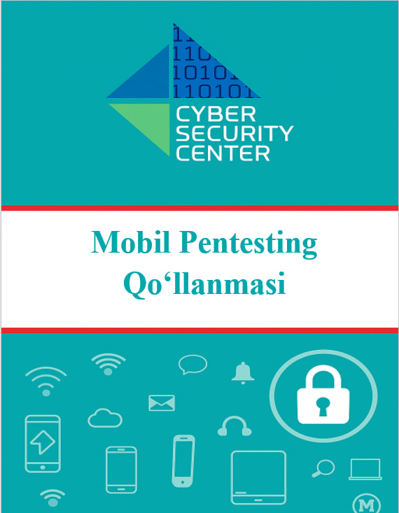
Mobil ilovalar xavfsizligi
Smartfonlarni bozoridagi ulushi
Bozor ulushini tushunish orqali biz kiber jinoyatchilarning nimalarni nishonga olayotganini va potentsial himoya nuqtalarini bilib olamiz. Mobil ilova ishlab chiquvchilari o‘z ilovasini Play market yoki App Storega joylashtirib, sotishdan tushgan daromadning bir qismi bilan mukofotlanishadi. Juda keng tarqalgan operatsion tizimlar esa jinoyatchilarning e’tiborini tortadi, chunki ular ko‘proq qurbon va daromad imkoniyati mavjud bo‘lgan auditoriyani o‘z ichiga oladi.
designveloper.com saytidagi ma’lumotlarga qaraganda smartfonlar, operatsion tizimiga qarab quydagicha mintaqalarda tarqalgan.
Android operatsion tizimi
Android bu mobil qurilmalar (smartfonlar va planshetlar) uchun yaratilgan Linux asosidagi ochiq manbali operatsion tizimdir. U Google hamda boshqa kompaniyalar rahbarligidagi Open Handset Alliance tomonidan ishlab chiqilgan. Android OS Linuxga asoslangan bo‘lib, C/C++ tilida dasturlash mumkin, ammo ilova yaratishda asosan Java ishlatiladi. Java orqali C kutubxonalariga JNI (Java Native Interface) yordamida murojaat qilinadi. Android smartfonlar, planshetlar, elektron kitoblar, raqamli pleerlar, qo‘l soatlari, fitnes brasletlar, o‘yin pristavkalari, noutbuklar, netbuklar, smartbuklar, Google Glass ko‘zoynaklari, televizorlar, proyektorlar va boshqa qurilmalar uchun mo‘ljallangan operatsion tizim (2015-yilda avtomobilning ko‘ngilochar tizimlari va maishiy robotlar uchun ham qo‘llab-quvvatlash paydo bo‘lgan). Android Linux yadrosi asosida yaratilgan va Google tomonidan ishlab chiqilgan Java virtual mashinasi asosidagi texnologiyalardan foydalanadi. Keyinchalik Google Open Handset Alliance ochiq platformani qo‘llab-quvvatlovchi va rivojlantiruvchi alyansni tashkil etdi. 2014-yilning ikkinchi choragida dunyo bo‘yicha sotilgan smartfonlarning 86 foizida Android operatsion tizimi o‘rnatilgan edi. 2017-yil may oyida bo‘lib o‘tgan ishlab chiquvchilar konferensiyasida Google Android tizimida ishga tushirilgan qurilmalar soni 2 milliarddan oshganini e’lon qilgan. StatCounter platformasi ma’lumotlariga ko‘ra, 2024-yil noyabr oyida Androidning global smartfon bozoridagi ulushi 72% ni tashkil qilgan.
iOS operatsion tizimi
iOS (avval iPhone OS deb atalgan) bu Apple tomonidan o‘zining mobil qurilmalari uchun maxsus ishlab chiqilgan mobil operatsion tizimdir. U ilk bor 2007-yil yanvar oyida birinchi avlod iPhone uchun e’lon qilingan va 2007-yil iyun oyida ishga tushirilgan. iPhonedan tashqari, iOS Apple tomonidan ishlab chiqilgan yana uchta operatsion tizimning asosi hisoblanadi: iPadOS, tvOS va watchOS. iOS ilgari iPadlarni ham boshqarardi, biroq 2019-yilda iPadOS taqdim etilgach, bu vazifani iPadOS o‘z zimmasiga oldi. Shuningdek, iPod Touch qurilmalari ham iOS asosida ishlagan, biroq ular ishlab chiqarishdan to‘xtatilgan. iOS dunyodagi ikkinchi eng keng tarqalgan mobil operatsion tizim bo‘lib, Androiddan keyin turadi. 2023-yil dekabr holatiga ko‘ra, Applening App Store do‘konida 3,8 milliondan ortiq iOS ilovalari mavjud. iOS macOS tizimiga asoslangan. Bu Unixga o‘xshash operatsion tizim hisoblanadi. iOSning ayrim qismlari Apple Public Source License va boshqa litsenziyalar asosida ochiq manba sifatida taqdim etilgan bo‘lsada, iOSning o‘zi xususiy (proprietary) dasturiy ta’minot hisoblanadi. iOS Applening mobil qurilmalar (iPhone, iPad, iPod Touch) uchun ishlab chiqilgan Unixga yaqin operatsion tizimidir. U XNU yadrosi (Darwin) asosida qurilgan. iOS 1.0 2007-yilgi birinchi iPhone bilan chiqib, dastlab faqat o‘z ichki ilovalari (Safari, Mail, Photos) va ko‘p tegizishli interfeysni ta’minladi. Keyingi yillar davomida har bir yirik yangilanish yangi funksiyalar bilan birga xavfsizlik kuchayishlarini ham olib keldi. Masalan, iOS 2.0 (2008) App Store, push xabarnoma va ma’lumotlarni to‘liq shifrlashni joriy etdi. iOS 4 (2010) multitasking va batafsil sandbox qoidalari, iOS 5 (2011) ob-havo va iCloud integratsiyasini kiritdi. iOS 7 (2013) interfeysni yangiladi, 64-bit arxitektura va manzil fazosini tasodifiylashtirish qo‘llab-quvvatlashni boshladi. So‘nggi versiyalarda xavfsizlikni mustahkamlashga e’tibor qaratilib, masalan, iOS 9 da App Transport Security (ATS) standarti joriy etilib, barcha tarmoq aloqalari uchun kamida TLS 1.2 talab qilindi. iOS 12–15 da xotirani himoya qilish, Secure Enclave (maxfiy ma’lumotlarni ushlab turuvchi maxsus protsessor) va ikki faktorli autentifikatsiya kabi texnologiyalar ishlab chiqildi.
Mobil ilovalarning turlari
Hozirda turli ehtiyojlar uchun minglab ilovalar mavjud: chat, videokonferensiyalar, o‘yinlar, sog‘liqni tekshirish, qimor o‘yinlari, ijtimoiy tarmoqlar, savdo va moliyaviy xizmatlar va boshqalar.
Kelajakdagi qiziqarli texnologiyalardan biri iOS va Android qurilmalarida ishlovchi ilovalar bo‘lib, ular atrofdagi beaconlardan signal qabul qilib, unga mos javob beradi. Bunday ilovalar iBeacon deb ataladi. Ilovalar quyidagi turlarga ajratiladi:
-
Native ilovalar – har bir platformaga mos yozilgan dasturlar
-
Mobil veb-ilovalar – brauzerda ishlaydigan saytlarga o‘xshashlar
-
Gibrid ilovalar – veb va native texnologiyalarni birlashtirganlar
Native ilovalar
Native ilovalar mobil operatsion tizim ichida o‘rnatiladi va tegishli ilova do‘konlari orqali (App Store, Google Play) tarqatiladi. Bunday ilovalar odatda platformaga mos rivojlantirish vositalari va dasturlash tillarida yaratiladi masalan, iOS ilovalari uchun Xcode + Objective‑C yoki Swift, Android ilovalari uchun esa Android Studio + Java yoki Kotlin ishlatiladi. Ular aynan shu platforma uchun mo‘ljallangan bo‘lib, qurilmadagi barcha imkoniyatlardan kamera, GPS, telefon kontaktlari va boshqa funktsiyalardan to‘liq foydalana oladi.
Mobil web ilovalar
Mobil veb-ilovalar bu native (ya’ni qurilmaga o‘rnatiladigan haqiqiy mobil ilova) bo‘lmagan ilovalardir. Ularning aksariyati HTML5, JavaScript va CSS texnologiyalari asosida yaratilgan bo‘lib, foydalanuvchiga mobil ilovalardagidek ko‘rinish va ishlash uslubini taqdim etadi. Foydalanuvchilar bu ilovalarga oddiy veb-sahifaga kirgandek tashrif buyurishadi, ya’ni ular brauzer orqali ochiladi. Ular aynan mobil qurilmalar uchun moslashtirilgan veb-sahifalardir. Bu turdagi ilovalar HTML5 paydo bo‘lgach ommalasha boshladi, chunki shu orqali odamlar brauzer orqali oddiy native ilovalardagidek funksiyalarni ishlata olishdi. Ularni ishlab chiqish va test qilish oson, chunki ular uchun ko‘plab ishlab chiqish vositalari mavjud.
Gibrid ilovalar
Gibrid ilovalar deganda ikki xil ma’no tushuniladi. Birinchidan, bu veb-kontent va qurilmadagi native (ya’ni o‘rnatilgan) komponentlarning birlashmasidan tashkil topgan ilovalardir. Ular mobil qurilmaning xizmatlaridan, ayniqsa, ma’lumotlarni saqlash (storage) imkoniyatidan foydalanadi. Ikkinchidan, bu mijoz-server (client-server) arxitekturasiga asoslangan mobil ilovalardir. Masalan, korxona uchun mo‘ljallangan mobil ilovalar (enterprise apps) bunga kiradi. Gibrid ilovalar aslida veb-texnologiyalar (HTML5, CSS, JavaScript) asosida yaratilgan bo‘lib, ular native mobil ilova shakliga o‘raladi va barcha platformalarda ishlay oladigan xususiyatga ega bo‘ladi. Ya’ni, bu ilovalar veb ilovalarning moslashuvchanligi va native ilovalarning kuchli jihatlarini birlashtiradi. Masalan, quyidagi rasmda mashhur yangiliklar ilovasining ekrandan olingan tasviri berilgan bo‘lib, bu aynan gibrid ilovaga misol bo‘ladi.
Ommaviy Android va iOS zaifliklari
Android va iOSdagi turli xil zaifliklarni ko‘rib chiqishdan oldin, ushbu bo‘lim sizni Android va iOSni operatsion tizim sifatida tanishtiradi va mobil ilovalar xavfsizligi bo‘yicha tajriba orttirish uchun tushunilishi kerak bo‘lgan turli fundamental tushunchalarni qamrab oladi.
| Yil | Android | Android API | iOS |
|---|---|---|---|
| 2007/2008 | 1.0 | 1 | iPhone OS 1 |
| iPhone OS 2 | |||
| 2009 | 1.1 | 2 | iPhone OS 3 |
| 1.5(Cupcake) | 3 | ||
| 1.6(Donut) | 4 | ||
| 2.0(Eclair) | 5 | ||
| 2.0.1(Eclair) | 6 | ||
| 2010 | 2.1(Eclair) | 7 | iOS 4 |
| 2.2(Froyo) | 8 | ||
| 2.3-2.3.2(Gingerbread) | 9 | ||
| 2011 | 2.3.4-2.3.7 (Gingerbread) | 10 | iOS 5 |
| 3.0 (HoneyComb) | 11 | ||
| 3.1 (HoneyComb) | 12 | ||
| 3.2 (HoneyComb) | 13 | ||
| 4.0-4.0.2 (Ice Cream Sandwich) | 14 | ||
| 4.0.3-4.0.4 (Ice Cream Sandwich) | 15 | ||
| 2012 | 4.1 (Jelly Bean) | 16 | iOS 6 |
| 4.2 (Jelly Bean) | 17 | ||
| 2013 | 4.3 (Jelly bean) | 18 | iOS 7 |
| 4.4 (KitKat) | 19-20 | ||
| 2014 | 5.0 (Lollipop) | 21 | iOS 8 |
| 5.1 (Lollipop) | 22 | ||
| 2015 | 6.0 (Marshmallow) | 23 | iOS 9 (beta) |
| 2016 | 7.0 (Nougat) | 24-25 | iOS 10 |
| 2017 | 8.0 (Oreo) | 26-27 | iOS 11 |
| 2018 | 9.0 (Pie) | 28 | iOS 12 |
| 2019 | 10 | 29 | iOS 13 |
| 2020 | 11 | 30 | iOS 14 |
| 2021 | 12 | 31-32 | iOS 15 |
| 2022 | 13 | 33 | iOS 16 |
| 2023 | 14 | 34 | iOS 17 |
| 2024 | 15 | 35 | iOS 18 |
| 2025 | 16(beta) | 36 | iOS 26(beta) |
Hewlett Packard (HP) tomonidan olib borilgan qiziqarli tadqiqotda bu yirik dasturiy ta’minot kompaniyasi 600 dan ortiq kompaniyalarga tegishli 2000 dan ortiq mobil ilovani sinovdan o‘tkazgan quyidagi statistika aniqlangan.
-
Sinovdan o‘tgan ilovalarning 97% i hech bo‘lmaganda bitta shaxsiy ma’lumot manbaiga murojaat qiladi.
-
86% ilovalar zamonaviy hujumlarga qarshi oddiy binary hardening (binar xavfsizlik mustahkamlash) himoya vositalaridan foydalanmagan.
-
75% ilovalar mobil qurilmada ma’lumot saqlayotganda to‘g‘ri shifrlash usullaridan foydalanmagan.
-
Aniqlangan zaifliklarning 71% i veb-serverlarda joylashgan.
-
18% ilovalar foydalanuvchi nomi va parollarni HTTP orqali yuborgan, yana 18% esa SSL/HTTPSni noto‘g‘ri joriy qilgan.
Shunday qilib, mobil ilovalarda uchraydigan asosiy zaifliklar quyidagilardan kelib chiqadi: xavfsizlik bo‘yicha yetarli tushunchaning yo‘qligi, ishlab chiquvchilarning foydalanish qulayligi bilan xavfsizlik o‘rtasidagi muvozanatni topa olmasligi, ilovalarning ortiqcha ruxsatlar talab qilishi va shaxsiy hayotga bo‘lgan e’tiborsizlik. Bunga qo‘shimcha ravishda, ilovalarga oid hujjatlarning yetarli emasligi natijasida ishlab chiquvchilar ushbu zaifliklardan bexabar bo‘lib qolishadi.
OWASP Mobil Top 10
OWASP Mobile Top 10 ̶ bu mobil ilovalardagi eng xavfli va keng tarqalgan xavfsizlik xatoliklari ro‘yxati bo‘lib, uni OWASP (Open Worldwide Application Security Project) tashkiloti tomonidan tuziladi. OWASP Mobile Top 10 2024 autentifikatsiyadan tortib xavfsiz ma’lumotlarni saqlashgacha bo‘lgan 10 ta zaiflikni o‘z ichiga oladi va mobil xavfsizlik stsenariysi haqida umumiy ma’lumot beradi. Ushbu ro‘yxat:
-
mobil ilova ishlab chiquvchilarga,
-
test qiluvchilarga
-
xavfsizlik mutaxassislariga
mobil xavfsizlik bo‘yicha yo‘l-yo‘riq beradi va eng muhim zaifliklarga qarshi qanday choralar ko‘rish kerakligini ko‘rsatadi.
OWASPning soʻnggi hisobotida eng xavfli va keng tarqalgan 10 ta zaifliklar roʻyxati keltirilgan.
-
Improper Credential Usage - Login ma’lumotlaridan noto‘g‘ri foydalanish.
-
Inadequate Supply Chain Security – Ta’minot zanjiri xavfsizligining yetarli emasligi.
-
Insecure Authentication/Authorization – Xavfsiz bo‘lmagan autentifikatsiya va avtorizatsiya.
-
Insufficient Input/Output Validation - Kiritilayotgan/yuborilayotgan ma’lumotlar yetarlicha tekshirilmasligi.
-
Insecure Communication – Xavfsiz bo‘lmagan aloqa.
-
Inadequate Privacy Controls - Maxfiylik nazorati yetarli emasligi.
-
Insufficient Binary Protections - Ikkilik (binary) fayl himoyasi yetarli emasligi.
-
Security Misconfiguration - Noto‘g‘ri xavfsizlik konfiguratsiyasi.
-
Insecure Data Storage – Xavfsiz bo‘lmagan ma’lumot saqlanishi.
-
Insufficient Cryptography – Kriptografiya himoyasi yetarli emasligi.
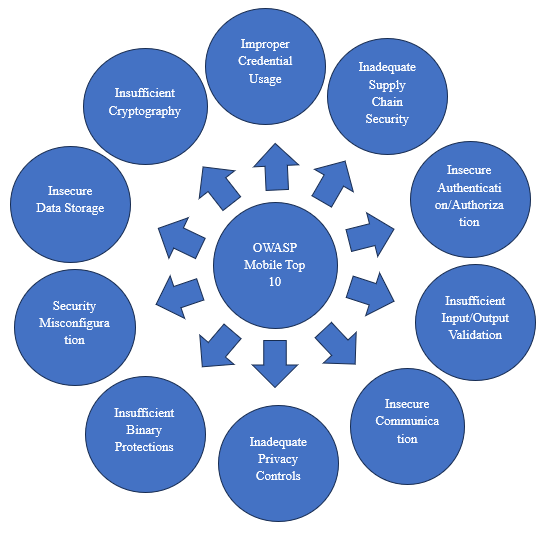
1-rasm. OWASP Mobile Top 10
Improper Credential Usage (Login ma’lumotlaridan noto‘g‘ri foydalanish.) – Aksariyat mobil ilovalar hali ham hisob ma’lumotlaridan noto‘g‘ri foydalanish xavfiga duch kelishadi. Ushbu zaiflik ilovalar foydalanuvchi hisob ma’lumotlarini to‘g‘ri ishlatilmaganligi yoki xavfsiz bo‘lmagan joylarda saqlanmaganligi orqali paydo bo‘ladi. Hisob ma’lumotlarini xavfsiz saqlamaganligi tufayli yomon niyatli foydalanuvchilarni ruxsatsiz kirishi va foydalanuvchi hisoblari va maxfiy ma’lumotlardan noto‘g‘ri maqsadlarda foydalanishga olib kelishi mumkin.
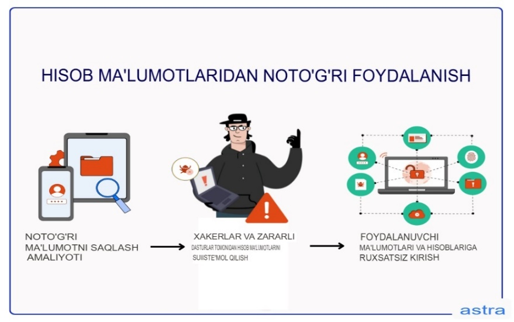
Hisob ma’lumotlari ya’ni foydalanuvchi login va parollarini noto‘g‘ri ishlatilishi ilovaning xavfsizligini jiddiy zaiflashtiradi. Agar hisob ma’lumotlari to‘g‘ri himoyalanmasa yoki noto‘g‘ri saqlansa, hujumchilar ularni osongina qo‘lga kiritib, ilova yoki uning serveriga ruxsatsiz kira oladi.
Inadequate Supply Chain Security(Ta’minot zanjiri xavfsizligining yetarli emasligi) – Ishlab chiquvchilar mobil ilovalarni yaratishda ko‘pincha boshqa kompaniyalar yoki ochiq manbali jamoalar tomonidan yaratilgan kodlar, kutubxonalar yoki vositalardan foydalanadilar. Bu ularga ilovalarni tezroq yaratishga va noldan boshlamasdan funksiyalar qo‘shishga yordam beradi. Biroq, agar ushbu uchinchi tomon komponentlaridan birortasi eskirgan yoki zaif bo’lsa, ular ilovaga jiddiy zaifliklarni kiritishi mumkin.
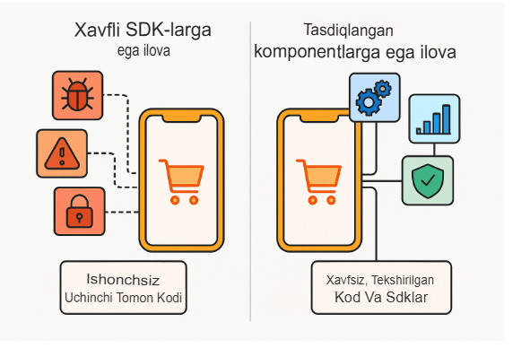
Zaif ta’minot zanjiri bu uchinchi tomon komponentlari va kutubxonalar orqali tarqaladigan zaifliklarning mavjudligi, mobil ilovalarni yaratishda ruxsat etilgan joylarda (kamroq vaqt ichida) ishlab chiqaruvchilar foydalanadilar.
Insecure Authentication and Authorization(Xavfsiz bo‘lmagan autentifikatsiya va avtorizatsiya) – Yana bir keng tarqalgan OWASP Mobile Top 10 zaifligi mobil ilovalarda autentifikatsiya avtorizatsiyaning zaifligi bo‘lib, muhim funksiyalar va maxfiy ma’lumotlarga ruxsatsiz kirishga ruxsat berishi mumkin. Bu shuni anglatadiki, hujumchilar foydalanuvchi identifikatorlarini tekshirishning dastlabki bosqichini chetlab o‘tishlari mumkin (masalan: bitta login ostida bir nechta odam autentifikatsiya qilinganda).
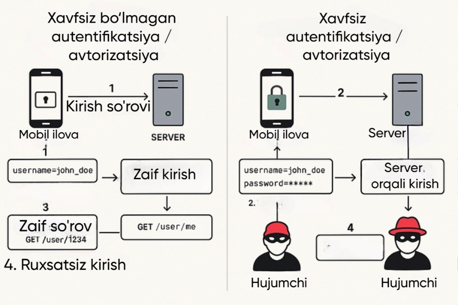
Zaif parol siyosati, seansni noto‘g‘ri boshqarish, kirishni noto‘g‘ri boshqarish va ko‘p faktorli autentifikatsiyaning yo‘qligi ba’zi bir keng tarqalgan muammolarning bir nechta misolidir. Buzg‘unchilar bunday zaifliklardan autentifikatsiyani chetlab o‘tish, o‘z imtiyozlarini oshirish yoki haqiqiy foydalanuvchi nomini o‘zgartirish uchun foydalanishi mumkin (IDOR va imtiyozlarni kuchaytirish).
Insufficient Input/Output Validation(Kiritilayotgan va yuborilayotgan ma’lumotlar yetarlicha tekshirilmasligi) – Mobil ilovada foydalanuvchi tomonidan kiritilgan maʼlumotlari yetarli darajada tekshirilmaganligi va sanitarizatsiya qilinmaganligi jiddiy xavfsizlik muammolarini keltirib chiqarishi mumkin. Bunday ma’lumotlarni to’g’ri tekshira olmaydigan va zararsizlantira olmaydigan mobil ilovalar mobil muhitlarga xos hujumlar, jumladan SQL in’ektsiyasi, buyruqlarni kiritish va saytlararo skript (XSS) hujumlari tufayli foydalanish xavfi ortadi. Ushbu zaifliklar zararli oqibatlarga olib kelishi mumkin, jumladan, maxfiy ma’lumotlarga ruxsatsiz kirish, ilova funksiyalarini manipulyatsiya qilish va butun mobil tizimning potentsial buzilishi.
Insecure Communication(Xavfsiz bo‘lmagan aloqa) – Ko‘pgina zamonaviy mobil ilovalar bir yoki bir nechta uzoq serverlar bilan ma’lumot almashadi. Ma’lumot uzatish sodir bo‘lganda, u odatda mobil qurilmaning tashuvchisi tarmog’i va internet orqali o‘tadi, simni tinglayotgan tahdid agenti, agar u ochiq matnda yoki eskirgan shifrlash protokoli yordamida uzatilgan bo‘lsa, ma’lumotlarni ushlab turushi va o‘zgartirishi mumkin. Tahdid agentlari nozik ma’lumotlarni o‘g’irlash, josuslik qilish, shaxsni o‘g’irlash va boshqalar kabi turli maqsadlarga ega bo’lishi mumkin.
Inadequate Privacy Controls(Maxfiylik nazoratini yetarli emasligi) – Ilovalar foydalanuvchi manzili, yoshi yoki kredit karta maʼlumotlari kabi shaxsiy maʼlumotlarni toʻplaganda va maʼlumotlarni xavfsiz saqlamasa, bunday muammolarga duch kelishi mumkin. Asosiy to’siqlar ma’lumotlarni haddan tashqari saqlash, foydalanuvchi roziligini ta’minlash imkoniyatlarini yo‘qotish va samarasiz himoya choralaridir. Buzg’unchilar shaxsiy ma’lumotlarga kirish yoki hatto ma’lumotlarni himoya qilish qonunlarini buzish uchun ushbu zaifliklardan foydalanishlari mumkin.
Ishlab chiquvchilar ushbu xavfni shaxsiy hayotga yangi yovuzlik sifatida qarash, ma’lumotlar yig‘ishni minimallashtirish va Dizayn bo‘yicha maxfiylik tamoyilini qabul qilish orqali tuzatishi mumkin. Ular barcha maxfiy shaxsiy ma’lumotlarni kuchli shifrlash bilan saqlashi va foydalanuvchi boshqaruvini ta’minlashi, foydalanuvchilar o‘z almashish yoki o‘chirishni nazorat qilishlarini ta’minlashi kerak.
Insufficient Binary Protections(Ikkilik (binary) fayl himoyasi yetarli emasligi) – Ilovadagi binary fayllarni nishonga olgan tajovuzkorlar turli sabablarga ko‘ra turtki bo‘ladi. Binary faylda tajovuzkor noto‘g‘ri foydalanishi mumkin bo’lgan tijorat API kalitlari yoki qattiq kodlangan kriptografik sirlar kabi qimmatli sirlar bo’lishi mumkin. Bunga qo’shimcha ravishda, ikkilik kod o’z-o’zidan qimmatli bo’lishi mumkin, masalan, u muhim biznes mantig’ini yoki oldindan o’rgatilgan AI modellarini o‘z ichiga oladi. Ba’zi yomon niyatli foydalanuvchilar ilovaning o’ziga ham mo‘ljallanmagan bo’lishi mumkin, lekin undan hujumga tayyorgarlik ko’rish uchun tegishli backendning potentsial zaif tomonlarini o’rganish uchun foydalanishi mumkin.
Security Misconfiguration(Noto‘g‘ri xavfsizlik konfiguratsiyasi) – Mobil ilovalardagi xavfsizlik noto’g’ri konfiguratsiyasi zaifliklar va ruxsatsiz kirishga olib kelishi mumkin bo‘lgan xavfsizlik sozlamalari, ruxsatlar va boshqaruv elementlarining noto‘g‘ri konfiguratsiyasini bildiradi. Xavfsizlik noto‘g‘ri konfiguratsiyasidan foydalanishi mumkin bo‘lgan tahdid manbalarilari maxfiy ma’lumotlarga ruxsatsiz kirishni yoki zararli harakatlarni amalga oshirishni maqsad qilgan foydalanuvchilardir. Tahdid manbalari qurilmaga jismoniy kirish huquqiga ega bo’lgan hujumchi bo‘lishi mumkin, bu qurilmadagi zararli dastur bo‘lib, u zaif dastur kontekstida ruxsatsiz harakatlarni amalga oshirish uchun xavfsizlik noto‘g‘ri konfiguratsiyasidan foydalanadi.
Insecure Data Storage(Xavfsiz bo‘lmagan ma’lumot saqlanishi) – Mobil qurilmada ma’lumotlarni saqlash uchun bizga SQLite ma’lumotlar bazasi kerak, bu mobil ilovada tez-tez ishlatiladigan saqlash turi. Foydalanish juda oson. Ushbu turdagi bizda zaiflik xavfi bor, chunki ishlab chiquvchi ma’lumotlarni keshlash yoki ikkinchi marta ishlatish uchun saqlaydi, bu umuman yaxshi amaliyot emas. Ushbu maʼlumotlar bazasida foydalanuvchi nomi, parol, debet karta raqami va hokazolarni saqlash shart emas. Biz ilovalardan birida zaiflikni topdik, lekin ular foydalanuvchi nomi va parolni saqlagan ilova nomini ayta olmaymiz. Telefon root qilingan bo’lsa, SQLite DB dan ma’lumotlarni olish oson.
Insufficient Cryptography(Kriptografiya himoyasi yetarli emasligi) – Mobil ilovalarda xavfsiz kriptografiyadan foydalanadigan tahdid manbalari maxfiy ma’lumotlarning maxfiyligi, yaxlitligi va haqiqiyligini buzishi mumkin. Ushbu tahdid agentlari sirli maʼlumotlar shifrini ochish uchun kriptografik algoritmlar yoki ilovalarni nishonga olgan tajovuzkorlar, kriptografik jarayonlarni manipulyatsiya qiluvchi yoki shifrlash kalitlarini sizib tashlaydigan zararli insayderlar, razvedka maqsadlarida kriptotahlil bilan shugʻullanuvchi davlat tomonidan homiylik qilinadigan hakerlar, zaif shifrlashdan foydalanadigan kiberjinoyatchilar, moliyaviy maʼlumotlarni oʻgʻirlash yoki oʻgʻirlash uchun hujum qiluvchi kiberjinoyatchilarni oʻz ichiga oladi. kriptografik protokollar yoki kutubxonalardagi zaifliklar.
Mobil ilovalarni buzish va teskari muhandislik
Teskari muhandislik va dasturiy o‘zgarishlar kiritish (patching) usullari uzoq yillardan beri krakerlar, modifikatsiya qiluvchilar (modderlar), zararli dasturiy ta’minot tahlilchilari va shu sohadagi boshqa mutaxassislar faoliyatining ajralmas qismi bo‘lib kelmoqda. Ilgari “an’anaviy” xavfsizlik tadqiqotchilari uchun teskari muhandislik qo‘shimcha bilim va malaka sifatida qaralgan bo‘lsa, bugungi kunda bu yondashuv mobil ilovalarni chuqur tahlil qilishda tobora muhim o‘rin egallab bormoqda.
Zamon o‘zgarmoqda endi mobil ilovalarni “qora quti” sifatida tahlil qilish, ya’ni ularning ichki tuzilmasi va ish faoliyatini manba kodisiz tahlil qilish uchun ilovalarni teskari tuzish, ularga yamoq (patch) qo‘llash, hatto jonli ishlayotgan jarayonlarni manipulyatsiya qilish kabi murakkab usullar zarur bo‘lmoqda. Shu bilan birga, ko‘pgina mobil ilovalar buzg‘unchilikka qarshi turli himoya mexanizmlarini joriy qilmoqda, bu esa xavfsizlik sinovchilari ishini anchayin murakkablashtiradi.
Umuman olganda, mobil ilovani teskari muhandislik qilish bu kompilyatsiya qilingan (ya’ni mashina uchun tarjima qilingan) dasturiy kod orqali uning dastlabki tuzilmasi va funksiyalarini anglash, ya’ni asl manba kodi haqida xulosa chiqarish jarayonidir. Teskari muhandislikning asosiy maqsadi kodni tushunish, uning qanday ishlashini anglab yetishdir.
Buzg‘unchilik (tampering) esa bu jarayonga yanada faol aralashuvni anglatadi: bu ilovaning o‘zini yoki uning ishlash muhitini o‘zgartirish orqali dastur xatti-harakatiga ta’sir o‘tkazishdir. Masalan, ilova ildiz (root) huquqiga ega bo‘lgan qurilmada ishlashdan bosh tortsa, sinovchi uning bu xatti-harakatini chetlab o‘tish yoki o‘zgartirish ehtiyojida qoladi. Bunday hollarda ilova ish faoliyatini sun’iy tarzda o‘zgartirishga to‘g‘ri keladi. Mobil xavfsizlik bo‘yicha faoliyat yurituvchi mutaxassislar teskari muhandislikning asosiy tushunchalarini chuqur tushunmog‘i lozim. Bundan tashqari, ularga mobil qurilmalarning texnik xususiyatlari – protsessor arxitekturasi, bajariladigan fayl formatlari, platformaga xos dasturlash tillari va boshqa tizimli tafsilotlar ham yaxshi tanish bo‘lishi zarur.
Shuni unutmaslik kerakki, teskari muhandislik bu nafaqat texnika, balki san’atdir. Uning har bir jihatini to‘liq tushuntirish uchun butun bir kutubxona yozish mumkin. Bu sohada ishlovchi mutaxassislar ba’zan yillar davomida faqat bitta aniq, izolyatsiyalangan texnik muammoni yechishga harakat qilishadi – bu zararli kodni avtomatlashtirilgan tarzda tahlil qilish yoki obfuskatsiya (murakkablashtirish) orqali yashirilgan funksiyalarni ochib berish kabi murakkab vazifalar bo‘lishi mumkin. Aksincha, xavfsizlik sinovchilari esa strategik yondashuvga ega generallardir: ular tahlil qilish zarur bo‘lgan katta hajmdagi texnik ma’lumotlarni ajratib olish, baholash va amaliy xulosalar chiqarishda samarali bo‘lishi kerak.
Android va iOS ilovalardagi zaifliklari
Mobil ilovalarda ko‘p uchraydigan zaifliklar quydagilar. Ilovada parollar, tokenlar yoki kriptografiya kalitlari kabi maxfiy ma’lumotlarni kod ichiga qattiq kod qilib yozib qo‘yish keng tarqalgan zaiflik hisoblanadi. Bunday holatda hujumchi oddiygina APK faylini dekompilyatsiya qilib, ichidan maxfiy ma’lumotlarni topib olishi mumkin. Android Developer sahifasida ta’kidlanishicha, dasturchilar ko‘pincha aniq paket fayllarda yoki strings.xml kabi resurslarda maxfiy ma’lumotlarni matn yoki bayt massiv ko‘rinishida saqlaydi. Bu Kerchoff prinsipiga zid bo‘lib, ilovaning xavfsizlik modelini tubdan buzadi. JADX-GUIni ochish uchun siz shunchaki jadx-guiterminalga kirishingiz mumkin. Ushbu vosita bizga APKdan ma’lumot olish va dekompilyatsiya qilingan kodni ko‘rish imkonini beradi.
Insertion of Sensitive Data into Logs(Maxftoiy ma’lumotlarni loglarga kiritish)
Zaiflik: Ilova maxfiy ma’lumotlarni (parol, PII, token, kriptografik kalit) log fayllariga yozadi.
Eksplutatsiya oqibatida: Log fayllarini o‘qib, maxfiy ma’lumotlarni olish mumkin.
Yechim: Maxfiy ma’lumotlarini logga yozmaslik kerak.
Sensitive Data Stored With Insufficient Access Restrictions in Internal Locations (Ichki joylarda (fayllarda yoki papkalarda) yetarli kirish cheklovlarisiz saqlanayotgan maxfiy ma’lumotlar)
Zaiflik: Maxfiy ma’lumotlar ichki joylarda yetarli kirish cheklovlarisiz saqlanadi va boshqa ilovalar tomonidan o‘qilishi mumkin.
Ekspluatatsiya oqibatlari: Fayl yoki papkalarga kirib, maxfiy ma’lumotlarni olish mumkin.
Yechim: Ma’lumotlarni faqat ilova uchun ruxsatlar bilan saqlang yoki xavfsiz saqlash mexanizmlaridan foydalaning.
Backup Unencrypted(Shifrlanmagan zaxira nusxasi)
Zaiflik: Ilova zaxira nusxalarni shifrlamasdan saqlaydi, bu maxfiylikni xavf ostiga qo‘yadi.
Ekspluatatsiya oqibatlari: Zaxira fayllarini o‘qib, maxfiy ma’lumotlarni olishWA mumkin.
Yechim: Zaxira nusxalarni qurilmada va tranzitda shifrlash orqali himoyalang.
Sensitive Data Not Excluded From Backup(Zaxiradan maxfiy ma’lumotlar chiqarib tashlanmagan)
Zaiflik: Ilova foydalanuvchi va ilova maxfiy ma’lumotlarini zaxira (backup) jarayonida avtomatik yoki noto‘g‘ri sozlama tufayli chiqarib tashlamaydi. Natijada, bulut yoki mahalliy zaxira fayllarida maxfiy ma’lumotlar saqlanib qoladi. Bu foydalanuvchi ma’lumotlari xavfsizligini buzishi va hujumchiga zararli manipulyatsiya imkonini beradi.
Ekspluatatsiya oqibatlari: Hujumchi backup fayllariga kirib, ulardagi maxfiy ma’lumotlarni o‘g‘irlashi yoki o‘zgartirishi mumkin. Bu, masalan, foydalanuvchi hisobiga ruxsatsiz kirish, shaxsiy ma’lumotlarni oshkor qilish yoki ilovaning noto‘g‘ri ishlashiga olib kelishi mumkin.
Yechim: Maxfiy fayllarni backupdan chiqarib tashlash (Android: android:allowBackup yoki BackupAgent bilan excludeFromBackup; iOS: NSURLIsExcludedFromBackupKey va shifrlash). Maxfiy ma’lumotlarni backupga tushmaydigan joylarda saqlash (iOS: Keychain yoki Library/Caches). Agar ma’lumot backupga tushsa ham, ularni oldindan shifrlash.
API Keys Hardcoded in the App Package (Ilova paketida API kalitlarining (hardcoded) joylashtirilishi)
Zaiflik: Ilova paketida, manba kodida yoki kompilyatsiyalangan binarlarda API kalitlari va boshqa maxfiy ma’lumotlar qattiq (hardcoded) holda saqlanadi. Teskari muhandislik yoki paketni tahlil qilish orqali hujumchi ushbu kalitlarni osongina aniqlab, xizmatlarga ruxsatsiz murojaat qilishi mumkin.
Ekspluatatsiya oqibatlari: Hujumchi olingan kalitlardan foydalanib, backend yoki uchinchi tomon API’lariga ruxsatsiz so‘rov yuborishi, ma’lumotlarni o‘qishi yoki o‘chirishi, hisoblarni buzishi yoki xizmatlar uchun to‘lovlarni keltirib chiqarishi mumkin. Doimiy kalit fosh bo‘lsa, zarar uzoq davom etadi; shuning uchun xavf katta.
Yechim: API kalitlarini ilovada ochiq holatda saqlamaslik.
MASWE-0006: Sensitive Data Stored Unencrypted in Private Storage Locations (Maxfiy ma’lumotlar shifrlanmagan holda xususiy saqlash joylarida saqlangan)
Zaiflik: Ilova sandbox’ida (mahalliy fayl tizimi, SharedPreferences va hokazo) maxfiy ma’lumotlar shifrlanmagan yoki noto‘g‘ri shifrlangan holda saqlanadi. Shifrlash kaliti ham ilovada yoki yaqin joyda bo‘lsa, xavf saqlanadi.
Ekspluatatsiya oqibatlari: Lokal kirish, zaxira yoki boshqa zaifliklardan foydalangan holda PII, parol, token yoki kalitlar o‘g‘irlanishi mumkin — hisoblar buzilishi va ma’lumotlar oshkor bo‘lishi ehtimoli bor.
Yechim: Mahalliy saqlash zarur bo‘lsa — ma’lumotlarni shifrlab saqlash va kalitlarini keystore/keychain (Android Keystore, iOS Keychain) saqlash, EncryptedFile/EncryptedSharedPreferences yoki iOS Data Protection kabi vositalardan foydalanib, to‘g‘ri shifrlash.
Sensitive Data Stored Unencrypted in Shared Storage Requiring No User Interaction (Foydalanuvchi aralashuvisiz umumiy saqlash joyida (shared storage) shifrlanmagan holda saqlanayotgan maxfiy ma’lumotlar)
Zaiflik: Ilovalar tashqi (shared/external) saqlash joyida foydalanuvchi aralashuvisiz maxfiy ma’lumotlarni shifrlanmagan holda saqlaydi. Agar zararli ilova yoki foydalanuvchi ruxsatlari mavjud bo‘lsa, bu ma’lumotlar osonlik bilan olinishi, o‘zgartirilishi yoki o‘chirilib ketishi mumkin. Android qurilmalarida bu eng dolzarb, iOS esa qat’iy sandbox bilan himoyalangan.
Ekspluatatsiya oqibatlari: Hujumchi SD-karta, emulyatsiya qilingan tashqi saqlash yoki boshqa ilovalardan foydalangan holda foydalanuvchining PII, parol, token va boshqa maxfiy ma’lumotlarini o‘g‘irlashi yoki o‘zgartirishi mumkin, bu ilova xavfsizligiga jiddiy tahdid yaratadi.
Yechim: Tashqi saqlashda ma’lumotlarni albatta shifrlang va shifrlash kalitlarini ilovada saqlamang; ularni aparat darajasida himoyalangan keystore/Keychain orqali boshqaring. Iloji bo‘lsa, ma’lumotlarni ilovaning xususiy sandboxida yoki ichki saqlashda saqlang. Android’da xavfsiz saqlash uchun EncryptedFile API’idan foydalanish tavsiya etiladi.
Missing Device Secure Lock Verification Implementation(Qurilmaning xavfsiz qulflash tekshiruvining (secure lock verification) amalga oshirilmaganligi)
Zaiflik: Ilova qurilmada parol/PIN/biometrik mavjudligini tekshirmaydi.
Ekspluatatsiya oqibatlari: Qurilmaga kirib, ilova ichidagi maxfiy ma’lumotlarni o‘qish yoki sezgir funksiyalarni ruxsatsiz bajarish mumkin.
Yechim: Ilova ishga tushishdan yoki sezgir operatsiyalarni bajarishdan oldin qurilmada haqiqiy secure lock mavjudligini tekshirsin (Android: isDeviceSecure(), iOS: LAContext.canEvaluatePolicy() va Keychain himoya sinflari).
Improper Cryptographic Key Generation(Noto‘g‘ri kriptografik kalit yaratish)
Zaiflik: Kalitlar CSPRNG ishlatmasdan, deterministik/statik tarzda yoki foydalanuvchi parolidan to‘g‘ridan‑to‘g‘ri hosil qilinadi. Eskirgan algoritmlar yoki qisqa kalit uzunligi ishlatiladi.
Ekspluatatsiya oqibatlari: Zaif/bashorat qilinadigan kalit orqali shifrlangan ma’lumotlar ochilishi, sessiyalar soxtalashtirilishi yoki tizim buzilishi mumkin.
Yechim: Kalitlar CSPRNG (SecureRandom/CryptoKit) bilan yaratilishi kerak; paroldan to‘g‘ridan‑to‘g‘ri kalit hosil qilmaslik — PBKDF2/scrypt/Argon2 kabi KDFlardan foydalanish; kalitlarni kodda hardcode qilmaslik, Android Keystore / iOS Keychain / KMS da saqlash; AEAD va kalit rotatsiyasini joriy qilish.
Improper Cryptographic Key Derivation(Noto‘g‘ri kriptografik kalit hosil qilish)
Zaiflik: Foydalanuvchi paroli yoki boshqa manbadan kalit hosil qilishda xavfsiz mexanizmlar (PBKDF2, scrypt, Argon2) ishlatilmaydi, iteratsiyalar/salt qo‘llanmaydi yoki deterministik/soddalashtirilgan usul tanlanadi.
Ekspluatatsiya oqibatlari: Zaif kalit hosil qilish orqali hujumchi shifrlangan ma’lumotlarni ochishi, sessiya tokenlarini qayta tiklashi yoki tizim xavfsizligini buzishi mumkin.
Yechim: Kalit hosil qilishda KDF (PBKDF2, scrypt, Argon2) dan foydalaning; salt, ko‘p iteratsiya va kerakli kalit uzunligi ni qo‘llang. Kalitlarni xavfsiz saqlash uchun Android Keystore / iOS Keychain yoki KMSdan foydalaning.
Cryptographic Key Rotation Not Implemented(Kriptografik kalitlarni yangilash (rotation) amalga oshirilmagan)
Zaiflik: Ilova kriptografik kalitlarni muntazam yangilamaydi. Agar kalit buzilsa yoki kompromat bo‘lsa, ma’lumot xavfsizligi uzoq vaqt davomida ta’minlanmaydi.
Ekspluatatsiya oqibatlari: Eskirgan yoki buzilgan kalitlar orqali hujumchi shifrlangan ma’lumotlarni ochishi, sessiyalarni buzishi yoki tizim xavfsizligini buzishi mumkin.
Yechim: Kalitlarni muntazam ravishda yangilang (key rotation) va eski kalitlarni bekor qiling. Uzoq muddatli (asymmetric) kalitlar uchun avtomatlashtirilgan rotatsiya va kalit almashinuvi mexanizmlaridan foydalaning. Har bir kalit uchun cryptoperiodni belgilab, NIST.SP.800-57 tavsiyalariga amal qiling.
Insecure or Wrong Usage of Cryptographic Key (Kriptografik kalitni noto‘g‘ri yoki xavfsiz bo‘lmagan tarzda ishlatish)
Zaiflik: Kriptografik kalit bir necha maqsad uchun ishlatiladi yoki noto‘g‘ri algoritm bilan qo‘llanadi. Masalan, shifrlash uchun ishlatilishi kerak bo‘lgan kalit imzo yoki autentifikatsiya uchun ishlatiladi.
Ekspluatatsiya oqibatlari: Kalitning noto‘g‘ri ishlatilishi shifrlash, imzo va autentifikatsiya xavfsizligini buzadi, ma’lumotlarni ochish yoki manipulyatsiya qilish imkonini beradi.
Yechim: Har bir kalitni faqat bir maqsad uchun ishlating; shifrlash, de-shifrlash, imzo va autentifikatsiya uchun alohida kalitlar yarating; kalit boshqaruvi va foydalanish siyosatlarini NIST.SP.800-57 tavsiyalariga muvofiq qat’iy amalga oshiring.
Cryptographic Keys Not Properly Protected at Rest (Saqlash paytida kriptografik kalitlar to‘g‘ri himoyalanmagan)
Zaiflik: Ilovalar kriptografik kalitlarni saqlash paytida himoyalanmagan joylarda saqlaydi masalan, shifrlanmagan SharedPreferences, himoyalanmagan fayllar yoki kod ichida hardcoded. Bu kalitlar dekompilyatsiya va reverse-engineering orqali oson topilishi mumkin.
Ekspluatatsiya oqibatlari: Hujumchi kalitlarni qo‘lga kiritib, shifrlangan ma’lumotlarni ochishi yoki tizim xavfsizligini buzishi mumkin.
Yechim: Kalitlarni platforma keystore’larida saqlang (Android KeyStore, iOS Keychain). Eng xavfli holatlar uchun apparat himoyalangan yechimlardan foydalaning (Android StrongBox, iOS Secure Enclave). Server tomonda kalitlarni boshqarish va ilova runtime’da xavfsiz API orqali olishini ta’minlang. Zarur bo‘lsa, envelope encryption va key wrapping usullarini qo‘llang. Kalitlarni muntazam yangilash (rotation) va xavfsiz boshqaruv standartlariga rioya qiling (NIST.SP.800-57).
Deprecated Android KeyStore Implementations (Eskirgan Android KeyStore implementatsiyalari)
Zaiflik: Ilova Androidda endi tavsiya etilmaydigan kriptografik saqlash usullarini ishlatadi (masalan, BKS yoki hardcoded kalitlar).
Ekspluatatsiya oqibatlari: Hujumchi kalitlarni oson qo‘lga kiritishi yoki ma’lumotlarni buzishi mumkin.
Yechim: Eskirgan formatlardan voz keching; Android Keystore API yoki PKCS#12 kabi zamonaviy va qo‘llab-quvvatlanadigan formatlardan foydalaning; kriptografik kutubxonalarni muntazam yangilang.
Unsafe Handling of Imported Cryptographic Keys (Import qilingan kriptografik kalitlarni xavfsiz bo‘lmagan tarzda ishlatish)
Zaiflik: Tashqi manbadan import qilingan kalitlar tekshirilmasdan qabul qilinadi, noto‘g‘ri formatda saqlanadi yoki himoyasiz holda (plaintext) ishlatiladi.
Ekspluatatsiya oqibatlari: Hujumchi soxta yoki noto‘g‘ri kalit yuborib, shifrlashni buzishi, ma’lumotlarni ochishi yoki tizimni manipulyatsiya qilishi mumkin.
Yechim: Import qilingan kalitlarni validatsiya qiling; xavfsiz formatda saqlang (Android Keystore / iOS Keychain); kalitlarga ruxsatlarni cheklang; kalitlarni tekshirish, rotatsiya va audit mexanizmlarini joriy qiling.
Cryptographic Keys Not Properly Protected on Export (Eksport qilinayotgan kriptografik kalitlar to‘g‘ri himoyalanmagan)
Zaiflik: Ilova kalitlarni eksport qilishda ularni alohida himoyalamaydi (key wrapping yoki qo‘shimcha shifrlashsiz).
Ekspluatatsiya oqibatlari: Hujumchi kalitlarni tarmoqda yoki qabul qiluvchi tizimda o‘g‘irlashi yoki o‘zgartirishi mumkin; shifrlangan ma’lumotlar ochilishi yoki autentifikatsiya buzilishi ehtimoli mavjud.
Yechim: Kalitlarni eksportdan oldin key wrapping yoki boshqa kalit bilan shifrlash orqali himoyalang; yaxlitlikni imzo yoki MAC bilan tekshiring; faqat ishonchli va autentifikatsiyalangan protokollardan foydalaning; qabul qiluvchi tomon kalitni tekshirish va xavfsiz saqlashni ta’minlasin.
Cryptographic Keys Access Not Restricted(Kriptografik kalitlarga kirish cheklangan emas)
Zaiflik: Kriptografik kalitlarga kirish uchun cheklovlar yetarli emas — kalitlar qurilmadagi boshqa jarayonlar yoki ilovalar tomonidan ham qo‘llanishi mumkin.
Ekspluatatsiya oqibatlari: Kriptografik kalitlarga kirish uchun cheklovlar yetarli emas kalitlar qurilmadagi boshqa jarayonlar yoki ilovalar tomonidan ham qo‘llanishi mumkin.
Yechim: Kirishni faqat autentifikatsiyalangan foydalanuvchi va xavfsiz kontekstda ruxsat eting (iOS: kSecAttrAccessibleWhenUnlockedThisDeviceOnly, Android: setUnlockedDeviceRequired(true)); device‑bound saqlashdan foydalaning; kalitdan foydalanish vaqtini va amallarini cheklang; sezgir operatsiyalar uchun PIN/biometriya talab qiling; kalit rotatsiyasi va audit siyosatini joriy qiling.
Risky Cryptography Implementations (Xavfli kriptografik implementatsiyalar)
Zaiflik: Ilova standartlarga mos kelmaydigan yoki yetarli sinovdan o‘tmagan kriptografik yechimlardan foydalanadi — masalan, sertifikatlanmagan algoritmlar, qo‘lda yozilgan S-boxlar, XOR/Base64 kabi kriptografik bo‘lmagan funksiyalar.
Ekspluatatsiya oqibatlari: Bunday implementatsiyalar orqali shifrlash buzilishi, ma’lumotlar ochilishi yoki imzolar noto‘g‘ri hosil qilinishi mumkin. Natijada maxfiylik va yaxlitlikni ta’minlash imkoni yo‘qoladi.
Yechim: Faqat standart va keng sinovdan o‘tgan kutubxonalar (OpenSSL, BoringSSL, Conscrypt, CryptoKit) dan foydalaning; qo‘l bilan kriptografik algoritm yozishdan saqlaning. Agar maxsus yechim zarur bo‘lsa, uni FIPS 140-2/3 yoki NIST talablariga mos ravishda ishlab chiqing. Kod tekshiruvlari va xavfsizlik auditi muntazam o‘tkazilishi lozim.
Improper Encryption(Noto‘g‘ri shifrlash)
Zaiflik: Ilova eskirgan yoki noto‘g‘ri shifrlash usullaridan foydalanadi — masalan, XOR/Base64, AES‑ECB, RC4, IV/nonce’larni qayta ishlatish yoki kam entropiyali tasodifiylik manbalaridan foydalanish.
Ekspluatatsiya oqibatlari: Noto‘g‘ri shifrlash orqali naqshlar aniqlanishi, plaintext farqlari tiklanishi yoki shifrlangan ma’lumotlar dekript qilinishi mumkin. Natijada maxfiylik va yaxlitlik buziladi.
Yechim: Zamonaviy AEAD shifrlash (AES‑GCM, ChaCha20‑Poly1305) ishlating, noyob IV/nonce yarating, kalitlarni xavfsiz hosil qiling va saqlang, eskirgan modlardan voz keching.
Improper Hashing(Noto‘g‘ri hashlash)
Zaiflik: Eskirgan yoki zaif xeshlar (MD5, SHA‑1) sezgir ma’lumotlarda ishlatiladi.
Ekspluatatsiya oqibatlari: Parollar yoki ma’lumotlar bruteforce/kolliziya orqali buzilishi mumkin.
Yechim: Parollar uchun hisoblash og‘ir xeshlar (bcrypt, scrypt, Argon2) ishlating; umumiy ma’lumotlar uchun SHA‑256/SHA‑3 qo‘llang; har doim salt va kerak bo‘lsa pepper qo‘shing.
Predictable Initialization Vectors (IVs) (Initialization Vector (IV)larning oldindan taxmin qilinishi)
Zaiflik: IV hardcode qilingan, null yoki qayta ishlatiladi — bu shifrlashni zaiflashtiradi.
Ekspluatatsiya oqibatlari: Hujumchi naqshlarni aniqlashi yoki plaintextni tiklashga yaqinlashishi mumkin.
Yechim: Har bir shifrlash uchun noyob va tasodifiy IV yarating (CSPRNG orqali), hardcode yoki null qo‘ymang, (kalit + IV) juftligini qayta ishlatmang. IV maxfiy kalit bilan birga saqlanmasin.
Risky Padding(Xavfli padding)
Zaiflik: Shifrlashda noto‘g‘ri padding ishlatiladi (masalan, PKCS#1 v1.5, AES‑CBC), yoki padding xatolari/timing oshkor qilinadi — bu padding‑oracle hujumlariga yo‘l ochadi.
Ekspluatatsiya oqibatlari: Shifrlangan ma’lumot asta‑sekin tiklanishi yoki paketlar soxtalanishi mumkin.
Yechim: Paddingga asoslangan hujumlardan qochish uchun faqat autentifikatsiyalangan shifrlash modlarini ishlating (AES‑GCM yoki ChaCha20‑Poly1305). Agar AES‑CBC ishlatish majburiy bo‘lsa, albatta Encrypt‑then‑MAC (HMAC bilan) usulini qo‘llang. RSA uchun PKCS#1 v1.5 o‘rniga OAEP dan foydalaning. Har qanday padding yoki decrypt xatolarini foydalanuvchiga ochiq ko‘rsatmang, vaqt farqlarini bir xil ushlab turing.
Improper Use of Message Authentication Code (MAC) (Xabar autentifikatsiya kodi (MAC)ni noto‘g‘ri qo‘llash)
Zaiflik: MAC noto‘g‘ri konstruktsiya yoki noto‘g‘ri qo‘llaniladi (eskirgan hash, qisqa tag, tag tekshiruvi noto‘g‘ri joyda yoki constant‑time solishtirish yo‘qligi), natijada ma’lumot yaxlitligi zaiflashadi.
Ekspluatatsiya oqibatlari: Tagni soxtalash, replay yoki timing hujumlari orqali ma’lumotni o‘zgartirish yoki autentifikatsiyani aylanib o‘tish mumkin.
Yechim: Zamonaviy konstruktsiyalarni ishlating (HMAC‑SHA256/512 yoki AEAD: AES‑GCM / ChaCha20‑Poly1305); MACni ma’lumotni ochishdan oldin tekshiring, constant‑time solishtirishdan foydalaning; replay’ga qarshi nonce yoki timestamp qo‘shing; MAC kalitlarini xavfsiz saqlang va muntazam rotatsiya qiling.
Improper Generation of Cryptographic Signatures (Kriptografik imzolarni noto‘g‘ri yaratish)
Zaiflik: Eskirgan imzo algoritmlari (SHA1withRSA), qisqa kalitlar yoki ECDSA’da takrorlanuvchi/tasodifiy bo‘lmagan nonce ishlatiladi — imzo yaratish jarayonidagi tasodifiylik va tekshiruv noto‘g‘ri boshqariladi.
Ekspluatatsiya oqibatlari: Hujumchi imzoni soxtalashi, xabarlarni o‘zgartirib ham yaroqli imzo ostida ko‘rsatishi yoki hatto maxfiy kalitni tiklashi mumkin — autentifikatsiya va yaxlitlik buziladi.
Yechim: Zamonaviy konstruktsiyalarni ishlating (RSA uchun RSASSA‑PSS, ECDSA uchun kuchli egri + SHA‑256/384/512); nonce har imzo uchun noyob va kriptografik tasodifiy bo‘lsin (yoki deterministik ECDSA – RFC6979); konstant‑time tekshirishni qo‘llang; kalitlarni keystore/secure enclave orqali himoyalang.
Improper Verification of Cryptographic Signature (Kriptografik imzoni noto‘g‘ri tekshirish)
Zaiflik: Imzo tekshiruvi to‘liq yoki to‘g‘ri bajarilmaydi — eskirgan algoritmlar (SHA1/MD5), noto‘g‘ri parametrlar yoki timing orqali tekshiruv aylanib o‘tilishi mumkin.
Ekspluatatsiya oqibatlari: Soxta xabar yaroqli imzo sifatida qabul qilinishi, autentifikatsiya va yaxlitlik buzilishiga olib keladi.
Yechim: Imzoni ma’lumotni ishlatishdan oldin tekshiring; zamonaviy imzo sxemalarini qo‘llang (RSA‑PSS + SHA‑256/384/512 yoki tavsiya etilgan ECDSA). Tekshiruv constant‑time usulda bajarilsin, xato tafsilotlari oshkor qilinmasin. Public kalit manbasi ishonchli bo‘lishi, yaxlitligi tekshirilishi va kalitlar keystore/secure enclave’da saqlanishi kerak.
Improper Random Number Generation (Noto‘g‘ri tasodifiy sonlar generatsiyasi)
Zaiflik: Tasodifiy sonlar yetarli entropiyasiz yoki oldindan taxmin qilinadigan manbalardan olinadi (vaqt, qattiq urug‘ va h.k.).
Ekspluatatsiya oqibatlari: Kelajakdagi token, sessiya ID yoki kalitlarni oldindan bilish mumkin bo‘ladi — xavfsizlik buziladi.
Yechim: Kriptografik jihatdan xavfsiz PRNG ishlating (SecureRandom, SecRandomCopyBytes va h.k.); hardcoded urug‘lardan voz keching, har bir tasodifiy qiymat noyob va yuqori entropiyali bo‘lishi kerak.
MFA Implementation Best Practices Not Followed (Ko‘p omilli autentifikatsiya (MFA)ni amalga oshirishda eng yaxshi amaliyotlar bajarilmagan)
Zaiflik: MFA xavfsiz va to‘g‘ri ishlatilmaydi, hisoblar buzilish xavfi mavjud.
Ekspluatatsiya oqibatlari: MFA himoyasi aylanib o‘tish, ruxsatsiz kirishlar yoki hisob buzilishi mumkin.
Yechim: SMS/voice o‘rniga push notification yoki authenticator ilovalarini ishlating; MFA tekshiruvini serverda ham amalga oshiring; kodlar noyob, qisqa muddatli va qayta ishlatilmasin; platformaning autofill API va standart yechimlaridan foydalaning (Sign-in with Apple, Android/iOS autofill).
Step-Up Authentication Not Implemented After Login (Kirishdan so‘ng qo‘shimcha autentifikatsiya (Step-Up Authentication) amalga oshirilmagan)
Zaiflik: Kirishdan keyin sezgir harakatlar uchun qo‘shimcha autentifikatsiya talab qilinmaydi.
Ekspluatatsiya oqibatlari: Parol o‘zgartirish yoki maxfiy ma’lumotlarga ruxsatsiz kirish sodir bo‘lishi mumkin.
Yechim: Sezgir harakatlarda step-up autentifikatsiya joriy qiling; foydalanuvchini serverda MFA yoki ishonchli metod bilan tekshiring; kodlar noyob, vaqtinchalik va qayta ishlatilmas bo‘lsin; SMS/voice o‘rniga push notification yoki authenticator ilovalarini ishlating.
Re-Authenticates Not Triggered On Contextual State Changes(Kontekstga bog‘liq holat o‘zgarishlarida qayta autentifikatsiya chaqirilmagan)
Zaiflik: Foydalanuvchi sessiyasi davomida muhim kontekst o‘zgarishlari (background foreground, joylashuv, profil o‘zgarishi) qayta autentifikatsiyani talab qilmaydi.
Ekspluatatsiya oqibatlari: Moliyaviy tranzaksiyalar, maxfiy ma’lumotlar yoki profil o‘zgartirishlarda ruxsatsiz kirish sodir bo‘lishi mumkin.
Yechim: Kontekst o‘zgarishini aniqlab, foydalanuvchidan qayta autentifikatsiya talab qiling; sessiyalarni timeout bilan cheklang; sezgir operatsiyalar oldidan MFA, parol yoki biometrik tasdiqlashni majburiy qiling; tekshiruvni serverda ham bajaring.
Insecure use of Android Protected Confirmation(Android Protected Confirmation xavfsiz ishlatilmagan)
Zaiflik: Protected Confirmation foydalanuvchiga sezgir ma’lumotlarni xavfsiz ko‘rsatmaydi; parol, PIN yoki moliyaviy ma’lumotlar xavf ostida.
Ekspluatatsiya oqibatlari: Maxfiy ma’lumotlar foydalanuvchi xabarsiz oshkor bo‘lishi yoki manipulyatsiyaga uchrashi mumkin.
Yechim: Protected Confirmation faqat foydalanuvchi tasdiqlashi talab qiladigan operatsiyalar uchun ishlatilsin; maxfiy ma’lumotlar uchun Android Keystore, BiometricPrompt kabi xavfsiz APIlardan foydalaning; foydalanuvchi nima tasdiqlayotganini aniq tushunishi va interfeys manipulyatsiyasiz bo‘lishini ta’minlang.
Platform-provided Authentication APIs Not Used(Platforma tomonidan taqdim etilgan autentifikatsiya APIlaridan foydalanilmagan)
Zaiflik: O‘z autentifikatsiya mexanizmingizni yaratish xavfsizlikni zaiflashtiradi, chunki platforma API’lari ekspertlar tomonidan ishlab chiqilgan va muntazam yangilanadi.
Ekspluatatsiya oqibatlari: Foydalanuvchi ma’lumotlari xavf ostida qolishi, autentifikatsiya zaifliklari va yuqori texnik xizmat xarajatlari yuzaga keladi.
Yechim: O‘z mexanizmingizni yaratishdan saqlaning. Android’da AccountManager va Credential Auto-fill, iOS’da Authentication Services va Password AutoFill ishlating. Uchinchi tomon autentifikatsiyasi uchun ASWebAuthenticationSession dan foydalaning. Platforma API’lari xavfsizlik va foydalanuvchi tajribasini ta’minlaydi va muntazam yangilanadi.
Authentication or Authorization Protocol Security Best Practices Not Followed(Autentifikatsiya yoki avtorizatsiya protokollari uchun xavfsizlikning eng yaxshi amaliyotlariga amal qilinmagan)
Zaiflik: Ilova autentifikatsiya yoki avtorizatsiya protokollarini noto‘g‘ri yoki eskirgan usullar bilan amalga oshiradi, xavfsizlik tavsiyalariga amal qilmaydi.
Ekspluatatsiya oqibatlari: Maxfiy ma’lumotlar, sessiyalar yoki foydalanuvchi hisoblari ruxsatsiz ishlatilishi yoki buzilishi mumkin.
Yechim: Zamonaviy va standart protokollarni qo‘llang (OAuth 2.0, OpenID Connect, FIDO2). HTTPS/TLS orqali barcha ma’lumotlarni uzating, tokenlarni xavfsiz saqlang va ulardan faqat kerakli kontekstda foydalaning. Eskirgan algoritm va parametrlarni ishlatmang, autentifikatsiya va avtorizatsiyani muntazam audit qiling.
Passwordless Authentication Not Implemented(Parolsiz autentifikatsiya amalga oshirilmaganligi.)
Zaiflik: Ilova passkey yoki FIDO2/WebAuthn kabi parolsiz autentifikatsiya usullarini ishlatmaydi, foydalanuvchi hisoblari parol o‘g‘irlanishiga va zaif himoyaga moyil bo‘ladi.
Ekspluatatsiya oqibatlari: Parol o‘g‘irlanishi, brute-force hujumlar va foydalanuvchi ma’lumotlarining buzilishi xavfi mavjud.
Yechim: Passkeys (FIDO2/WebAuthn) va multi-device FIDO credentiallardan foydalaning. iOS’da ASAuthorization, Android/Web’da WebAuthn API orqali autentifikatsiyani amalga oshiring. Jismoniy xavfsizlik kalitlari (USB/smartcard) bilan foydalanuvchini identifikatsiya qiling va parolsiz autentifikatsiyani MFA bilan birlashtiring.
Authentication Material Stored Unencrypted on the Device(Autentifikatsiya ma’lumotlari qurilmada shifrlanmagan holda saqlangan.)
Zaiflik: Ilova token, session ID yoki parol kabi autentifikatsiya ma’lumotlarini qurilmada plaintext yoki shifrlanmagan ko‘rinishda saqlaydi. Bu ma’lumotlar osongina o‘g‘irlanishi va hisob buzilishiga olib kelishi mumkin.
Ekspluatatsiya oqibatlari: Qurilmaga kirish imkoni bo‘lgan kishi ushbu ma’lumotlarni tekshirishsiz yuklab olishi yoki o‘g‘irlashi mumkin.
Yechim: Autentifikatsiya ma’lumotlarini shifrlangan holda Keychain/KeyStore’da saqlang, plaintext ishlatmang, tokenlar muddati tugashini belgilang va serverda tekshiring.
Authentication Material Sent over Insecure Connections (Xavfsiz bo’lmagan ulanishlar orqali yuborilgan autentifikatsiya materiallari)
Zaiflik: Ilova token, parol yoki sessiya ma’lumotlarini HTTPS/TLS himoyasiz, HTTP yoki boshqa xavfsiz bo‘lmagan kanallar orqali yuboradi.
Ekspluatatsiya oqibatlari: Ma’lumotlar tarmoqda ushlab qolinish, o‘g‘irlanish yoki o‘zgartirilish xavfiga ega bo‘ladi.
Yechim: Ma’lumotlarni faqat TLS/HTTPS orqali uzating. Sertifikat tekshirishni majburiy qiling, certificate pinning va HSTS mexanizmlarini qo‘llang. HTTP yoki boshqa xavfsiz bo‘lmagan kanallardan foydalanmang.
Authentication Tokens Not Validated(Autentifikatsiya tokenlari tasdiqlanmaganligi)
Zaiflik: Token (OAuth2, JWT va boshqalar) qabul qilinadi, lekin imzo, muddati (exp), issuer (iss), audience (aud) kabi maydonlar to‘liq serverda tekshirilmaydi yoki faqat client tomonda tekshiriladi.
Ekspluatatsiya oqibatlari: Noto‘g‘ri yoki buzilgan token qabul qilinishi mumkin, bu ruxsatsiz kirish yoki sessiyani boshqarish bilan tugashi mumkin.
Yechim: Tokenni faqat serverda tekshiring. Imzo, exp, iss va aud maydonlarini majburiy validatsiya qiling. JWT uchun alg maydoni tekshirilib, “none” yoki zaif algoritmlar rad etilishi kerak — RS256/ES256 kabi xavfsiz algoritmlardan foydalaning. Token almashinuvi uchun authorization code + PKCE oqimidan foydalaning; implicit grant’dan saqlaning. Refresh tokenlarni xavfsiz saqlang va revocation / blacklist mexanizmini serverda joriy qiling. Client tomondagi tekshiruvlar foydali bo‘lishi mumkin, lekin yakuniy tasdiqlash har doim serverda bajarilishi shart.
Shared Web Credentials and Website-association Not Implemented (Shared Web Credentials va Website-association amalga oshirilmagan)
Zaiflik: Ilova va unga tegishli veb-sayt o‘rtasida xavfsiz credential almashinuvi yo‘q. Foydalanuvchi bir xil hisobdan foydalanolmaydi, parollar bir necha marta kiritilishi kerak bo‘ladi.
Ekspluatatsiya oqibatlari: Foydalanuvchi tajribasi yomonlashadi, parollar qayta ishlatilishi yoki noto‘g‘ri saqlanish xavfi oshadi. Credential almashinuvi yo‘qligi ilovaga kirish ma’lumotlarini himoyasiz qiladi.
Yechim: Shared Web Credentials va Website-association fayllarini to‘g‘ri sozlang; credential almashinuvi faqat ishonchli domenlarda bo‘lsin; Apple Sign-in yoki Google Smart Lock API’laridan foydalaning.
Insecure Authentication in WebViews (WebViewlarda xavfsiz autentifikatsiya)
Zaiflik: Insecure Authentication in WebViews — bu mobil ilova ichida ishlatiladigan WebView komponenti orqali foydalanuvchini noto‘g‘ri yoki xavfsiz bo‘lmagan usulda autentifikatsiya qilish holatidir. Ya’ni, foydalanuvchining login parol, token, yoki cookie kabi maxfiy ma’lumotlari WebView orqali himoyasiz tarzda yuboriladi yoki saqlanadi.
Ekspluatatsiya oqibatlari: Tajovuzkor login jarayonini aylanib o‘tib, autentifikatsiyasiz tizimga kiradi. Agar token orqali avtorizatsiya amalga oshirilsa, tajovuzkor bu token yordamida foydalanuvchining akkauntiga to‘liq kiradi.
Yechim: Autentifikatsiyani har doim server tomonda tekshirish. WebView faqat interfeys vazifasini bajarishi kerak. Login, token tasdiqlash, foydalanuvchi sessiyasi kabi barcha jarayonlar backendda bajarilishi zarur. WebViewda JavaScriptni cheklash (setJavaScriptEnabled(false)), agar zarur bo‘lmasa.
Authentication Enforced Only Locally Instead of on the Server-side(Autentifikatsiya faqat lokal (mijoz tomonda) amalga oshiriladi, server tomonda esa tekshirilmaydi)
Zaiflik: Ushbu zaiflik mobil ilovalarda autentifikatsiya (foydalanuvchini aniqlash) jarayoni faqat ilova ichida — ya’ni mijoz tomonda (client-side) amalga oshirilganda yuzaga keladi. Server foydalanuvchi ma’lumotlarini yoki kirish tokenlarini mustaqil tekshirmaydi, bu esa hujumchiga autentifikatsiyani chetlab o‘tish imkonini beradi. Boshqacha aytganda, ilova foydalanuvchining kimligini serverdan tasdiqlovchi mexanizmsiz aniqlaydi.
Ekspluatatsiya oqibatlari: Foydalanuvchining autentifikatsiyasini bypass qilish (masalan, login ekranini o‘tkazib yuborish). Maxfiy ma’lumotlarga ruxsatsiz kirish. Server foydalanuvchini noto‘g‘ri tanib, autentifikatsiyasiz amallarni bajarishga ruxsat berishi. Session hijacking yoki token manipulyatsiyasi orqali tizimga kirish.
Yechim: Autentifikatsiya faqat server tomonda amalga oshirilishi kerak. Har bir foydalanuvchi uchun sessiya yoki token server tomonidan yaratilishi va tekshirilishi kerak. Lokal flaglar yoki keshdagi qiymatlar ishonchli manba sifatida ishlatilmasin. Har bir so‘rovda token validatsiyasi amalga oshirilsin.
Authorization Enforced Only Locally Instead of on the Server-side (Autorizatsiya faqat mijoz tomonda amalga oshiriladi, server tomonda emas)
Zaiflik: Ushbu zaiflik mobil ilovalarda ruxsat (authorization) tekshiruvi faqat mijoz tomonda ilova ichida yoki UI darajasida amalga oshirilganda yuzaga keladi. Ya’ni ilova “foydalanuvchi bu amalni bajarishga ruxsati bor” deb qaror qiladi, lekin server ushbu ruxsatni mustaqil tekshirmaydi. Natijada hujumchi mijoz kodini, so‘rovlarini yoki mahalliy saqlovlarni o‘zgartirib, cheklangan funksiyalarga yoki ma’lumotlarga ruxsatsiz kirish imkoniga ega bo‘ladi. Mijoz tomonida amalga oshirilgan ruxsat tekshiruvi o‘zgartirilishi yoki chetlab o‘tishiga juda oson (reverse-engineering, hooking, proxy, patched APK).
Ekspluatatsiya oqibatlari: Ilova menyusida “admin” elementi faqat isAdmin == true bo‘lsa ko‘rsatiladi, ammo server har bir admin-amalni tekshirmaydi hujumchi isAdmin flagini lokalda o‘zgartirib admin funksiyalarini chaqiradi. REST API’da DELETE /user/{id} endpointi mavjud va ilova oldida rol tekshiruvi qilinadi, lekin server bu endpoint uchun rolni tekshirmaydi istalgan foydalanuvchi boshqa foydalanuvchini o‘chirishi mumkin.
Yechim: Authorizationni server tomonda amalga oshiring. Har bir xavfli yoki cheklangan amal uchun serverda mustaqil ruxsat tekshiruvi bo‘lishi shart. Server so‘rovni qayta tekshirsin: kim so‘rayotgani, so‘ralayotgan resursga ruxsati bormi, operatsiya imkoniyati bormi.
App Custom PIN Not Bound to Platform KeyStore (Ilovaning maxsus PIN kodi platforma KeyStore/Keychain bilan bog‘lanmagan)
Zaiflik: Ushbu zaiflik shuni anglatadiki, mobil ilova foydalanuvchi tomonidan o‘rnatilgan yoki ilova ichida ishlovchi PIN (yoki shunga o‘xshash kod/kalit) ni platformaning xavfsiz saqlash mexanizmi Android KeyStore yoki iOS Keychain — bilan bog‘lamaydi. Natijada PIN yoki undan hosil bo‘lgan kriptografik kalitlar lokal fayllarda, SharedPreferences/NSUserDefaults, yoki ilova ichidagi shifrsiz xotirada saqlanadi yoki PIN ishlatib lokal tekshiruv amalga oshiriladi, lekin faktik kriptografik asoslangan himoya yo‘q.
Ekspluatatsiya oqibatlari: Foydalanuvchi ma’lumotlarining (tokenlar, shaxsiy ma’lumotlar, moliyaviy ma’lumotlar) oson olinishi. Ilovaga PIN bilan himoyalangan funksiyalarga ruxsatsiz kirish. Offline rejimda PIN bypass orqali sessiya ushlanishi.
Yechim: PINni hech qachon shifrsiz saqlamang. PIN yoki PIN-dan hosil bo‘lgan xom kalitlar hech qachon plain-text yoki ilova-dastur fayllarida saqlanmasin. Platform KeyStore / Keychain bilan bog‘lang.
Biometric Authentication Can Be Bypassed (Biometrik autentifikatsiya aylanib o‘tilishi mumkin)
Zaiflik: Ushbu zaiflik shuni anglatadiki, ilova yoki tizim qurilmaning biometrik autentifikatsiya mexanizmini (masalan, barmoq izi, yuz tanish, FaceID, TouchID) ishlatayotganda, bu mexanizm hujumchilar tomonidan chetlab o‘tilishi yoki aldov orqali aylanib o‘tilishi mumkin. Sabablari orasida noto‘g‘ri integratsiya, zaif o‘rnatilgan apparat/OS konfiguratsiyasi, biometrik attestation/keystore bilan bog‘lanmaslik yoki biometrik sensorlarni aldash imkonini beruvchi tashqi omillar bo‘lishi mumkin.
Ekspluatatsiya oqibatlari: Biometriklardan foydalangan holda sensitive funksiyalar (pul o‘tkazish, sozlamalar, ruxsatli resurslar) himoyalangan bo‘lsa, ularni aylanib o‘tish hujjatli zarar keltiradi.
Yechim: Hech qachon biometrik natijani faqat UI darajasida qabul qilmang. Biometrik muvaffaqiyat faqat OS provayderi tomonidan berilgan cryptographic key operation yoki attestation orqali ishonchli bo‘lishi kerak. Ilova biometrik muvaffaqiyatni server tomonida tekshirish uchun token yoki signaturni talab qilsin.
Fallback to Non-biometric Credentials Allowed for Sensitive Transactions (Muhim operatsiyalar uchun biometrikdan voz kechib, kamroq xavfsiz credentiallar (PIN/parol) ga ruxsat berish)
Zaiflik: Ushbu zaiflik shuni anglatadiki, ilova muhim yoki xavfli operatsiyalar (pul o‘tkazish, hisob sozlamalari o‘zgartirish, kredit karta ma’lumotlari ko‘rish va hokazo) uchun birinchi darajali autentifikator sifatida biometrikani talab qilsa-da, biometrik autentifikatsiya muvaffaqiyatsiz bo‘lganda yoki biometrik qurilma mavjud bo‘lmaganda osongina kamroq xavfsiz alternativ (masalan, oddiy PIN/parol yoki komponentdagi lokal flag) orqali operatsiyani bajarishga ruxsat beradi.
Ekspluatatsiya oqibatlari: Ruxsatsiz moliyaviy tranzaktsiyalar. Maxfiy ma’lumotlar (kredit karta, shaxsiy ma’lumot) oqishi. Hisob sozlamalarining o‘zgartirilishi yoki foydalanuvchi huquqlarining eskalatsiyasi. Compliance buzilishlari (masalan, PCI-DSS, PSD2 step-up talablariga zid).
Yechim: Muhim operatsiyalar uchun biometrikni “primary” deb qabul qiling, lekin fallback policy aniq va qat’iy bo‘lsin. Step-up authentication — biometrik muvaffaqiyatsiz bo‘lsa yoki biometrik mavjud bo‘lmasa, fallback sifatida server-side step-up (masalan, yuborilgan OTP, yuborilgan SMS/Push tasdiqlash, yoki ilova tomonidan yuborilgan one-time challenge) talab qilinsin.
Crypto Keys Not Invalidated on New Biometric Enrollment(Yangi biometrik enrolment (yangi barmoq izi/yuz qoʻshish) amalga oshirilganda kripto kalitlar bekor qilinmasligi)
Zaiflik: Ushbu zaiflik ilovada yoki qurilmada biometrik autentifikatorga bog‘langan kriptografik kalitlar (masalan, KeyStore/Secure Enclave ichidagi private key yoki symmetric key) yangi biometrik maʼlumot (yangi barmoq izi yoki yangi yuz profili) qoʻshilganda avtomatik yoki manual ravishda invalidatsiya qilinmasligini anglatadi.
Ekspluatatsiya oqibatlari: Kripto kalitlar orqali himoyalangan maʼlumotlarning shaxsiy va maxfiy maʼlumotlarga ruxsatsiz kirish. Sessiyalar, tokenlar yoki tranzaksiya imzolarining suiisteʼmol qilinishi.Qoʻshilgan yangi biometric bilan hujjatsiz kirish va moliyaviy zarar.
Yechim: Biometric enrollment change ga bog‘langan kalitlar yarating. Secure Enclave / Keychain uchun kSecAccessControl parametrlari orqali biometrikga bog‘langan entrylarni yaratish va shu bilan birga device passcode/biometry set o‘zgarishida elementlarni tekshirish.
Insecure Identity Pinning(Notoʻgʻri yoki zaif identitet pinlash TLS/SSL sertifikat yoki server identity pinlashning xavfsiz emasligi).
Zaiflik: Identity pinning (sertifikat pinning, public key pinning yoki TLS pinning deb ham ataladi) — bu mobil ilovani faqat ishonchli serverlar bilan aloqa o‘rnatishini ta’minlash uchun uni ma’lum bir kriptografik identifikator (sertifikat yoki public key) bilan bog‘lash jarayonidir. Agar mobil ilovada sertifikat pinning umuman joriy qilinmagan bo‘lsa yoki noto‘g‘ri amalga oshirilgan bo‘lsa, u holda ilova “Man-in-the-Middle (MITM)” (ya’ni “oradagi odam”) hujumlariga nisbatan zaif bo‘lib qoladi.
Ekspluatatsiya oqibatlari: TrustKit, OkHttp CertificatePinner, Volley yoki AFNetworking kabi kutubxonalarni noto‘g‘ri konfiguratsiya qilish. Pinlar xavfsiz bo‘lmagan kanal orqali yuklab olinadi va tekshirilmaydi — bu hujumchilarga soxta pinlarni kiritish imkonini beradi. Maxsus yozilgan pinlash funksiyasi sertifikat zanjirini yoki public keyni to‘g‘ri tekshirmasligi. Masalan, har qanday CA tomonidan tasdiqlangan sertifikatni qabul qilishi. Asosiy pin yaroqsiz bo‘lib qolgan holatda ulanishni saqlab qolish uchun zaxira pinlar bo‘lmasligi.
Yechim: Platforma tomonidan taqdim etilgan yechimlardan foydalanish: Androidda Network Security Configuration (NSC), iOSda — App Transport Security (ATS) yordamida pinlashni joriy etish. Ishonchli pinlash kutubxonalaridan foydalanish.
Insecure Machine-to-Machine Communication (Mashina-dan-mashinaga (M2M) aloqaning xavfsiz emasligi)
Zaiflik: M2M kommunikatsiya bu server, mikroxizmat, mobil backend yoki infra komponentlari oʻrtasida avtomatlashtirilgan, odam aralashuvisiz amalga oshadigan soʻrov-javob almashinuvidir (masalan: API - API, service - database proxy, mobile backend - payment gateway).
Ekspluatatsiya oqibatlari: Autentifikatsiya qilinmagan yoki notoʻgʻri himoyalangan M2M qaytalar orqali hujumchi ichki API ga tashrif buyurib, maʼlumotlarni oʻgʻirlashi yoki operatsiyalarni bajarishi mumkin. Stolen API key yoki client secret orqali hujumchi servislarga xufiyona soʻrov yuboradi. Agar TLS notoʻgʻri sozlangan yoki MITM himoyasi yoʻq bo‘lsa — trafikni oʻqish, modifikatsiya qilish yoki tokenlarni o‘g‘irlash mumkin.
Yechim: Barcha M2M trafikni TLS 1.2+ yoki TLS 1.3 bilan majburiy qiling. TLS konfiguratsiyasida faqat kuchli cipher suitelarni ruxsat eting.
Proven Networking APIs Not used (Ishonchli, sinovdan oʻtgan va xavfsiz networking kutubxonalari/OS APIlari ishlatilmaydi).
Zaiflik: Platforma tomonidan taqdim etilgan tarmoq API’lari yoki ishonchli xavfsizlik kutubxonalaridan foydalanmagan ilovalar xavfsizlik zaifliklariga moyil bo‘ladi. Dasturchilar o‘zlari maxsus tarmoq kodi (custom networking code) yoki “o‘z qo‘li bilan yozilgan” xavfsizlik mexanizmlarini yaratganlarida, ular kriptografiya va tarmoq xavfsizligi bo‘yicha yetarli tajribaga ega bo‘lmaganligi sababli, turli zaifliklarni kiritish xavfini oshiradilar.
Ekspluatatsiya oqibatlari: Maxsus yozilgan tarmoq kodi orqali hujumchilar zaif joylarni topib, ma’lumotlar sizib chiqishi yoki ruxsatsiz kirish holatlarini sodir etishlari mumkin.
Yechim: Har doim platforma tomonidan taqdim etilgan tarmoq API’larini qo‘llash va iOS uchun NSURLSession Android uchun HttpsURLConnection. Bu API’lar ko‘plab xavfsizlik masalalarini avtomatik tarzda hal qiladi.
Cleartext Traffic(Shifrlanmagan (cleartext) tarmoq trafikining ishlatilishi).
Zaiflik: Cleartext Traffic ilova va serverlar (yoki servislar orasidagi) o‘rtasida uzatilayotgan maʼlumotlar TLS/SSL kabi transport-level shifrlashsiz (yaʼni plain HTTP, FTP, telnet yoki boshqa shifrlanmagan protokollar orqali) yuborilganda yuzaga keladi. Bu holatda trafik osongina tarmoqqa qaram (on-path) hujumchi tomonidan tinglanishi (eavesdropping), o‘zgartirilishi (man-in-the-middle), yoki qayta yuborilishi (replay) mumkin.
Ekspluatatsiya oqibatlari: Login maʼlumotlari, sessiya tokenlari, kartalar va PII shifrlanmagan holda o‘g‘irlanadi. MITM orqali trafikni o‘zgartirib tranzaksiyalar manipulyatsiya qilinishi mumkin. Ilovaning konfiguratsiyasi (API kalitlari, endpointlar) oshkor bo‘lishi mumkin.
Yechim: Barcha so‘rovlarni HTTPSga o‘tkazish, eski HTTP endpointlarni o‘chirib tashlash yoki HTTPSga yo‘naltirish, ichki API va test serverlarida ham shifrlangan aloqani majburiy qilish, shuningdek MitM hujumlaridan himoya uchun HSTS va certificate pinning qo‘llash tavsiya etiladi.
Unprotected Open Ports( Himoyasiz ochiq portlar)
Zaiflik: Tegishli himoyasiz tarmoqli portlarni ochadigan ilovalar ruxsatsiz kirish va ekspluatatsiya xavfiga duch keladi. Ushbu zaiflik ilova tarmoq portida tinglayotganda va kiruvchi ulanishlarni yetarli xavfsizlik choralari ko‘rmasdan qabul qilganda yuzaga keladi, bu esa boshqa ilovalar yoki hujumchilarga u bilan ulanib, o‘zaro aloqada bo‘lish imkonini beradi.
Ekspluatatsiya oqibatlari: Hujumchilar ochiq portlarga ulanib, ilova funksiyalariga yoki maxfiy ma’lumotlarga kirish huquqiga ega bo‘lishi mumkin.
Yechim: Ilovani faqat kerakli interfeyslarga bog‘lang va INADDR_ANY kabi umumiy manzillardan foydalanmang. Ochiq portlar orqali ishlaydigan barcha xizmatlarda autentifikatsiya va avtorizatsiyani majburiy qiling.
Insecure Certificate Validation(Xavfsiz bo‘lmagan sertifikatni tekshirish)
Zaiflik: TLS sertifikatlarini to‘g‘ri tekshirmaydigan ilovalar xavfsiz aloqa jarayonida “Machine-in-the-Middle (MITM)” hujumlariga va boshqa xavf-xatarlarga moyil bo‘ladi. Bu zaiflik ilova yaroqsiz, muddati o‘tgan, o‘zi tomonidan imzolangan yoki ishonchsiz sertifikatlarni tekshirmasdan qabul qilganida yuzaga keladi. Natijada tarmoq orqali uzatilayotgan ma’lumotlarning yaxlitligi va maxfiyligi buzilishi mumkin.
Ekspluatatsiya oqibatlari: Hujumchilar tarmoq orqali uzatilayotgan maxfiy ma’lumotlarni qo‘lga kiritishlari mumkin. Hujumchi uzatilayotgan ma’lumotni o‘zgartirishi yoki zararli kontent kiritishi mumkin. Maxfiy yoki shaxsiy ma’lumotlar oshkor bo‘lishi xavfi mavjud. Hujumchilar autentifikatsiya tokenlari yoki foydalanuvchi ma’lumotlarini qo‘lga kiritib, tizimlarga noqonuniy kirishlari mumkin.
Yechim: TLS sertifikatlarini har doim tizim yoki ishonchli uchinchi tomon CA ro‘yxati orqali tekshiring. Ishlab chiqarish (production) muhitida o‘zi imzolangan yoki ishonchsiz sertifikatlarni ishlatmang.
Sensitive Data Leaked via the User Interface(Foydalanuvchi interfeysi orqali maxfiy ma’lumotlarning sizib chiqishi)
Zaiflik: Foydalanuvchi interfeysi (UI) orqali maxfiy yoki sezgir ma’lumotlarning oshkor bo‘lishi bu ilovaning vizual komponentlari (ekran, bildirishnomalar, loglar, clipboard, skrinshotlar va h.k.) orqali ma’lumotlar foydalanuvchi yoki boshqa dasturlar tomonidan ko‘rinadigan holatga tushishidir. Ushbu zaiflik foydalanuvchi ma’lumotlari, tokenlar, parollar yoki boshqa maxfiy axborot noto‘g‘ri tarzda interfeysda aks etganida yuzaga keladi.
Ekspluatatsiya oqibatlari: Parollar, API kalitlari, tokenlar yoki shaxsiy ma’lumotlar foydalanuvchi interfeysida ko‘rinib qolishi mumkin. Foydalanuvchi shaxsiy ma’lumotlari boshqa ilovalar yoki shaxslar tomonidan ko‘rilishi mumkin.
Yechim: Parollar, tokenlar, yoki PIN kodlar uchun password input type dan foydalaning va ularni UIda ko‘rsatmang. Bildirishnomalarda sezgir ma’lumotlarni chiqarishdan saqlaning, ayniqsa lock-screen holatida.
Sensitive Data Leaked via Notifications(Bildirishnomalar orqali maxfiy ma’lumotlarning sizib chiqishi)
Zaiflik: Bildirishnomalar (notifications) orqali sezgir yoki maxfiy ma’lumotlarning oshkor bo‘lishi — bu ilova foydalanuvchiga yuboradigan xabarlar (push yoki local notifications) tarkibida parol, token, OTP, foydalanuvchi identifikatori, yoki boshqa maxfiy axborot mavjud bo‘lgan holatdir. Ushbu zaiflik foydalanuvchi qurilmasi qulflangan paytda yoki boshqa ilovalar tomonidan bildirishnoma mazmuni ko‘rinadigan sharoitlarda maxfiy ma’lumotlarning sizib chiqishiga sabab bo‘ladi.
Ekspluatatsiya oqibatlari: Bildirishnomada ko‘rsatilgan OTP, token, yoki foydalanuvchi ma’lumotlari boshqa foydalanuvchilar yoki dasturlar tomonidan o‘qilishi mumkin.
Yechim: Bildirishnomalarda faqat umumiy yoki kontekstual ma’lumotni ko‘rsating (masalan, “Sizga yangi xabar keldi”), lekin maxfiy ma’lumotni o‘zingizning ilova ichida ko‘rsating.
Sensitive Data Leaked via Screenshots or Screen Recordings (Ekran tasvirlari yoki ekran yozuvlari orqali maxfiy ma’lumotlarning sizib chiqishi)
Zaiflik: Mobil platformalar foydalanuvchilarga yoki uchinchi tomon ilovalariga ekran tasvirini (screenshot) olish yoki ekran yozuvini (screen recording) amalga oshirishga ruxsat beradi. Bu jarayon sezgir (maxfiy) ma’lumotlarning oshkor bo‘lishiga olib kelishi mumkin va ma’lumot sizib chiqish xavfini sezilarli darajada oshiradi. Hujumchi sezgir ma’lumotlarni quyidagi yo‘llar bilan qo‘lga kiritishi mumkin.
Ekspluatatsiya oqibatlari: Muayyan sharoitlarda hujumchi ekranda ilgari ko‘rsatilgan sezgir ma’lumotlarni qo‘lga kiritishi mumkin. Bu foydalanuvchi maxfiyligini buzib, keyingi hujumlar masalan, shaxsni o‘g‘irlash (identity theft) yoki akkauntni egallash (account takeover) uchun imkon yaratadi.
Yechim: Android operatsion tizimida WindowManager.LayoutParams. FLAG_SECURE flagini faollashtiring, bu screenshot va recording funksiyalarini bloklaydi. iOS operatsion tizimi uchun isScreenCaptured xususiyati orqali yozuv aniqlanganda UI ni xiralashtiring yoki sezgir ma’lumotni yashiring
Tapjacking Attacks(Tapjacking hujumlari)
Zaiflik: Tapjacking (Tap Hijacking) — bu foydalanuvchini chalg‘itish orqali u bilmagan holda zararli amalni bajarishga majbur qiluvchi hujum turidir. Ushbu hujumda yovuz niyatli ilova boshqa ilova oynasining ustiga shaffof (yoki yarim shaffof) interfeys joylashtiradi. Natijada foydalanuvchi ekranda biror tugmani bosayotgandek bo‘ladi, ammo aslida u boshqa, yashirin oynadagi amallarni bajarayotgan bo‘ladi.Tapjacking hujumlari odatda Android platformasida kuzatiladi va foydalanuvchi interfeysidagi qatlamlarni (overlay) noto‘g‘ri boshqarish yoki xavfsizlik flaglarining yo‘qligi natijasida amalga oshiriladi.
Ekspluatatsiya oqibatlari: Foydalanuvchi bilmagan holda dasturga ruxsat berishi, to‘lovni tasdiqlashi yoki tizim sozlamalarini o‘zgartirishi mumkin.
Yechim: Android ilovalarda android:filterTouchesWhenObscured="true" atributini ishlating bu foydalanuvchi tegishlari (tap) ustma-ust oynalardan kelsa, ularni rad etadi.
StrandHogg Attack / Task Affinity Vulnerability(StrandHogg hujumi / Task Affinity (vazifa affiniteti) zaifligi)
Zaiflik: StrandHogg hujumi — bu Android platformasiga xos xavfsizlik zaifligi bo‘lib, ilovalar o‘rtasida taskAffinity mexanizmidan noto‘g‘ri foydalanish orqali hujumchi boshqa ilovaning interfeysini soxtalashtirish (masquerading) imkoniga ega bo‘ladi. Ushbu zaiflik Androidning task management va activity launching tizimidagi kamchilikdan foydalanadi. Zararli ilova o‘zining task affinity qiymatini haqiqiy (nishon) ilova bilan bir xil qilib sozlasa, foydalanuvchi soxta ilovaga yo‘naltiriladi. Natijada foydalanuvchi hujumchi yaratgan oynada maxfiy ma’lumotlarini (masalan, login, parol, OTP) kiritib yuboradi, deb o‘ylaydi. StrandHogg hujumi foydalanuvchiga ilova nomi va belgisi (icon) haqiqiydek ko‘rinadigan qilib tuzilganligi sababli aniqlash qiyin bo‘ladi.
Ekspluatatsiya oqibatlari: Hujumchi foydalanuvchi kiritgan login va parollarni qo‘lga kiritib, haqiqiy akkauntga kira oladi. Tokenlar, OTP, yoki boshqa autentifikatsiya ma’lumotlari soxta interfeys orqali hujumchiga o‘tadi. Foydalanuvchi haqiqiy ilova bilan o‘zaro aloqada deb o‘ylaydi, ammo aslida zararli ilova bilan ishlamoqda.
Yechim: Har bir activity uchun taskAffinityni to‘g‘ri sozlang. Foydalanuvchi ma’lumotlari bilan ishlaydigan har bir activity uchun android:taskAffinity="" (bo‘sh qiymat) belgilang. Bu activity boshqa ilovalarning tasklariga kiritilmasligini ta’minlaydi.
Insecure Deep Links(Xavfsiz bo‘lmagan deep linklar (chuqur havolalar))
Zaiflik: Deep Link (chuqur havola) — bu mobil ilovalarda tashqi manbadan (masalan, veb-sahifa, SMS, yoki boshqa ilovadan) foydalanuvchini to‘g‘ridan-to‘g‘ri ilovaning ma’lum bir sahifasiga yoki funksiyasiga yo‘naltirish imkonini beruvchi mexanizmdir. Agar deep link noto‘g‘ri sozlangan bo‘lsa yoki autentifikatsiya (foydalanuvchini tekshirish) ishlamasa, bu orqali hujumchi ilova ichidagi himoyalanmagan funksiyalarni chaqirishi yoki maxfiy ma’lumotlarga ruxsatsiz kirishi mumkin. Bu zaiflik ayniqsa Android va iOS platformalarida kuzatiladi, chunki ular URI (Uniform Resource Identifier) sxemalariga asoslanadi va boshqa ilovalar ham shu sxemadan foydalanib, soxta chaqiriqlar yuborishi mumkin.
Ekspluatatsiya oqibatlari: Hujumchi foydalanuvchini autentifikatsiyasiz holda himoyalangan sahifalarga yo‘naltirishi mumkin. Deep link orqali yuborilayotgan URL ichida maxfiy ma’lumot (token, user ID va boshqalar) ochiq holda ko‘rinadi. Hujumchi foydalanuvchini soxta sahifaga yo‘naltiradi, u esa haqiqiy ilovaga o‘xshaydi.
Yechim: Agar foydalanuvchi login bo‘lmagan bo‘lsa, deep link uni avval kirish sahifasiga yo‘naltirsin. Deep link orqali yuborilgan ma’lumotlarning manbasini (getCallingPackage()) va formatini tekshirib oling. Exported activity’larni cheklang:Faqat kerakli activity’lar android:exported="true" bo‘lsin. Ichki foydalanishdagi activity’lar false qilib belgilang.
Use Of Unauthenticated Platform IPC( Autentifikatsiyalanmagan platforma ichki jarayonlararo aloqa (IPC) dan foydalanish)
Zaiflik: Platforma ichidagi Inter-Process Communication (IPC) — bu ilovalar va tizim komponentlari o‘rtasida xabar almashish va xizmat chaqirish uchun ishlatiladigan mexanizmdir (masalan, Android’da Binder, iOS’da URL schemes/x-callback-url, UNIX domain sockets, va hokazo). Agar IPC chaqiriqlari autentifikatsiyalanmagan yoki avtorizatsiyalanmagan holda qabul qilinsa, yovuz niyatli ilovalar yoki foydalanuvchi bo‘lmagan jarayonlar ushbu xizmatlarga bevosita murojaat qilib, ma’lumot o‘g‘irlashi, ruxsatlarni suiiste’mol qilishi yoki noxush amallarni bajarishi mumkin.
Ekspluatatsiya oqibatlari: Tajavuzkor ilova boshqa jarayon xizmatlariga kira oladi va maxfiy ma’lumotlarni olishi yoki boshqaruv funksiyalarini chaqirishi mumkin. IPC orqali yuborilgan yoki so‘ralgan sezgir ma’lumotlar yomon niyatli jarayonga o‘tishi mumkin.
Yechim: Chaqiruvchini identifikatsiyalang (masalan, getCallingUid()/ getCallingPackage() Androidda) va uning haqiqiyligini tasdiqlang. Kerak bo‘lsa, kriptografik tokenlar yoki signaturlar bilan autentifikatsiya qiling. Faoliyat, servis yoki content providerlarni faqat zarurat bo‘lganda exported=true qiling; aks holda false qilib belgilang.
Insecure Use of UIActivity(UIActivity komponentidan xavfsiz bo‘lmagan foydalanish)
Zaiflik: UIActivity bu iOS tizimidagi foydali mexanizm bo‘lib, u foydalanuvchilarga ilova ichidagi ma’lumotlarni boshqa ilovalar, xizmatlar yoki tizim funksiyalari bilan bo‘lishish (masalan, xabar yuborish, fayl ulashish, iCloud yoki AirDrop orqali uzatish) imkonini beradi. Ammo, agar UIActivity noto‘g‘ri ishlatilsa yoki nazorat qilinmasa, ilova maxfiy yoki sezgir ma’lumotlarni ruxsatsiz ilovalarga yuborishi, foydalanuvchi ma’lumotlarini sizdirishi, yoki boshqa ilovalar tomonidan manipulyatsiya qilinishi mumkin.
Ekspluatatsiya oqibatlari: Maxfiy ma’lumotlar (masalan, login ma’lumotlari, tokenlar, foydalanuvchi fayllari, yoki fotosuratlar) foydalanuvchi bilmagan holda uchinchi tomon ilovalarga yuborilishi mumkin. Shaxsiy yoki himoyalangan kontent (masalan, chat ma’lumotlari yoki tibbiy yozuvlar) noto‘g‘ri xizmatlar orqali tarqaladi.
Yechim: excludedActivityTypes dan foydalanib, xavfli yoki nomaqbul xizmatlarni ro‘yxatdan chiqarib tashlang (masalan, UIActivityTypePostToFacebook, UIActivityTypeMail, UIActivityTypeAirDrop agar kerak bo‘lmasa). Faqat kerakli xizmatlar orqali ulashishni ruxsat bering.
Insecure Use of App Extensions(Ilova kengaytmalaridan (App Extensions) xavfsiz bo‘lmagan foydalanish)
Zaiflik: App Extensions — bu iOS tizimidagi mexanizm bo‘lib, u dasturlarga o‘z funksiyalarini boshqa ilovalar bilan bo‘lishish yoki tizim darajasida qo‘shimcha imkoniyatlar yaratish imkonini beradi. Masalan, Share Extensions, Today Widgets, Keyboard Extensions, yoki File Provider Extensions kabi turlar mavjud. Ammo agar bu kengaytmalar noto‘g‘ri sozlansa yoki xavfsizlik cheklovlari e’tiborga olinmasa, ular orqali maxfiy ma’lumotlarning sizib chiqishi, ruxsatsiz kod bajarilishi, yoki boshqa ilovalar bilan xavfli o‘zaro aloqa yuz berishi mumkin.
Ekspluatatsiya oqibatlari: Maxfiy ma’lumotlarning sizib chiqishi: App Extension asosiy ilovadagi sezgir ma’lumotlarga (tokenlar, loginlar, konfiguratsiyalar) kirish imkoniga ega bo‘lishi mumkin. Kengaytma orqali yuborilgan yoki qaytarilgan ma’lumot o‘zgartirilishi yoki manipulyatsiya qilinishi mumkin.
Yechim: Asosiy ilova va kengaytmalar o‘rtasida faqat kerakli ma’lumotlar almashinsin. Kiritilayotgan va o‘qilayotgan fayllarni shifrlang. Har bir kengaytma uchun alohida sandbox muhit yarating. Kengaytmalarga tizim resurslariga to‘g‘ridan-to‘g‘ri kirish huquqini bermang.
Insecure Services(Xavfsiz bo‘lmagan servislar (xizmatlar))
Zaiflik: Service bu mobil ilovalarda (Android Service, iOS background services yoki boshqa platforma xizmatlari) fon jarayonida ishlaydigan komponent bo‘lib, uzoq muddatli vazifalar, IPC (inter-process communication), yoki fondagi ishlov berishlarni amalga oshiradi. Insecure Service deganda — xizmat noto‘g‘ri konfiguratsiya qilingan, autentifikatsiya/avtorizatsiya tekshirilmagan yoki haddan tashqari ruxsatlar bilan ishlaydigan holatlar tushuniladi. Bunday xizmatlar yovuz ilovalar yoki hujumchilar tomonidan chaqirilishi, suiiste’mol qilinishi yoki ma’lumot oqimi buzilishi (data leakage) uchun foydalanilishi mumkin.
Ekspluatatsiya oqibatlari: Zararli ilovalar yoki jarayonlar himoyalanmagan servicelarni chaqirib, funksiyalarni bajarishi yoki ma’lumotlarni olishlari mumkin. Service orqali uzatiladigan yoki saqlanadigan sezgir ma’lumotlar (token, PIN, foydalanuvchi ma’lumotlari) yovuz tomon qo‘liga o‘tishi mumkin.
Yechim: Androidda faqat zarur bo‘lgan servicelarni exported=true qiling iloji bo‘lsa false qoldiring. iOSda XPC/IPC endpointlarni faqat ishonchli jarayonlar uchun cheklang.
Insecure Broadcast Receivers(Xavfsiz bo‘lmagan broadcast qabul qiluvchilar (Broadcast Receivers))
Zaiflik: Broadcast Receiver bu Android ilovasining komponenti bo‘lib, u tizimdan yoki boshqa ilovalardan yuborilgan Broadcast (xabar) larni qabul qiladi. Masalan, ilova “battery low”, “network change”, yoki foydalanuvchi tomonidan yuborilgan maxsus xabarlarni eshitib, ularga javob berishi mumkin. Ammo agar Broadcast Receiver noto‘g‘ri sozlangan bo‘lsa masalan, autentifikatsiyasiz, exported=true, yoki ruxsat talab qilmaydigan holatda ochiq bo‘lsa yovuz ilovalar undan foydalanib, ilova ichidagi sezgir funksiyalarni chaqirishi, ma’lumotlarni o‘zgartirishi yoki ruxsatsiz xatti-harakatlarni amalga oshirishi mumkin.
Ekspluatatsiya oqibatlari: Zararli ilovalar broadcast yuborib, ilovaning ichki funksiyalarini ishga tushirishi mumkin. Broadcast orqali yuborilgan sezgir ma’lumotlar (token, user info, internal status) boshqa ilovalarga ochilib ketadi.
Yechim: android:exported="false" belgilang, agar receiver faqat ichki foydalanish uchun bo‘lsa. android:exported="true" faqatgina boshqa ilovalar bilan xavfsiz aloqa uchun zarur hollarda qo‘llang.
Insecure Content Providers(Xavfsiz bo‘lmagan kontent provayderlar (Content Providers))
Zaiflik: Content Provider Android platformasidagi komponent
bo‘lib, u ilovalar o‘rtasida ma’lumot almashish (masalan, SQLite bazasi,
fayllar, SharedPreferences) uchun standart interfeys taqdim etadi.
Insecure Content Provider to‘g‘ri cheklovlar, ruxsatlar yoki
autentifikatsiya yo‘q bo‘lgan, boshqa ilovalar tomonidan osonlikcha
o‘qilishi, yozilishi yoki o‘chirib yuborilishi mumkin bo‘lgan provider
hisoblanadi. Bunday providerlar orqali sezgir ma’lumotlar (foydalanuvchi
ma’lumotlari, kontaktlar, tokenlar va boshqalar) sizib chiqishi yoki
manipulyatsiya qilinishi mumkin.
Ekspluatatsiya oqibatlari: Maxfiy ma’lumotlar (foydalanuvchi profili, tokenlar, xabarlar) boshqa ilovalar tomonidan o‘qilishi mumkin. Ruxsatsiz ilovalar provider yozuvlarini o‘zgartirib, ilovaning noto‘g‘ri ishlashiga yoki ma’lumot buzilishiga sabab bo‘ladi.
Yechim: Agar provider faqat ichki foydalanish uchun bo‘lsa, android:exported="false" belgilang. Faqat kerak bo‘lsa va aniq maqsad bilan eksport qiling.
Sensitive Data Permanently Shared with Other Apps(Boshqa ilovalar bilan doimiy ravishda maxfiy ma’lumotlarni ulashish)
Zaiflik: Bu zaiflik ilovada sezgir ma’lumotlar (tokenlar, foydalanuvchi identifikatori, parollar, shaxsiy fayllar va hokazo) boshqa ilovalar bilan doimiy ravishda yoki ruxsatsiz tarzda bo‘lishilganda yuzaga keladi. Masalan, ilova MODE_WORLD_READABLE, MODE_WORLD_WRITABLE holatda fayl saqlasa, yoki SharedPreferences, ContentProvider, Intent, yoki External Storage orqali boshqa ilovalar bilan sezgir ma’lumotni ulashsa bu ma’lumot boshqa ilovalar tomonidan osonlikcha o‘qilishi yoki o‘zgartirilishi mumkin.
Ekspluatatsiya oqibatlari: Foydalanuvchining shaxsiy yoki autentifikatsiya ma’lumotlari boshqa ilovalar tomonidan o‘qilishi mumkin.Tokenlar yoki login ma’lumotlari sizib chiqsa, hujumchi foydalanuvchi hisobiga kirishi mumkin. Ma’lumotni himoyalay olmagan ilovalar foydalanuvchi ishonchini yo‘qotadi. Boshqa ilovalar yozish imkoniga ega bo‘lsa, ma’lumotlarni manipulyatsiya qilishi mumkin.
Yechim: SharedPreferences prefs = getSharedPreferences("userData", MODE_PRIVATE); Bu holda fayl faqat ilova ichida o‘qiladi. External storage o‘rniga internal storage ishlating. File file = new File(context.getFilesDir(), "secure_data.txt"); Internal storage boshqa ilovalarga yopiq.
Insecure Intents(Xavfsiz bo‘lmagan intentlar (Intents))
Zaiflik: Ilova tashqi yoki ichki Intentlarni autentifikatsiyalamay yoki filtrlashmay qabul qiladi va jo‘natadi; bu orqali zararli ilovalar noto‘g‘ri Intent yuborib yoki ma’lumot o‘g‘irlab olishi mumkin.
Ekspluatatsiya oqibatlari: Ruxsatsiz operatsiyalar yoki ma’lumot o‘g‘irlanishi. Intent orqali sezgir ma’lumot (token, credential) oshkor bo‘lishi. Activity/Service/Receiver’larni soxtalashtirish (phishing) yoki injection. Privilege escalation yoki DoS.
Yechim: Kiritilgan Intentlarni manba (getCallingPackage()), action va data format bo‘yicha tekshirish. exported va permission atributlarini qat’iy sozlash. Explicit intent (setComponent/setPackage) dan foydalanish, implicit intentlarni cheklash. Sensitive ma’lumotni intent orqali yubormaslik; kerak bo‘lsa shifrlash yoki secure IPC ishlatish. Intent ma’lumotlarini sanitize qilish va input validation.
Debuggable Flag Not Disabled(“Debuggable” flag (nosozliklarni tuzatish rejimi) o‘chirib qo‘yilmagan)
Zaiflik: Ilovaning android:debuggable="true" yoki build konfiguratsiyasida debug rejimi o‘chirilmagan holda tarqatilishi bu hujumchilarga ilova ichiga kirish, loglar, yashirin API kalitlari yoki debug bridge (ADB) orqali ekspluatatsiya imkonini beradi.
Ekspluatatsiya oqibatlari: Ilova ichidagi sezgir ma’lumotlar (API kalitlari, tokenlar) oshkor bo‘lishi. Kod inspeksiyasi va dinamik tahlil (frida, adb) orqali zaifliklarni aniqlash osonlashadi. Ilovaga ruxsatsiz kirish va sozlamalarni o‘zgartirish xavfi. Reversing va exploit yozish tezlashadi.
Yechim: Production build uchun debuggable=false qilib compile/qurish. CI/CD pipeline’da release build konfiguratsiyasini qat’iy tekshirish. Manifest’ga qo‘shimcha tekshiruv: build variantiga qarab debug atributini avtomatik boshqarish. Debug entry-point’larni (debugging APIs, test consoles) productiondan olib tashlash.Runtime’da BuildConfig.DEBUG orqali debug funksiyalarini bloklash va log darajasini pasaytirish.
JavaScript Bridges in WebViews(WebView ichidagi JavaScript ko‘priklari (Bridges))
Zaiflik: Ilovada WebView orqali addJavascriptInterface() funksiyasi yordamida JavaScript bilan native kod o‘rtasida ko‘prik (bridge) o‘rnatiladi. Agar bu bridge himoyalanmagan bo‘lsa, zararli JavaScript kodi tizim resurslariga yoki ilova funksiyalariga ruxsatsiz kirish imkonini oladi.
Ekspluatatsiya oqibatlari: JavaScript orqali native kodni bajarish (Remote Code Execution). Foydalanuvchi ma’lumotlari va tokenlarning o‘g‘irlanishi. Ilova fayllari yoki tizim API’lariga ruxsatsiz murojaat. WebView orqali phishing yoki ma’lumot injeksiyasi.
Yechim: addJavascriptInterface() dan faqat zarur hollarda foydalanish. Ishonchli domenlar bilan cheklash (shouldOverrideUrlLoading() orqali). WebViewda setJavaScriptEnabled(false) sozlamasini default holatda o‘chirish. Faqat HTTPS orqali yuklangan sahifalarda JavaScript bridge’ni yoqish.Debug va test interfeyslarini release versiyada olib tashlash.
WebViews Allows Access to Local Resources(WebView-lar mahalliy resurslarga kirishga ruxsat beradi)
Zaiflik: Agar WebView noto‘g‘ri sozlangan bo‘lsa, u ilovaning ichki fayllari yoki tizim resurslariga (file://, content://) kirishga ruxsat berishi mumkin. Bu orqali zararli veb-sahifalar qurilma yoki ilova ma’lumotlarini o‘qib olishi yoki ekspluatatsiya qilishi mumkin.
Ekspluatatsiya oqibatlari: Ilova yoki foydalanuvchi ma’lumotlarining sizib chiqishi. Mahalliy fayllarga ruxsatsiz kirish (Local File Inclusion). Script injeksiyasi yoki ma’lumot o‘g‘irlanishi. Qurilma xavfsizligining buzilishi va ma’lumot butunligining yo‘qotilishi.
Yechim: setAllowFileAccess(false) va setAllowContentAccess(false) sozlamalarini o‘chirish. setAllowFileAccessFromFileURLs(false) va setAllowUniversalAccessFromFileURLs(false) ni false holatda saqlash. Faqat HTTPS orqali yuklanadigan ishonchli kontentga ruxsat berish. WebView’da mahalliy resurslarga kirishni qat’iy nazorat qilish. shouldInterceptRequest() orqali ruxsatsiz fayl chaqiruvlarini bloklash.
JavaScript Loaded from Untrusted Sources(Ishonchsiz manbalardan yuklangan JavaScript)
Zaiflik: Agar ilova WebView yoki boshqa web komponentlar orqali ishonchsiz manbalardan (masalan, HTTP, foydalanuvchi kiritmalari yoki uchinchi tomon domenlari) JavaScript kodini yuklasa, hujumchi zararli skriptlarni joylashtirib, ularni foydalanuvchining qurilmasida ishga tushirishi mumkin.
Ekspluatatsiya oqibatlari: Cross-Site Scripting (XSS) orqali ma’lumot o‘g‘irlanishi. Foydalanuvchi tokenlari, cookie yoki sessiya ma’lumotlarining sizib chiqishi. Zararli JavaScript orqali qurilma resurslariga yoki APIlariga hujum. Ilova interfeysi yoki funksiyalarining buzilishi (UI hijacking).
Yechim: JavaScriptni faqat ishonchli manbalardan (HTTPS, o‘z serveringizdan) yuklash. setJavaScriptEnabled(false) — JavaScriptni default holatda o‘chirib qo‘yish. shouldOverrideUrlLoading() orqali domen nazoratini o‘rnatish. Dynamic yoki inline JavaScript kodlardan saqlanish. Kontentni yuklashda Content Security Policy (CSP) ishlatish. HTTP o‘rniga HTTPS orqali resurslarni yuklash va Mixed Contentni bloklash.
WebViews Loading Content from Untrusted Sources (WebView-lar ishonchsiz manbalardan kontent yuklamoqda)
Zaiflik: Agar ilova WebView orqali ishonchsiz yoki nazoratsiz manbalardan (masalan, foydalanuvchi tomonidan kiritilgan URL, HTTP manbalar yoki uchinchi tomon saytlaridan) kontent yuklasa, bu zararli sahifalar orqali kod injeksiyasi yoki ma’lumot sizib chiqishiga sabab bo‘lishi mumkin.
Ekspluatatsiya oqibatlari: Zararli JavaScript yoki HTML kod bajarilishi (XSS, phishing). Foydalanuvchi ma’lumotlarining o‘g‘irlanishi. Qurilma resurslariga ruxsatsiz kirish. Ilova konteksti orqali native kod ekspluatatsiyasi.
Yechim: WebView faqat ishonchli domenlardan kontent yuklashini ta’minlash. shouldOverrideUrlLoading() orqali URL manbalarini tekshirish va filtrlash. setJavaScriptEnabled(false) JavaScriptni faqat zarur hollarda yoqish. HTTP o‘rniga faqat HTTPS orqali kontent yuklash. Foydalanuvchi kiritgan URL yoki kontentni to‘liq sanitize qilish. Debug rejimda ishlatiladigan WebViewlarni release versiyada olib tashlash.
Universal XSS(Universal XSS (Universal Cross-Site Scripting — universal saytlararo skript kiritish hujumi))
Zaiflik: Ilova yoki xizmat barcha kiruvchi veb-kontentni (URL, parametrlar, POST ma’lumotlari, yoki tashqi domenlardan yuklangan kontent) tozalamasdan yoki kontekstga mos sanitizatsiya qilmasdan qabul qilib, foydalanuvchi brauzeri yoki WebViewda zararli JavaScript bajarilishiga imkon beradi.
Ekspluatatsiya oqibatlari: Foydalanuvchi sessiya tokenlari, cookie va credentiallarning o‘g‘irlanishi. Ma’lumot o‘g‘irlash va foydalanuvchi hisoblarini egallash. UI manipulyatsiyasi, phishing va ma’lumotni o‘zgartirish. Zanjirli hujumlar (RCE, lateral movement) uchun poydevor.
Yechim: Kiruvchi barcha ma’lumotlarni kontekstga mos sanitize qiling (HTML escapi ng, attribute va URL filtratsiyasi). Content Security Policy (CSP) joriy qiling va inline skriptlarni, evalni cheklang. HTML templating yoki encoder kutubxonalaridan foydalaning (parameterized rendering). User-generated kontentni server tomonidan strip/escape qilish.
Insecure WebResourceResponse Implementations(Xavfsiz bo‘lmagan WebResourceResponse implementatsiyalari)
Zaiflik: WebView uchun shouldInterceptRequest() orqali qaytariladigan WebResourceResponse obyektlarini noto‘g‘ri yoki xavfsiz emas usulda yaratish (masalan, noto‘g‘ri MIME type, noto‘g‘ri charset, yoki tashqi kontentni filtrlashsiz o‘tkazish) ilovaga zararli yoki manipulyatsiyalangan kontentning yuklanishiga imkon beradi.
Ekspluatatsiya oqibatlari: Zararli yoki manipulyatsiyalangan HTML/JS yuklanishi (XSS, phishing). Kontent tipiga mos kelmagan resurslar natijasida xatoliklar yoki ekspluatatsiyalar. Sensitive headers yoki cookielar noto‘g‘ri qayta ishlanishi ma’lumot sizib chiqishi. Cachelangan zararli kontent uzoq muddat davomida ta’sir ko‘rsatishi.
Yechim: WebResourceResponse yaratishda to‘g‘ri MIME type, charset va status code qaytaring. Tashqi yoki proxylangan kontentni qat’iy validate va sanitize qiling (HTML/JS uchun).
Web Content Debugging Enabled(Veb kontentni nosozliklarni tuzatish (debug) rejimi yoqilgan)
Zaiflik: Ilovada WebView uchun setWebContentsDebuggingEnabled(true) release versiyada yoqilgan bo‘lsa, hujumchilar yoki boshqa ilovalar WebView ichidagi sahifalarni remote debugging orqali tekshirishi, ma’lumotlarni o‘qishi yoki manipulyatsiya qilishi mumkin.
Ekspluatatsiya oqibatlari: Sezgir ma’lumotlarning oshkor bo‘lishi (token, credential). Ilova WebView funksiyalariga ruxsatsiz kirish. Kod inspeksiyasi, reverse engineering va exploit yozish imkoniyati. Phishing va ma’lumot manipulyatsiyasi.
Yechim: Release build uchun setWebContentsDebuggingEnabled(false) qilib qo‘yish. Debug build va release build konfiguratsiyasini qat’iy ajratish. Ilova ichidagi WebViewlarni productionda remote debugging’ga ruxsat bermaslik. CI/CD pipelineda debug flaglarini avtomatik tekshirish.
Enforced Updating Not Implemented(Majburiy yangilash amalga oshirilmagan)
Zaiflik: Ilova foydalanuvchiga muhim xavfsizlik yangilanishlarini majburiy tarzda o‘rnatishni talab qilmaydi. Natijada foydalanuvchilar eski, zaif yoki ekspluatatsiyaga ochiq versiyalardan foydalanishi mumkin.
Ekspluatatsiya oqibatlari: Xavfsizlik zaifliklari (bug, exploit) mavjud eski versiyalar ishlatiladi. Ma’lumotlarning sizib chiqishi yoki o‘g‘irlanishi. Ilova funksiyalarini manipulyatsiya qilish yoki exploit qilish xavfi. Reputatsiya va compliance muammolari.
Yechim: Eski versiyalardan foydalanishni bloklash. Foydalanuvchiga update bildirishnomasi yuborish va download linkini taqdim etish. Server tarafida minimal supported version tekshiruvini amalga oshirish.Update jarayonini ishonchli va shifrlangan kanal orqali amalga oshirish (HTTPS).Versioning va update loglarini monitoring qilish.
Dependencies with Known Vulnerabilities(Ma’lum zaifliklarga ega bo‘lgan bog‘liqliklar (dependencies))
Zaiflik: Mobil ilovalar tez-tez uchinchi tomon kutubxonalari, SDK’lar yoki framework’larga tayangan bo‘ladi. Agar bu komponentlar zaif bo‘lsa yoki eskirgan bo‘lsa, ular orqali hujumchilar ilovaga kirish, ma’lumot o‘g‘irlash yoki ruxsatsiz kod bajarish imkoniyatiga ega bo‘lishadi.
Ekspluatatsiya oqibatlari: Credential, token yoki PII (shaxsiy identifikatsiya qiluvchi ma’lumotlar) sizib chiqishi mumkin. Zaif SDK yoki kutubxonalar orqali ilovada arbitrariy kod bajarilishi yoki ilova xatti-harakatlarini manipulyatsiya qilish mumkin. Masalan, CVE mavjud kutubxonalar GDPR, HIPAA, PCI-DSS talablarini buzishi, Google Play yoki App Store qoidalariga zid bo‘lishi mumkin.
Yechim: Ilovadagi barcha komponent va ularning transitive dependenciesini kuzatib boring. SCA (Software Composition Analysis) vositalari yordamida zaifliklarni aniqlab, versiyalarni yangilang va pin qiling. Legacy yoki keraksiz kutubxonalarni ilovadan o‘chirib, attack surfaceni kamaytiring. Faqat rasmiy repository yoki yaxshi qo‘llab-quvvatlanadigan open-source loyihalarni ilovaga qo‘shing.
Running on a recent Platform Version Not Ensured(Ilova so‘nggi platforma versiyasida ishlashi kafolatlanmagan)
Zaiflik: Ilova foydalanuvchi qurilmasidagi platformaning eski yoki yangilanmagan versiyalarida ishlashini nazorat qilmaydi. Natijada, eski OS versiyalaridagi zaifliklar va xavfsizlik tuzatmalari mavjud bo‘lgan komponentlar ilovaga ta’sir qilishi mumkin.
Ekspluatatsiya oqibatlari: Ilova eski platformadagi security buglar va zaifliklardan xavf ostida bo‘ladi. Sezgir ma’lumotlar oshkor bo‘lishi yoki ruxsatsiz kod bajarilishi mumkin. Regulatory va platforma siyosatiga zidlik: eski versiyalarda ishlash ba’zi compliance talablarini buzishi mumkin.Backend xizmatlariga yoki foydalanuvchi hisoblariga ruxsatsiz kirish imkoniyati ortadi.
Yechim: Ilova ishga tushganda minimal OS versiyasini tekshirish va eski versiyada ishlashni bloklash. Platforma yangilanishlarini foydalanuvchiga bildirish va update tavsiya qilish. OS va platforma xavfsizlik komponentlarini (masalan, TLS provider) muntazam yangilash. CI/CD va testing jarayonida ilovaning turli platforma versiyalarida xavfsizlik testlarini o‘tkazish. Minimum supported version’ni manifest yoki App Store/Play Store listingida aniq ko‘rsatish.
Latest Platform Version Not Targeted (Ilova so‘nggi platforma versiyasiga mo‘ljallanmagan)
Zaiflik: Ilova qurilmaning eng so‘nggi platforma versiyasini target SDK sifatida belgilamaydi. Natijada, ilova eski platforma xatti-harakatlariga moslashadi va yangi xavfsizlik va himoya mexanizmlaridan foydalana olmaydi.
Ekspluatatsiya oqibatlari: Yangi OS versiyasidagi xavfsizlik himoyalari (sandboxing, permission model, TLS va boshqa security features) qo‘llanilmaydi. Ilova ma’lumotlar xavfsizligi va user privacy jihatidan eski xatti-harakatlarga tayanadi. Exploitlar va hujumlar uchun qulaylik ortadi, foydalanuvchi hisoblari va ma’lumotlar xavf ostida qoladi. Compliance va platforma siyosatiga zidlik (Google Play, App Store).
Yechim:Ilovaning targetSdkVersion yoki platforma target’ini so‘nggi versiyaga yangilash. Ilovani release qilmasdan oldin compatibility testing va security testing o‘tkazish. Permission va security feature’larni yangi SDK talablariga moslashtirish. CI/CD jarayonida target SDK versiyasining yangilanishini monitoring qilish. Platforma yangilanishlarini foydalanuvchiga tavsiya qilish va ilovaning eski versiyada ishlashini cheklash.
Unsafe Handling of Data from the Network(Tarmoqdan olingan ma’lumotlarni xavfsiz bo‘lmagan tarzda qayta ishlash)
Zaiflik: Ilova tarmoq orqali kelgan ma’lumotni to‘liq tekshirmasdan yoki sanitize qilmasdan qabul qiladi va qayta ishlaydi. Bu holat foydalanuvchi qurilmasi yoki ilova uchun xavfli bo‘lishi mumkin, chunki zararli ma’lumotlar kod injeksiyasi, XSS, yoki boshqa exploitlarni keltirib chiqarishi mumkin.
Ekspluatatsiya oqibatlari: Ma’lumotni manipulyatsiya qilish orqali arbitrary code execution. Foydalanuvchi tokenlari, credential yoki boshqa sezgir ma’lumotlar sizib chiqishi. Ilova xatti-harakatlarini ruxsatsiz boshqarish (logic bypass, privilege escalation). UI manipulyatsiyasi, phishing va ma’lumot integritetining buzilishi.
Yechim: Tarmoqdan kelgan barcha ma’lumotni input validation va sanitization bilan tekshirish. JSON, XML va boshqa strukturali ma’lumotlar uchun parserlarni safe mode da ishlatish. HTTPS orqali barcha ma’lumotlarni shifrlash va sertifikatlarni tekshirish. Foydalanuvchi kiritmalari va server javoblarini size, type va format bo‘yicha tekshirish.Security testing (fuzzing, penetration testing) orqali ma’lumotni noto‘g‘ri ishlash holatlarini aniqlash.
Unsafe Handling of Data from Backups (Ma’lumotlarni zaxira nusxasidan xavfsiz bo’lmagan usulda olish/qabul qilishi)
Zaiflik: Ilova zaxira nusxasidan (backup) tiklangan ma’lumotlarni tekshirmaydi. Natijada, tizim ishonchsiz yoki o‘zgartirilgan ma’lumotlarni ham ishonchli deb qabul qilib oladi. Bu CWE-349: Acceptance of Untrusted Data turiga kiradi.
Ekspluatatsiya oqibatlari: Hujumchi zaxira faylini o‘zgartirib, unga zararli ma’lumot kiritishi mumkin. Shunda dastur ushbu zararli ma’lumotni qayta tiklab, tizimga kirish, ma’lumotlarni buzish yoki foydalanuvchi ma’lumotlarini o‘g‘irlash imkoniyatini beradi.
Yechim: Zaxira fayl tiklanayotganda barcha ma’lumotlarni raqamli imzo yoki xesh tekshiruvi orqali tasdiqlash.
Unsafe Handling Of Data From External Interfaces (Tashqi qurilma/interfeyslardan ma’lumotlarni xavfsiz bo’lmagan usulda qabul qilishi)
Zaiflik: Ilova tashqi interfeyslar (Bluetooth, NFC, USB, yoki Wi-Fi) orqali kelgan ma’lumotlarni ishonchli deb qabul qiladi. Bu manbalar orqali kelgan ma’lumotlar ishonchsizlikka (untrusted) tekshirmaydi.
Ekspluatatsiya oqibatlari: Hujumchi tashqi interfeys orqali istalgan ma’lumotlarni yuborib, tizimni noqonuniy tarzda buzishi, ma’lumotlarga ruxsatsiz o’zgartirishi, o’chirib yuborishi yoki dastur ishini to’liq izdan chiqarishi holatlariga olib kelishi mumkin.
Yechim: Tashqi interfeyslardan kelgan barcha ma’lumotlarni tekshirish/tasdiqlash (validation) va filtrlash (sanitization) jarayonlaridan o‘tkazish.
Unsafe Handling of Data From Local Storage (Local xotiradan ma’lumotlarni xavfsiz bo’lmagan usulda qabul qilishi)
Zaiflik: Ilova lokal xotiradan (local storage) ma’lumotlarni tekshirmasdan qabul qilishi.
Ekspluatatsiya oqibatlari: Lokal fayl direktoriyalari (file paths) tekshirilmagani sababli hujumchi tizimdagi boshqa fayllarga kirishi (CWE-22: Improper Limitation of a Pathname to a Restricted Directory ('Path Traversal'), CWE-73: External Control of File Name or Path), yoki zararli ma’lumotlar ilovaga kiritib, kod sifatida bajarishi (CWE-20: Improper Input Validation) kabi holatlarga olib kelishi mumkin.
Yechim: Lokal xotiradagi ma’lumotni ishlatishdan oldin validatsiya (tekshirish) va sanitizatsiya (tozalash) qilish.
Unsafe Handling of Data From The User Interface (Foydalanuvchi interfeysidan ma’lumotlarni xavfsiz bo’lmagan usulda qabul qilishi)
Zaiflik: Ilova foydalanuvchi interfeysidan (matn maydonlari, QR-kodlar, URL-manzillar, pasteboard va boshqa shu kabilar) kelayotgan ma’lumotlarni qabul qilayotganida hech qanday tekshiruvni amalga oshirmaydi.
Ekspluatatsiya oqibatlari: Hujumchi foydalanuvchi kiritish maydonlari orqali zararli ma’lumotlarni yuborishi holatlariga olib kelishi, yani kod inyektsiyasiga sababchi bo’lishi mumkin.
Yechim: Foydalanuvchi kiritgan barcha ma’lumotlarni tekshirish (validation) va tozalash (sanitization) dan o’tkazish.
Unsafe Handling of Data from IPC (Ilova ilovalararo aloqa (IPC) dan qabul qilayotgan ma;lumotlarni xavfsiz bo’lmagan usulda qabul qilishi)
Zaiflik: Ilova ilovalararo aloqa (Inter-Process Communication ya’nikim IPC) kanallari orqali olingan ma’lumotlarni (masalan, intents, broadcast receivers, URL schemes, content URI va hokazolar) qabul qilayotganida hech qanday tekshiruvni amalga oshirmaydi. Ushbu zaiflik CWE-20 (Improper Input Validation), CWE-345 (Insufficient Verification of Data Authenticity) va CWE-349 (Acceptance of Extraneous Untrusted Data With Trusted Data) raqamlar ostida ro’yxatga olingan.
Ekspluatatsiya oqibatlari: Ilovaga zararli “intent” yuborib ko’zda tutilmagan amallarni bajarish orqali inyektisya hujumini amalga oshirish.
Yechim: IPC orqali kelgan har qanday ma’lumotni ishlatishdan oldin validatsiya (tekshirish) va sanitizatsiya (tozalash) qilish.
Unsafe Dynamic Code Loading (Dinamik kodni xavfsiz bo‘lmagan tarzda yuklash)
Zaiflik: Ilova dinamik kod yuklash (masalan, dlopen, DexClassLoader va shunga o‘xshash usullar orqali) jarayonida yuklanayotgan kodning manbasini yoki yaxlitligini (integrity) tekshirmasligi.
Ekspluatatsiya oqibatlari: Hujumchi ilovaga zararli modul yoki soxta kutubxona (library) yuklab, kodni masofadan turib bajartirishi (RCE) mumkin.
Yechim: Dinamik kod yuklashni minimal darajada ishlatish, dinamik yuklanayotgan kod manbasini raqamli imzo orqali tasdiqlash.
SQL Injection (SQL Inyektsiya)
Zaiflik: Ilova ma’lumotlar bazasiga yuboriladigan SQL so‘rovlarini foydalanuvchi kiritgan ishonchsiz ma’lumot bilan birlashtirishi (masalan, string concatenation orqali)
Ekspluatatsiya oqibatlari: Ushbu zaiflik so‘rov tuzilmasini o‘zgartirish va ruxsatsiz operatsiyalar bajarilishiga olib kelishi, ma’lumotlar bazasidagi ma’lumotlarni qo’lga kiritish, o’chirish va o’zgartirishga sabachi bo’lishi mumkin.
Yechim: Foydalanuvchi tomonidan kiritilayotgan ma’lumotlarni validatsiya, sanitizatsiya va parametrizatsiya (parameterized queries / prepared statements) qilish.
Insecure Parsing and Escaping (Matn yoki ma’lumotni xavfsiz bo’lmagan usulda tahlil qilib, tarkibiy qismlarga ajratish va chetlab o’tish)
Zaiflik: Ilova strukturaviy chiqish yoki kirish formatlarini (masalan, HTML, XML, JSON) qayta ishlaganda maxsus belgilarni toʻgʻri escape yoki encode qilmaydi yoki XML pars qilganda tashqi entitilarni oʻchirmaydi. Ushbu zaiflik CWE-116 (Improper Encoding or Escaping of Output) va CWE-611 (Improper Restriction of XML External Entity Reference) raqamlari ostida ro’yxatga olingan.
Ekspluatatsiya oqibatlari: Notoʻgʻri X.509 sertifikat pars qilinishi orqali autentifikatsiya xatolari yoki xavfsizlik tekshiruvlarining aylanib oʻtish, JSON yoki boshqa formatlarda notoʻgʻri kodlash sababli downstream komponentlar notoʻgʻri ishlashi yoki ma’lumotlar buzilishi, shuningdek XSS inyektsiyaga sababchi bo’lishi mumkin.
Yechim: Validatsiya va sanitizatsiya., Allowlist (oq-ro‘yxat) orqali klasslarni cheklash va agar fayl/ma’lumot tashqi manbadan olinayotgan bo‘lsa, deserializatsiya qilishdan oldin HMAC yoki raqamli imzo orqali tekshiruvi amalga oshirish.
Insecure Object Deserialization (Ob’ektlarni xavfsiz bo‘lmagan tarzda deserializatsiya qilinishi)
Zaiflik: Ilova tashqi yoki lokal manbalardan olingan seriyalashtirilgan ma’lumotlarni, masalan XML, JSON, java.io.Serializable, Parcelable, NSCoding tekshiruvsiz deserializatsiya qiladi. Ushbu zaiflik CWE-502 (Insecure Deserialization) raqami ostida ro’yxatga olingan.
Ekspluatatsiya oqibatlari: Hujumchi o‘zgartirilgan serialized ma’lumot yuborib, masofadan kod bajarilishiga (RCE), ilova mantiqini buzishga, maxfiy ma’lumotlar oʻg‘irlanishi yoki autentifikatsiya/avtorizatsiya nazoratlarini aylanib oʻtish kabi hujumlarini amalga oshirishi mumkin.
Yechim: HMAC/raqamli imzo bilan integritet tekshiruvini qo‘llash, oddiy JSON/Protobuf kabi aniq maydonli formatlardan foydalanish va deserializatsiyadan so‘ng maydonlarni qat’iy validatsiya qilish.
Code Obfuscation Not Implemented (Kod obusifikatsiyasi joriy etilmaganligi)
Zaiflik: Ilovani teskari muhandislik (reverse-engineering) orqali inson tushunadigan darajada asl kod holiga qaytarish mumkin, ya’ni kod yetarlicha obfusifikatsiya qilinmagan.
Ekspluatatsiya oqibatlari: Ilova kodi va ishlash prinsiplari haqida ma’lumot olish, ya’ni ichki mantiqi, algoritmlar, API kalitlari yoki maxfiy ma'lumotlarni aniqlash va unga qarshi skript yozish va qo’llash imkonini yaratadi.
Yechim: Ilova kodini to’liq obusifikatsiya qilish va muhim kalitlar va/yoki shaxsiy ma’lumotlarni serverda saqlash.
Resource Obfuscation Not Implemented (Resurs obusifikatsiyasi joriy etilmaganligi)
Zaiflik: Ilova resurslari (rasmlar, matnlar, konfiguratsiya fayllari, ma’lumotlar, yoki binar fayllar) obfusifikatsiya qilinmagan yoki shifrlanmagan.
Ekspluatatsiya oqibatlari: Hujumchiga ilova ichidagi resurslar haqida ma’lumot yeg‘ish imkoniyatini yaratib beradi.
Yechim: Ilova kodini to’liq obusifikatsiya qilish va muhim kalitlar va/yoki shaxsiy ma’lumotlarni serverda saqlash.
Anti-Deobfuscation Techniques Not Implemented (Deobsufikatsiyaga qarshi choralar joriy etilmaganligi)
Zaiflik: Ilovada anti-deobfuscation texnikalari joriy etilmagan, ya’ni teskari muhandislik (reverse-engineering) ga qarshi hech qanday mexanizmlar mavjud emas.
Ekspluatatsiya oqibalari: Hujumchi ilovaning ichki ishlash prinsiplari, API kalitlari, IP manzillar, har qanday turdagi resurs havolalari haqida ma’lumot yeg’ishi va ushbu ma’lumotlarga asoslangan holda ilovaga qarshi skript yaratishi va hujum qilish havfini yaratadi.
Yechim: Ilova kodini to’liq obusifikatsiya qilish va muhim kalitlar va/yoki shaxsiy ma’lumotlarni serverda saqlash.
Static Analysis Tools Not Prevented (Ilova statik tahlil vositalaridan himoyalanmaganligi)
Zaiflik: Ilova statik tahlil (static analysis) vositalaridan himoya qilinmagan. Natijada hujumchi APK va IPA paket faylni (JADX, apktool, Ghidra, Hopper, IDA Pro kabi vositalar yordamida) dekompilyatsiya qilib, ilovaning ishlash printsipi, API endpointlarini, kalitlarni va biznes jarayonlarini tahlil qilishi mumkin. Ushbu zaiflik CWE-693: Protection Mechanism Failure raqami ostida ro’yxatga ham olingan.
Ekspluatatsiya oqibatlari: Ilova kodining static tahlil qilinishi, hujumchiga ilovaga oid ma’lumotlar va jumladan unda mavjud zaifliklarni ham taqdim etishi mumkin.
Yechim: Kod va resurs obfusifikatsiyasi, muayyan modullarni yoki sinflarni shifrlab, ilova ishga tushganda dinamik tarzda deshifrlash, anti-decompilation mexanizmlari joriy etish, shuningdek himoyani joriy etishda native qatlamdan foydalanish (C/C++).
Debugging Symbols Not Removed (Debug-ga tegishli bo’lgan ma’lumotlar ilovada mavjudligi)
Zaiflik: Ilovaning ommaga chiqarilgan talqinida debug yoqilganligi, yoki debug-ga tegishli symbol-lar to’liq olib tashlanmaganligi aniqlandi. Ushbu zaiflik CWE-497 (Exposure of Sensitive Information to an Unauthorized Actor) va CWE-540 (Information Exposure Through Debug Information) raqamlari ostida ro’yxatga olingan.
Ekspluatatsiya oqibatlari: Hujumchi ilovaning ichki ishlash prinsiplari, API kalitlari, IP manzillar, har qanday turdagi resurs havolalari haqida ma’lumot yeg’ishi va ushbu ma’lumotlarga asoslangan holda ilovaga qarshi skript yaratishi va hujum qilish havfini yaratadi.
Yechim: Release build’larda symbol’larni olib tashlash, debuggable false qilib qo’yish.
Non-Production Resources Not Removed (Ilovaning production build-dida, unga kerak bo’lmagan resurslar olib tashlanmaganligi)
Zaiflik: Ilova ishlab chiqarish (production/release) paketida test yoki non-production resurslari, ya’ni test/QA URL’lari, sandbox endpoint’lar, verbose/logging rejimi yoqilgan utilitalar (masalan, debug logging, StrictMode), test account’lar, ishlab chiquvchi vositalari, yoki sinov uchun mo‘ljallangan kod qismlari mavjudligi aniqlandi. Ushbu zaiflik CWE-497 (Exposure of Sensitive Information to an Unauthorized Actor) va CWE-540 (Information Exposure Through Debug Information) raqami ostida ro’yxatga olingan.
Ekspluatatsiya oqibatlari: Non-production endpoint’lar yoki sandbox serverlar orqali tizimning ichki ishlash prinsiplari haqida ma’lumot yeg’ish imkonini beradi.
Yechim: Ilova kodini qayta ko’rib chiqish, prod-ga aloqasi yo’q va kerak bo’lmagan ortiqcha kod qismini olib tashlash.
Code That Disables Security Controls Not Removed (Kod orqali xavfsizlik nazoratlarini o‘chirib qo‘yuvchi qismlar olib tashlanmaganligi)
Zaiflik: Ilovada ishlab chiqish yoki test jarayonida qo‘shilgan, lekin release’ga olib tashlanmagan kod yoki konfiguratsiyalar mavjud bo‘lib, zaiflik xavfsizlik nazoratlarini o‘chirishi yoki olib tashlanishiga sababchi bo’lishi mumkin. Ushbu zaiflik CWE-489 (Leftover Debug Code) va CWE-912 (Hidden Functionality) raqamlari ostida ro’yxatga olingan.
Ekspluatatsiya oqibatlari: Ilovaning cheklangan yoki ko’zda tutilmagan funktsiyalarini bajarilishiga sabab bo’lishi mumkin.
Yechim: Ilovadan barcha debug/backdoor kodlari va test foydalanuvchiga oid ma’lumotlarni olib tashlash. Ilova kodini qayta ko’rib chiqish.
Data Sent Unencrypted Over Encrypted Connections (Shifrlangan ulanish orqali yuborilgan ma’lumotlar shifrlanmagan holda)
Zaiflik: Ilova TLS/HTTPS kabi shifrlangan kanaldan foydalanishiga qaramay, ma’lumotlar shifrlanmagan holda almashinishi. MITM hujumiga sababchi faktor hisoblanadi. Ushbu zaiflik CWE-319 (Cleartext Transmission of Sensitive Information) va CWE-311 (Missing Encryption of Sensitive Data) raqamlari ostida ro’yxatga olingan.
Ekspluatatsiya oqibatlari: MITM hujumi yoki serverlar va ilova o’rtasida ichki operatsion ma’lumotlarni sizib chiqishi, buyruqlarini yoki tokenlarini uchinchi tomonga ochiqlanishi, va ularga o‘zgartirish kiritish imkoniyatini yaratib beradi.
Yechim: Muhim maydonlarni (buyruq parametrlari, shaxs identifikatorlari va boshqa shu kabilar) ilova tomonidan shifrlangan holda jo’natish.
Root/Jailbreak Detection Not Implemented (Root/Jailbreak tekshiruvi joriy etilmaganligi)
Zaiflik: Ilova o’zi o’rnagan qurilmaning root yoki jailbreak holatini aniqlash uchun hech qanday (yoki yetarli darajada samarali) tekshiruvlarni amalga oshirmasligi aniqlandi.
Ekspluatatsiya oqibatlari: Root/jailbroken qurilma orqali hujumchi ilovaning himoyalangan fayl tizimiga, secure storage (keystore/Keychain) ga yoki ilova ichidagi maxfiy ma’lumotlarga (tokens, kalitlar) kira olishi, ma’lumotlarni o‘g‘irlashi yoki manipulyatsiya qilishi mumkin. Shuningdek ushbu muhitlarda muhitida mavjud tahlil va modifikatsiya vositalari ishlatilinishi mumkin.
Yechim: Ilova o’zi o’rnagan muhitni root yoki jailbreak holatini muntazam ravishda tekshiruvdan o’tkazish, ushbu tekshiruv kod qismini nativ dasturlash tillari orqali joriy qilish.
App Virtualization Environment Detection Not Implemented (Ilovada virtualizatsiya muhitiga qarshi hech qanday tekshiruv joriy etilmaganligi)
Zaiflik: Ilova virtualizatsiya (masalan, emulyatorlar, app-cloners yoki “app virtualization” ilovalari — Parallel Space, VirtualXposed, sandboxes va boshqalar) yoki ilovaning klonlangan/ta’minlangan muhitda ishlayotganini aniqlash uchun hech qanday tekshiruvni amalga oshirmaydi. Natijada hujumchi ilovani izolyatsiyalangan muhitda ishga tushirib, dinamika tahlil, hooking, man-in-the-middle, credential harvesting yoki biznes-jarayonlarni simulyatsiya qilishi mumkin. Ushbu zaiflik CWE-693 (Protection Mechanism Failure) ga tegishli.
Ekspluatatsiya oqibatlari: Virtualizatsiya muhitida ilovani tahlil qilish, hooking (Frida), method interception yoki runtime o‘zgartirishlar orqali maxfiy ma‘lumotlar, tokenlar va ichki API-lar o’g’irlanishi yoki manipulyatsiya qilinishiga sabachi bo’lishi mumkin.
Yechim: Ilovaning virtualizatsiya aniqlash qismini qayta ko’rib chiqish, mavjud bo’lmasa, joriy etish.
Emulator Detection Not Implemented (Emulator tekshiruvi joriy etilmaganligi)
Zaiflik: Ilova o‘zi o‘rnatilgan qurilmaning emulator yoki zaifiy muhit (masalan, Genymotion, Android Emulator, QEMU-based muhitlar, iOS simulyatorlari) ekanligini aniqlovchi hech qanday yoki yetarli darajada samarali tekshiruvlarni amalga oshirmaydi. Ushbu zaiflik CWE-693 (Protection Mechanism Failure) ga tegishli.
Ekspluatatsiya oqibatlari: Ilovani emulyatsiya qilingan yoki tahlil uchun maxsus tayyorlangan muhitda ishga tushirib, runtime tahlil, hooking va manipulyatsiyalar orqali ma’lumotlarni ochiqlanishiga sabab bo’ladi.
Yechim: Ilova o’zi o’rnagan muhitni emulatorligiga tekshiruv mexanizmini joriy etish, ushbu tekshiruv kod qismini ko‘p indikatorli deteksiya orqali nativ dasturlash tillaridan foydalangan holda joriy qilish.
Device Attestation Not Implemented (Qurilma attestatsiyasi joriy etilmaganligi)
Zaiflik: Ilova App Attestation (masalan, Google Play Integrity / Play Protect, Android Play Integrity API, iOS App Attest / DeviceCheck yoki shunga o‘xshash xizmatlar) API’laridan foydalanmaydi va serverga yuborilayotgan so‘rovlar haqiqiy, o‘zgartirilmagan ilova binaridan kelganini tasdiqlovchi mexanizm mavjud emas. Ushbu zaiflik CWE-693 (Protection Mechanism Failure) ga kiradi va backend ilova va hujumchilarga manipulyatsiya qilingan yoki klonlangan ilovalar orqali so‘rov yuborish imkonini beradi.
Ekspluatatsiya oqibatlari: Attestatsiya yo‘qligi sabab hujumchi o‘zgartirilgan yoki klonlangan ilova orqali so‘rov yuborishi, tranzaksiyalarni soxtalashi yoki xizmatlarni suiiste’mol qilishi mumkin.
Yechim: Platform attestation integratsiyasi, ya’ni Android uchun Google Play Integrity API-ni joriy qilish va iOS uchun App Attest / DeviceCheck funksiyalaridan foydalanish. Har bir muhim so’rov oldidan, mijoz (ilova) platform attestation API orqali imzolab yuborishi uchun server tomonidan bir martalik test/challenge yaratish.
Debugger Detection Not Implemented (Debugger tekshiruvi joriy etilmagan)
Zaiflik: Ilova ishga tushganda yoki runtime davomida ustiga debugger ulanib-ulanmaganini aniqlash uchun samarali tekshiruvlarni amalga oshirmaydi. Bu tahlil, hooking va kodni bosqichma-bosqich bajarishni osonlashtirib, himoya mexanizmlarining chetlab o‘tilishiga imkoniyat yaratadi. Ushbu zaiflik CWE-693 (Protection Mechanism Failure) raqami ostida ro’yxatga olingan.
Ekspluatatsiya oqibatlari: Debugger mavjud bo‘lganda hujumchi kodni to‘xtatib, registr/stack va xotirani ko‘ra oladi, maxfiy ma’lumotlarni (token, kalit, parol) ajratib oladi va nazoratlarni (masalan, pinning/attestation tekshiruvlari) chetlab o‘tishi mumkin.
Yechim: Android operatsion tizimida “Debug.isDebuggerConnected()”, “adb/JDWP” soketlari, “/proc/self/status” ichida “TracerPid”, “android.os.Debug.waitingForDebugger()”, “isUserAMonkey()” kabi signallar va “ptrace(PTRACE_TRACEME)” natijasini tekshirish.
Dynamic Analysis Tools Detection Not Implemented (Dinamik tahlil vositalarini aniqlash joriy etilmagan)
Zaiflik: Ilovada dinamik tahlil/hooking vositalari (masalan, Frida, Xposed, ElleKit, Substrate va boshqalar) tomonidan tahlil qilinayotganini aniqlovchi tekshiruvlarni amalga oshirmaydi yoki yetarli darajada samarali qilinmaganligi aniqlandi. Ushbu zaiflik CWE-693 (Protection Mechanism Failure) ga tegishli raqam ostida ro’yxatga olingan.
Ekspluatatsiya oqibatlari: Frida/Xposed kabi vositalar yordamida hujumchi ilovaning runtime’ini tahlil qilib, funksiyalarni hook qilib yoki parametrlarni o‘zgartirib, sessiya tokenlari va maxfiy ma’lumotlarni o‘g‘rilashi yoki autentifikatsiya va authorizatsiya cheklovlarini aylanib o‘tishi mumkin.
Yechim: Ilova kodini qayta ko’rib chiqish, ko‘p indikatorli deteksiya orqali nativ dasturlash tillaridan foydalangan holda himoya mexanizmini joriy qilish.
RASP Techniques Not Implemented (RASP - Runtime Application Self-Protection texnikalari joriy etilmaganligi)
Zaiflik: Ilova Runtime Application Self-Protection (RASP) usullarini amalga oshirmaydi — ya’ni ilova o‘z ish vaqtida o‘zi monitoring qilib, buzilgan yoki manipulyatsiyalangan muhitni aniqlash va shu holatga qarshi real-vaqt reaktsiya ko‘rsatish qobiliyatiga ega emas, natijada esa ilova runtime muhitida yuz berayotgan hooking, tampering, dynamic analysis yoki boshqa kompromat indikatorlarini sezmaydi va shu orqali himoya mexanizmlarini chetlab o‘tish osonlashadi.
Ekspluatatsiya oqibatlari: RASP yo‘qligi, hujumchiga runtime-da ilovani tahlil qilish, autentifikatsiya/avtorizatsiya tekshiruvlarini aylanib o‘tish va real-vaqt tranzaksiyalarni soxtalash imkoniyatini yaratib berishi mumkin.
Yechim: RASP konsepsiyasini joriy etish, ya’ni ilova ichida runtime monitoring, integrity checks, tamper/hooking deteksiya, anomal activity detection va policy-driven reaksiyalar (bloklash, cheklash, alert yuborish, sessiyani bekor qilish) ni avtomatlashtirish.
App Integrity Not Verified (Ilovaning yaxlitligi tekshirilmagan)
Zaiflik: Ilova o‘z binariyalarining va imzo ma’lumotlarining yaxlitligini va haqiqiyligini tekshirmaydi. Bunday holatda ilova qayta paketlangan, statik modifikatsiyaga uchragan yoki noto‘g‘ri/soxta sertifikat bilan imzolangan bo‘lsa, server yoki ilova o‘zi buni aniqlay olmaydi. Ushbu zaiflik CWE-347 (Improper Verification of Cryptographic Signature) raqami ostida ro’yxatga olingan.
Ekspluatatsiya oqibatlari: Ilovaning imzosi yoki binariy yaxlitligi tekshirilmasa, hujumchi ilovani qayta paketlab (repackaging), zararli kod qo‘shib yoki imzoni almashtirib, foydalanuvchilarga zarar yetkazuvchi soxta versiyalarni tarqatishi,agar mavjud bo’lsa, premium funksiyalarni chetlab o‘tishi yoki ma’lumotlarni o‘g‘irlashi, sizib chiqishiga sababchi bo’lishi mumkin.
Yechim: Ilova ishga tushganda va muhim operatsiyalar oldidan o‘zining imzosini (signature fingerprint), package name va signing certificate fingerprint (SHA-256) ni tekshirish mexanizmini joriy etish. Ushbu mexanizmni native qatlamda (C/C++) implementatsiya qilish.
Integrity of App Resources Not Verified (Ilova resurslari to’liqligi tekshirilmasligi)
Zaiflik: Ilova o‘z resurslarini (masalan, assets, konfiguratsiya fayllari, tashqi tomondan yuklangan modullar, lokal saqlangan resurslar yoki backup’dan tiklangan fayllar) ishga tushirish vaqtida yoki ulardan foydalanishdan oldin ularni yaxlitlikka tekshirmaydi.
Ekspluatatsiya oqibatlari: Agar ilova resurslarining yaxlitligini tekshirmasa, hujumchi o‘zgartirilgan yoki zararli resurslarni yuklab ilovaga kiritib, kod bajarilishiga, konfiguratsiya o‘zgarishlariga yoki foydalanuvchi maʼlumotlarining oshkor bo‘lishiga olib kelishi mumkin
Yechim: Ilovada barcha lokal va dinamik yuklangan resurslar uchun imzo asosida to’liqlikni tekshiruvini amalga oshiruvchi mexanizm joriy etish.
Official Store Verification Not Implemented (Ilova rasmiy va ishonchli manbadan ekanligi tekshirilmaganligi)
Zaiflik: Ilova o‘rnatilgan manbani, ya’ni Google Play yoki Apple App Store orqali o‘rnatilganini tasdiqlamaydi, va bu repackaging/qayta imzolangan yoki noma’lum manbadan (third-party store, sideload) kelgan ilovalar ham ishonchli hisoblanib ishga tushirilishiga sababchi bo’ladi
Ekspluatatsiya oqibatlari: Ilovaning imzosi va kodi o‘zgargan klonlari tarqalishiga olib keladi.
Yechim: Android ilovalari uchun PackageManager yordamida o‘rnatilgan manbani tekshirish, va u Google Play Store (com.android.vending yoki com.google.android.feedback) orqali o‘rnatilganligini tasdiqlash. iOS ilovalari esa App Store kvitansiyasi, bundle ID va team ID ni tekshirib, TestFlight yoki enterprise build’larni ajratib, kvitansiyani haqiqiyligini (receipt validation) orqali tasdiqlash.
Runtime Code Integrity Not Verified (Ilova ishlash vaqtida to’liqligi tekshirilmasligi)
Zaiflik: Ilova o‘zining ish vaqtida (runtime) kod, xotira yoki bajarilayotgan jarayonlar yaxlitligini tekshirmaydi.Ushbu zaiflik CWE-693 (Protection Mechanism Failure) raqami ostida ro’yxatga olingan.
Ekspluatatsiya oqibatlari: Ilova ishlash jarayonida uning kodini yoki xotirasida mavjud ma’lumotlarni o‘zgartirishi mumkin.
Yechim: Ilova ish vaqtida o‘z kodining yaxlitligini tekshiradigan mexanizmlarni joriy etish.
Sensitive Data in Network Traffic (Tarmoq trafikida muhim ma’lumotlarning yuborilishi)
Zaiflik: Ilova tarmoq orqali foydalanuvchi yoki tizimga oid shaxsiy va maxfiy ma’lumotlarni (masalan, foydalanuvchi identifikatorlari, joylashuv, foydalanish statistikasi, yoki boshqa shaxsiy ma’lumotlar) ortiqcha yoki nomaqsadli tarzda uzatadi. Muammo HTTPS kabi xavfsiz protokoldan foydalanilmasligida emas, balki uzatilayotgan ma’lumotning mazmuni va zaruriyligidadir., ya’ni ortiqcha ma’lumotlar to‘planib yuborilayotganida. Ushbu zaiflik CWE-359 (Exposure of Private Information (“Privacy Violation”)) raqami ostida ro’yxatga olingan.
Ekspluatatsiya oqibatlari: Hujumchi yoki uchinchi tomon xizmatlari tarmoq orqali yuborilgan maxfiy ma’lumotlarni va foydalanuvchilarga oid shaxsiy ma’lumotlarni yuborilishi va besab yig’ilishiga olib keladi.
Yechim: Ilovada faqat faoliyati uchun zarur bo‘lgan minimal ma’lumotni yig‘ishi va yuborish.
Lack of Anonymization or Pseudonymisation Measures (Anonimlashtirish yoki psevdonimlashtirish choralarining joriy etilmaganligi)
Zaiflik: Ilovada foydalanuvchi ma’lumotlarini to‘plash yoki uzatish jarayonida shaxsni aniqlash imkonini beruvchi identifikatorlar (masalan, ism, user ID, IMEI, joylashuv, email) anonimlashtirilmaydi yoki psevdonimlashtirilmaydi. Bu foydalanuvchilarning turli xizmatlar yoki vaqt oralig‘ida kuzatilishiga, profiling yaratilishiga va roziliksiz ma’lumot yig‘ilishiga olib keladi. Ushbu zaiflik CWE-359 (Exposure of Private Information (“Privacy Violation”)) raqami ostida ro’yxatga olingan.
Ekspluatatsiya oqibatlari: Anonimlashtirish yoki psevdonimlashtirish choralarisiz foydalanuvchi ma’lumotlari real shaxsga bog‘lanib, hujumchilar yoki uchinchi tomon xizmatlari tomonidan kuzatishga olib kelishi mumkin.
Yechim: Ilovada foydalanuvchi ma’lumotlarini yig‘ishdan oldin anonimlashtirish (masalan, ma’lumotlarni umumlashtirish yoki randomlashtirish) yoki psevdonimlashtirish (tokenlash yoki xeshlash) texnikalarini qo‘llash.
Use of Unique Identifiers for User Tracking (Foydalanuvchini kuzatish uchun unikal identifikatorlardan foydalanish)
Zaiflik: Ilova foydalanuvchi xatti-harakatlarini kuzatish uchun foydalanuvchining yoki qurilmaning noyob identifikatorlaridan (masalan, device ID, IMEI, MAC manzil, IDFA, Android Advertising ID) foydalanadi yoki uchinchi tomon SDK’lariga bu ma’lumotlarni uzatadi. Ushbu zaiflik CWE-359 (Exposure of Private Information (“Privacy Violation”)) raqami ostida ro’yxatga olingan.
Ekspluatatsiya oqibatlari: Unikal identifikatorlar orqali foydalanuvchini to’liq kuzatish imkoniyatini yaratib beradi.
Yechim: Ilovada faqat yangilanuvchi yoki ilova doirasiga xos identifikatorlardan (masalan, Advertising ID, IDFA, IDFV, Android_ID API 26+) foydalanish va foydalanuvchi roziligini (ATT yoki opt-in) olgan holda kuzatuvni amalga oshirish.
Inadequate Privacy Policy (To‘liq bo‘lmagan yoki mavjud bo‘lmagan maxfiylik siyosati)
Zaiflik: Ilova foydalanuvchi ma’lumotlarini qanday yig‘ishi, ishlatishi, ulashishi yoki himoya qilishi haqida aniq, tushunarli va ilovaga xos maxfiylik siyosatini taqdim etmaydi. Ushbu zaiflik CWE-359 (Exposure of Private Information (“Privacy Violation”)) raqami ostida ro’yxatga olingan.
Ekspluatatsiya oqibatlari: Maxfiylik siyosati aniq bo‘lmaganida foydalanuvchilar ma’lumotlarini qanday ishlatilayotganini bilmasdan ulashadi va bu ularning maxfiyligini buzilishi, profiling yoki roziliksiz uchinchi tomonlar bilan ma’lumot almashinuvi xavfini oshiradi
Yechim: Ilova o‘ziga xos, tushunarli va foydalanuvchi uchun oson topiladigan maxfiylik siyosatini taqdim etish
Inadequate Data Collection Declarations (Ma’lumot yig‘ish bo‘yicha noto‘g‘ri yoki to‘liq bo‘lmagan deklaratsiya)
Zaiflik: Ilovaning foydalanuvchi ma’lumotlarini yig‘ish, ulashish va ishlatish amaliyotlari rasmiy deklaratsiyalarda (masalan, Apple Privacy Nutrition Labels, App Privacy Report yoki Google Data Safety Section) to‘liq yoki aniq ko‘rsatilmagan. Ba’zida esa ilovaning haqiqiy xatti-harakatlari deklaratsiyalardan farq qiladi, ya’ni, qo‘shimcha ma’lumot yig‘iladi va uchinchi tomonlar bilan ulashilinadi.
Ekspluatatsiya oqibatlari: Foydalanuvchilar o‘z ma’lumotlari qanday yig‘ilayotgani yoki kim bilan ulashilayotganini bilmasdan, noaniq yoki noto‘g‘ri deklaratsiyalar sababli maxfiylik xavfiga duchor bo‘ladi.
Yechim: Ilovada ishlab chiquvchilari Apple Privacy Labels va Google Data Safety Section kabi talablarni to‘liq bajarib, foydalanuvchi ma’lumotlari yig‘ilishi va ulashilishi haqida aniq, to‘liq va yangilangan deklaratsiyalar taqdim etish.
Lack of Proper Data Management Controls (Foydalanuvchi ma’lumotlarini boshqarish uchun yetarli nazorat mexanizmlarining yo‘qligi)
Zaiflik: Ilova foydalanuvchilarga o‘z ma’lumotlarini boshqarish ya’ni ularni o‘chirish, eksport qilish, o‘zgartirish yoki ma’lumot yig‘ishdan voz kechish (opt-out) imkoniyatini bermaydi. Ushbu zaiflik CWE-359 (Exposure of Private Information (“Privacy Violation”)) raqami ostida ro’yxatga olingan.
Ekspluatatsiya oqibatlari: Foydalanuvchi ma’lumotlarini boshqarish imkoniyati bo‘lmasa, u o‘z shaxsiy ma’lumotlarini o‘chira olmaydi, ulashishni to‘xtata olmaydi yoki noto‘g‘ri ma’lumotni tuzata olmaydi
Yechim: Ilovada foydalanuvchiga ma’lumotlarini o‘chirish, eksport qilish, o‘zgartirish va ma’lumot yig‘ishdan voz kechish imkonini beruvchi qulay va aniq boshqaruv mexanizmlari joriy etilish
Inadequate Data Visibility Controls (Foydalanuvchi o’z ma’lumotlarining ko‘rinishini boshqarishi uchun boshqaruv mexanizmi yetarli emasligi yoki joriy etilmaganligi)
Zaiflik: Ilova foydalanuvchiga o‘z shaxsiy ma’lumotlarining (masalan, onlayn holat, oxirgi kirish vaqti, tug‘ilgan sana, elektron pochta manzili yoki “ko‘rinish/izlanish” sozlamalari) boshqalarga qanday ko‘rinishini nazorat qilish imkonini bermaydi yoki bu sozlamalar yetarli darajada to’liq emas. Ushbu zaiflik CWE-359 (Exposure of Private Information (“Privacy Violation”)) raqami ostida ro’yxatga olingan.
Ekspluatatsiya oqibatlari: Foydalanuvchi huquqlarini buzilishi. Shuningdek o‘z shaxsiy ma’lumotlarini bilmagan holda ochiqlash, ammo uni o’zgartirish yoki o’chirish mexanizmidan foydalana olmaslik kabi holatlarga olib keladi.
Yechim: Ilovada foydalanuvchilarga o‘z ma’lumotlarining ko‘rinishini to’liq darajada boshqarish imkonini beruvchi maxfiylik sozlamalari joriy etish.
Inadequate or Ambiguous User Consent Mechanisms (Foydalanuvchi roziligi mexanizmlarining yetarli emasligi yoki noaniqligi)
Zaiflik: Ilova foydalanuvchi ma’lumotlarini yig‘ish yoki qayta ishlashdan oldin aniq, ongli va ixtiyoriy rozilikni talab qilmaydi yoki rozilikni noaniq, majburiy yoki umumiy shartlar bilan birlashtirib taqdim etadi. Ushbu zaiflik CWE-359 (Exposure of Private Information (“Privacy Violation”)) raqami ostida ro’yxatga olingan.
Ekspluatatsiya oqibatlari: Noaniq yoki majburiy rozilik jarayonlari natijasida foydalanuvchilar o‘z ma’lumotlarini nazoratsiz ulashishiga olib keladi.
Yechim: Ilovada foydalanuvchidan aniq, maqsadga yo‘naltirilgan va ixtiyoriy rozilikni har bir ma’lumot turiga alohida so‘rash, rozilikni xizmat shartlaridan ajratilgan holda taqdim etish va foydalanuvchiga istalgan vaqtda uni qaytarib olish imkoniyatini taqdim etish.
Compiler Provided Security Features Not Used (Kompilyator tomonidan taqdim etilgan xavfsizlik funksiyalaridan foydalanilmaganligi)
Zaiflik: Ilova kompilyatsiya jarayonida kompilyator yoki platforma darajasidagi xavfsizlik mexanizmlarini (masalan, stack canaries, Address Space Layout Randomization — ASLR, non-executable stack/heap (NX), yoki Position Independent Executable — PIE) yoqmagan holda yaratilgan. Ushbu zaiflik CWE-693 (Protection Mechanism Failure) raqami ostida ro’yxatga olingan.
Ekspluatatsiya oqibatlari: Kompilyator darajasidagi himoyalar yo‘q bo‘lganda, hujumchi xotira buzilishi zaifliklaridan foydalanib, ilovaning kodini manipulyatsiya qilishi, o‘zboshimchalik bilan kod bajarilishi (RCE) yoki tizimdagi boshqa jarayonlarga kirish hujumlarini amalga oshirishi mumkin
Yechim: Ilovada kompilyator tomonidan taqdim etilayotgan barcha xavfsizlik mexanizlmaridan foydalanish.
Inadequate Permission Management (Ruxsatlarni boshqarish mexanizmining to’liq emasligi)
Zaiflik: Ilova foydalanuvchi qurilmasidagi sezgir resurslarga (kamera, mikrofon, joylashuv, xotira va boshqalar) kirish uchun ortiqcha yoki noaniq ruxsatlar (permissions) talab qiladi, yoki mavjud ruxsatlarni samarali boshqarmaydi. Ushbu zaiflik CWE-359 (Exposure of Private Information (“Privacy Violation”)) raqami ostida ro’yxatga olingan.
Ekspluatatsiya oqibatlari: Ortiqcha yoki noto‘g‘ri boshqarilgan ruxsatlar foydalanuvchi ma’lumotlariga (kamera, mikrofon, joylashuv, kontaktlar) ruxsatsiz kirish imkonini berib, ma’lumotlarning suiiste’mol qilinishi, kuzatuv yoki shaxsiy identifikatsiya xavfini oshiradi.
Yechim: Faqatgia ilova ishlashi uchun zarur bo’lgan funksiyalar uchun ruxsat so‘rash.
2
Android va iOS arxitekturasi
Android arxitekturasi
Android operatsion tizimi o‘zining asosi sifatida Linux yadrosidan (kernel) foydalanadi. Bu yadro Android tizimining yuragi bo‘lib xizmat qiladi. Odatda Android qurilmalari Linuxning 4.x yoki 5.x versiyasi asosida ishlaydi. Linux yadrosi Android tizimida quyidagi asosiy funksiyalarni bajaradi.
Ya’ni Android mustaqil operatsion tizim bo‘lib ko‘rinsada, aslida u Linux yadrosiga qurilgan tizimdir. Bu yadro Android ilovalari va qurilma “qattiq qatlam” (hardware) o‘rtasidagi ko‘prik vazifasini bajaradi hamda tizim barqarorligi va xavfsizligini ta’minlaydi. Android operatsion tizimi qatlamli (layered) tuzilmaga ega bo‘lib, har bir qatlam o‘ziga xos vazifani bajaradi. Ushbu tuzilma tizimni moslashuvchan, xavfsiz va samarali qiladi. Android arxitekturasi 5 asosiy qatlamdan tashkil topgan.
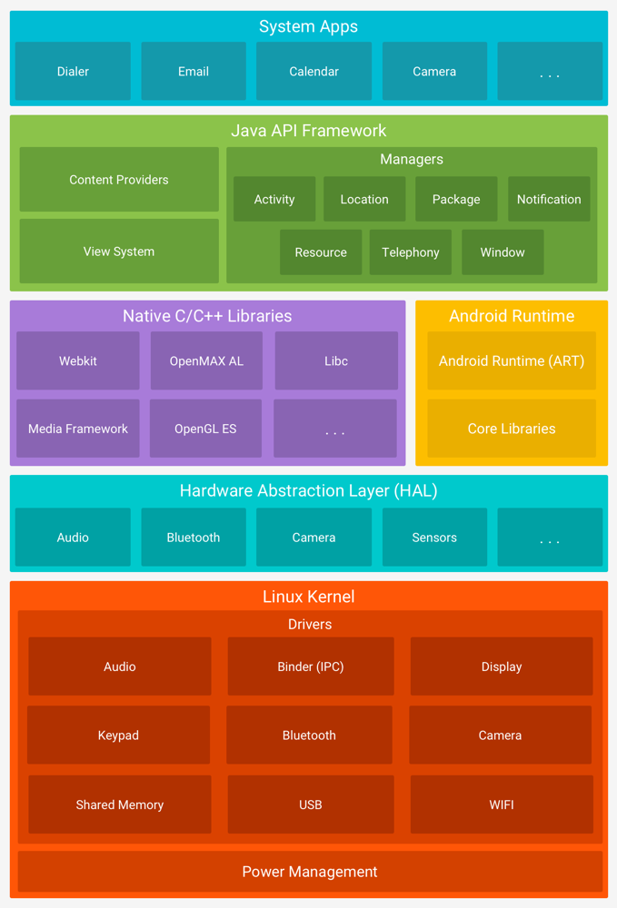
Linux kernel
Linux Kernel – Android platformasining poydevori Linux yadrosi hisoblanadi. U apparat resurslarini boshqarish (xotira, jarayonlar), qurilma driverlari va asosiy xavfsizlik funksiyalarini (UID asosida izolyatsiya, SELinux) ta’minlaydi. Android uchun yadroning maxsus kengaytmalari ya’ni wakelock(qurilmani uxlash rejimidan uyg‘otish), ashmem(ko‘p jarayonli xotira almashish), Binder IPC(jarayonlararo aloqalar) kabi komponentlar kiritilgan. Bundan tashqari, Androidning C kutubxonasi Bionic bo‘lib, u kichikroq hajm va lisenziya qulayligi tufayli qo‘llanadi.
Linux kernel bepul va ochiq manbali, Unixga o‘xshash yadrodir va u butun dunyo bo‘ylab ko‘plab kompyuter tizimlarida qo‘llaniladi. Yadro 1991-yilda Linus Torvalds tomonidan yaratilgan va tez orada Unix o‘rnini bosuvchi bepul operatsion tizim bo‘lishi uchun yaratilgan GNU operatsion tizimi uchun yadro sifatida qabul qilingan. 1990-yillarning oxiridan beri, u ko‘plab operatsion tizim distributivlariga kiritilgan bo‘lib, ularning ko‘pchiligi Linux deb ataladi. Shunday Linux yadrosi asosida ishlovchi operatsion tizimlardan biri, Android bo‘lib, u ko‘plab mobil qurilmalarda ishlatiladi.
Yadro kodining aksariyati GNU kompilyator to‘plami (GCC) tomonidan qo‘llab-quvvatlanadigan, standart C tilidan tashqarida ba’zi kengaytmalarni o‘z ichiga olgan C dasturlash tilida yozilgan. Shuningdek, kodda ba’zi arxitekturaga xos funksiyalar uchun masalan, xotira foydalanishini va vazifalarni bajarishni optimallashtirish uchun assembly (assembler) dasturlash tili kodlari ham mavjud. Yadro modulli dizaynga ega, ya’ni modullar alohida dasturiy komponent sifatida birlashtirilishi, hattoki dinamik ravishda yuklab olinishi mumkin. Biroq arxitektura nuqtayi nazaridan yadro monolitik hisoblanadi, chunki butun operatsion tizim yadrosi kernel fazosida ishlaydi. Linux GNU Umumiy Ommaviy Litsenziyasining 2-versiyasi (GPLv2) asosida tarqatiladi, garchi uning tarkibida boshqa mos litsenziyalar ostida bo‘lgan fayllar ham mavjud. Linux kernelni rasmiy manbadan quyidagi saytdan yuklab olishingiz mumkin(https://www.kernel.org). Bu Linux Foundation tomonidan boshqariladigan va doimo eng so‘nggi, barqaror versiyalar e’lon qilinadigan rasmiy sayt.
Hardware Abstraction Layer
Hardware Abstraction Layer (HAL) – Android arxitekturasining dastlabki versiyalaridan beri mavjud bo‘lib, birinchi Android qurilmalaridan boshlab ishlab chiquvchilar va apparat yetkazib beruvchilar uchun umumiy interfeys vazifasini bajaradi. Android 8.0 bilan bu qatlam yangi modul tuzilishga o‘tkazildi: har bir HAL uchun mustaqil AIDL/HIDL interfeys yaratilishi talab qilina boshlandi. 2015-yildan boshlab HIDL (Hardware Interface Definition Language), keyinchalik 2019-yildan AIDL (Android IDL) orqali HAL interfeyslari belgilandi. Haligacha Android 8.0 gacha eski HAL qatlami bo‘lgan, lekin 8.0 dan har bir HAL uchun standart interfeys joriy etilgan. HAL apparat qurilmalariga (kamera, sensorlar, audio, Bluetooth va boshqalarga) kirish uchun yuqori qatlamda (Java API ramkasi) mavjud bo‘lgan abstraktsiya qatlami. HAL modulalari har bir turdagi apparat komponenti uchun alohida bo‘lib, Android tizimiga quyi darajadagi qurilma xususiyatlarini o‘zgartirmasdan, umumiy interfeys orqali taqdim etish imkonini beradi. Masalan, kamera, Bluetooth, audio, sensorlar uchun alohida HAL modullar mavjud. Ilovalar ramkasidagi tegishli API chaqirig‘i HAL moduliga tushganda, Android u modulni yuklaydi va uskunaga murojaat qiladi. HAL amalda C/C++ kutubxonalar bo‘lib, ularning interfeyslari Android tomonidan aniq belgilangan. Android 8.0 dan boshlab HAL interfeyslari AIDL/HIDL yordamida tavsiflanadi. Binderized HAL tushunchasi bor bu jarayonlararo bog‘lanish (IPC) uchun Binder qo‘llanib, har bir HAL moduli alohida jarayonda (service) ishlaydi. Android 8.0 dan yuqori versiyada har bir zaruriy HAL modul Android qurilmasida vendor bo‘limida (vendor partition) yaratilishi va ro‘yxatdan o‘tishi kerak. Android 13 bilan HIDL eskirdi va yangisi sifatida AIDL-hal interfeyslari tavsiya etilmoqda. Application Frameworkdagi apparatga oid API (masalan, CameraManager, BluetoothAdapter) HAL interfeysini chaqiradi. HAL esa o‘z navbatida Linux yadrosidagi drayver bilan bog‘lanadi. Misol uchun, kamera suratga olish: foydalanuvchi yoki ilova camera API’ga so‘rov yuboradi. Android tizimi Camera HAL modulini ishga tushiradi; bu modul esa camera nomli noyob modul sifatida Linux yadrosi drayveri bilan o‘zaro ishlaydi. Shu tariqa, yuqori qatlamlar apparatga bevosita bog‘lanmaydi, balki HAL orqali ko‘prik vazifasini bajaradi. Ko‘p uchraydigan misollardan biri – Bluetooth, Wi-Fi, GPS modullari bilan ishlash. Masalan, ilova BluetoothAdapter ni yoqish uchun murojat qiladi; ramka bu so‘rovni Bluetooth HAL moduliga uzatadi. HAL esa chipsetdagi Bluetooth drayveri bilan aloqa o‘rnatib, qurilmani yoqadi. Yoki Sensor API orqali tezlanish o‘lchagich (accelerometer) ma’lumotini olish uchun Sensor HAL orqali sensor haydovchisi ishlatiladi. Har bir apparat turi uchun shunga o‘xshash jarayon bo‘lib, HAL va Linux drayverlari o‘rtasida HTTP muloqot sodir bo‘ladi.
Android Runtime (Dalvik va ART)
Android Runtime (Dalvik va ART) – Androidning dastlabki yillari (2008–2014) Dalvik virtual mashinasi ustida ishladi (bu Java bytekodini just-in-time kompilyatsiya bilan bajaradigan maxsus JVM edi). 2014-yilda Android 5.0 (Lollipop) da Dalvik o‘rnini ART (Android Runtime) egalladi, u ilovalarni ahead-of-time va just-in-time kompilyatsiya qilib, unumdorlikni oshirdi. Shu qatlamda asosiy C/C++ kutubxonalar ham yaratilgan: masalan, Bionic libc (Android uchun maxsus C kutubxonasi), libm (matematik kutubxona), libz (siqish uchun), OpenSSL (shifrlash), SQLite (ma’lumotlar bazasi) va boshqalar. Android NDK (Native Development Kit) esa 2009-2010-yillarda ishlab chiqilib, dasturchilarga C/C++ kodini yozish imkonini berdi. Android runtime – bu Androidning C/C++ da yozilgan kutubxonalari va ART/Dalvik virtual mashinasidan iborat bo‘lib, tizim xizmatlari va yuqori qatlamlar uchun past darajali ishlov berishni ta’minlaydi. Yuqori qatlamdagi Java kodlarining kerakli qismlarini C/C++ ga o‘tkazib bajaradi (masalan, grafik chizish, multimedia ishlov berish). Shu qatlam libbinder.so orqali inter-protsess muloqotiga (Binder IPC) xizmat qiladi, va ART/Dalvik (virtual mashina) bu yerda ishlaydi, ya’ni Java kodlarini natijaviy mashina kodiga aylantiradi. Shuningdek, Android Runtime (ART) bu qatlamda joylashgan: u C++ da yozilgan bo‘lib, DEX formatidagi bytekodni CPU arxitekturasiga mos mashina kodiga aylantirib bajaradigan muhitdir. ART har bir ilovaga alohida jarayon va VM instance ajratadi, bu esa ko‘p ilova bir vaqtning o‘zida samarali ishlashini ta’minlaydi. Yuqori qatlamdagi Java kodlari muayyan C/C++ funksiyalarini chaqirish uchun JNI (Java Native Interface) orqali kutubxonalarga murojaat qiladi. Masalan, UI chizishda View tizimi libhwui va libskia kabi grafik kutubxonalardan foydalanadi. SQLite bilan ishlash uchun ContentProvider va ActivityManagerService libsqlite orqali so‘rovlar bajaradi. WebKit/Chromium bilan yasalgan browser yoki WebView komponenti esa C++ da yozilgan veb-dvigatelga suyanadi. Ilova dasturchilari ba’zi hisoblash yoki grafik ishlovlarni NDK yordamida C/C++ da yozishi mumkin. Masalan, 3D o‘yinlar OpenGL ES bilan ishlaydi. WebView browser tarkibi WebKit/Chromium rendering dvigatelida bajariladi. Yoki yuklab olinayotgan faylni saqlash jarayonida SQLite kutubxonasi ishlatiladi. Shu bilan birga, libbinder orqali yuqori qatlamlar Android sistem xizmatlari (system_server) bilan muloqot qiladi: masalan, ilovalar va ramka xizmatlari o‘zaro xabar almashish uchun binder driverini qo‘llaydi.
Application Framework
Application Framework – Androidning dastlabki versiyalarida (2008-yildan boshlab) Java tilida yozilgan Android Framework qatlamlari bo‘lib, ular ilovalarga bir qator xizmatlar va APIlar taqdim etadi. Android Inc. va keyinchalik Google ishlab chiqqan ushbu ramkalar yaratilishi 2007–2008-yillarda, birinchi Android telefon taqdim etilganda boshlangan. Ilovalar ramkasi qatlamining asosiy vazifasi ilovalar va yuqori qatlam komponentlariga (Activity, Service va hokazo) tizimning past darajadagi funktsiyalariga qulay kirishni ta’minlovchi APIlar to‘plamini taqdim etish. Ushbu qatlamda ishlab chiquvchiga qulay yuqori darajadagi dasturiy interfeyslar (APIs) to‘plami mavjud bo‘lib, ular qayta ishlangan modullar va xizmatlardan foydalanib, ilovalarni tezda yaratishga yordam beradi. Masalan:
-
View System – Interfeys elementlarini (tugmalar, matn maydonlari, ro‘yxatlar, grafikalar) ekranga chiqarish uchun ramka sinflari.
-
Resource Manager (Resurs menejeri). Tillangan matnlar, grafikalar, tartib fayllari kabi resourcelarni boshqarish uchun xizmat.
-
Notification Manager (Bildirishnoma menejeri). Har xil ilovalar uchun status panelida va bildirishnoma panelida ogohlantirishlar chiqarish imkonini beruvchi xizmat.
-
Activity Manager (Activity menejeri). Ilovalar hayot tsiklini (aktiv, fon, to‘xtatilgan holatlar) boshqaradi va Back Stack (orqa ketma-ketlik) ni nazorat qiladi.
-
Content Provider (Kontent provayder). Ilovalarga o‘z ma’lumotlarini boshqa ilovalar bilan bo‘lishish yoki boshqa ilovalardan ma’lumot olish imkonini beruvchi modul.
Yuqoridagi ro‘yxat Android Developer tomonidan bergan asosiy ramka komponentlari misolidir. Bular bilan bir qatorda Window Manager, Location Manager, Package Manager, Telephony Manager kabi boshqa menejer va xizmatlar ham mavjud bo‘lib, ular turli funksiyalarni bajaradi (masalan, ekran oynalarini boshqarish, geolokatsiya ma’lumotlarini olish, o‘rnatilgan ilovalarni boshqarish va tarmoqqa ulanmagan va telefon qo‘ng‘iroqlarini boshqarish). Android ramkasi ichida chaqiriladigan ko‘plab xizmatlar (masalan, ActivityManagerService, WindowManagerService va boshqalar) system_server nomli jarayon (daemon) ichida ishlaydi. Bu system services nomli modul tizim komponentlari bo‘lib, ular quyi darajadagi apparat va tizim resurslariga kirishish uchun ramka APIlari bilan muloqot qiladi. Masalan, ilovada ActivityManager orqali ilovani ishga tushirish talab etilganida, bu chaqiruv system_server ichidagi ActivityManagerServicega uzatiladi. Android Framework C/C++ darajasida bajaruvchi libandroid_runtime.so, libdvm.so kabi kutubxonalar yordamida ishlaydi, lekin tashqi ko‘rinishda Java sinflaridan tashkil topgan. Dasturchilar Java klasslari orqali kerakli funksiyalarni chaqiradi. Android API’lari orqali ilovalar ramkasi binder IPC orqali pastki qatlamlardagi xizmatlar bilan ham aloqa qilish imkoniga ega. Masalan, NotificationManager orqali bildirishnoma jo‘natish ramka ichidagi binder so‘rovi sifatida system_serverdagi NotificationService ga yuboriladi. Framework qatlami masalasi sifatida, foydalanuvchi telefon ekranida yangi xabar kelganini ko‘rsatuvchi bildirishnoma misol bo‘la oladi. Dasturchi ilovasi NotificationManager APIsini chaqiradi ramka bu so‘rovni qabul qilib, ichki xizmatlarni ishga tushiradi va tizim panelida bildirishnoma chiqishini ta’minlaydi. Yoki, Content Provider orqali kontaktlarni o‘qish uchun Contacts dasturini qo‘zg‘atadi va kerakli ma’lumotni oladi. Shu tarzda, ramka qatlamidagi APIar foydalanuvchi ilovalariga qulay interfeyslar taqdim etadi va ularni tizimning quyi qatlamlari bilan bog‘laydi. Android platformasi ko‘plab C/C++ kutubxonalarini o‘z ichiga oladi. Masalan, media fayllar bilan ishlash uchun Media kutubxonasi, grafik chizish uchun SurfaceFlinger va OpenGL ES bilan bog‘liq kutubxonalar ishlatiladi. Ma’lumotlar bazasi uchun SQLite qo‘llanadi, veb brauzer mexanizmi sifatida WebKit (keyinchalik Chromium) va internet xavfsizligi uchun SSL/TLS kutubxonalari bor. Shuningdek, Android grafik tasvirlar uchun Skia grafika dvigateli va shriftlar uchun FreeType kutubxonalarini ham o‘z ichiga oladi. Tizimdagi asosiy komponentlarning aksariyati nativ kodda yozilgan bo‘lib, masalan, SurfaceFlinger, AudioFlinger kabi xizmatlar C++ da amalga oshiriladi. Tizim kamchiliklarini bartaraf etish uchun bu kutubxonalar Java APIlari orqali ilovalarga ochiladi (masalan, Android Java APIlari yordamida OpenGL ES chaqiriladi.
Applications (Ilovalar)
Applications (Ilovalar) – foydalanuvchiga ko‘rinarli va foydali dasturlar (masalan, suhbat, internet-brauzer, o‘yin, foto-video ilovalari) uchun muhit. Har bir Android ilovasi o‘z jarayonida (process) alohida ishlaydi va unga alohida foydalanuvchi identifikatori (UID) ajratiladi. Bu Linux yadrosi asosidagi sandbox xususiyati orqali ilovalarni bir-biridan izolyatsiya qilishni (himoya qilishni) ta’minlaydi. Masalan, bir ilova boshqa ilovaning ma’lumotlariga ruxsatsiz kira olmaydi yoki telefon funksiyalarini ruxsatsiz chaqira olmaydi. Shu tariqa, Android ilovalari tabiiy o‘zaro ajratilganlikda ishlaydi va tizim xavfsizligi kuchaytirilgan. Ilovalar odatda Java yoki Kotlin tilida yaratiladi va Android SDK yordamida to‘g‘ridan-to‘g‘ri Android Runtime (ART) ustida bajariladi. Har bir ilova AndroidManifest.xml fayliga ega bo‘lib, u yerda ilovaning tarkibiy qismlari (Activity, Service, ContentProvider, BroadcastReceiver) va talab qilinadigan ruxsatlar (permissions) ko‘rsatiladi. Android ilovalari quyidagi asosiy komponentlardan iborat bo‘ladi.
-
Activity: foydalanuvchi interfeysini tashkil etuvchi ekranning bir sahifasi (masalan, menyu yoki forma).
-
Service: orqa fonda ma’lum vazifani bajarayotgan xizmat (masalan, musiqa ijro etish, yuklab olish).
-
Broadcast Receiver: tizim yoki boshqa ilovalar yuborgan broadcast xabarlarni (masalan, batareya holati yoki tarmoqqa ulanish o‘zgarishi) qabul qiladi.
-
Content Provider: ilovalarga ma’lumotlarni (kontaktlar, fayllar, ma’lumotlar bazasi) saqlash va boshqa ilovalar bilan ulashish imkonini beruvchi komponent.
Ilovalar ramkasi (Application Framework) orqali taqdim etiladigan APIlar yordamida ilovalar ushbu komponentlarni boshqaradi. Masalan, Notification Manager yordamida status panelda bildirishnoma chiqarish, View System orqali ekranga UI komponentlarini joylashtirish mumkin. Dasturchi ilovalari kodi *.java yoki *.kt fayllardan iborat bo‘lib, *.apk paketiga yig‘ilib, Android Runtime (ART) tomonidan .dex formatida ijro etiladi. Ilovalar to‘g‘ridan-to‘g‘ri quyi qatlamdagi apparat qurilmalariga kira olmaydi. Ilovalar istalgan yuqori darajadagi xususiyatdan foydalanish uchun ramka APIlarini chaqiradi. Masalan, kamera bilan ishlovchi ilova Camera API ga murojaat qilib, ramka orqali tegishli HAL modulini ishga tushiradi. Telefon qo‘ng‘irog‘i yoki SMS jo‘natish funksiyasi uchun esa ilova Android-ning standart Telefon yoki SMS tizim ilovalarini chaqirishi mumkin; masalan, o‘z ilovangizdan SMS jo‘natmoqchi bo‘lsangiz, alohida SMS jo‘natish moduli yozishga hojat yo‘q o‘rniga tizimga o‘rnatilgan SMS ilovasini chaqirish mumkin. Bu misolda ilova (Application qatlam) Intents orqali tizim ilovasini ishga tushirib, SMS jo‘natadi. Oddiy real misol sifatida, foto-iltimos qiluvchi ilovalarni olaylik. Foydalanuvchi kamerani ochish uchun ilovani ishga tushiradi bu ilova Camera API chaqiruvini yuboradi. Android ramkasi bu so‘rovni tegishli Camera HAL moduliga uzatadi, HAL esa Linux yadrosidagi camera drayveri orqali haqiqiy kamera sensoridan surat oladi. Olingan surat yana yuqoridan pastga HAL dan Frameworkga, undan ilovaga qaytariladi va foydalanuvchiga ko‘rsatiladi. Shunday qilib, Ilovalar qatlami foydalanuvchi funksiyalarini taqdim etib, ortida Framework va pastki qatlamlar bilan o‘zaro aloqa qiladi.
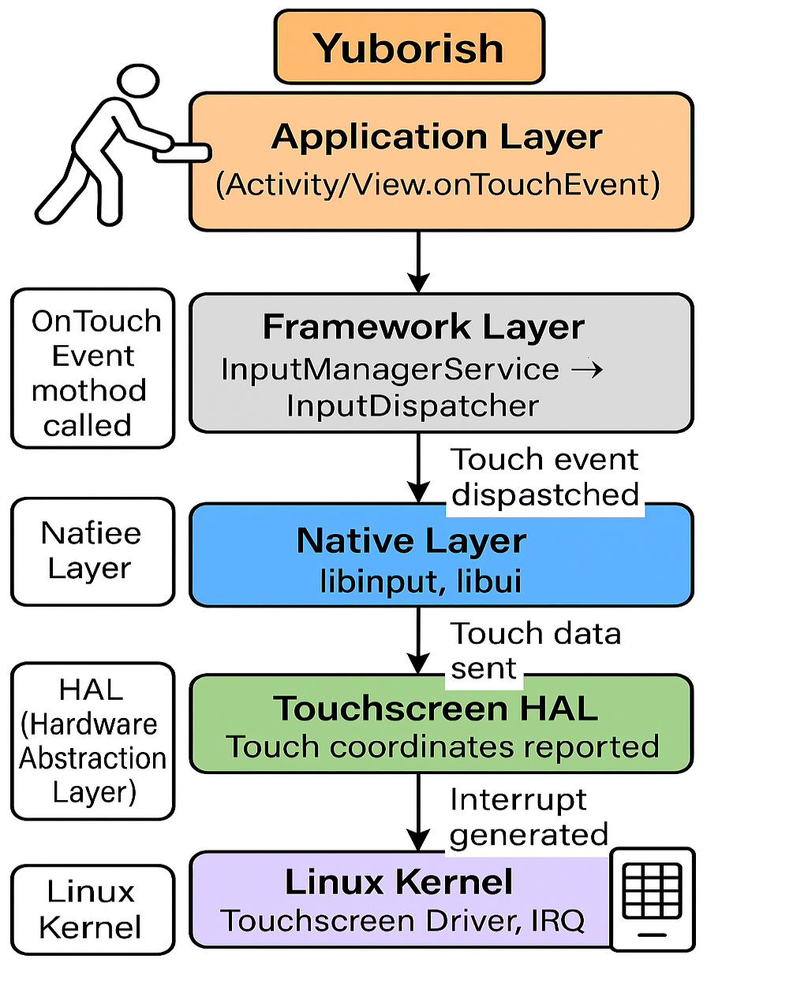
Java virtual mashina
Java Virtual Mashinasi (JVM) — bu abstrakt hisoblash mashinasi bo‘lib, u Java baytkodlarini bajaradi. JVM platformadan mustaqil bo‘lib, Java ilovalari “Write Once Run Anywhere” tamoyili bilan har qanday Java muhitida ishlaydi. Javadagi *.java fayllar javac kompilyatori yordamida sinf (class) formatidagi baytkodga (*.class) aylantiriladi. Keyin JVM sinf yuklovchi (Class Loader) orqali ushbu .class faylni yuklab oladi va bajara boshlaydi. Bajarish vaqtida Execution Engine bo‘limi baytkod yo‘riqnomalarini bajaradi. JVM dinamik tarzda ishlaydi: u baytkodni talqin qiluvchi (interpretor) yordamida qadam-baqadam bajarishi yoki muhim bo‘laklarni Just-In-Time (JIT) kompilyatori yordamida mashina kodiga o‘girishi mumkin. Masalan, HotSpot VM eng ko‘p ishlatiladigan metodlarni ish vaqtida profillab, ularni natijaviy protsessor buyruqlariga kompilyatsiya qiladi. Shu tariqa, takroriy ishlatiladigan kod uchun qayta talqin qilish o‘rniga tayyor natijaviy kod bajariladi, bu samaradorlikni oshiradi.
Dalvik virtual mashina
Dalvik Virtual Machine (DVM) - bu Android ilovalari uchun taqdim etilgan maxsus dastur. U Java kodini oladi va Dalvik bajariladigan fayl sifatida tanilgan .dex (kengaytma) bilan faylda uning optimallashtirilgan versiyasini yaratadi. Bu format ilovalarga kamroq resurslar, ya’ni mobil telefonlar va xotirasi past, sekinroq qurilmalarda tez ishlashiga imkon beradi. Bu odatiy Java Virtual Mashinasidan ( JVM ) farq qiladi, chunki u Android uchun kamroq xotira ishlatadigan va turli versiyalarda ishlaydigan millionlab qurilmalarga mos keladigan ilovalarni ishga tushirish uchun optimallashtirilgan.
Android ruxsatlari
Android ilovalari foydalanuvchining shaxsiy ma’lumotlariga yoki qurilmaning ayrim funksiyalariga kirish uchun ruxsat (permission) so‘raydi. Bu foydalanuvchining maxfiyligini himoya qilishga yordam beradi.
Ruxsat turlari
Xavfli (Dangerous)
Oddiy(Normal)
Oddiy(Normal) ruxsatlar qurilmaning xavfsizligiga yoki foydalanuvchi maxfiyligiga katta xavf tug‘dirmaydi.
| Permission | Vazifasi |
|---|---|
| android.permission.INTERNET | internetga ulanish |
| android.permission.ACCESS_NETWORK_STATE | tarmoq holatini tekshirish |
| android.permission.BLUETOOTH | Bluetoothdan foydalanish |
| android.permission.BLUETOOTH_ADMIN | Bluetooth sozlamalarini boshqarish |
| android.permission.BLUETOOTH_CONNECT | Bluetooth qurilmaga ulanish (Android 12+) |
| android.permission.BLUETOOTH_SCAN | Bluetooth qurilmalarni qidirish (Android 12+) |
| android.permission.BLUETOOTH_ADVERTISE | Bluetooth orqali reklamalarni yuborish (Android 12+) |
| android.permission.NFC | NFC (yaqin aloqa) qurilmasidan foydalanish |
| android.permission.ACCESS_WIFI_STATE | Wi-Fi holatini tekshirish |
| android.permission.CHANGE_WIFI_STATE | Wi-Fi sozlamalarini o‘zgartirish |
| android.permission.VIBRATE | Qurilmani titratish |
| android.permission.WAKE_LOCK | Qurilmaning uxlamasligini ta’minlash |
| android.permission.FOREGROUND_SERVICE | Foreground servis ishga tushirish (Android 9+) |
| android.permission.REQUEST_INSTALL_PACKAGES | APK fayl o'rnatish uchun ruxsat so‘rash |
| android.permission.RECEIVE_BOOT_COMPLETED | Qurilma yuklanganda ishga tushish |
| android.permission.ACCESS_NOTIFICATION_POLICY | Bildirishnoma sozlamalariga cheklangan kirish |
| android.permission.USE_FULL_SCREEN_INTENT | Xabarnomalarni to‘liq ekranda ko‘rsatish |
| android.permission.SET_WALLPAPER | Fonga rasm o'rnatish |
| android.permission.SET_WALLPAPER_HINTS | Fonga rasm pozitsiyasini sozlash |
| android.permission.MODIFY_AUDIO_SETTINGS | Ovoz sozlamalarini o'zgartirish |
| android.permission.BROADCAST_STICKY | Sticky broadcast yuborish (deprecated) |
| android.permission.CHANGE_NETWORK_STATE | Tarmoq holatini o‘zgartirish |
| android.permission.DISABLE_KEYGUARD | Lock screenni vaqtinchalik o'chirish (deprecated) |
| android.permission.MOUNT_UNMOUNT_FILESYSTEMS | Fayl tizimini mount/unmount qilish (deprecated) |
| android.permission.READ_SYNC_SETTINGS | Sync sozlamalarini o‘qish |
| android.permission.WRITE_SYNC_SETTINGS | Sync sozlamalarini o‘zgartirish |
| android.permission.EXPAND_STATUS_BAR | Status barni ochish yoki yopish |
| android.permission.GET_PACKAGE_SIZE | Ilovaning o‘lchamini aniqlash |
Bu ruxsatlar avtomatik beriladi, foydalanuvchi alohida tasdiqlamaydi.
Xavfli (Dangerous) ruxsatlar – Foydalanuvchi shaxsiy ma’lumotlariga yoki qurilma resurslariga kira oladi. Bu ruxsatlar foydalanuvchidan so‘raladi.
| Permission | Vazifasi |
|---|---|
| android.permission.RECORD_AUDIO | Mikrofon orqali ovoz yozish |
| android.permission.CAMERA | Kameradan foydalanish |
| android.permission.READ_CONTACTS | Kontaktlarni o'qish |
| android.permission.WRITE_CONTACTS | Kontaktlarga o'zgartirish kiritish |
| android.permission.GET_ACCOUNTS | Qurilmadagi akkauntlar ro'yxatini olish |
| android.permission.ACCESS_FINE_LOCATION | Aniq GPS joylashuvini aniqlash |
| android.permission.ACCESS_COARSE_LOCATION | Taxminiy joylashuvni olish |
| android.permission.READ_CALENDAR | Kalendar ma'lumotlarini o'qish |
| android.permission.WRITE_CALENDAR | Kalendar ma'lumotlarini o'zgartirish va yozish |
| android.permission.READ_EXTERNAL_STORAGE | Tashqi xotiradagi fayllarni o'qish |
| android.permission.WRITE_EXTERNAL_STORAGE | Tashqi xotiraga fayl yozish |
| android.permission.MANAGE_EXTERNAL_STORAGE | Tashqi xotirani to’liq boshqarish (Android 11 va yuqoriroq) |
| android.permission.SEND_SMS | SMS yuborish |
| android.permission.RECEIVE_SMS | SMS qabul qilish |
| android.permission.READ_SMS | SMS xabarlarini o'qish |
| android.permission.RECEIVE_MMS | MMS xabarlarini qabul qilish |
| android.permission.RECEIVE_WAP_PUSH | WAP push xabarlarini qabul qilish |
| android.permission.CALL_PHONE | Telefon orqali qo'ng'iroq qilish |
| android.permission.READ_PHONE_STATE | Telefon holati va identifikatorlarini o'qish |
| android.permission.USE_SIP | SIP protokoli orqali qo'ng'iroqlarni amalga oshirish |
| android.permission.PROCESS_OUTGOING_CALLS | Chiqayotgan qo'ng'iroqlarni kuzatish yoki o'zgartirish |
| android.permission.ANSWER_PHONE_CALLS | Kiruvchi qo'ng'iroqlarga javob berish (Android 8.0+) |
| android.permission.WRITE_CALL_LOG | Qo'ng'iroqlar tarixini tahrirlash |
| android.permission.ADD_VOICEMAIL | Voicemail qo‘shish |
| android.permission.BODY_SENSORS | Tana sensorlaridan (masalan, yurak urishi) foydalanish |
| android.permission.ACTIVITY_RECOGNITION | Foydalanuvchining harakatini (yurish, yugurish) aniqlash |
| android.permission.READ_MEDIA_IMAGES | Rasmlarga kirish (Android 13+) |
| android.permission.READ_MEDIA_VIDEO | Videolarga kirish (Android 13+) |
| android.permission.READ_MEDIA_AUDIO | Audiolarga kirish (Android 13+) |
| android.permission.BIND_INPUT_METHOD | Keyboard (input method) servisini ulash |
| android.permission.BIND_NOTIFICATION_LISTENER_SERVICE | Xabarnomalarni o'qish va boshqarish servisi |
| android.permission.USE_BIOMETRIC | Biometrik autentifikatsiyadan foydalanish (barmoq izi, Face ID) |
| android.permission.USE_FINGERPRINT | Barmoq izidan foydalanish (Android 9 va undan past) |
| android.permission.REBOOT | Qurilmani qayta yuklash (root huquqi kerak) |
| android.permission.GET_TASKS | Foydalanuvchi ishlatayotgan ilovalar ro'yxatini olish (deprecated) |
| android.permission.REORDER_TASKS | Ilovalar tasklarini o'zgartirish (Activity Stack) |
| android.permission.RESTART_PACKAGES | Ilovalarni to'xtatish va qayta ishga tushirish (deprecated) |
| android.permission.DEVICE_POWER | Qurilmani o'chirish yoki yoqish (faqat system apps uchun) |
iOS arxitekturasi
iOS operatsion tizimining tuzilishi qatlamli (layered) asosda qurilgan. Unda to‘g‘ridan-to‘g‘ri aloqa sodir bo‘lmaydi. Ilova qatlamidan (Application Layer) apparat qatlamigacha (Hardware Layer) bo‘lgan qatlamlar o‘zaro aloqa qilishda yordam beradi. Pastki darajadagi qatlamlar barcha ilovalar tayanuvchi asosiy xizmatlarni taqdim etsa, yuqori darajadagi qatlamlar grafik va foydalanuvchi interfeysi bilan bog‘liq xizmatlarni taqdim etadi.iOS arxitekturasi to‘rt asosiy qatlamdan tashkil topgan: Cocoa Touch, Media, Core Services va Core OS (Darwin). Har bir qatlam yuqoridagi qatlamlarga xizmat ko‘rsatadi va o‘ziga xos komponentlarga ega.
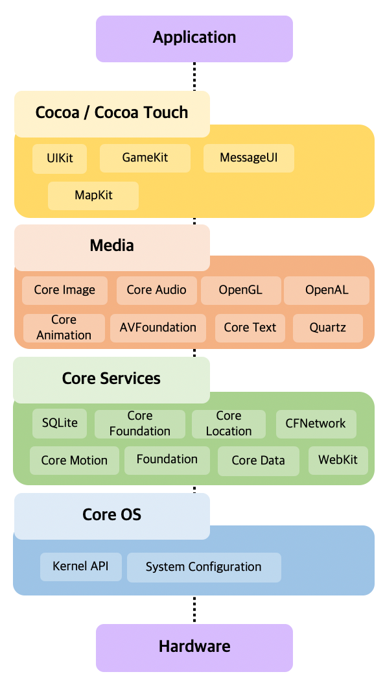
Cocoa Touch
Cocoa Touch – bu foydalanuvchi ilovalar interfeysi qatlamidir. Bu qatlamda UIKit, Foundation, Core Animation va boshqa yuqori darajadagi ramkalar mavjud bo‘lib, ular mobil ilovalar uchun tugmalar, oynalar, xabarlar va sensorli kirishni boshqaradi. Cocoa Touch qatlamida Touch ID va Face ID biometrik autentifikatsiyasi ham amalga oshiriladi.
Media
Media – audio va grafikani boshqarish qatlamidir. Bu yerga AVFoundation, Core Graphics, Core Animation, Metal/OpenGL, Core Audio kabi ramkalar kiradi. Masalan, video dekodlash va ko‘rsatish, grafik chizish, audio tahrirlash Media qatlamida amalga oshiriladi. Ushbu qatlam multimediya tarkiblarini o‘zgartirish (video, surat, o‘yin grafikasi) bilan bog‘liq xavfsizlik muammolariga duch kelishi mumkin (masalan, noto‘g‘ri faylni qayta ishlashda xatolar).
Core services
Core Services – pastroq darajadagi umumiy xizmatlar qatlamidir. Bu yerda ma’lumotlar bazasi (SQLite, Core Data), tarmoq (CFNetwork), joylashuv (Location Services), Core Foundation, Grand Central Dispatch (GCD) va boshqa tizim xizmatlari mavjud. Shuningdek, Keychain, Data Protection kabi komponentlar ham Core Servicesda joylashgan. Bu qatlamda ma’lumotlar bazasi va tarmoq protokollari orqali ma’lumot almashinuvi, shifrlash va saqlash amalga oshiriladi. Zaifliklar esa ko‘pincha bu qatlamdagi ramkalarning xotira bog‘lanishlari yoki noto‘g‘ri konfiguratsiyalarda yuzaga keladi.
Core Os
Core OS (Darwin yadro) – eng pastki, apparat va yadro qatlamidir. Bu Darwin (XNU) yadrosi, drayverlar, BSM audit, Apple Filing Protocol, CryptoKit, tizim kutubxonalari va boshqa past darajadagi komponentlarni o‘z ichiga oladi. Bu qatlam protsessor (ARM) ustida ishlaydi va qurilmaning eng asosiy resurslarini boshqaradi. Tizimni tiklash va yangilashlar bu qatlam yordamida amalga oshiriladi.
iOS SDK va Xcode
iOS SDK (Software Development Kit) bu Apple kompaniyasi tomonidan iOS operatsion tizimi uchun ilovalar yaratish uchun taqdim etilgan dasturiy vositalar to‘plamidir. U dasturchilarga iPhone, iPad va iPod touch qurilmalari uchun ilovalar ishlab chiqish imkonini beradi. SDK tarkibiga turli xil kutubxonalar, APIlar (Application Programming Interface), simulyatorlar va hujjatlar kiradi. iOS SDK odatda Xcode bilan birga ishlatiladi bu Applening rasmiy dasturlash muhiti bo‘lib, unda Swift yoki Objective-C tillarida kod yoziladi.
Xcode — bu Apple tomonidan ishlab chiqilgan rasmiy dasturlash muhiti (IDE — Integrated Development Environment) bo‘lib, iOS, macOS, watchOS va tvOS operatsion tizimlari uchun ilovalar yaratishda ishlatiladi. Xcode dasturchilarga Swift va Objective-C dasturlash tillarida kod yozish, xatoliklarni tuzatish (debug), interfeys dizayni yaratish (Interface Builder), test qilish va App Storega ilovani yuborish imkonini beradi. U o‘z ichiga iOS SDKni ham oladi, ya’ni Xcode orqali to‘liq iOS ilovalarini yaratish mumkin. Xcode faqat macOS operatsion tizimida ishlaydi.
iOS ruxsatlari
Quyida iOS permission (ruxsatlar) larining asosiylari jadval ko‘rinishida keltirilgan. Har bir permission nomi, Info.plist dagi kaliti va u nima vazifani bajarishi tushuntirilgan. Bu ruxsatlar Info.plist faylida majburiy ko‘rsatilishi kerak. Aks holda ilova ruxsatni so‘ray olmaydi va to‘xtashi mumkin.
| Permission nomi | Kodda yozilishi | Vazifasi |
|---|---|---|
| Kamera (Camera) | NSCameraUsageDescription | Kameraga kirish uchun ruxsat so‘rash. |
| Mikrofon (Microphone) | NSMicrophoneUsageDescription | Mikrofon orqali audio yozish. |
| Joylashuv (Location) | NSLocationWhenInUseUsageDescription | Ilova ishlaganda joylashuvni aniqlash. |
| Joylashuv (Doimiy) | NSLocationAlwaysUsageDescription | Ilova yopiq bo‘lsa ham joylashuvni kuzatish. |
| Kontaktlar (Contacts) | NSContactsUsageDescription | Kontaktlarga kirish, o‘qish/qo‘shish. |
| Suratlar (Photos) | NSPhotoLibraryUsageDescription | Suratlar kutubxonasiga kirish. |
| Surat yozish | NSPhotoLibraryAddUsageDescription | Faqat surat kutubxonasiga yozish (o‘qimasdan). |
| Bluetooth | NSBluetoothAlwaysUsageDescription | Bluetooth qurilmalar bilan aloqa. |
| Kamera rulosini saqlash | NSAppleMusicUsageDescription | Media kutubxonaga yozish (ko‘proq audio uchun). |
| Kalendarga kirish | NSCalendarsUsageDescription | Kalendarga kirish, o‘qish va yozish. |
| Reminders (Eslatmalar) | NSRemindersUsageDescription | Eslatmalar ilovasiga kirish. |
| Sog‘liq ma’lumotlari | NSHealthShareUsageDescription, NSHealthUpdateUsageDescription | HealthKit orqali sog‘liq ma’lumotlarini o‘qish va yozish. |
| Harakat va fitness | NSMotionUsageDescription | Qurilma harakati (accelerometer, gyroscope) haqida ma’lumot olish. |
| Foydalanuvchi kutubxonasi (Media) | NSMediaLibraryUsageDescription | Foydalanuvchi musiqa/media kutubxonasiga kirish. |
| Face ID / Touch ID | NSFaceIDUsageDescription | Biometrik autentifikatsiya ishlatish. |
3
Mobil ilovalar pentestingi
Android Studio va SDK
2013-yil 16-may kuni Google I/O konferensiyasida Katherine Chou tomonidan Apache 2.0 litsenziyasi asosida chiqarilgan Android Studio nomli integratsiyalashgan dasturlash muhiti (IDE) Android platformasi uchun ilovalar yaratish maqsadida taqdim etildi. Bu IDE 2014-yilda beta bosqichiga kirgan va 2014-yil dekabr oyida 1.0-versiyadan boshlab birinchi barqaror (stable) versiyasi chiqarilgan. 2015-yil 15-sentabrda Android Studio rasmiy IDE sifatida e’lon qilindi.
Android Studio va SDK (Software Development Kit) haqida batafsil ma’lumot olish uchun quyidagi havolani ko‘ring:
👉 http://developer.android.com/tools/studio/index.html#build-system
Android Studio va SDK Java SE Development Kit (JDK) ga juda katta
darajada bog‘liq.
JDK ni quyidagi manzildan yuklab olish mumkin:
👉http://www.oracle.com/technetwork/java/javase/downloads/jdk7downloads-1880260.html
Ba’zi dasturchilar boshqa IDElarni afzal ko‘rishadi, masalan Eclipse
va boshqalar.
Ular uchun Google SDKning faqat o‘zini yuklab olishni ta’minlaydi:
👉 http://dl.google.com/android/installer_r24.4.1-windows.exe
Android Studioni samarali ishlatish uchun minimal tizim talablari mavjud. Quyidagi tartib Windows 10 Professional 64-bit operatsion tizimida Android Studioni o‘rnatish jarayonini ko‘rsatadi. Bu tizim quyidagi texnik xususiyatlarga ega:
-
4 GB RAM
-
Minimum 50 GB bo‘sh xotira
-
Java Development Kit 7 o‘rnatilgan bo‘lishi kerak
-
Bu IDE Linux, Windows va Mac OS X uchun mavjud. Android Studioni quyidagi manzildan yuklab olish mumkin:
-
Android Studio yuklab olingach, o‘rnatish faylini ishga tushiring. Odatda, quyidagidek o‘rnatish oynasi ko‘rinadi. Next (Keyingi) tugmasini bosing.
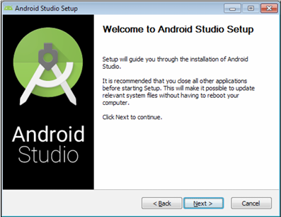
-
Ushbu o‘rnatish jarayoni tizimning talablariga javob berishini avtomatik tarzda tekshiradi.
-
Zarur bo‘lgan barcha komponentlarni tanlang va “Next” (Keyingi) tugmasini bosing.
-
Litsenziya shartlarini o‘qib chiqish va qabul qilish tavsiya etiladi, keyin esa “Next” tugmasini bosing.
-
Barcha vositalarni yagona joyda kuzatib borish uchun yangi papka yaratish tavsiya etiladi; bu dalillarni (fayllarni) boshqarishni osonlashtiradi.
Masalan, biz C diskida “Hackbox” nomli papka yaratdik bu quyidagi ekranda ko‘rsatilgan:
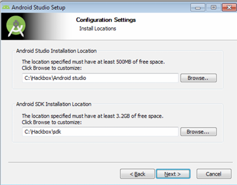
-
Endi Android tezlashtirilgan muhit (Android-accelerated environment) uchun kerakli joy ajratishimiz mumkin, bu esa tezroq ishlashni ta’minlaydi.
Shuning uchun kamida 2 GB joy ajratish tavsiya etiladi. -
Barcha zarur fayllar C:\Hackbox\ papkasiga ajratiladi (extract qilinadi).
-
O‘rnatish tugagach, siz Android Studioni ishga tushira olasiz, bu quyidagi ekranda ko‘rsatilgan.
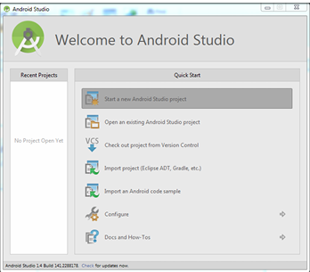
Android SDK
Android SDK dasturchilarga Android platformasida ishlaydigan ilovalarni to‘liq yaratish, testdan o‘tkazish va nosozliklarini tuzatish (debug qilish) imkonini beradi.Unda barcha kerakli dasturiy kutubxonalar (libraries), APIlar, emulyatorlar uchun tizim tasvirlari (system images), hujjatlar (documentation) va boshqa foydali vositalar mavjud bo‘lib, Android ilovasini yaratishda yordam beradi. Biz Android Studioni Android SDK bilan birga o‘rnatdik, va endi iloji boricha SDK ichidagi vositalardan qanday foydalanishni tushunish juda muhim. Ushbu bo‘limda biz Android ilovasiga hujum qilish (penetratsion test) vaqtida foydalaniladigan asosiy SDK vositalari haqida umumiy ma’lumot beramiz.
Emulator, simulatorlar, va real qurulmalar
Emulator, simulator va real qurilma – dasturiy ta’minotni sinashda (test qilishda) yoki ishlab chiqishda foydalaniladigan muhim vositalar. Quyida ularning farqlari, o‘xshashliklari va har birining afzallik va kamchiliklari keltirilgan.
Emulatorlar
Emulator bu kompyuterda ishlaydigan maxsus dastur bo‘lib, u haqiqiy qurilmaning (telefon, planshet, konsol va boshqalar) ish faoliyatini to‘liq taqlid qiladi. U nafaqat qurilmaning tashqi ko‘rinishini, balki ichki tizimini operatsion tizim, protsessor, xotira, ekran va boshqa apparat qismlarini ham o‘zida aks ettiradi. Dasturchilar yoki testchilar emulatordan foydalanib, ilovani haqiqiy qurilmasiz sinab ko‘rishlari mumkin. Masalan, Android dasturchilari Android Studiodagi emulyator orqali turli telefon modellarida ilovani test qiladilar Samsung, Pixel, Xiaomi va boshqalar.
Simulatorlar
Simulator bu kompyuterda ishlaydigan dastur bo‘lib, u real qurilmaning tashqi ko‘rinishi va ishlash muhitini taqlid qiladi, lekin qurilmaning apparat (hardware) qismlarini aniq takrorlamaydi. U faqat qurilmaning xulq-atvori yoki funksional tomonini ko‘rsatadi. Masalan, iOS dasturchilari Xcodedagi iPhone Simulator yordamida iPhone ilovasini haqiqiy iPhonesiz sinab ko‘rishlari mumkin.
Real qurulmalar
Real qurilma bu siz test qilayotgan yoki dastur o‘rnatayotgan haqiqiy fizik telefon, planshet yoki boshqa elektron qurilma. Masalan, siz Android ilova yaratgan bo‘lsangiz, uni Samsung yoki Xiaomi telefonida sinab ko‘rishingiz real qurilmada test hisoblanadi. Bu test qilishning eng aniq va ishonchli yo‘li, chunki ilova foydalanuvchiga aynan shu qurilmalarda yetib boradi.
4
Mobil Pentesting Vositalari
Android xavfsizlik vositalari
Android xavfsizlik vositalari bu foydalanuvchilarning ma’lumotlarini himoya qilish va qurilmaning xavfsiz ishlashini ta’minlash uchun mo’ljallangan dasturiy va apparat vositalaridir. Ular orasida Google Play Protect (ilovalarni avtomatik tekshiradi), biometrik autentifikatsiya (barmoq izi, yuzni tanish), shifrlash (ma’lumotlarni maxfiy saqlash), Permission Manager (ilovalarning ruxsatlarini boshqarish), hamda SafetyNet va App Sandbox kabi tizim darajasidagi himoya vositalari mavjud. Bu vositalar yordamida Android qurilmalari zararli dasturlardan va foydalanuvchi ma’lumotlarining ruxsatsiz tarqalishidan himoyalanadi.
Android Debug Bridge
ADB (Android Debug Bridge) — bu Android qurilmalarini kompyuter orqali boshqarish va ular bilan aloqa qilish imkonini beruvchi komanda satrli (CLI) vosita. U Android SDK (Software Development Kit) tarkibiga kiradi va ishlab chiquvchilar tomonidan keng qo‘llaniladi.
Adbni o‘rnatish
Windows operatsion tizimiga ADB (Android Debug Bridge) ni o‘rnatish juda oddiy. Quyidagi bosqichlarni bajarsangiz kifoya. Quydagi rasmiy saytdan adbni yuklab oling.
👉 https://developer.android.com/tools/releases/platform-tools
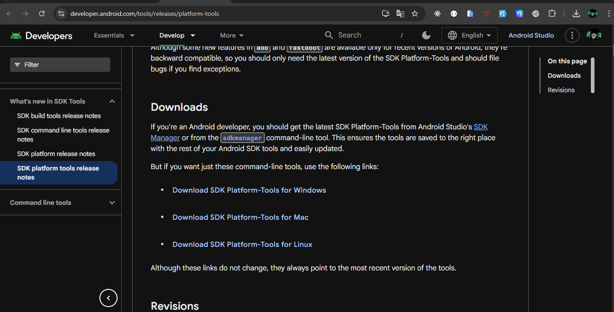
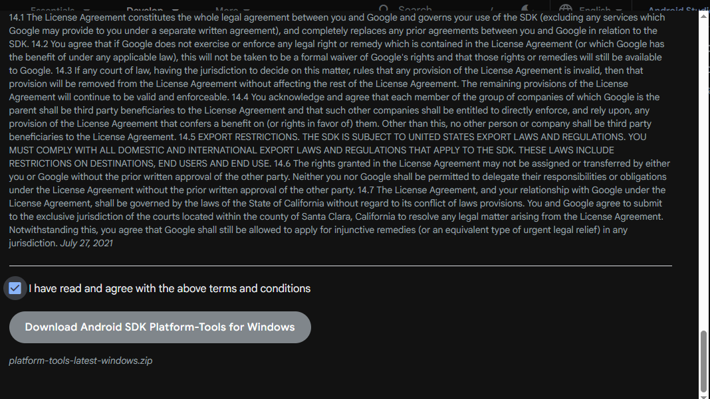
Yuklab bo‘lganingizdan keyin zip faylni rasmdagi kabi zipdan chiqarib oling.
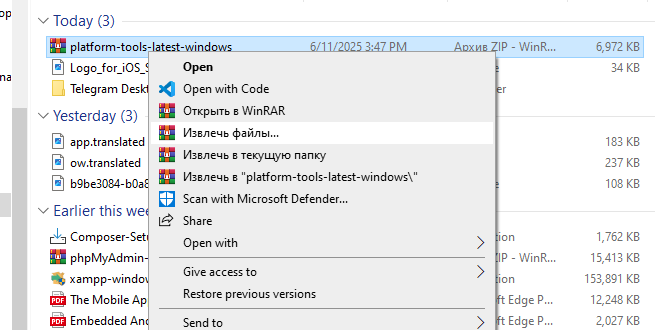
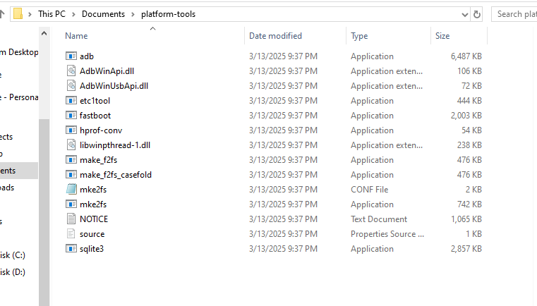
Keyin adb ni kampyuteringiz tanishi uchun uning turgan joyini pathlar ro‘yhatiga qo‘shib qo‘yishingiz kerak bo‘ladi.
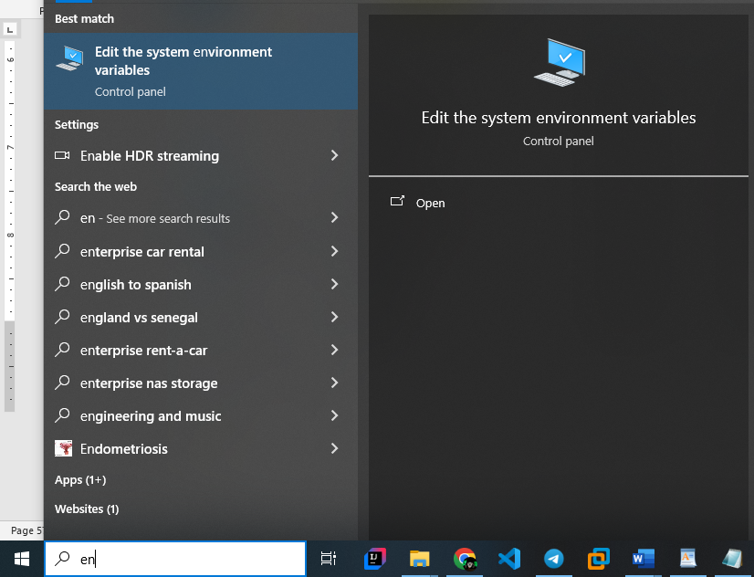
Kampyuteringiz qidiruv bo‘limiga shunday yozing va “Edit the system environment variables” ni ustiga bosing. Keyin sizda ham quydagicha oyna ochiladi.
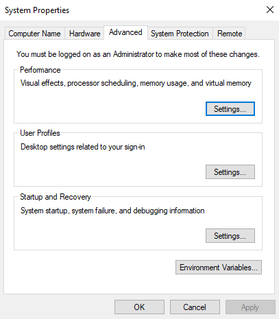
Siz bu yerdan “Environment Variables” ni ustiga bosing va yana bir oyna ochiladi.
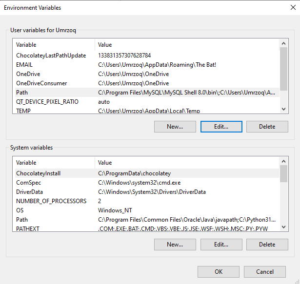
Shunday ochilgandan keyin siz path qismiga adb turgan joyni yozib qo‘yishingiz kerak bo‘ladi, va unga qo’shib bo‘lganingizdan keyin barcha oynalarga OK ni bosib chiqib keting. Cmdni oching va rasmdagi kabi adb buyrug‘ini yozib adb o‘rnatilganini tekshirib oling agar rasmdagi kabi chiqsa kampyuteringizga adb dasturi o‘rnatilgan bo‘ladi va uning imkoniyatlaridan foydalanishingiz mumkin.
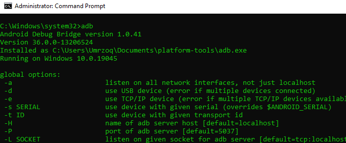
Qurulmaga ulanish
ADB orqali fizik qurilmaga ulanishingiz uchun USB-Debugging (USB nosozlikni tuzatish) opsiyasini yoqish muhimdir. Google Nexus 5 qurilmasida bu sozlamani quyidagicha topishingiz mumkin.
Sozlamalar (Settings) → Dasturchi parametrlar (Developer options). Quyidagi ekranda bu ko‘rsatilgan. Agar Dasturchi parametrlar (Developer options) menyusi ko‘rinmasa, demak u yashiringan. Uni yoqish uchun quyidagi amallarni bajaring:
Sozlamalar (Settings) → Qurilma haqida (About device) → Build number bo‘limiga kirib, Build number ustiga 7 marta ketma-ket bosing.
Shundan so‘ng, Dasturchi parametrlar menyusi faollashadi va u orqali USB-Debugging ni yoqishingiz mumkin bo‘ladi.
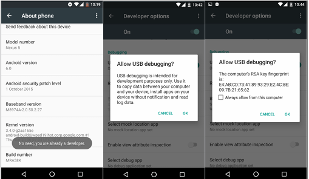
Qurilmaga ilova o‘rnatish
Birinchi navbatda siz qurulmangiz yoki emulator kampyuterga to‘g‘ri ulanganligini tekshirib olishingiz kerak bo‘ladi buning uchun adb devices kamandasini terminalga yozing.
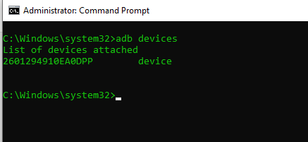
Rasmdagi kabi sizda chiqgan bo‘lsa qurulmangiz va kampyuteringiz ulangan bo‘ladi. Qurulmaga to‘g‘ridan to‘g‘ri ulanish uchun siz terminalga rasmdagi kabi adb shell kommandasini yozib ulanishingiz mumkin bo‘ladi.
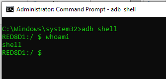
Agar siz qurulmangizga o‘rnatilgan barcha ilovalar ro‘yhatini ko‘rmoqchi bo‘lsangiz quydagicha kamandani terminalga yozing.
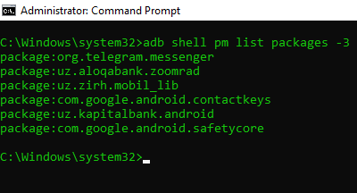
Bu yerda foydalanuvchi o‘zi o‘rnatgan ilovalarni package nemelar ro‘yxati chiqadi. Agar siz ilova haqida batafsil ma’lumot (masalan, joylashuvi, versiyasi) ko‘rmoqchi bo‘lsangiz, bu buyruqdan foydalaning:
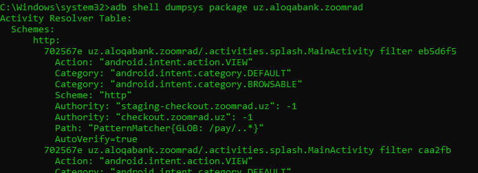
Qurilmadan fayllarni olish
Agar siz qurulmadan fayl olishingiz kerak bo‘lsa quydagicha kamandani yozasiz.
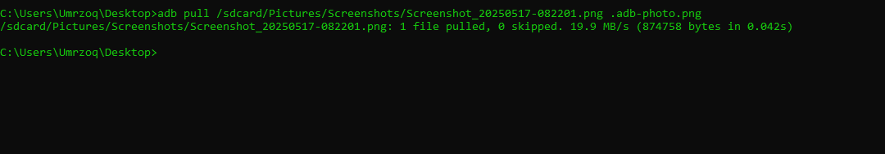
Bu rasmda biz qurulmadagi rasmni yuklab olibganmiz. Agar siz biror bir ilovani yuklab olmoqchi bo‘lsangiz ham xuddi shunday yuklab olishingiz mumkin bo‘ladi buning uchun ilova turgan manzilni topishingiz kerak bo‘ladi.
Fayllarni qurilmaga saqlash
Agar siz kampyuteringizdagi biror faylni qurulmaga saqlamoqchi bo‘lsangiz adb push fayl_manzili faylni_qurulmaga_joylashtirish_manzili shu kamanda orqali joylashtirishingiz mumkin bo‘ladi.
adb push ./Android.docx /sdcard/Documents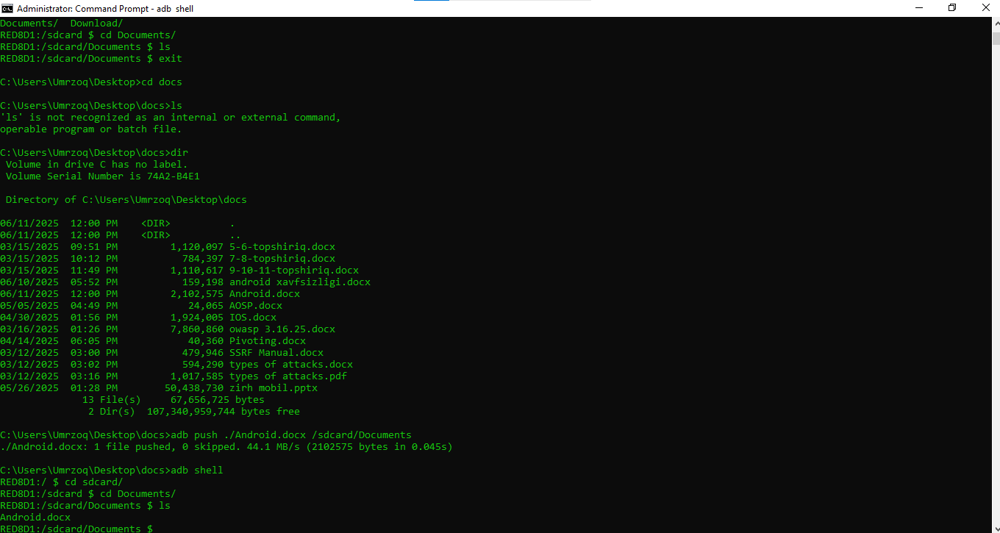
Log ma’lumotlarini ko‘rish
Android qurilmaning log ma’lumotlari (logcat) — bu qurilmadagi ilovalar, tizim servislar va boshqa komponentlar tomonidan yozilayotgan xatoliklar, ogohlantirishlar va izohlar hisoblanadi. Qurilmadagi barcha log yozuvlarini ko‘rish uchun terminalga adb logcat buyrug‘ini kiritish kifoya. Ushbu buyruq orqali tizimda sodir bo‘layotgan barcha jarayonlar, xatoliklar va bildirishnomalar real vaqt rejimida aks etadi.
adb logcat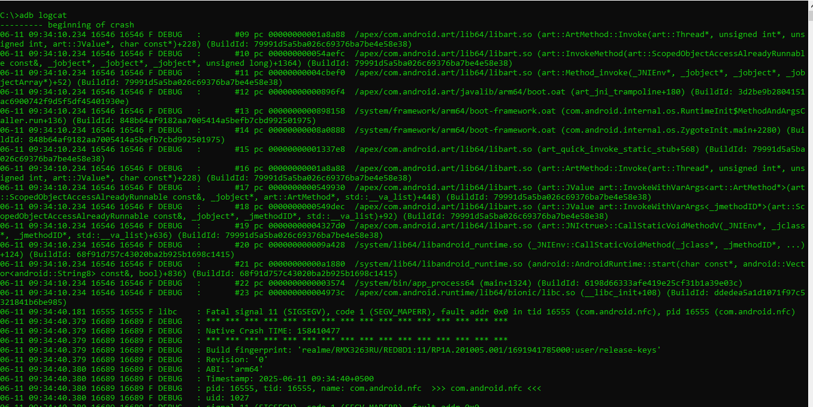
Agar siz faqatgina ma’lum bir ilovaga tegishli log yozuvlarini ko‘rmoqchi bo‘lsangiz, quyidagi buyruqdan foydalanishingiz mumkin.
adb logcat | grep uz.anormobile.retail
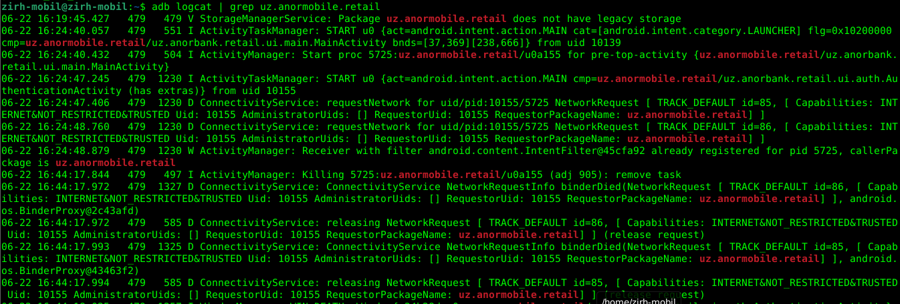
Agar siz emulatorni asosiy operatsion tizimingizdan alohida muhitda, masalan, Windows tizimida VMware orqali ishga tushirilgan Ubuntu ichida foydalansangiz, adb buyruqlarini yuborishdan avval emulator bilan bog‘lanishingiz kerak bo‘ladi. Buning uchun birinchi navbatda qurilmaning IP manzilini aniqlab, so‘ngra quyidagi buyruq yordamida ulanishni amalga oshirasiz.
adb connect 192.168.160.125:5555
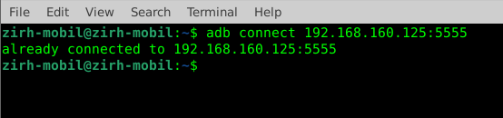
Ushbu amaldan so‘ng, siz virtual muhit orqali qurilmaga adb buyruqlarini bemalol yuborishingiz mumkin bo‘ladi.
Agar siz qurilmadan ma’lum bir ilovani butunlay o‘chirib tashlamoqchi bo‘lsangiz, quyidagi buyruqdan foydalanishingiz mumkin.
adb shell pm list packages -3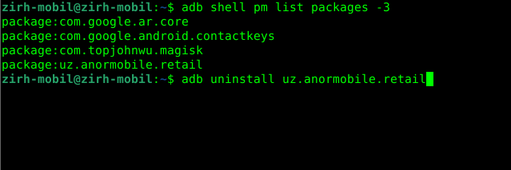
Agar siz qurilmaga biror bir .apk faylini o‘rnatmoqchi bo‘lsangiz, quyidagi buyruq orqali bu jarayonni amalga oshirishingiz mumkin.
adb install Android01.apk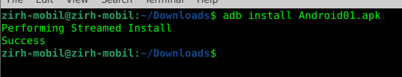
Agar sizda ilova bir nechta .apk fayllardan iborat bo‘lsa, masalan, base.apk va arxitekturaga mos qo‘shimcha modullar (masalan, arm64_v8a.apk, x86.apk va boshqalar) ko‘rinishida bo‘lsa, u holda bu ilovani quyidagi buyruq orqali to‘g‘ri tarzda o‘rnatishingiz mumkin.
adb install-multiple base.apk split_config.arm64_v8a.apk
split_config.xhdpi.apk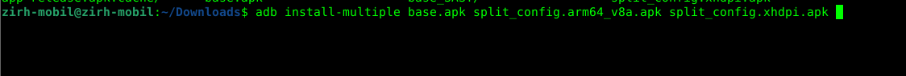
Agar siz qurilmada allaqachon o‘rnatilgan ilovaning yangilangan (yoki yangi) versiyasini o‘rnatmoqchi bo‘lsangiz, ilovani butunlay o‘chirib yubormasdan, quyidagi buyruq orqali uni qayta o‘rnatishingiz mumkin.
adb install -r Android01.apk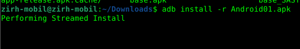
Agar siz qurilmadagi mavjud ilovani ishga tushirmoqchi bo‘lsangiz, terminalga quyidagi buyruqni kiriting va Enter tugmasini bosing.
adb shell monkey -p uz.anormobile.retail -v 1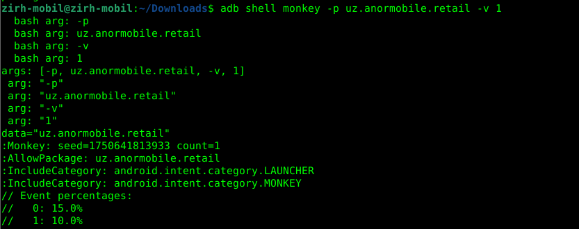
Agar siz qurilmada Google ilovasini ishga tushirib, unda biror matn yozmoqchi bo‘lsangiz, bu jarayonni quyidagi ketma-ket buyruqlar orqali amalga oshirishingiz mumkin.
adb shell input text "Salom Google"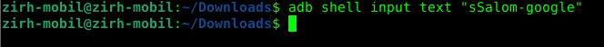
Adb buyruqlari
ADB (Android Debug Bridge) ning eng ko‘p ishlatiladigan va foydali barcha asosiy buyruqlari (komandalar) kategoriyalar bo‘yicha tartiblangan holda taqdim etilgan.
1. Qurilma bilan aloqa va holatini tekshirish
| Buyruq | Tavsifi |
|---|---|
| adb devices | Qurilmalar ro‘yxatini ko‘rsatadi |
| adb get-serialno | Qurilmaning serial raqamini chiqaradi |
| adb get-state | Qurilma holatini ko‘rsatadi (device, offline) |
| adb connect <ip>:<port> | Wi-Fi orqali qurilmaga ulanadi |
| adb disconnect | Wi-Fi orqali ulanishni uzadi |
2. Ilova bilan ishlash
| Buyruq | Tavsifi |
|---|---|
| adb install <app.apk> | APK faylni o‘rnatadi |
| adb install -r <app.apk> | APK’ni mavjud versiyasini ustiga qayta o‘rnatadi (reinstall) |
| adb uninstall <package> | Ilovani o‘chiradi |
| adb shell pm list packages | Ilovalar (package) ro‘yxati |
| adb shell pm path <package> | Ilova APK joylashuvini ko‘rsatadi |
| adb shell monkey -p <package> -v 1 | Ilovani ishga tushiradi (test uchun) |
3. Fayl uzatish
| Buyruq | Tavsifi |
|---|---|
| adb push <local> <remote> | Faylni kompyuterdan qurilmaga yuboradi |
| adb pull <remote> <local> | Faylni qurilmadan kompyuterga yuklaydi |
| adb shell ls <path> | Qurilmadagi fayl va papkalarni ko‘rsatadi |
4. Qurilma nazorati
| Buyruq | Tavsifi |
|---|---|
| adb reboot | Qurilmani qayta ishga tushiradi |
| adb reboot bootloader | Qurilmani bootloader holatiga o‘tkazadi |
| adb reboot recovery | Qurilmani recovery rejimiga o‘tkazadi |
| adb root | Qurilmani root huquqi bilan ishga tushiradi |
| adb shell | Qurilmada terminal sessiyasini ochadi |
5. Tizim va loglar bilan ishlash
| Buyruq | Tavsifi |
|---|---|
| adb logcat | Qurilmadagi loglarni ko‘rsatadi (real-time) |
| adb logcat -d > log.txt | Loglarni faylga yozadi |
| adb shell dumpsys | Tizim servislarining ma’lumotlari |
| adb shell top | CPU ishlash statistikasi |
| adb shell screencap /sdcard/screen.png | Ekran rasmi olish |
| adb shell screenrecord /sdcard/record.mp4 | Ekran yozuvi qilish |
6. Port forwarding va Networking
| Buyruq | Tavsifi |
|---|---|
| adb forward <local> <remote> | Port forwarding qiladi |
| adb reverse <remote> <local> | Qurilmadan kompyuterga port ulash |
| adb shell netstat | Tarmoq ulanishlarini ko‘rsatadi |
7. Foydalanuvchi ma’lumotlar
| Buyruq | Tavsifi |
|---|---|
| adb shell settings list system | Tizim sozlamalarini ko‘rsatadi |
| adb shell am start -n <package>/<activity> | Belgilangan activity ni ishga tushiradi |
| adb shell input text “Hello” | Qurilmaga matn yuboradi |
| adb shell input keyevent 26 | Qurilmaning tugmalarini emulyatsiya qiladi (masalan, Power tugmasi) |
8. Developer va debugging uchun
| Buyruq | Tavsifi |
|---|---|
| adb bugreport | Qurilma xatoliklari haqida batafsil hisobot |
| adb shell getprop | Qurilma xususiyatlari (build info, model va h.k.) |
| adb tcpip 5555 | Qurilmani Wi-Fi orqali ulanadigan holatga o‘tkazadi |
APKAnalyser
ApkAnalyzer — bu Android ilovalarini (APK fayllarini) tahlil qilish uchun mo‘ljallangan vosita bo‘lib, u Android Studio ichida mavjud bo‘lgan grafik interfeysli qulay vositadir. ApkAnalyzer yordamida APK faylning tuzilmasini, resurslarini, kodlarini, ruxsatlarini, foydalangan kutubxonalarini va boshqa ko‘plab muhim jihatlarini chuqur tahlil qilish mumkin. Bu vosita ilovaning hajmini optimallashtirish, xavfsizlikni baholash va muhim texnik tafsilotlarni o‘rganish uchun foydalidir. ApkAnalyzerning asosiy imkoniyatlari quyidagilardan iborat: APK fayl tuzilmasini ko‘rish va undagi barcha papka va fayllarni analiz qilish mumkin. Masalan, classes.dex, res/, lib/, AndroidManifest.xml va boshqalar. Aynan classes.dex fayli ichida ilovaning kompilyatsiyalangan bytecodelari saqlanadi, ya’ni bu ilovaning logikasini tushunishga yordam beradi. AndroidManifest.xml fayli orqali ilova qanday ruxsatlar (permissions), faoliyatlar (activities), xizmatlar (services) va intent-filtrlar ishlatganini aniqlash mumkin. Bu esa xavfsizlik tahlilida juda muhim.
Shuningdek, ApkAnalyzer ilovaning umumiy hajmini tahlil qilib beradi. Har bir modul, kutubxona yoki resurs qancha joy egallayotganini grafik ko‘rinishda ko‘rsatadi. Bu esa ilovani optimallashtirish uchun juda qulay. Undan tashqari, ilovada ishlatilgan tashqi kutubxonalarni ko‘rish, ular versiyalarini aniqlash va ilova qaysi SDKlar yoki ishlab chiquvchi vositalar bilan yig‘ilganini bilish imkonini beradi.
ApkAnalyzer yordamida ilovadagi dex fayllarni ko‘rib chiqib, unda nechta klass, metod va maydonlar borligini aniqlash mumkin. Bu esa ilovaning murakkablik darajasini baholashga yordam beradi. Ayrim hollarda, ilovada ortiqcha yoki foydalanilmayotgan resurslar mavjud bo‘lishi mumkin ApkAnalyzer bularni aniqlashda ham qo‘l keladi.
ApkAnalyzerni ishlatish uchun Android Studioni ochib, Build menyusidan Analyze APK bo‘limini tanlash kerak bo‘ladi. Ochilgan oynada kerakli .apk faylni tanlaysiz va ilova tahliliga kirishasiz. Bu vosita Android Studio bilan birga o‘rnatiladi, alohida yuklab olishga ehtiyoj yo‘q.
Xulosa qilib aytganda, ApkAnalyzer bu — Android ilovalari ustida ishlayotgan dasturchilar va xavfsizlik tahlilchilari uchun muhim vosita bo‘lib, APK faylni dekompilyatsiya qilmasdan turib, muhim ma’lumotlarni tahlil qilish imkonini beradi. Ayniqsa ilovaning ruxsatlari, resurslari va hajmiga oid chuqur tahlillarni samarali amalga oshirish uchun juda qulay. APKAnalyser – bu Sony Mobile Communications tomonidan ishlab chiqilgan va u ochiq manba sifatida quyidagi havolada mavjud. ApkAnalyserni Android Studio orqali ishlatsa ham bo’ladi ishlatish uchun Android studioni ochasiz ba Build/Apk Analyser ni tanlab tekshirmoqchi bo‘lgan ilovani tanlab olasiz natija quydagicha chiqishi kerak.
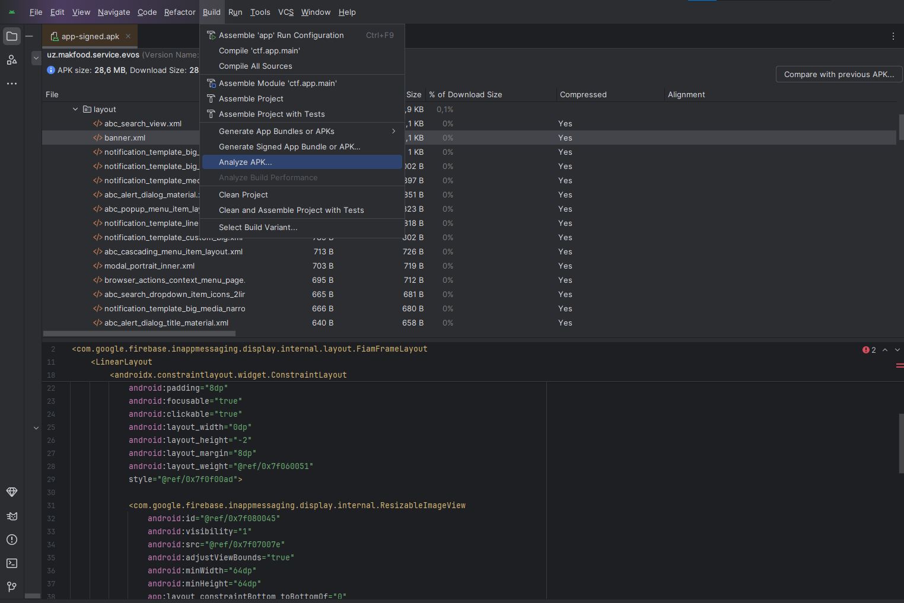
APKTool
APKTool — bu Android ilovalarini (APK fayllarini) teskari muhandislik qilish (reverse engineering) uchun ishlatiladigan kuchli va mashhur konsol (komanda qatori) vositasidir. U orqali APK faylni dekompilyatsiya qilish, ya’ni ilova ichidagi resurslar, AndroidManifest.xml, smali kodlar va boshqa muhim tarkibiy qismlarni ochish mumkin. Bu vosita Android ilovalari xavfsizligini tahlil qilishda, modifikatsiya qilishda yoki resurslarni o‘rganishda keng qo‘llaniladi.
APKTool vositasi yordamida APK faylni ikki asosiy bosqichda tahlil qilish mumkin: dekompilyatsiya (ya’ni .apk faylni ochish) va qayta yig‘ish (recompile). Dekompilyatsiya jarayonida APKTool ilovani alohida papkalarga ajratadi: bunda resurslar (masalan, res/, assets/, drawable/), AndroidManifest.xml, va eng muhimi, ilovaning asosiy logikasi yozilgan .smali fayllar olinadi. .smali fayllar bu — Androidning dex bytecodeining o‘qiladigan shaklidir. Bu orqali dasturchi Java kodining qanday ishlayotganini tushunishi mumkin bo‘ladi.
APKTool yordamida tahlil qilinayotgan ilova ichidagi matnlar, interfeys elementlari, ruxsatlar, ekranlar (activities), xizmatlar (services) va boshqa ko‘plab konfiguratsiyalarni ko‘rish mumkin. Ayniqsa AndroidManifest.xml fayl to‘liq o‘qiladigan formatda olinadi, bu esa ilovaning xavfsizlik modelini, foydalanuvchi ruxsatlarini va tashqi qurulmalar bilan aloqasini tushunishga yordam beradi.
Ilova tahlil qilinganidan so‘ng, agar kerak bo‘lsa, .smali fayllarda yoki resurslarda o‘zgartirishlar kiritib, APKTool yordamida ilovani qaytadan yig‘ish (recompile) mumkin. Bu qayta yig‘ilgan faylni imzolash orqali yana Android qurilmaga o‘rnatish mumkin bo‘ladi. Shu jihati bilan APKTool, masalan, ilovani test maqsadida modifikatsiya qilish yoki xavfsizlik testlarini o‘tkazishda juda foydalidir. APKToolni ishlatish uchun komanda satrida quyidagi kabi buyruqlardan foydalaniladi.
apktool d app.apk yoki apktool d app.apk -o my_app
Bu ilovani dekompilyatsiya qiladi.
apktool b app_folder -o modifed.apk yoki apktool b app_folder
Bu kod teskari muhandislik qilingan papkani yana APK faylga yig‘adi. APKTool Javada yozilgan bo‘lib, kross-platformalidir — ya’ni Windows, Linux va macOS tizimlarida ishlaydi. Uni rasmiy sayt yoki GitHub sahifasi orqali yuklab olish mumkin. Ko‘pincha APKTooldan boshqa vositalar bilan birga, masalan keytool, jarsigner, uber-apk-signer, Frida, yoki Dex2Jar kabi vositalar bilan birgalikda foydalaniladi.
Xulosa qilib aytganda, APKTool — bu Android APK fayllarini tahlil qilish, o‘zgartirish va qayta yig‘ish imkonini beruvchi kuchli teskari muhandislik vositasidir. Bu vosita yordamida dasturchilar va xavfsizlik tahlilchilari ilovaning tuzilmasi, ishlash mexanizmi va zaif joylarini chuqur o‘rganish imkoniga ega bo‘ladilar.
Androguard
Androguard — bu Android ilovalari (APK fayllari) ustida teskari muhandislik va xavfsizlik tahlilini avtomatlashtirilgan tarzda amalga oshirish imkonini beruvchi kuchli va moslashuvchan Python kutubxonasi va vositalar to‘plamidir. U yordamida APK, DEX va Java class fayllarini o‘qish, tahlil qilish, va ularning ichki tuzilmasini chuqur o‘rganish mumkin. Androguard ayniqsa avtomatik va statik tahlil (ya’ni ilovani ishga tushirmasdan turib kodni o‘rganish) uchun ishlatiladi va xavfsizlik tadqiqotchilari, mobil dastur tahlilchilari orasida keng tarqalgan.
Androguard vositasi yordamida APK faylni ochish va u tarkibidagi .dex fayllarni tahlil qilish mumkin. DEX fayllar Android ilovaning asosiy logikasini o‘z ichiga oladi va ularni Androguard vositasi smali emas, balki Python orqali to‘g‘ridan-to‘g‘ri o‘qiladigan obyektlarga aylantirib beradi. Bu esa tahlilchini katta hajmdagi kodlar orasida avtomatik tarzda qidiruv, filtr, analiz ishlari olib borishga imkon yaratadi. Misol uchun, siz Androguard yordamida ilova qaysi ruxsatlar (permissions) so‘rayotganini, qaysi API chaqiruvlari ishlatilayotganini yoki qanday kutubxonalar ishlatilayotganini aniqlay olasiz.
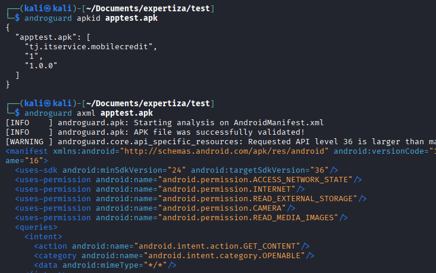
Androguardda agar ilova ma’lumotlarni olish uchun androguard apkid ilova_nomi.apk kamandasi orqali ko’rishimiz mumkin bo‘ladi. Agar ilovaning AndroidManifest.xml faylni ko‘rimoqchi bo‘lsangiz androguard axml ilova_nomi.apk kamandasi orqali AndroidManifest.xml faylni ichidagi barcha ma’lumotlarni ko‘rish imkoni mavjud bo‘ladi. Androguard ko‘pincha boshqa vositalar bilan birgalikda ishlatiladi. Masalan, siz apktool bilan APK faylni dekompilyatsiya qilib, so‘ng Androguard bilan kodni analiz qilishingiz mumkin. Bundan tashqari, Androguardni o‘z skriptlaringizga qo‘shib, yuzlab ilovalarni avtomatik tarzda tahlil qilish uchun ham foydalanishingiz mumkin.
Xulosa qilib aytganda, Androguard — bu kuchli va script asosida boshqariladigan vosita bo‘lib, u orqali APK fayllarni chuqur statik tahlil qilish, xavfsizlik zaifliklarini aniqlash va ilovaning ichki tuzilmasini to‘liq o‘rganish mumkin. Python dasturchilar uchun bu vosita yuqori darajada moslashuvchanlik va kengaytma imkoniyatlarini taqdim etadi. Yuklab olish uchun havola:(https://github.com/maaaaz/androwarn)
MobSF
MobSF (Mobile Security Framework) — bu Android, iOS va Windows mobil ilovalari uchun statik, dinamik va zararli dastur (malware) tahlilini avtomatlashtirilgan tarzda bajaradigan kuchli va ochiq manbali xavfsizlik tahlil vositasidir. U mobil ilovalarning xavfsizlik darajasini aniqlashda, zaif joylarni topishda, ruxsatlar va API chaqiruvlarini tekshirishda keng qo‘llaniladi. MobSF tajribali xavfsizlik mutaxassislari bilan bir qatorda, yangi o‘rganuvchilar uchun ham qulay va tushunarli interfeysga ega. MobSF ikki asosiy tahlil turini qo‘llab-quvvatlaydi.
Statik tahlil — ilovani ishga tushirmasdan turib, APK yoki IPA fayl ichidagi resurslar, kodlar, AndroidManifest.xml, ruxsatlar, komponentlar, smali yoki java kodlar, URL manzillar, tokenlar, kriptografik xatoliklar va boshqa xavfsizlik zaifliklarini avtomatik tarzda tahlil qiladi. Bu bosqichda ilovaning ichki logikasi va xavfsizlik siyosati chuqur o‘rganiladi.
Dinamik tahlil — ilovani real vaqt rejimida virtual Android emulyatorda ishga tushiradi va ilovaning tarmoq trafigi, API so‘rovlari, sistemaga murojaatlari, fayl tizimi bilan ishlashi va boshqa faoliyatlarini yozib boradi. Dinamik tahlilda siz Frida bilan integratsiya qilib, SSL Pinning, Root detection, anti-debugging, va boshqa mudofaa mexanizmlarini avtomatik aniqlashingiz mumkin.
MobSFning yana bir kuchli jihati malware tahlili. Agar ilovada zararli xatti-harakatlar (masalan, SMS yuborish, ruxsatsiz audio yozish, kontaktlarni o‘g‘irlash, reklama kodlari) bo‘lsa, ularni ham tahlil qiladi va xavflilik darajasini baholaydi.
MobSFni kali linuxga o‘rnatish uchun quydagi ketma-ketlikni bajarish lozim. Birinchi navbatda kali linux Ichida git o‘rnatilganiga ishon hosil qilib oling agar o‘rnatilmagan bo‘lsa uni quydagicha yuklab olishingiz mumkin.
sudo apt-get install git
Keyin quydagi buyruqlar orqali kerakli barcha vositalarni o‘rnatib olishingiz mumkin.
sudo apt install python3-dev python3-venv python3-pip build-essential libffi-dev libssl-dev libxml2-dev libxslt1-dev libjpeg62-turbo-dev zlib1g-dev wkhtmltopdf
Quyida keltirilgan buyruq yordamida MobSF ni yuklab oling.
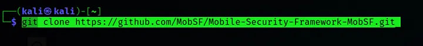
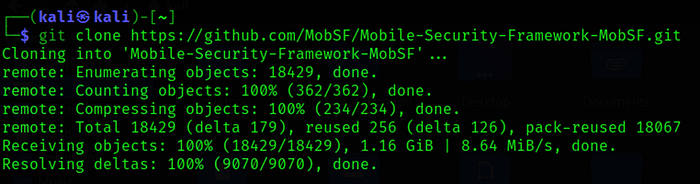
Github repozitoryni yuklab olganingizdan keyin cd Mobile-Security-Framework-MobSF katologiga kirib oling va ./setup.sh kamandasini terminalga yozing va Mobsf dasturi ishga tushadi. Login parol (mobsf:mobsf). MobSF veb-interfeysga ega bo‘lib, unga kirganingizda .apk, .aab, .ipa, .zip yoki .source faylni yuklash orqali tahlilni boshlashingiz mumkin. Tahlil tugagach, sizga grafik hisobot, JSON yoki PDF ko‘rinishida to‘liq natijalar taqdim etiladi. Xulosa qilib aytganda, MobSF — bu mobil ilovalarning xavfsizligini tez, chuqur va aniq tahlil qilish imkonini beruvchi zamonaviy va avtomatlashtirilgan vositadir. U nafaqat tahlil, balki ishlab chiquvchilarga xavfsizlikni qanday yaxshilash bo‘yicha aniq tavsiyalar ham beradi. Shu sababli, u pentesterlar, mobil xavfsizlik tahlilchilari, va ishlab chiquvchilar orasida juda mashhur hisoblanadi.
APKleaks
APKLeaks — bu Android ilovalari (APK fayllari) ichidan maxfiy ma’lumotlar va potensial xavfsizlik zaifliklarini aniqlab beruvchi ochiq manbali, avtomatlashtirilgan statik tahlil vositasi hisoblanadi. Asosan APK faylni dekompilyatsiya qilib, undan qatiq kodlangan ma’lumotlar ya’ni APK ichida qattiq kodlangan holda saqlangan API kalitlari, tokenlar, parollar, server URL manzillari, yashirin fayllar yo‘llari va boshqa nozik ma’lumotlarni qidirib topadi. APKLeaks Python tilida yozilgan bo‘lib, apktool va grep kabi vositalardan foydalanadi. U APK faylni avval apktool yordamida dekompilyatsiya qiladi, so‘ngra .smali, .xml, va boshqa matnli fayllar ichida oldindan belgilangan regex (muntazam ifodalar) asosida ma’lumot izlaydi. Shu tariqa ilovadagi ehtimoliy zaif joylarni avtomatik aniqlaydi. Masalan, APKLeaks yordamida quyidagi narsalarni topish mumkin.
-
Firebase URLlari va API kalitlari
-
Google Maps yoki Stripe API kalitlari
-
JWT tokenlar
-
Base64 kodlangan ma’lumotlar
-
AWS kalitlari
-
OAuth tokenlar
-
Shaxsiy server manzillari (IP, endpointlar)
-
Qattiq kodlangan foydalanuvchi ma’lumotlari yoki login-parollar
APKLeaksni ishlatish juda oddiy. Masalan, quyidagicha buyruq orqali tahlilni boshlash mumkin:
apkleaks -f app.apk -o result.txt
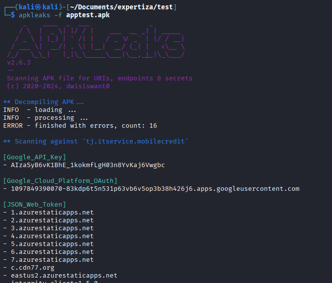
Bu yerda -f tahlil qilinadigan APK fayl, -o natijani yozib olinadigan fayl. Shuningdek, foydalanuvchi o‘zining maxsus regex qoidalarini .json fayl ko‘rinishida sozlashi va APKLeaksga qo‘shib tahlilni kengaytirishi mumkin. APKLeaks asosan statik tahlil vositasi hisoblanadi, ya’ni u ilovani ishga tushirmasdan tahlil qiladi. Ammo u ilova ishlab chiquvchilari xavfsizlik nuqtai nazaridan qattiq kodlangan ma’lumotlarni APK ichida qoldirib ketmaganini tekshirish uchun juda foydali. Chunki APK fayl foydalanuvchiga yetib borganidan so‘ng, har qanday tajribali kishi uni ochib, bu ma’lumotlarni osongina ko‘rib olishi mumkin. Xulosa qilib aytganda, APKLeaks bu Android ilovalarda maxfiy ma’lumotlar sizib chiqish xavfini aniqlashda eng yengil, avtomatlashtirilgan va tezkor vositalardan biridir. U xavfsizlik tahlilchilari, pentesterlar va mobil ilova ishlab chiquvchilar tomonidan, ayniqsa CI/CD jarayonlariga avtomatik tahlil vositasi sifatida keng foydalaniladi.
Frida
Frida bu dynamic instrumentation toolkit, ya’ni harakatdagi (real vaqtli) ilova ichida kodlarni tahlil qilish, o‘zgartirish, kuzatish uchun ishlatiladi. Frida yordamida mobil ilovalarga teskari muhandislik qilish, xavfsizlik testlari, hook qilish, API chaqiruvlarini ko‘rish, SSL Pinning bypass, va boshqalar amalga oshiriladi. Fridani yuklab olish uchun rasmiy sayt https://frida.re yoki python orqali yuklab olsangiz bo‘ladi.
pip install frida-tools
pip install frida
Frida serverni https://github.com/frida/frida/releases oraqali yuklab olishingiz mumkin. Frida serverni yuklab olayotganda qurulma masalan emulatorni arxitekturasiga mos va fridani versiyasiga mos qilib yuklab olish kerak aks holda ishlamaydi(masalan:frida-server-16.1.4-android-arm64.xz). Frida quydagicha qism- lardan tashkil topgan.
-
frida-server — Android qurilmada ishlaydigan server, bu orqali ilovalarni tahlil qilamiz.
-
frida-tools (CLI) — Komandalarni terminal orqali bajarishga yordam beradi.
-
frida-python API — Pythonda Frida skriptlar yozish uchun.
-
Frida Gadget — Ilova ichiga joylashtiriladigan kutubxona (root kerak emas).
-
Frida Repl (Interactive Console) — Dinamik kod injeksiya qilish uchun interaktiv muhit.
Fridani o‘rnatib olganingizdan keyin uni to‘g‘ri ishlayotgani va versiyasini tekshirish uchun quydagi buyruqni terminalda bajarib ko‘ring.
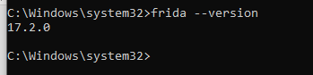
Android qurilmangiz arxitekturasiga mos keladigan Frida serverini yuklab olishingiz kerak. Masalan, qurilmangiz arm, arm64, x86 yoki x86_64 bo‘lishi mumkin. Frida serverini rasmiy GitHub sahifasidan yuklab olish tavsiya etiladi(https://github.com/frida/frida/releases). Bu yerda yana siz etibor qaratadigan joyingiz bu kampyuteringizdagi Frida versiyasi bilan siz yuklab olmoqchi bo‘lgan Frida server versiyasi bir xil bo‘lishi kerak. Frida serverni quydagicha qilib o‘z qurulmangizga o‘rnatib ishga tushursangiz bo‘ladi.
adb push frida-server /data/local/tmp/</p>
<p>adb shell</p>
<p>su</p>
<p>chmod 755 /data/local/tmp/frida-server</p>
<p>/data/local/tmp/frida-serverBazi bir ilovalarda Frida-serverni anilashga kod yozilgan bo‘ladi va Frida serverni siz ishga tushurganingizda ilova ishdan chiqadi bu paytda siz Frida script orqali buni chetlab o‘tsangiz bo‘ladi. Lekin bazi ilovalarda bu o‘xshamasligi mumkin masalan Frida serverni porti orqali aniqlanganda bu qancha Frida script yozishingizdan qatiy nazar baribir foydasiz bo‘lib qolaveradi buni chetlab o‘tish uchun Frida serverni standard 27042 portini o‘zgartirish kerak bo‘ladi buni o‘zgartirish uchun quydagicha amallarni bajarishingiz kerak. Adb orqali qurulmaga ulanib oling va Frida server joylashgan joyga borib quydagicha yozing.
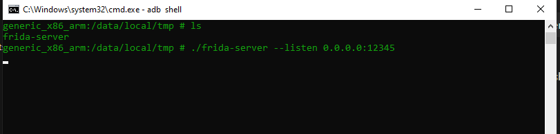
Endi sizning Frida serveringiz 27042 portdan emas balki 12345 portdan malumot chiqaradi va qabul qiladi bu orqali siz Frida serverga qo’yilgan cheklovni aylanib o‘tishingiz mumkin. Agar siz qurulmadagi barcha ilovalar idlarni ko‘rmoqchi bo‘lsangiz terminalga quydagicha buyruq yozing va enter tugmasini bosing.
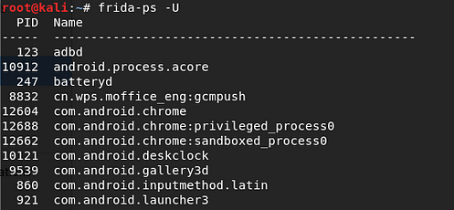
Quyidagi buyruqlar yordamida biz tashqi skriptlarni (JavaScript fayllarini) ilovaga yuklay olamiz. Buning uchun -l opsiyasi orqali JavaScript faylini ko‘rsatamiz. -f opsiyasi esa ilovani topish va unga hook qilish (ya’ni ulanib, nazorat qilish) uchun ishlatiladi.
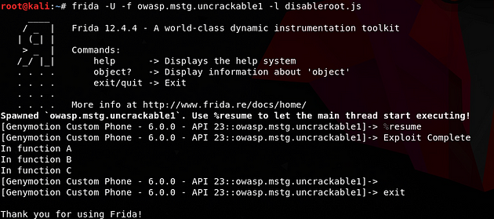
Diqqat bu ishlashi uchun siz Frida serverni o‘z qurulmangizni masalan emulatoringizni data/local/tmp fayliga joylashirgan bo‘lishingiz va adb orqali Frida serverni ishlatib qo‘yishingiz kerak bo‘ladi.
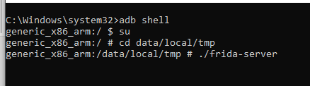
Frida vositasining eng yaxshi jihatlari shundaki, u bepul va ochiq manbali, hamda Windows, Linux va macOS kabi turli platformalarni qo‘llab-quvvatlaydi. Frida skript yozishni qo‘llab-quvvatlaydi, ya’ni biz o‘z skriptlarimizni ilovaga kiritib (inject qilib), har qanday funksiyalarni, hatto ilova manba kodi bo‘lmasa ham, API darajasida hook qilishimiz mumkin. Sizning kampyuteringizga ulangan barcha qurulmalar ro‘yhatini olish uchun quydagi buyruqni terminalga yozing.
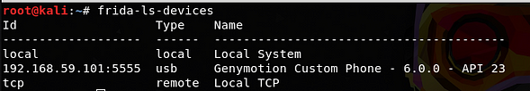
Ushbu buyruq barcha ishlaydigan jarayonlarni qaytaradigan jarayonlarni ro‘yxatga olish uchun ishlatiladi. USB orqali ulangan qurilmadan jarayonni qaytarish uchun -U opsiyasini qo‘shing.
| Buyruq | Izoh |
|---|---|
| frida-ps | Ishlayotgan processlar ro‘yxati |
| frida-ps -U | USB qurilmadagi processlar ro‘yxati |
| frida-ps -R | Remote qurilma (TCP orqali) |
| frida-trace | API yoki function’ni kuzatish (hook qilish) |
| frida-trace -n <package> | Muayyan ilova ichidagi function hook |
| frida-trace -n com.example -m “ssl” | SSL bilan bog‘liq barcha metodlarni kuzatish |
| frida -U -n <package> | Interaktiv muhitda ilovaga ulanish |
| frida -U -f <package> | Ilovani ishga tushirib ulanish |
| frida -U -n <package> -l script.js | JavaScript faylni hook sifatida yuklash |
MAVS
MAVS bu Mobile Application Vulnerability Scanner so‘zining qisqartmasi bo‘lib, mobil ilovalarni xavfsizlik nuqtai nazaridan statik va yarim-avtomatik tarzda tahlil qilish uchun mo‘ljallangan ochiq manbali vositadir. MAVS, ayniqsa Android ilovalarini tahlil qilishda foydalidir va ishlab chiquvchilarga hamda xavfsizlik tadqiqotchilariga APK fayl ichidagi zaifliklar, noto‘g‘ri ruxsatlar, xavfsiz bo‘lmagan amaliyotlar va boshqa potentsial muammolarni aniqlashda yordam beradi.
MAVS odatda APKTool, MobSF, Qark, Androguard kabi boshqa vositalar bilan birga ishlatiladi yoki ularning ustiga qurilgan. Ya’ni u mustaqil skaner bo‘lishi mumkin, yoki mavjud tahlil vositalaridan natijalarni yig‘ib, ularni boshqaruvli va aniq formatda birlashtiradi. MAVS avtomatik tarzda ilova ichidagi ma’lumotlarni ajratadi, masalan:
-
AndroidManifest.xml faylni o‘qiydi va undagi ruxsatlarni tahlil qiladi.
-
smali yoki .dex kodlarda ishlatilayotgan API chaqiruvlar, xavfli funksiyalar (masalan, WebView, JavaScriptInterface) mavjudligini aniqlaydi.
-
Kriptografik xatoliklar (masalan, noto‘g‘ri ishlatilgan Cipher, MessageDigest), tokenlar, URL manzillar va boshqa nozik ma’lumotlarni qidiradi.
-
Ruxsatlar (permissions) noto‘g‘ri belgilangan holatlarni aniqlaydi (masalan, READ_SMS, WRITE_EXTERNAL_STORAGE ruxsatlari kerakligidan ortiq bo‘lsa)
MAVS natijalarni hisobot shaklida taqdim etadi, odatda HTML yoki JSON formatda, va bu hisobotlar ichida aniqlangan har bir zaiflik haqida izoh, tavsiya, hamda xavflilik darajasi (kritik, o‘rtacha, past) ko‘rsatiladi. Bu esa ishlab chiquvchilarga zaiflikni nafaqat topish, balki uni tuzatish yo‘llarini ham tushunishga yordam beradi.
MAVS vositasi juda yengil va soddalashtirilgan CLI (komanda qatori interfeysi) orqali ishlaydi. Asosan Linux yoki macOS tizimlarida ishlatiladi. Quyidagi buyruq orqali oddiy tahlil boshlab yuboriladi.
python3 mavs.py -f path/to/app.apk -o output/
Bu yerda -f tahlil qilinadigan APK fayl, -o hisobot saqlanadigan papka.
MAVS ba’zida mobil ilovalar uchun CI/CD xavfsizlik testingi ga qo‘shib qo‘yiladi, ya’ni har bir build jarayonidan keyin avtomatik xavfsizlik tekshiruvi o‘tkaziladi. Bu dasturchilarni APK ichidagi noxush xatoliklarni dastlabki bosqichdayoq aniqlashga majbur qiladi. Xulosa qilib aytganda, MAVS — bu mobil ilovalar xavfsizligini avtomatik tarzda tahlil qilish uchun ishlatiladigan, soddalashtirilgan va foydali vosita bo‘lib, u orqali Android ilovalardagi zaif joylar tez va samarali aniqlanadi. U tajribali xavfsizlik mutaxassislari bilan bir qatorda, ishlab chiquvchilar uchun ham foydali, chunki u zaiflikni ko‘rsatibgina qolmay, uni qanday tuzatish kerakligini ham tushuntiradi. Yuklab olish uchun havola(https://github.com/sho-luv/mavs).
APKHunt
APKHunt — bu Android ilovalarini (APK fayllarini) xavfsizlik nuqtai nazaridan statik tahlil qilishga mo‘ljallangan ochiq manbali yengil va samarali vosita bo‘lib, u APK fayl ichidan maxfiy ma’lumotlar, tokenlar, API kalitlari, va xavfli kod yozilishlarini avtomatik tarzda aniqlaydi. APKHunt asosan qattiq kodlangan (hardcoded) ma’lumotlarni qidirishga ixtisoslashgan bo‘lib, xavfsizlik tahlilchilari, pentesterlar va ishlab chiquvchilarga ilovani tahlil qilishda qo‘l keladi. APKHunt dastlab APK faylni apktool yordamida dekompilyatsiya qiladi, ya’ni uni ochadi va matnli ko‘rinishga keltiradi. So‘ngra .smali, .xml, .json, .properties, va boshqa resurs fayllar ichida oldindan belgilangan muntazam ifodalar (regex) yordamida qidiruv amalga oshiradi. Ushbu regexlar yordamida quyidagi turdagi ma’lumotlarni aniqlaydi:
-
Firebase manzillari (.firebaseio.com)
-
Google Maps, Stripe, Twitter, GitHub API kalitlari
-
JWT tokenlar, OAuth tokenlar
-
AWS Access/Secret kalitlari
-
Base64 kodlangan satrlar
-
Foydalanuvchi login-parollar
-
IP manzillar, URL endpointlar
-
Kriptografik funksiya nomlari (AES, MD5, SHA1 va h.k.)
APKHunt bu topilgan ma’lumotlarni kategoriya bo‘yicha ajratib, tahlil natijalarini qulay HTML yoki JSON shaklida hisobot ko‘rinishida taqdim etadi. Bu hisobotlar orqali siz ilova ichida nozik yoki xavfli ma’lumotlar bor-yo‘qligini aniq ko‘ra olasiz.
APKHunt komanda satrida ishlaydi va juda oddiy buyruqlar bilan boshqariladi.
python3 apkhunt.py -f app.apk -o results/
Bu yerda -f bu tahlil qilinadigan APK fayl, -o esa natijalar saqlanadigan papka. Yuklab olish uchun havola(https://github.com/Cyber-Buddy/APKHunt).
Tapjacker
Tapjacker — bu Android ilovalardagi tapjacking (ya’ni foydalanuvchini aldash orqali noto‘g‘ri tugmalarni bosdirish) zaifligini aniqlash va sinovdan o‘tkazish uchun ishlab chiqilgan ochiq manbali ekspluatatsiya vositasi hisoblanadi. Uning asosiy vazifasi — boshqa ilovalarning ustiga shaffof (invisible) yoki yarim shaffof (semi-transparent) qatlamlar joylashtirib, foydalanuvchining xatti-harakatlarini nazorat qilishga urinadigan holatlarni modellashtirish. Tapjacker ilova sifatida ishlaydi va u orqali siz sinovdan o‘tkazmoqchi bo‘lgan haqiqiy ilovaning ustiga Overlay (ustki qatlam) joylashtirasiz. Bu qatlam foydalanuvchiga ko‘rinmasligi yoki chalg‘ituvchi interfeys orqali uni noto‘g‘ri tugmani bosishga majburlashi mumkin. Tapjacker aynan shunday sinov uchun ishlatiladi ya’ni u orqali.
-
Ilovaning ustiga oynacha (toast, dialog, yoki SYSTEM_ALERT_WINDOW ruxsatli overlay) joylashtiriladi
-
Tugma, ruxsat olish oynasi, yoki xavfsizlik bilan bog‘liq harakatlar ustiga interaktiv qoplama qo‘yiladi
-
Foydalanuvchi real tugmani bosdim deb o‘ylasa ham, aslida boshqa yashirin amal bajariladi
Tapjacker asosan ta’limiy va xavfsizlik test maqsadlarida ishlatiladi. Uni Android Studio orqali yig‘ib olish mumkin yoki tayyor APK shaklida yuklab olib test qilish mumkin. Odatda quyidagi bosqichlar amalga oshiriladi:
-
Test qilinadigan ilova Android qurilmada o‘rnatiladi
-
Tapjacker ilovasi ochiladi va unda “target package” tanlanadi (ya’ni hujum qilinadigan ilova)
-
Tapjacker oynasi ustki qatlam hosil qiladi va foydalanuvchi uni bosgandek tuyulgan harakatni kuzatadi
Agar sinov davomida foydalanuvchi ilovaning ustiga o‘rnatilgan shaffof qatlam orqali noto‘g‘ri amal bajarayotgan bo‘lsa, demak ilova tapjacking zaifligiga ega. Tapjacker bu holatni fosh qilishi va sizga ilova ichida filterTouchesWhenObscured="true" yoki onFilterTouchEventForSecurity() kabi himoya mexanizmlari yo‘qligini ko‘rsatishi mumkin. Yuklab olish uchun havola(https://github.com/dzmitry-savitski/tapjacker).
Logcat
Mobil ilova xavfsizligini tahlil qilishda ishlatiladigan eng asosiy vositalardan biri bu Logcat. Logcat bu Android tizimining real vaqtda ishlaydigan log yozuvlarini ko‘rsatib boradigan jurnal tizimi bo‘lib, ilova ishga tushgan vaqtdan boshlab, u qanday metodlarni bajarayotgani, qanday xatoliklar sodir bo‘layotgani, qanday ma’lumotlar chiqarilayotgani, hatto tizim darajasida qanday signal va xabarnomalar uzatilayotgani haqida to‘liq ma’lumot beradi. Asosan, Logcat yordamida ilova ichida yuz berayotgan barcha hodisalar, ya’ni Log.d, Log.e, Log.i, Log.w, System.out.println, hatto native darajadagi xatoliklar ham tahlil qilinadi. Ilovaning qanday so‘rov yuborayotgani, foydalanuvchidan olingan ma’lumotlar, o‘zgartirilayotgan qiymatlar, ishga tushayotgan komponentlar, bajarilayotgan funksiyalar va ularning ketma-ketligi, Logcat orqali aniqlanadi.
Xavfsizlik tahlilchisi Logcat yordamida ilova qanday API endpointlarga murojaat qilayotganini, tokenlar yoki session IDlar qanday hosil bo‘layotganini, ularning qiymatlari va bu qiymatlar logga tushib qolganmi-yo‘qmi, bularni kuzatadi. Chunki ko‘plab noto‘g‘ri ishlab chiqilgan ilovalarda maxfiy ma’lumotlar, masalan parollar, JWT tokenlar yoki OAuth kalitlar Log.d() orqali logga chiqarib yuborilgan bo‘ladi va foydalanuvchi qurilmasidagi log fayllar orqali buni tahlil qiluvchi kishi ko‘rib olishi mumkin. Bu esa xavfsizlikka katta tahdid tug‘diradi. Shu sababli Logcat nafaqat ishlab chiquvchilar uchun test va debug vositasi, balki xavfsizlik tahlilchilari uchun ham real vaqtda ilovaning ichki ishini tahlil qiluvchi ko‘zdir.
Logcatni ishlatish uchun adb logcat buyrug‘i ishlatiladi. Bu buyruq orqali siz qurilmaga ulanib, real vaqt rejimida loglar oqimini kuzatishingiz mumkin. Istasangiz, loglarni filtr qilib faqat kerakli tag bilan chiqarishingiz yoki faqat bir ilovaga tegishli loglarni ko‘rishingiz mumkin. Misol uchun, siz ilovani ishga tushirganingizda qanday ruxsatlar so‘rayapti, qaysi activity yoki service qanday ketma-ketlikda ishga tushmoqda, bu ma’lumotlarning barchasini Logcat aniq ko‘rsatadi. Shu jihatdan olganda, Logcat orqali siz ilova ichidagi harakatlarning “ichki ovozini” eshitgandek bo‘lasiz.
Logcat yordamida dinamik tahlil ham amalga oshiriladi. Masalan, siz foydalanuvchi login qilganida token logga chiqyaptimi yo‘qmi, API so‘rovlar yuborilganda qanday javoblar qaytmoqda, ilova nimani yodda saqlayapti — bularni aniq ko‘rib olasiz. Shuningdek, ba’zida ilovada try-catch bloklar noto‘g‘ri yozilgani sababli xatoliklar logda ochiq-oydin chiqarilgan bo‘ladi. Bu esa tajribali hujumchi yoki xavfsizlik tahlilchisi uchun juda katta manba hisoblanadi. Chunki bu orqali ilovaning ichki tuzilmasini, ishlash mantig‘ini va himoya darajasini tushunib olish mumkin bo‘ladi.
APKDeepLens
APKDeepLens — bu Android ilovalarini chuqur xavfsizlik tahlilidan o‘tkazish uchun mo‘ljallangan ilg‘or statik tahlil vositasi bo‘lib, uning asosiy vazifasi ilova ichidagi potentsial zaifliklarni avtomatik tarzda aniqlash va ularni semantik darajada tahlil qilishdir. U an’anaviy qidiruv vositalaridan farqli o‘laroq, faqatgina kalit so‘zlar yoki regex asosida emas, balki kodning ishlash mantig‘i, funksiyalar orasidagi aloqalar, chaqiruvlar ketma-ketligi, va ma’lumotlar oqimi (data flow) orqali zaiflikni aniqlashga harakat qiladi. APKDeepLens aynan “deep” — ya’ni chuqur analizga tayanadi. Bu esa uni boshqa yengil vositalardan ajratib turadi.
Bu vosita ilovaning .apk faylini ochib, avval dex faylni analiz qiladi, so‘ngra uni semantik darajada parchalab, undan ma’lumot oqimi, ruxsatlar, API chaqiruvlar, xavfsizlikka oid anomaliyalar va noto‘g‘ri ishlatilgan kod namunalarini aniqlaydi. Masalan, ilovada WebView komponenti ishlatilgan bo‘lsa, APKDeepLens uni qanday sozlanganini, setJavaScriptEnabled(true) chaqiruvlari bilan birga addJavascriptInterface ishlatilganmi-yo‘qmi, foydalanuvchi ma’lumotlari shifrlanmasdan tarmoqqa yuborilayotganmi, yoki ilovada noto‘g‘ri ishlatilgan Cipher, MD5, SHA1 kabi kriptografik funksiya mavjudmi, bularni to‘liq semantik kontekstda ko‘rib chiqadi.
APKDeepLensning eng kuchli jihatlaridan biri — bu u yordamida aniqlangan zaifliklar faqatgina sathiy ko‘rinish emas, balki mantiqiy bog‘lanish asosida topilgan bo‘ladi. Ya’ni, oddiy string orqali topilmaydigan, lekin kodning ishlash jarayonida sodir bo‘ladigan zaifliklarni ham aniqlashga urinadi. Bu esa uni real xavfsizlik tahlilida juda foydali vositaga aylantiradi. Ayniqsa korporativ darajadagi ilovalar, katta hajmdagi APK fayllar yoki xavfsizlikka sezgir sohalarda ishlab chiqilgan ilovalarni tekshirishda APKDeepLensdan foydalanish katta afzallik beradi. APKDeepLens ishlashi uchun sizda Python muhiti, ba’zi kerakli tahlil kutubxonalari va dekompilyatorlar o‘rnatilgan bo‘lishi kerak. Ilova ishlatilgan kutubxonalarni, manba koddan qoldirilgan maxfiy ma’lumotlarni, noto‘g‘ri sozlangan Intent, Broadcast, Service, Provider kabi komponentlarni ham aniqlaydi. Tahlil natijalari esa ko‘pincha JSON yoki HTML ko‘rinishida chiqariladi va bu hisobotlar ichida aniqlangan zaifliklar, xavflilik darajasi, ta’siri va uni bartaraf etish bo‘yicha tavsiyalar beriladi. Yuklab olish uchun havola ustiga bosing.
Reqable
Reqable — bu Android va iOS mobil ilovalari uchun real vaqt rejimida yuborilayotgan barcha tarmoq so‘rovlarini to‘liq ko‘rish, tahlil qilish va manipulyatsiya qilish imkonini beruvchi zamonaviy va qulay trafik tahlil vositasidir. U mitmproxy (Man-In-The-Middle) texnologiyasi asosida ishlaydi va mobil ilova bilan server o‘rtasidagi barcha HTTP va HTTPS so‘rovlarini ushlab qoladi. Bu orqali foydalanuvchi nafaqat ilova qanday so‘rov yuborayotganini, balki qaysi ma’lumotni yuborayotganini, qanday javob olayotganini, qanday headerlar bilan ishlayotganini, cookie, token, session ID kabi sezgir ma’lumotlar qanday shaklda ketayotganini ham to‘liq kuzatishi mumkin bo‘ladi. Reqable vositasi asosan GUI — ya’ni grafik interfeysga ega bo‘lib, o‘zining intuitiv va qulay dizayni orqali xavfsizlik tahlilchisiga yoki dasturchiga mobil ilova tarmoq trafigini to‘liq tahlil qilish imkonini beradi. U ilovalar tomonidan yuborilgan so‘rovlarni satrma-satr ko‘rsatadi, ularni saqlab qo‘yadi, filtrlaydi, hamda xohlagan so‘rovni edit qilib, qayta yuborish imkonini beradi. Bu, ayniqsa, ilovadagi autentifikatsiya jarayonlarini, API endpoint zaifliklarini, tokenni buzish va test qilish, yoki JWT, OAuth, va session cookie’larni sinovdan o‘tkazishda juda foydali hisoblanadi. Reqable yordamida foydalanuvchi SSL Pinning yoki boshqa trafikni yashirishga urinishlarga qaramay, sertifikatni import qilish orqali HTTPS so‘rovlarni ham to‘liq tahlil qilishi mumkin. Bu holat ko‘plab xavfsizlik testlarida muhim ahamiyat kasb etadi. Masalan, siz ilova login qilayotganda qanday token olayotgani, bu token JSON Web Token (JWT) bo‘lsa, uning payloadi qanday shaklda ekanini, u o‘zgaruvchanmi yoki doimiymi, qanday xatolik javob qaytaryapti — bularning barchasini Reqable oynasi orqali ko‘rib, tahlil qilishingiz mumkin bo‘ladi.
Bundan tashqari, Reqable vositasi orqali foydalanuvchi so‘rovni o‘z xohishiga ko‘ra buzib ko‘rishi, ya’ni POSTni GETga aylantirishi, Authorization headerga noto‘g‘ri token qo‘yib yuborishi yoki mavjud tokenni boshqa foydalanuvchi tokeni bilan almashtirib yuborishi mumkin. Agar server bunga ham javob qaytaraversa yoki autentifikatsiya mexanizmi bu farqni sezmasa — demak ilovada authorization bypass yoki session hijacking xavfi mavjud bo‘lishi mumkin. Reqable mobil qurilmaga ulanish uchun kompyuterdagi Reqable dasturi va telefonni bir tarmoqda bog‘lash orqali ishlaydi. Telefonda maxsus foydalanuvchi tomonidan o‘rnatilgan CA Certificate yordamida qurilma Reqable’ni ishonchli server deb qabul qiladi va barcha trafik Reqable orqali o‘tadi. Shundan so‘ng siz telefoningizdagi istalgan ilovani ishga tushirishingiz bilan uning barcha tarmoq so‘rovlari Reqable oynasida paydo bo‘ladi. Shuningdek, Reqable tarmoq trafigini .har fayl ko‘rinishida eksport qilish, uni JSON formatda saqlash, yoki qidiruv, saralash, statistik tahlil qilish kabi funksiyalarni ham taklif etadi.
Objection
Objection — bu mobil ilovalarni, xususan Android va iOS ilovalarini teskari muhandislik va xavfsizlik tahlili nuqtai nazaridan tezkor va interaktiv tarzda sinash imkonini beradigan zamonaviy, ochiq manbali vositadir. Bu vosita Frida dinamika instrumentatsiya kutubxonasiga tayanadi va xavfsizlik tahlilchisiga ilovaning ish jarayonida ichki obyektlar, funksiyalar, kontekstlar va ruxsatlar ustidan real vaqtda to‘liq nazorat o‘rnatish imkonini beradi. Objection vositasining eng katta afzalligi shundaki, siz ilovani oldindan teskari muhandislik qilmasdan, ya’ni uni dekompilyatsiya qilmasdan turib ham, uni ishlayotgan holatida ichkarisiga “kirib”, u yerdagi ma’lumotlarni o‘rganishingiz, o‘zgartirishingiz va tahlil qilishingiz mumkin.
Objection ko‘pincha “ilovaga root huquqisiz penetration test qilish” vositasi deb ataladi. Chunki u sizga ilovaning ish faoliyatini ko‘rib chiqish, xavfsizlik cheklovlarini chetlab o‘tish, masalan, SSL Pinning, root detection, debug detection, biometric check bypass, yoki flag_secure kabi himoyalarni real vaqt rejimida bekor qilish imkonini beradi. Ilova ichidagi funksiyalar qanday chaqirilayotganini, ma’lumotlar qanday shaklda saqlanayotganini, qanday ruxsatlar ishlatilayotganini, qanday foydalanuvchi ma’lumotlari uzatilayotganini — bularning barchasini Objection yordamida aniq ko‘rish va tahlil qilish mumkin.
Objection’ni ishlatish juda oddiy. Siz ilovani Frida yordamida ishga tushirasiz, so‘ngra Objection orqali terminal oynasida interaktiv buyruqlar yordamida unga ulanib, ilovani “hujum ostida” sinab ko‘rasiz. Masalan, quyidagi buyruq bilan siz ilovani ishga tushirishingiz va unga ulanishingiz mumkin:
objection -g com.example.app exploreBu buyruqdan so‘ng sizga qulay CLI interfeys ochiladi va u orqali
quyidagilarni amalga oshirishingiz mumkin. env — ilova ichki muhitidagi
o‘zgaruvchilarni ko‘rish.
memory search — ilova xotirasida maxfiy ma’lumotlarni (token, parol, API
key) qidirish. android sslpinning disable — SSL Pinning himoyasini real
vaqt rejimida o‘chirib tashlash. android root disable — ilova ichida
root tekshiruvini bekor qilish.
android intent launch — istalgan Intentni sun’iy ravishda ishga
tushirish.
android hooking watch — ma’lum funksiyani kuzatib borish yoki logga
yozib borish. android heap search — xotirada saqlanayotgan obyektlar va
ularning qiymatlarini qidirish.
Bu imkoniyatlar yordamida siz ilova qanday ma’lumotni qayerga yuborayotganini, qayerda qanday funksiya chaqirayotganini, qanday SharedPreferences, SQLite, KeyStore, yoki boshqa joylarda ma’lumot saqlayotganini aniqlab, xavfsizlik nuqtai nazaridan ularni chuqur tahlil qilishingiz mumkin.
Shuningdek, Objection yordamida siz ilovaning UI elementlariga ham ta’sir o‘tkazishingiz, faoliyatdagi Activity, Service, yoki BroadcastReceiver obyektlarini aniqlashingiz va ularga xabar jo‘natishingiz mumkin. Bu esa ilovaning ichki tuzilmasini sinchiklab o‘rganish, noto‘g‘ri konfiguratsiya qilingan komponentlarni topish, yoki ilovaning mantiqiy xatolarini fosh qilish uchun ayni muddao.
HTTP Toolkit
HTTP Toolkit — bu mobil va veb ilovalarning yuborayotgan tarmoq so‘rovlarini real vaqt rejimida tahlil qilish, interaktiv tarzda o‘zgartirish va trafigini manipulyatsiya qilish imkonini beruvchi kuchli, zamonaviy va ochiq manbali vositadir. Bu vosita, ayniqsa, Android ilovalari bilan ishlaganda, ulardan yuborilayotgan HTTP va HTTPS so‘rovlarni to‘liq ushlab qoladi, ularni ko‘rsatadi, tahlil qiladi va kerak bo‘lsa, istalgan joyini o‘zgartirib, serverga yuboradi. Bu esa ilova bilan server o‘rtasida qanday axborot almashilayotganini to‘liq tushunish, foydalanuvchidan yuborilayotgan ma’lumotlar, tokenlar, cookie’lar, session ID’lar va boshqa sezgir qiymatlarni aniqlash uchun juda muhim imkoniyat hisoblanadi. HTTP Toolkit klassik intercepting proxy vositalarining zamonaviy, yengil va interaktiv shaklidir. U foydalanuvchi uchun maxsus, intuitiv grafik interfeys taqdim etadi. Bu interfeysda ilova yuborgan har bir so‘rov va serverdan olingan har bir javob satrma-satr, strukturaviy ko‘rinishda ko‘rsatiladi. Siz bu so‘rovlarning method, URL, headers, body qismlarini osongina tahrirlashingiz, so‘rovni to‘xtatib turishingiz, uni xohlagancha o‘zgartirishingiz, yoki qayta yuborishingiz mumkin. Bu ayniqsa autentifikatsiya, ruxsat, token almashinuvi, API zaifliklarini aniqlash va test qilishda juda foydali bo‘ladi.
HTTP Toolkit vositasi HTTPS so‘rovlarni ham bemalol ochib tahlil qila oladi. Buning uchun foydalanuvchi qurilmasiga HTTP Toolkit’ning CA sertifikati o‘rnatiladi. Shu tariqa, foydalanuvchi ilovadan yuborilgan HTTPS so‘rovlarni ham shifrlanmagan holda ko‘ra oladi. Bu imkoniyat SSL Pinning mavjud bo‘lmagan ilovalarda to‘liq trafikni kuzatish imkonini beradi. Agar ilovada SSL Pinning bo‘lsa, HTTP Toolkit u bilan kurasha olmaydi, ammo siz Frida yoki Objection yordamida pinningni o‘chirib, trafikni HTTP Toolkit orqali ko‘ra olasiz.
HTTP Toolkit o‘zining kuchli “auto-interception” funksiyasi orqali sizga telefoningizda o‘rnatilgan barcha ilovalar trafigini tarmoq orqali ushlab olishni taklif etadi. Sizga faqat mobil qurilmangizni HTTP Toolkit o‘rnatilgan kompyuter bilan bir Wi-Fi tarmog‘iga ulash kifoya. HTTP Toolkit qurilmangizni aniqlaydi, unga kerakli proksi va sertifikatni o‘rnatadi, so‘ngra har bir ilova yuborgan so‘rov oynada ko‘rina boshlaydi. Har bir so‘rov bo‘yicha siz statistik ma’lumotlar, so‘rovning o‘rtacha kechikishi, javobning o‘lchami, status kodi kabi metrikalarni ham kuzatishingiz mumkin.
Shuningdek, HTTP Toolkit orqali siz tarmoq qoidalari o‘rnatishingiz mumkin: masalan, har doim Authorization headerni o‘zgartirish, ma’lum URL’ni bloklash, yoki biror ma’lumotni avtomatik tarzda almashtirib yuborish. Bu tahlil jarayonini avtomatlashtirish imkonini beradi va sizga zaifliklarni tezroq aniqlashga yordam beradi.
Burpsuite
Burp Suite — bu veb va mobil ilovalarning tarmoq xavfsizligini chuqur tahlil qilish, zaifliklarni aniqlash va ekspluatatsiya qilish uchun dunyo miqyosida keng qo‘llaniladigan, kuchli va professional xavfsizlik test vositasi hisoblanadi. U ayniqsa pentesterlar, xavfsizlik tahlilchilari va teskari muhandislar tomonidan HTTP/HTTPS trafikni ushlash, manipulyatsiya qilish, va unga chuqur tahlil o‘tkazish uchun ishlatiladi. Burp Suite aynan shu sohadagi sanoat standarti bo‘lib, unda barcha zaruriy vositalar: proxy, repeater, intruder, scanner, decoder, va boshqa ko‘plab modul va funksiyalar birlashtirilgan.
Burp Suite yordamida siz ilovadan yuborilgan har bir HTTP yoki HTTPS so‘rovni real vaqt rejimida to‘xtatishingiz, uni istagancha o‘zgartirishingiz va qayta yuborishingiz mumkin. Bu jarayon orqali siz ilovada yuborilayotgan tokenlar, cookie’lar, foydalanuvchi identifikatorlari, API endpointlar, va boshqa sezgir ma’lumotlarni sinchiklab tahlil qilishingiz mumkin. Ayniqsa mobil ilovalarda ishlatilayotgan serverlar bilan aloqani to‘liq ochib, ilovaning ichki muloqot mexanizmini anglashda Burp Suite vositasi juda foydali hisoblanadi.
Burp Suite — bu oddiy intercepting proxy vositasi emas. U o‘zining kuchli modullari yordamida sizga tarmoqdagi zaifliklarni avtomatik ravishda aniqlash (Scanner), aniq parametrlar asosida brutforce yoki fuzzing hujumlarini tashkil etish (Intruder), va JWT yoki boshqa murakkab tokenlarni tahlil qilish (Decoder) imkonini beradi. Masalan, siz ilovadan yuborilgan JWT tokenni Decoder oynasiga olib o‘tasiz va u sizga uning header, payload, va signature qismlarini ochib beradi. Siz uni o‘zgartirib, so‘ngra Repeater oynasi orqali yangi token bilan qayta so‘rov yuborishingiz mumkin. Agar server bunga ham javob bersa — bu imzo tekshirilmayotganidan dalolat beradi va zaiflik mavjudligini bildiradi.
Burp Suite, mobil ilovalarda ham xuddi shu printsipda ishlaydi. Siz telefoningizni Burp Suite o‘rnatilgan kompyuter bilan bir Wi-Fi tarmog‘iga ulangach, telefoningizdagi proksi sozlamalariga Burp’ning IP manzili va portini kiritasiz. So‘ngra Burp sertifikatini telefoningizga o‘rnatib qo‘yasiz. Bu orqali siz mobil ilovadan yuborilgan HTTPS so‘rovlarni ham to‘liq ochiq holda ko‘ra olasiz. SSL Pinning bo‘lsa — bu himoyani Frida, Objection, yoki boshqa bypass vositalari orqali o‘chirib, yana Burp orqali trafikni tahlil qilish mumkin.
Burp Suite yordamida siz quyidagi holatlarni sinab ko‘rishingiz mumkin: noto‘g‘ri sozlangan autentifikatsiya, zaif tokenlar, cookie-based sessiyalar, authorizatsiya zaifliklari, IDOR (Insecure Direct Object Reference), CSRF (Cross Site Request Forgery), XSS, SSRF, va boshqa ko‘plab tarmoq asosidagi xavflar. Ayniqsa, Intruder modulida siz foydalanuvchining login formasi ustida brutforce sinovini o‘tkazishingiz, yoki biror API parametrga fuzzing yuborib server qanday javob berishini kuzatishingiz mumkin.
Burp Suite’ning Professional versiyasi pullik, va u avtomatik skanerlash, kengaytirilgan reporting, hamda ko‘plab boshqa ilg‘or imkoniyatlarni taklif etadi. Biroq uning Community versiyasi ham asosiy tahlil va intercept vazifalarini to‘liq bajaradi. Shuningdek, Burp Suite extensible ya’ni siz unga qo‘shimcha modullar, ssenariylar (BApp Store orqali), Python yoki Java’da yozilgan plaginlar ulab, uni o‘zingizga moslashtirishingiz mumkin.
Drozer
Drozer — bu Android ilovalari va ularning tizimdagi komponentlarini xavfsizlik nuqtai nazaridan chuqur tahlil qilish uchun ishlab chiqilgan, professional darajadagi, kuchli va interaktiv ekspluatatsiya ramkasi hisoblanadi. U mobil xavfsizlik tahlilchilari uchun ayniqsa foydali bo‘lib, ilovaning ichki komponentlari masalan, Activity, Service, BroadcastReceiver, va ContentProvider kabi qismlar ustida sinovlar o‘tkazish, zaifliklarni aniqlash va ularni ekspluatatsiya qilish imkonini beradi. Drozer — bu Android ilova muhitining ichkarisiga kirib, u yerdagi har bir ochiq yoki noto‘g‘ri sozlangan interfeysni chuqur o‘rganish uchun yaratilgan vosita.
Drozer ikki asosiy qismdan iborat: agent (ya’ni Android qurilmaga o‘rnatiladigan drozer agent.apk) va desktop client (kompyuterda ishlovchi terminal interfeys). Siz qurilmada agentni ishga tushirasiz, kompyuter orqali unga ulanib, istalgan buyruqlarni yuborasiz. Bu orqali siz ilovaning ichki tuzilmasini, ruxsatlarini, foydalanuvchidan yashirilgan komponentlarini, va ularning qanday funksiyalarni bajarishini aniq tahlil qilishingiz mumkin.
Misol uchun, siz app.activity.info buyrug‘i yordamida ilovaning barcha faoliyatdagi Activity komponentlarini ko‘rishingiz, app.provider.query buyrug‘i orqali ContentProvider orqali o‘qilishi mumkin bo‘lgan maxfiy ma’lumotlarni chiqarishingiz, yoki app.broadcast.send orqali ilovaga sun’iy Broadcast yuborib, uning qanday javob berishini tahlil qilishingiz mumkin. Bu sizga ilovada komponentlararo kommunikatsiya (Inter-Component Communication) qanday ishlayotganini tushunishga yordam beradi.
Drozer ayniqsa, ilovada mavjud bo‘lgan komponentlar himoyasizligiga asoslangan zaifliklarni aniqlashda juda foydali hisoblanadi. Ko‘plab mobil ilovalarda Activity, Service yoki Provider komponentlari noto‘g‘ri sozlangan bo‘ladi — ya’ni ular exported=true holatda, lekin hech qanday ruxsat bilan himoyalanmagan. Bu holatda boshqa ilovalar (yoki Drozer orqali yuborilgan buyruq) bu komponentlarga kirish huquqiga ega bo‘lib qoladi. Shu orqali siz maxfiy ma’lumotlarni o‘qib olishingiz, noto‘g‘ri funksiyalarni ishga tushirishingiz yoki ilovani buzishingiz mumkin.
Drozer tomonidan taklif etiladigan buyruqlar soni ko‘p va ular modullar orqali taqdim etiladi. Siz o‘zingizga kerakli modulni chaqirasiz, masalan scanner.provider.finduris yordamida ochiq ContentProvider manzillarini aniqlaysiz, yoki scanner.misc.native yordamida native kutubxonalarda zaifliklar mavjudmi, shuni tekshirasiz. Bundan tashqari, siz o‘z Drozer modullaringizni yozishingiz ham mumkin, bu esa tahlilni chuqurroq, avtomatiklashtirilgan va moslashtirilgan shaklga keltirishga imkon beradi.
Drozer’ni ishlatish uchun qurilmada adb orqali ulanish, drozer agent ilovasini o‘rnatish va unga tegishli ruxsatlarni berish talab etiladi. Agent ishga tushgach, siz kompyuterdagi terminal orqali drozer console connect buyrug‘i bilan ulanasiz va undan keyin interaktiv sessiya ochiladi. Shu sessiya davomida siz ilovaga test buyruqlar yuborasiz, javoblarni kuzatasiz, va aniqlangan zaifliklar ustida ishlaysiz.
Genymotion
Genymotion — bu Android tizimiga ega qurilmalarni virtual muhitda yaratish, sinovdan o‘tkazish va ularda turli xil ilovalarni ishga tushirib, tahlil qilish imkonini beruvchi kuchli, tezkor va kengaytirilgan imkoniyatlarga ega emulyator platformasidir. U ayniqsa dasturchilar, testchilar va xavfsizlik tahlilchilari tomonidan keng qo‘llaniladi. Genymotion yordamida foydalanuvchi Android operatsion tizimining istalgan versiyasida, turli xil ekran o‘lchamlariga ega bo‘lgan telefon yoki planshet modellarini bir necha soniyada yaratib, ularda real qurilmadek ishlovchi muhitda testlar o‘tkazishi mumkin.
Genymotion — bu oddiy emulyator emas. U zamonaviy virtualizatsiya texnologiyalariga, xususan VirtualBox asosida qurilgan bo‘lib, undan foydalanish orqali Android qurilmaning to‘liq holatini — GPS, kamera, sensorlar, internet ulanishi, SIM karta holati, batareya darajasi va boshqa ko‘plab tizim komponentlarini soxta tarzda sozlash mumkin. Bu imkoniyatlar orqali siz, masalan, ilovaning faqat GPS mavjud bo‘lgan holatda qanday ishlashini, yoki internet ulanmagan holatda qanday xatolik berishini sinab ko‘rishingiz mumkin.
Genymotion xavfsizlik tahlilida ham juda keng foydali. Chunki real qurilmalarda test qilish xavfli yoki vaqt talab etadigan jarayon bo‘lishi mumkin, emulyatorda esa bu juda tez, xavfsiz va qayta-qayta sinab ko‘rish mumkin bo‘lgan muhitda amalga oshiriladi. Masalan, siz APK faylni Genymotion ichiga o‘rnatib, uni tarmoq vositalari — masalan, Burp Suite, HTTP Toolkit, yoki Reqable bilan bog‘lab, ilovaning yuborayotgan va olayotgan trafigini to‘liq tahlil qilishingiz mumkin. Shuningdek, siz bu emulyatorga Frida, Objection, Drozer, yoki boshqa dinamika tahlil vositalarini o‘rnatib, real vaqt rejimida ilovani sinashingiz ham mumkin bo‘ladi.
Genymotion foydalanuvchiga Android qurilmasini to‘liq nazorat qilish imkonini beradi. Ilova qanday ruxsatlar so‘rayapti, qanday faolliklar ishga tushyapti, qanday komponentlar chaqirilyapti — bularning barchasini siz Genymotion emulyatori orqali kuzatishingiz mumkin. U engil ishlaydi, ko‘pchilik real qurilmalarga nisbatan tezroq harakat qiladi va aynan xavfsizlik testlari uchun zaruriy sharoitni tezda yaratadi. Yana bir katta afzalligi Genymotion bulutdagi (cloud-based) versiyasiga ham ega. Bu degani, siz kuchli kompyuterga ega bo‘lmasangiz ham, Genymotion Cloud orqali o‘zingiz xohlagan Android muhitini masofaviy serverda yaratib, unga web brauzer orqali ulanishingiz va testlar o‘tkazishingiz mumkin. Bu ayniqsa ko‘p foydalanuvchili yoki murakkab infrastrukturali ilovalarni test qilishda qulaylik yaratadi.
Nmap
Nmap (Network Mapper) — bu tarmoq infratuzilmasini skanerlash, xizmatlar va portlarni aniqlash, hamda ularning xavfsizlik holatini tahlil qilish uchun dunyoda eng ko‘p qo‘llaniladigan, kuchli va moslashuvchan ochiq manbali tarmoq skanerlash vositasidir. Asosan tizim administratorlari, xavfsizlik tahlilchilari va pentesterlar tomonidan ishlatiladi. Mobil xavfsizlik tahlilida esa Nmap orqali mobil ilova ulanishga harakat qilayotgan serverlar, API backendlar, va ular ishlayotgan xizmatlarning zaifliklari aniqlanadi. Nmap vositasi TCP/IP protokollari asosida ishlaydi. U istalgan maqsadli IP manzil yoki domen nomiga ulanib, u yerdagi ochiq portlar, faol xizmatlar (services), ular ishlayotgan versiyalar, va hatto operatsion tizim turlari haqida ham ma’lumot olishga harakat qiladi. Bu ma’lumotlar orqali sizga ilova ulanayotgan server qanday texnologiyalardan foydalanayotgani, qaysi portlar himoyalanmagan, va qaysi xizmatlar zaif bo‘lishi mumkinligini aniqlash imkonini beradi. Misol uchun, siz quyidagi kabi oddiy buyruq orqali maqsadli serverda ochiq portlarni tekshirishingiz mumkin:
nmap api.example.com
Agar siz xizmat versiyalarini ham aniqlamoqchi bo‘lsangiz:
nmap -sV api.example.com
Bu holatda sizga API serverda ochiq bo‘lgan portlar (masalan, 80, 443, 22, 3306) va ular orqali ishlayotgan xizmatlar (Apache, nginx, SSH, MySQL, va h.k.) haqida aniq ma’lumot chiqadi. Nmapning kuchli tomonlaridan biri — bu skriptlash tizimi, ya’ni NSE (Nmap Scripting Engine). Bu tizim orqali siz avtomatik tarzda zaifliklarni aniqlovchi skriptlarni ishga tushirishingiz mumkin. Masalan, siz --script=vuln bayrog‘i orqali serverdagi mashhur zaifliklarga (SQL injection, Heartbleed, Shellshock, va boshqalar) tekshiruv o‘tkazishingiz mumkin:
nmap --script vuln api.example.com
Mobil xavfsizlik kontekstida Nmap quyidagi ishlarda qo‘l keladi. Ilova ulanishga harakat qilayotgan API serverlar tahlili. Ichki tarmoqlarda (masalan, Wi-Fi orqali ulanayotgan mobil qurilma) boshqa qurilmalarni aniqlash va ularni skanerlash. Serverda noto‘g‘ri sozlangan xizmatlarni aniqlash (masalan, himoyalanmagan MongoDB yoki Redis). VPN yoki proxy orqali ishlayotgan trafikni tahlil qilish va orqa tarafdagi xizmatlarni aniqlash. Nmap ko‘plab platformalarda ishlaydi (Linux, Windows, macOS), va undan grafik interfeysda foydalanmoqchi bo‘lganlar uchun Zenmap nomli GUI versiyasi ham mavjud. Biroq aksariyat professional foydalanuvchilar komandali satr interfeysi orqali undan foydalanadi, chunki bu ko‘proq moslashuvchanlik va avtomatlashtirish imkonini beradi.
Xulosa qilib aytganda, Nmap — bu tarmoq darajasidagi xavfsizlik tahlilining yuragi bo‘lib, mobil ilovalar ulanish qilayotgan infratuzilmaning qanday holatda ekanini, qaysi xizmatlar ochiq, qaysi portlar zaif, va qaysi komponentlar ekspluatatsiya uchun ochiq ekanini aniqlashda muhim rol o‘ynaydi. Shu sababli, har bir xavfsizlik tahlilchisi yoki mobil ilova tahlilchisi o‘z ishi davomida Nmap vositasini bilishi, undan samarali foydalanishi va uni avtomatlashtirish ssenariylarida qo‘llashi zarur.
Dirb / Dirbuster / FFUF
Dirb, DirBuster, va FFUF — bular veb ilovalar va API serverlarida yashirin yoki noto‘g‘ri himoyalangan katalog va fayllarni aniqlash uchun ishlatiladigan katalog brutforce va kontent aniqlash vositalaridir. Ular xavfsizlik tahlilchilari va pentesterlar tomonidan veb-serverning ko‘zga ko‘rinmaydigan joylarida yashiringan resurslarni ochish, foydalanuvchi uchun mo‘ljallanmagan admin panel, zahira fayllar, API endpointlar yoki konfiguratsiya fayllarini aniqlash uchun keng qo‘llaniladi. Dirb bu terminalda ishlaydigan eng oddiy va eng qadimgi vositalardan biri bo‘lib, u URL manzilga nisbatan berilgan wordlistdagi katalog nomlarini birma-bir sinab ko‘radi. Har bir sinov so‘rov yuboradi va agar serverdan 200 OK, 301/302 redirect yoki 403 forbidden kabi ijobiy javob kelsa — bu katalog yoki fayl mavjud degani. Dirb juda sodda ishlaydi, lekin kuchli recursive (rekursiv) qidiruvga ega emas, shuning uchun u faqat birinchi darajali kataloglarni yaxshi ochadi.
dirb https://example.com /usr/share/wordlists/dirb/common.txt
Bu buyruq orqali Dirb common.txt faylidagi katalog nomlarini https://example.com saytiga birma-bir so‘rov qilib sinaydi. DirBuster esa bu Java asosidagi grafik interfeysli vosita bo‘lib, OWASP tomonidan ishlab chiqilgan. U Dirb’ga qaraganda ancha qulayroq interfeysga ega va ko‘proq sozlama variantlarini taklif etadi. DirBuster sizga katalog qidiruvini depth (chuqurlik) bo‘yicha sozlash, parallel ip so‘rovlar sonini belgilash, maxsus fayl kengaytmalarini sinash (masalan, .php, .bak, .zip, .old) va turli javob kodlarini qanday baholashni tanlash imkonini beradi. Bu vosita foydalanuvchiga jarayonni vizual ko‘rinishda kuzatish imkonini beradi, shu sababli GUI foydalanuvchilari uchun ayni muddao hisoblanadi.
DirBuster yordamida siz nafaqat kataloglar, balki .php, .html, .js, .sql, .conf kabi potentsial xavfli fayllarni aniqlashingiz mumkin. Bu ayniqsa noto‘g‘ri joylashtirilgan .env, .git, yoki zahira konfiguratsiya fayllarini topishda foyda beradi.
FFUF (Fuzz Faster U Fool) esa zamonaviy, C-style sintaksisga ega, eng tez ishlaydigan va ko‘p funksiyali katalog va kontent fuzzing vositasidir. U Go tilida yozilgan va parallel ishga tushirishda juda samarali. FFUF orqali siz nafaqat katalog va fayl nomlarini qidirishingiz, balki URL parametrlarini, POST body qismlarini, yoki hatto cookie va header’lardagi qiymatlarni ham brutforce qilishingiz mumkin. Bu vosita ko‘proq zamonaviy tahlilchilarga mo‘ljallangan bo‘lib, juda ko‘p sozlamalarni qo‘llab-quvvatlaydi.
ffuf -u https://example.com/FUZZ -w /usr/share/wordlists/dirbuster/directory-list-2.3-medium.txt
Bu yerda FUZZ brutforce qilinadigan joy. FFUF ushbu URLda FUZZ o‘rniga so‘zlar ro‘yxatidagi har bir qiymatni qo‘yadi va javob holatini tahlil qiladi. Siz status code bo‘yicha filtr qo‘yishingiz, javob uzunligini yoki vaqtini nazorat qilishingiz ham mumkin. FFUFning yana bir kuchli tomoni u JSON formatida natijalarni saqlab qoladi va ular ustida avtomatik tahlil yoki eksport qilish imkoniyatini beradi. Shu sababli uni skriptlash, CI/CD jarayonlariga integratsiya qilish oson bo‘ladi.
WAFW00F
WAFW00F — bu veb ilovalar oldida turgan WAF (Web Application Firewall) tizimini aniqlash va uning turini aniqlab berish uchun mo‘ljallangan kuchli, avtomatik va ochiq manbali vositadir. U xavfsizlik tahlilchilari, pentesterlar, va bug bounty mutaxassislari tomonidan server oldida qanday himoya tizimi o‘rnatilganini tushunish va u orqali qanday filtrlar ishlatilayotganini bilish uchun ishlatiladi.
WAF (Web Application Firewall) — bu veb ilovalarning trafikini himoya qilish uchun ishlatiladigan maxsus qatlam bo‘lib, u kiruvchi HTTP/HTTPS so‘rovlarni filtrlaydi, analiz qiladi va xavfli deb topilganlarini to‘sib qo‘yadi. Masalan, SQL injection, XSS, SSRF kabi hujumlarni avval WAF to‘sadi, keyin trafik ilovaga yetib boradi. Shuning uchun, biron bir veb ilovani tahlil qilishdan oldin uning WAF bilan himoyalangan yoki himoyalanmaganini aniqlab olish — bu muhim bosqichlardan biridir. Aynan shu vazifani WAFW00F bajaradi.
WAFW00F foydalanuvchidan birgina veb manzilni qabul qiladi va avtomatik tarzda WAF mavjudligini aniqlash uchun bir nechta test so‘rovlar yuboradi. Ular orasida noto‘g‘ri so‘rovlar, zaiflikka o‘xshagan URL parametrlar, yoki maxsus HTTP header’lar mavjud. WAF bu so‘rovlarni qanday qabul qilishiga qarab, WAFW00F javobni tahlil qiladi va u orqali WAF tizimi mavjudligini, uning ishlab chiqaruvchisini (vendor), va ba’zida versiyasini ham aniqlab beradi.
Misol uchun, siz quyidagi buyruqni ishga tushirishingiz mumkin:
wafw00f https://example.com
Natijada WAFW00F sizga quyidagi kabi ma’lumotlarni beradi.
The site https://example.com is behind a Web Application Firewall:
Cloudflare (Cloudflare Inc.)
Yoki boshqa mashhur WAF’lar: Akamai, F5 BIG-IP, AWS WAF, Imperva Incapsula, Barracuda, ModSecurity, DenyAll, NetScaler, Fortinet, va boshqalar aniqlanishi mumkin. WAFW00F Python tilida yozilgan va terminal orqali ishlaydi. U avtomatik ravishda yuboradigan test so‘rovlar serverning WAF himoyasiga qanday javob berishini tahlil qiladi: masalan, so‘rov bloklanadimi, 403 qaytaradimi, redirect qilinadimi yoki boshqa maxsus header’lar paydo bo‘ladimi shular asosida WAF mavjudmi yo‘qmi degan xulosa chiqaradi. Bu vosita ayniqsa testdan oldingi “reconnaissance” (razvedka) bosqichida foydali bo‘ladi. Chunki, agar siz hujum qilishni rejalashtirayotgan sayt WAF bilan himoyalangan bo‘lsa, siz hujum texnikangizni WAF ni chetlab o‘tishga yo‘naltirishingiz kerak bo‘ladi. Ba’zida esa noto‘g‘ri konfiguratsiya qilingan WAF’lar orqali zaifliklar ochiladi bu esa hujum imkoniyatini kengaytiradi. Xulosa qilib aytganda, WAFW00F bu veb ilova oldida qanday WAF himoyasi turganini aniqlab beruvchi, oddiy, tezkor va foydali vosita bo‘lib, siz tahlil qilayotgan server qanday xavfsizlik tizimlari bilan himoyalanganini bilish orqali test strategiyangizni aniqroq belgilashingiz mumkin. Shu sababli, har bir xavfsizlik tahlilchisi yoki pentester ushbu vositani o‘zining razvedka bosqichida ishlatishi lozim.
Janus Vulnerability Tester
Janus Vulnerability Tester — bu Android ilovalaridagi Janus zaifligini aniqlash uchun mo‘ljallangan maxsus test vositasidir. Janus zaifligi ilk bor 2017-yilda Google tomonidan e’lon qilingan bo‘lib, bu zaiflik Android 5.0 dan 7.0 gacha bo‘lgan versiyalardagi APK va DEX fayllarni qayta tuzmasdan, asl imzo o‘zgarmagan holda ilovaga zararli kod qo‘shish imkonini bergan juda xavfli dizayn xatoligidir. Aynan shu zaiflikni aniqlash va undan himoyalanmagan ilovalarni test qilish uchun Janus Vulnerability Tester ishlab chiqilgan. Janus zaifligi shundan iboratki: APK fayl ZIP formatida saqlanadi va Android tizimi APK fayl ichidagi fayllarning imzosini faqat DEX faylga qarab tekshiradi. Biroq ZIP strukturasining o‘ziga xosligi sababli, zararli kiritilgan DEX yoki soxta fayl APK oxiriga qo‘shilsa ham, tizim uni noto‘g‘ri tahlil qilib, asl imzo o‘zgarmagan deb o‘ylaydi. Bu holatda ilovaga zararli kod qo‘shish mumkin, va u foydalanuvchining ruxsatisiz ishlay boshlaydi bu esa real tahdid hisoblanadi. Janus Vulnerability Tester ilovaning APK faylini yoki qurilmaga o‘rnatilgan ilovani tekshiradi va:
-
APK faylining strukturasini tahlil qiladi
-
Fayl ichidagi imzo turini aniqlaydi (v1 yoki v2)
-
Imzo bilan real kontent o‘rtasidagi tafovutlarni tekshiradi
-
Ilovaning Janus zaifligiga ta’sirchanligini bildiradi
Bu vosita orqali siz ilovaning APK fayli noto‘g‘ri tuzilganmi, unga zararli kod qo‘shish imkoni bormi, va tizim uni aniqlay oladimi — bularning barchasini tahlil qilishingiz mumkin. Janus zaifligi faqat Android 5.0–7.0 versiyalariga taalluqli bo‘lib, undan keyingi Android versiyalarda APK Signature Scheme v2 (va v3) orqali bu zaiflik bartaraf etilgan. Shunga qaramay, bugungi kunda ham ko‘plab foydalanuvchilar eski Android qurilmalaridan foydalanayotgani sababli, ushbu zaiflik hali ham aktual bo‘lib qolmoqda. Janus Vulnerability Tester yordamida siz APK faylni offline tarzda yoki qurilmadagi ilovani to‘g‘ridan-to‘g‘ri tekshirishingiz mumkin. Bu ayniqsa .apk fayllarni “mod” qilgan, qayta imzolagan yoki zararli yuklama sifatida tarqatilayotgan versiyalarni tahlil qilishda foydalidir.
Xulosa qilib aytganda, Janus Vulnerability Tester — bu APK fayl tuzilmasi va imzo tizimi asosida Janus zaifligi mavjud yoki mavjud emasligini aniqlashga xizmat qiladigan yengil, foydali va maxsus vositadir. Har bir mobil xavfsizlik tahlilchisi ilovalarni tekshirayotganida aynan shu zaiflikni ham nazardan chetda qoldirmasligi lozim, ayniqsa agar maqsadli foydalanuvchilar eski Android versiyalaridan foydalanayotgan bo‘lsa. Janus zaifligi — foydalanuvchi hech narsa sezmasdan ilova yangilanishi orqali zararli kodni tizimga kiritish imkonini beruvchi xavfli mexanizm bo‘lgan, va buni aniqlashda bu vosita eng aniq yechim hisoblanadi. Yuklab olish uchun havola(https://github.com/h0tak88r/jnx).
iOS xavfsizlik vositalari
oTool
oTool — bu iOS ilovalari (IPA fayllari) va ularning binari fayllari ustida statik tahlil o‘tkazish uchun mo‘ljallangan, kuchli va samarali terminal vositasi bo‘lib, ayniqsa iOS reverse engineering, binary inspection, va xavfsizlik tahlilida keng qo‘llaniladi. U Apple'ning o‘zining otool nomli sistemaviy vositasi bo‘lib, Mach-O formatidagi fayllarni (ya’ni iOS va macOS ilovalarining binarilari) chuqur tahlil qilishga mo‘ljallangan. Android dunyosida qanday qilib readelf yoki objdump muhim rol o‘ynasa, iOS ekotizimida ham oTool xuddi shunday darajadagi asosiy vositadir. oTool yordamida siz quyidagi ma’lumotlarni ko‘rishingiz mumkin:
-
Binari fayl ishlatadigan kutubxonalar (libraries)
-
Ilova qanday arxitekturani qo‘llab-quvvatlaydi (arm64, armv7, h.k.)
-
Binarida qanday segmentlar va seksiyalar mavjud
-
Class, selector, symbol va method lar
-
Ilovaning entitlements, ya’ni tizim ruxsatnomalari
-
Binarida ASLR, PIE, stack canary, va boshqa himoya mexanizmlari mavjudmi
Misol uchun, siz quyidagi buyruq orqali biror ilovaning binarida ishlatilayotgan kutubxonalarni ko‘rishingiz mumkin.
otool -L MyApp
Bu sizga ilova ishlatayotgan barcha .dylib (Dynamic Library) fayllarni ro‘yxat qilib beradi. Bu juda muhim, chunki ba’zida zararli yoki nojo‘ya kutubxonalar orqali ilovaga ekspluatatsiya yo‘llari ochilishi mumkin.
otool -Vt MyApp
Bu orqali siz ilovadagi barcha function symbol va ularning xotira manzillarini ko‘rishingiz mumkin, ya’ni bu kodni disassembling darajasida tahlil qilish imkonini beradi. Shuningdek, quyidagilar ham tahlil qilish mumkin.
otool -arch arm64 -Iv MyApp
Bu esa ilovaning Info.plist ichidagi entitlements (masalan: com.apple.security.application-groups, get-task-allow, aps-environment) haqida ma’lumot beradi. Aynan get-task-allow qiymati true bo‘lsa, bu ilovada debuggable (ya’ni Frida orqali bog‘lanish mumkin) ekanligini bildiradi. iOS xavfsizlik tahlilchilari oTool vositasidan ilovaning qanday kutubxonalar bilan bog‘langanini, qanday tizimga kirish ruxsatlari mavjudligini va qanday arxitektura ishlatilayotganini aniqlash uchun foydalanishadi. Ayniqsa, ilovaning PIE (Position Independent Executable) yoki ASLR (Address Space Layout Randomization) kabi himoyaga ega yoki yo‘qligini tekshirish orqali siz u qanchalik ekspluatatsiyaga tayyorligini baholashingiz mumkin. oTool bu statik tahlil vositasi bo‘lib, siz .ipa faylni ochib, uning ichidagi Payload/MyApp.app/MyApp binar faylni alohida tahlil qilishingiz mumkin. Bu kod darajasiga tushmasdan, lekin chuqur struktura va himoya mexanizmlarini ko‘rish imkonini beradi.
Xulosa qilib aytganda, oTool bu iOS ilovalarning binar tuzilmasini chuqur tahlil qilish, ularning xavfsizlik konfiguratsiyasini baholash va ilova qanday kutubxonalarga, arxitekturaga va ruxsatlarga ega ekanini aniqlashda ishlatiladigan muhim vosita. Har bir iOS tahlilchisi, ayniqsa jailbreaksiz tahlil olib borayotganlar, oTool vositasini yaxshi bilishi va undan samarali foydalana olishi kerak. Bu vosita sizga kodni disassemble qilmasdan turib, zaifliklarni aniqlash uchun eshik ochib beradi.
SSL Kill Switch
SSL Kill Switch — bu iOS va ba’zida Android ilovalari uchun yaratilgan, SSL Pinning mexanizmini chetlab o‘tishga mo‘ljallangan, kuchli va samarali tahlil va bypass vositasidir. U xavfsizlik tahlilchilari, pentesterlar, va tarmoq trafigini tahlil qiluvchilar tomonidan HTTPS trafigini tahlil qilish imkonini berish uchun ishlatiladi. Aynan SSL Pinning mavjud bo‘lgan ilovalarda oddiy MITM (man-in-the-middle) vositalar, masalan, Burp Suite yoki HTTP Toolkit yordamida trafikni kuzatishning imkoni bo‘lmaydi — chunki ilova faqat o‘zining ishonchli sertifikatiga ishonadi. SSL Kill Switch esa bu ishonch mexanizmini yo‘q qiladi.
SSL Kill Switch ilova ichida ishlatilayotgan SSL/TLS bog‘lanish funksiyalarini hook qilish orqali ularni o‘zgartiradi. Bu vosita odatda Frida, Cydia Substrate, yoki Theos kabi tizimlar yordamida iOS tizimida dynamic library sifatida qo‘shiladi va ilova ishga tushganda SSL Pinning kodini bekor qiladi. Ilova bu holatda endi foydalanuvchining ishonchli sertifikatlar do‘koniga asoslanadi, ya’ni MITM proksi vositalar orqali HTTPS trafigi tahlil qilinadigan bo‘ladi.
Masalan, ilova NSURLSession, NSURLConnection, CFNetwork, yoki SecureTransport kabi Apple’ning rasmiy SSL kutubxonalaridan foydalansa, SSL Kill Switch ularni aniqlab, SSL certificate validation qismini o‘chirib qo‘yadi. Natijada ilova trafikni tahlil qilishga to‘sqinlik qilmaydi.
SSL Kill Switch asosan quyidagi holatlarda ishlatiladi:
-
Ilova HTTPS orqali ma’lumot yuborayotganini ko‘rish kerak bo‘lsa
-
JWT, cookie yoki session ID kabi maxfiy tokenlarni tarmoqqa chiqarib olish zarur bo‘lsa
-
API endpointlar qanday ishlashini aniqlash va test qilish kerak bo‘lsa
-
Ilovaning real vaqtli server bilan muloqotini tahlil qilish uchun
SSL Kill Switch 2 — bu ushbu vositaning eng mashhur versiyasi bo‘lib, u iOS 12 gacha bo‘lgan versiyalarni qo‘llab-quvvatlaydi. U Cydia Substrate orqali ishlaydi va iOS qurilmaga jailbreak qilingan bo‘lishi kerak. Tizimga .dylib faylni joylashtirish orqali siz ilovani qayta imzolamasdan, uning SSL himoyasini yo‘q qilishingiz mumkin.
Qanday ishlatiladi (jailbroken iOS’da misol):
-
SSL Kill Switch .dylib faylni /Library/MobileSubstrate/DynamicLibraries/ papkaga nusxa ko‘chirasiz
-
Qurilmani qayta ishga tushirasiz yoki Substrate’ni respring qilasiz
-
SSL Pinning mavjud bo‘lgan ilova endi trafikni tahlil qilishga ruxsat beradi
-
Burp Suite yoki boshqa proksi vosita orqali HTTPS so‘rovlar ko‘rinadigan bo‘ladi
Shuningdek, Android versiyalari uchun Frida orqali o‘xshash hook-lar ishlatiladi (ssl_unpinning.js, yoki Frida-ssl-pinning-bypass skriptlari), ammo "SSL Kill Switch" nomi odatda iOS platformasi bilan bog‘liq.
Xavfsizlik tahlilchilari uchun SSL Kill Switch shunchaki bypass vositasi emas — u ilovaning "real dunyoda" yuborayotgan ma’lumotlarini tahlil qilishga eshik ochuvchi vositadir. Ko‘plab bank ilovalari, sog‘liqni saqlash ilovalari yoki shaxsiy ma’lumotlar bilan ishlovchi tizimlar HTTPS bilan yaxshi himoyalangan bo‘lsa ham, aynan SSL Pinning mavjud bo‘lsa, ular tahlil qilib bo‘lmaydi. Shuning uchun, SSL Kill Switch vositasi aynan bunday holatlarni o‘rganish, zaifliklarni aniqlash va xavfsizlikni baholashda zarur vositadir.
Xulosa qilib aytganda, SSL Kill Switch — bu iOS ilovalardagi SSL Pinning mexanizmini avtomatik tarzda o‘chirib qo‘yishga mo‘ljallangan kuchli bypass vositasi bo‘lib, mobil trafikni to‘liq tahlil qilishni imkonini beradi. U Frida, jailbreak va dynamic hooking texnologiyalarini birlashtirib, ilovani qayta tuzmasdan ichki logikani o‘zgartiradi. Har bir mobil xavfsizlik tahlilchisi ushbu vositani bilishi va undan ehtiyotkorlik bilan foydalanishni o‘ziga majbur deb bilishi kerak.
Keychain dumper
Keychain Dumper — bu iOS ilovalarida va qurilmalarida saqlanayotgan Keychain ma’lumotlarini ko‘rib chiqish va tahlil qilish imkonini beruvchi ochiq manbali vositadir. iOS tizimida Keychain — bu ilovalar, tizim xizmatlari va foydalanuvchilar uchun maxfiy ma’lumotlar (parollar, tokenlar, sertifikatlar, Wi-Fi kalitlari) saqlanadigan xavfsiz joy hisoblanadi. Apple ushbu Keychain’ni kuchli kriptografik asosda himoya qiladi, ammo noto‘g‘ri konfiguratsiya yoki ruxsatlar tufayli bu ma’lumotlarga kirish imkoni paydo bo‘lishi mumkin. Keychain Dumper aynan shunday zaifliklarni aniqlash uchun ishlatiladi. Bu vosita jailbreak qilingan iOS qurilmalarda ishlaydi. Uni terminal (CLI) orqali ishga tushirasiz va u qurilmadagi barcha Keychain yozuvlarni o‘qib beradi. Agar ilova Keychain’dan foydalanayotgan bo‘lsa, masalan:
-
Kirish tokenlarini (JWT, access_token)
-
Parollarni
-
Sertifikat private keylarini
-
VPN profillarini
-
Wi-Fi parollarini
saqlayotgan bo‘lsa, Keychain Dumper ularni o‘qib berishi mumkin — agar ular noto‘g‘ri ruxsatlar bilan saqlangan bo‘lsa. Misol uchun, ilova Keychain yozuvini kSecAttrAccessibleAlways yoki kSecAttrAccessibleAfterFirstUnlock sifatida saqlasa — bu yozuv boshqa ilovalar (yoki tahlil vositalari) tomonidan o‘qilishi mumkin. Keychain Dumper aynan shu zaifliklarni ko‘rsatadi va sizga qanday yozuvlar zaif turibdi, ularda qanday ruxsatlar (Access Groups) borligini ko‘rsatib beradi. Keychain Dumper foydali bo‘lgan holatlar:
-
Ilova tokenlarni Keychain’da qanday ruxsat bilan saqlayotganini tekshirish
-
Maxfiy ma’lumotlar boshqa ilovalar orqali o‘qilishi mumkinligini aniqlash
-
Mobil ilovaning shaxsiy parollarni Keychain’da noto‘g‘ri saqlayotganini aniqlash
-
iOS tizimidagi umumiy xavfsizlik darajasini tahlil qilish
Oddiy foydalanish:
./keychain_dumper
Natijada sizga quyidagilar haqida to‘liq ma’lumot chiqadi:
-
Account
-
Service
-
Access Group
-
Entitlements
-
Yozuv turi (Generic password, Internet password)
-
Saqlangan qiymat (agar o‘qish mumkin bo‘lsa)
Masalan, siz quyidagi yozuvni ko‘rishingiz mumkin:
Service: com.example.app.token
Account: access_token
Entitlements: <missing>
Group: com.example.app
Value: eyJhbGciOi...
Bu — JWT token Keychainda noto‘g‘ri ruxsat bilan saqlanayotganini bildiradi va bu zaiflik hisoblanadi. Shuningdek, Keychain Dumper sizga yozuvlar orasida inter-app communication orqali o‘qilishi mumkin bo‘lgan ma’lumotlarni ham ko‘rsatadi, bu esa xavfli holat bo‘lishi mumkin (masalan, boshqa ilova yoki zararli komponent bu ma’lumotlarni o‘g‘irlab oladi). Xulosa qilib aytganda, Keychain Dumper — bu iOS tizimida Keychain xavfsizligini tahlil qilish, noto‘g‘ri saqlangan maxfiy ma’lumotlarni aniqlash va ilovaning ruxsat konfiguratsiyasini tekshirish uchun eng muhim vositalardan biridir. Har qanday iOS xavfsizlik testida, ayniqsa maxfiy ma’lumotlar bilan ishlaydigan ilovalarda, bu vosita orqali Keychain yozuvlarni to‘liq tahlil qilish lozim. Dasturchilar esa Keychain’ga yozuv qo‘yayotganda ruxsatlarni to‘g‘ri belgilaganligini doim tekshirishlari kerak.
LLDB
LLDB — bu iOS va macOS ilovalari uchun mo‘ljallangan kuchli va zamonaviy debugger vositasi bo‘lib, u dastur bajarilishi jarayonida kodni to‘xtatish, o‘zgaruvchilarni ko‘rish, xotirani tahlil qilish, va funksiyalarni real vaqt rejimida kuzatish imkonini beradi. U Applening rasmiy Xcode muhitiga to‘liq integratsiyalashgan va aynan iOS ilovalarni chuqur tahlil qilishda muhim rol o‘ynaydi. LLDB yordamida ilovadagi break pointlar qo‘yish, o‘zgaruvchilar qiymatini o‘zgartirish, runtime’da metod chaqirish, funksiyalarni kuzatish, registrlar va stack qiymatlarini tahlil qilish mumkin. Ayniqsa, xavfsizlik tahlilchilari uni anti-debug texnikalarini tahlil qilish, ilova himoyasini chetlab o‘tish yoki dinamik ekspluatatsiya qilish uchun keng qo‘llashadi. LLDB orqali siz Ilovaga breakpoint qo‘yib to‘xtatish Funksiya ichidagi kodni real vaqt kuzatish, Xotira (memory)dagi ma’lumotlarni o‘qish va o‘zgartirish, Stack va registr qiymatlarini ko‘rish, Funksiya va obyektlar ustida tahlil qilish imkoniyatiga ega bo‘lasiz. Masalan, expr buyrug‘i yordamida runtimeda biror o‘zgaruvchining qiymatini ko‘rish yoki o‘zgartirish mumkin:
expr myVar = 123Yoki ilova ishga tushganida viewDidLoad funksiyasida to‘xtash uchun:
breakpoint set --name viewDidLoad
LLDB terminal asosida ishlaydi va odatda Xcode, debugserver, yoki Frida kabi vositalar bilan birga qo‘llaniladi. iOS ilovalarda tahlil olib borilayotganda LLDB orqali ilovaning xavfsizlik darajasi, himoya mexanizmlari, va zaifliklari chuqur o‘rganiladi. Shu sababli LLDB har bir mobil xavfsizlik tahlilchisining asboblar qutisida bo‘lishi shart.
Clutch
Clutch — bu jailbreak qilingan iOS qurilmalarda o‘rnatilgan ilovalarni decrypted (shifri ochilgan) holatda olish imkonini beradigan kuchli vosita hisoblanadi. App Store orqali yuklab olingan iOS ilovalar Apple tomonidan FairPlay DRM bilan shifrlanadi, va bu shifrlangan .ipa fayllar tahlilchi uchun befoyda bo‘ladi. Clutch aynan shu muammoni hal qiladi — u ilova ishga tushgan va xotiraga decrypt bo‘lgan holatini olib, undan toza .ipa fayl yaratadi.
Oddiy decompile yoki unpack orqali App Storedan yuklab olingan ilovaning kodini tahlil qilib bo‘lmaydi, chunki binary fayl shifrlangan bo‘ladi. Clutch esa ilovani ishga tushiradi, u RAMda ochiladi va shu paytda undan to‘liq ishlaydigan, decrypted .ipa fayl hosil qiladi. Bu jarayon orqali siz ilovani reverse engineering (teskari tahlil) qilish, kodni tahlil qilish, class va metodlarni ko‘rish imkoniyatiga ega bo‘lasiz.
Clutch vositasidan foydalanish uchun qurilmada jailbreak bo‘lishi kerak va undan odatda terminal orqali foydalaniladi.
Masalan, quyidagi buyruq bilan qurilmadagi barcha ilovalarni ko‘rish mumkin:
clutch -iVa ma’lum bir ilovani decrypted qilish uchun:
clutch -d com.example.appNatijada decrypted bo‘lgan .ipa fayl /var/tmp/clutch ichida hosil bo‘ladi va siz uni Ghidra, Hopper, class-dump, yoki oTool orqali tahlil qilishingiz mumkin. Clutch asosan iOS tahlilchilari, xavfsizlik mutaxassislari, va ekspluatatsiya tahlilchilari tomonidan quyidagi maqsadlarda qo‘llaniladi. App Storedagi ilovaning ichki logikasini tushunish. Obfuskatsiyalangan kodlarni tahlil qilish. Ilova qanday kutubxonalar va APIlardan foydalanayotganini aniqlash. Parollar, tokenlar, API endpointlar yoki zaifliklarni aniqlash.
Clutch 2.x va undan keyingi versiyalari iOS 11–14 versiyalargacha ishlaydi, lekin ba’zi holatlarda yangi DRM mexanizmlari qo‘llangan bo‘lsa, qo‘shimcha bypass usullari talab qilinishi mumkin. Xulosa qilib aytganda, Clutch — bu iOS ilovalarning shifrlangan binari fayllarini ochib, ular ustida to‘liq tahlil qilish imkonini beradigan muhim vosita. U dasturchilar yoki xavfsizlik mutaxassislari uchun iOS ilova xavfsizligini chuqur o‘rganishda zaruriy vositalardan biridir.
Class-dump-z
class-dump-z — bu iOS ilovalarning binar fayllaridan Objective-C’da yozilgan class, method, protocol, property kabi ma’lumotlarni ajratib olishga mo‘ljallangan kuchli teskari muhandislik (reverse engineering) vositasidir. U ayniqsa decrypted (shifri ochilgan) ilovalar ustida ishlaydi va sizga ilovaning ichki tuzilmasini to‘liq tushunishga yordam beradi. class-dump-z — bu mashhur class-dump vositasining takomillashtirilgan va optimallashtirilgan varianti bo‘lib, u yangi iOS versiyalarida, ASLR bilan, va obfuskatsiyalangan ilovalarda ham samarali ishlaydi. Ilova .ipa faylidagi asosiy binari fayl (odatda MyApp) aslida Mach-O formatda bo‘ladi. class-dump-z ushbu binarni tahlil qiladi va ilova ichida ishlatilgan barcha class va method imzolarini .h fayl ko‘rinishida chiqarib beradi. Bu tahlilchi uchun ilova qanday tuzilganini, qaysi funksiya nimaga xizmat qilishini va nimani hook qilish yoki kuzatish kerakligini tushunishga yordam beradi. Masalan, quyidagi buyruq orqali siz ilovaning barcha classlarini chiqarib olishingiz mumkin:
class-dump-z -H MyApp -o headers/
Natijada siz headers/ papkasida ilovadagi barcha .h fayllarni olasiz. Bu fayllar ilovaning interface qismini ko‘rsatadi va siz kodni aslida ko‘rmagan bo‘lsangiz ham, u qanday tuzilganini bilib olasiz. class-dump-z orqali siz quyidagi ma’lumotlarni ko‘rishingiz mumkin.
-
Objective-C klass nomlari
-
Klasslar qanday superclassdan meros olgan
-
Har bir klassdagi metodlar va propertylar
-
Protocollar va ularning implementatsiyalari
-
Kutilayotgan method parametrlari va turlari
Bu vosita ayniqsa Frida, LLDB, Ghidra, yoki Hopper bilan birgalikda ishlatilganda kuchli natija beradi. Siz ilova ichida -[LoginViewController submitPressed:] degan method borligini bilib olasiz va Frida orqali uni hook qilasiz yoki LLDB orqali breakpoint qo‘yishingiz mumkin. class-dump-z odatda quyidagi holatlarda ishlatiladi. Ilovaning qanday klass va metodlardan iboratligini aniqlash. Frida script yozishdan oldin kerakli method nomlarini toppish. Ilovadagi obfuskatsiyalangan kod tuzilmasini tahlil qilish. Sensitive funksiyalar joylashgan joylarni aniqlash. API endpointlar, auth, token, login kabi funksiyalarni ajratib olish. Shuni unutmaslik kerakki, class-dump-z faqat decrypted binari fayllarda ishlaydi. Ya’ni, App Storedan yuklab olingan original .ipa faylda ishlamaydi siz avval uni Clutch yoki Frida orqali decrypt qilib olishingiz kerak bo‘ladi.
Xulosa qilib aytganda, class-dump-z bu iOS ilovaning ichki arxitekturasini chuqur o‘rganish, uning class va method tuzilmasini ochib berish, va xavfsizlik tahlilida foydali joylarni tezda aniqlash uchun muhim vositadir. Har bir mobil xavfsizlik tahlilchisi va teskari muhandislik bilan shug‘ullanuvchi mutaxassis uchun bu vosita zaruriy hisoblanadi.
radare2
Radare2 — bu iOS ilovalari (IPA fayllari) va ularning binari fayllari ustida statik tahlil o‘tkazish uchun mo‘ljallangan, kuchli va samarali terminal vositasi bo‘lib, ayniqsa iOS reverse engineering, binary inspection, va xavfsizlik tahlilida keng qo‘llaniladi. Bu dasturiy vosita orqali biz iOS ekotizimiga tegishli bo‘lgan dasturiy vositalarni teskari muhandislik uslubi orqali zaif funksiyalarni, xavfsizlik himoya kodlarini, eskirgan kutubxonalarni va disassembeling qilish uchun qulay vosita. radare2 yordamida siz quyidagi ma’lumotlarni ko‘rishingiz mumkin:
̶ Binari fayl ishlatadigan kutubxonalar (libraries)
̶ Ilova qanday arxitekturani qo‘llab-quvvatlaydi (arm64, armv7, h.k.)
̶ Binarida qanday segmentlar va seksiyalar mavjud
̶ Class, selector, symbol va method lar
̶ Ilovaning entitlements, ya‘ni tizim ruxsatnomalari
̶ Binarida ASLR, PIE, stack canary, va boshqa himoya mexanizmlari.
Ishlatish buyruqlariga o‘tadigan bo‘lsak, quyidagi buyruq orqali biz avtomatik analiz qilishimiz mumkin:
r2 -A Runner.app
otool -L MyApp
Keyin esa biz kutubxonalarni quyidagicha aniqlashimiz mumkin bo‘ladi.
il
Bu sizga ilova ishlatayotgan barcha .dylib (Dynamic Library) fayllarni ro‘yxat qilib beradi. Bu juda muhim, chunki ba’zida zararli yoki nojo‘ya kutubxonalar orqali ilovaga ekspluatatsiya yo‘llari ochilishi mumkin. Quyidagi bu buyruq orqali esa import qilingan funksiyalarni ko‘rishimiz mumkin bo‘ladi:
ii
ii~objc_msgSend funksiyasi ilovada dynamic metod chaqiruvlar mavjudligini bildiradi. Bu turdagi chaqiruvlar kompilyatsiya vaqtida aniq emas, shuning uchun runtime manipulyatsiya qilish oson bo‘ladi.Frida yoki debugger orqali hook qilib metodni o‘zgartirish yoki ma’lumotni o‘g‘irlash mumkin. Quyidagi buyruq orqali esa eksport qilingan funksiyalarni aniqlashimiz mumkin bo‘ladi:
ie
ie buyrug‘i ilovadan tashqi tomonga eksport qilinadigan funksiyalarni ko‘rsatadi. Agar bu ro‘yxatda xavfsizlikka oid funksiyalar (system, strcpy, gets, execve) bo‘lsa — ularga hujum qilish mumkin bo‘ladi. Eksport qilingan funksiyalar hook qilish yoki ekspluatatsiya qilish uchun ochiq nuqtalar hisoblanadi. Shuning uchun ie orqali zaif joylarni topish va eksploit yozish uchun muhim ma’lumotlar olinadi. Quyidagi buyruq orqali esa biz stringlar ro‘yhatini olishimiz mumkin bo‘ladi.
iz
iz buyrug‘i binar ichidagi matn (string) ma’lumotlarni ko‘rsatadi. Bu orqali login parollar, API kalitlari, URL, token, debugging ma’lumotlar topilishi mumkin.Agar ilovada stringlar shifrlanmagan bo‘lsa ma’lumot sizishga (information leakage) olib keladi. Shuning uchun iz zaifliklarni topishning eng tez va samarali usullaridan biri hisoblanadi. iOS xavfsizlik tahlilchilari radare2 vositasidan ilovaning tarkibiy tuzilmasi, kutubxonalar bilan bog‘lanishi, arxitekturasi va xavfsizlik himoyalarini tahlil qilish uchun foydalanishadi. Aynan Mach-O fayldagi PIE (Position Independent Executable), ASLR (Address Space Layout Randomization), NX va Stack Canary kabi himoyalar mavjud yoki yo‘qligini tekshirish orqali ilovaning ekspluatatsiyaga qanchalik tayyor ekani aniqlanadi. radare2 — bu statik va dinamik tahlilni birlashtiruvchi kuchli vosita bo‘lib, siz .ipa faylni ochib, uning ichidagi Payload/MyApp.app/MyApp binarini bevosita tahlil qilishingiz mumkin. Bunda kod darajasiga tushmasdan turib segmentlar, funksiyalar, selectorlar, syscall lar va himoya mexanizmlarini chuqur ko‘rish imkoniyati mavjud. Quyida barcha buyruqlarini jadval ko’rishida ko’rishimiz mumkin bo’ladi.
| Buyruq | Tavsifi |
|---|---|
| r2 <file> | Faylni radare2 ga yuklash |
| aaa | Automatic analysis (to‘liq tahlil) |
| aa | Function analysis (funksiyalarni aniqlash) |
| afl | Funksiyalar ro‘yxatini ko‘rsatish |
| af | Yangi funksiya yaratish yoki tahlil qilish |
| Funksiya disassembly (to‘liq funksiya) | |
| pd <n> | <n> ta instruction disassembly |
| px <n> | <n> bayt hex dump |
| i | Info – fayl haqida umumiy ma’lumot |
| iI | Imported functions (import qilingan funksiyalar) |
| iL | Linked libraries (kutubxonalar) |
| is | Strings ro‘yxati |
| izz | Xizmatlar va strings indekslarini ko‘rsatish |
| V | Visual mode (CLI interaktiv rejim) |
| VV | Visual graph mode (grafik ko‘rinish) |
| s <addr> | Manzilga (address) o‘tish |
| pd @ <addr> | Muayyan manzildan disassembly |
| afvd | Funksiya ustida detallangan tahlil |
| dm | Memory maps (xotira xaritasi) |
| dr | Registers qiymatlarini ko‘rsatish |
| drr | Barcha registrlarni ko‘rsatish |
| wx <hex> | Hex kodni yozish / patch qilish |
| oo+ | Faylni writeable qilish (o‘zgartirish uchun) |
| q | Chiqish |
Xulosa qilib aytganda, radare2 — bu iOS ilovalarning binar tuzilmasini tahlil qilish, xavfsizlik konfiguratsiyasini baholash, zaif funksiyalarni topish va ekspluatatsiya tayyorgarligini tekshirish uchun eng muhim vositalardan biridir. Har bir iOS tahlilchisi, ayniqsa jailbreaksiz tahlil olib borayotganlar, radare2 vositasini yaxshi bilishi va undan samarali foydalana olishi shart. Bu vosita sizga statik tahlildan tashqari dinamik debugging va exploit yozish uchun ham eshik ochib beradi.
objdump
objdump — bu Unix va Linux tizimlarida ishlatiladigan kuchli statik tahlil vositasi bo‘lib, u binar fayllar (masalan, ELF, Mach-O, PE) haqida turli ma’lumotlarni ko‘rsatadi.
objdump -d MyApp.app
Quyida objdump dasturiy vositasini barcha buyruqlarini ko`rishimiz mumkin.
| Buyruq | Tavsif |
|---|---|
| --adjust-vma=offset | Ko‘rsatilgan manzilga offset qo‘shadi |
| --all-headers / -x | Barcha header, relocatsiya va symbol ma’lumotlarini ko‘rsatadi |
| --arch-name=<value> | Maqsad arxitekturasini tanlash |
| --archive-headers / -a | Archive fayllarining headerlarini ko‘rsatadi |
| --build-id=<hex> | Faylning build ID sini qidiradi va qo‘shadi |
| --demangle / -C | Mangled nomlarni o‘qilishi oson shaklga keltiradi |
| --disassemble / -d | Barcha executable bo‘limlarni disassembly qiladi |
| --disassemble-all / -D | Barcha bo‘limlarni disassembly qiladi |
| --disassemble-symbols=<value> | Belgilangan symbolni disassemble qiladi |
| --disassemble-zeroes / -z | Zero bloklarni ham disassemble qiladi |
| --disassembler-color=mode | Disassembler output rangini yoqadi/o‘chirish (on, off, terminal) |
| --file-headers / -f | Umumiy fayl headerlarini ko‘rsatadi |
| --full-contents / -s | Har bir bo‘limni to‘liq ko‘rsatadi |
| --line-numbers / -l | Disassembly bilan source line raqamlarini ko‘rsatadi |
| --reloc / -r | Relokatsiya kirishlarini ko‘rsatadi |
| --dynamic-reloc / -R | Dinamik relocatsiyalarni ko‘rsatadi |
| --syms / -t | Symbol table ni ko‘rsatadi |
| --dynamic-syms / -T | Dinamik symbol table ni ko‘rsatadi |
| --source / -S | Disassembly bilan source kodini ko‘rsatadi |
| --unwind-info / -u | Unwind (stack unwinding) ma’lumotlarini ko‘rsatadi |
| --version / -v | Dastur versiyasini ko‘rsatadi |
| --x86-asm-syntax=att/intel | AT&T yoki Intel assembler sintaksisi |
| --section-headers / -h | Bo‘lim headerlarini ko‘rsatadi |
| --section=<value> / -j <value> | Faqat ko‘rsatilgan bo‘limlar ustida ishlaydi |
| --no-leading-addr | Disassemblyda manzillarni ko‘rsatmaydi |
| --macho / -m | Mach-O fayllarini parsing qilish |
| Buyruq | Tavsif |
|---|---|
| --arch=<value> | Mach-O arxitekturasini tanlash |
| --bind | Mach-O binding ma’lumotlarini ko‘rsatadi |
| --chained-fixups | Chained fixup ma’lumotlarini chiqaradi |
| --data-in-code | Data-in-code jadvalini chiqaradi |
| --dyld-info | dyld resolve qilish uchun bind va rebase ma’lumotini ko‘rsatadi |
| --dylib-id | Shared library ID ni ko‘rsatadi |
| --dylibs-used | Linked Mach-O fayllarda ishlatilgan dyliblarni ko‘rsatadi |
| --exports-trie | Export qilingan symbollarni ko‘rsatadi |
| --function-starts=<value> | Mach-O funksiyalar boshlanishini ko‘rsatadi |
| --indirect-symbols | Indirect symbol table ni chiqaradi |
| --info-plist | Info.plist bo‘limini string sifatida chiqaradi |
| --lazy-bind | Lazy binding ma’lumotini ko‘rsatadi |
| --objc-meta-data | Objective-C runtime meta ma’lumotlarini ko‘rsatadi |
| --rebase | Mach-O rebasing ma’lumotini ko‘rsatadi |
| --rpaths | Runtime search path larini ko‘rsatadi |
| --weak-bind | Weak binding ma’lumotlarini chiqaradi |
| --universal-headers | Mach-O universal headerlarini ko‘rsatadi |
Cycript
Cycript bu Objective-C + JavaScript sintaksisini birlashtirgan powerful scripting shell bo‘lib, iOS ilovalari ustida real vaqtda dinamik tahlil qilish imkoniyatini beradi. U ayniqsa jailbreak qilingan iPhone/iPad da ishlatiladi. Ilovani PIDni toppish.
ps aux | grep <ilova_nomi>Cycript orqali ulanish:
cycript -p <ilova_nomi_yoki_ilova_PID_raqami>
Ulanganingizdan so‘ng cy# ko‘rinishi chiqsa — Cycript shell ochilgan bo‘ladi.
| Vazifa | Buyruq |
|---|---|
| UI elementlarni ko‘rish | UIApp.keyWindow.recursiveDescription().toString() |
| Klasslar ro‘yxatini ko‘rish | cy# objc_getClassList() |
| Klassdagi metodlarni ko‘rish | cy# CYClassDump("ViewController") |
| Metodni chaqirish | cy# [Obj funcName] |
| O'zgaruvchini o‘zgartirish | cy# [Obj setValue:@"test"] |
| JavaScript API dan foydalanish | cy# var x = 5; x * 2 |
| Funksiya hook qilish | cy# function test() { console.log("hooked") } |
Misol uchun UI tahlilini ko`rib chiqaylik bunda quyidagicha boladi:
cy# UIApp.keyWindow.recursiveDescription().toString()</p>
<p>Barcha classlarni chiqarish.cy# objc_getClassList()Classdagi metodlar uchun quyidagi buyruqni qo`llaymiz.
cy# CYClassDump("LoginViewController")</p>
<p>Login / parol bypass qilish.cy# [LoginManager isLoggedIn] falsecy# [LoginManager setLoggedIn:true]
cy# [LoginManager isLoggedIn] trueMisol uchun JailBreak Detectionni ochirish bunda quyidagicha yondashuv qilsak bo‘ladi.
cy# [AntiJailbreakManager isDeviceJailbroken] truecy# [AntiJailbreakManager setDeviceJailbroken:false]
cy# [AntiJailbreakManager isDeviceJailbroken] falseCycript — iOS ilovalari ustida dynamic analysis qilish uchun ishlatiladigan kuchli pentesting vositasidir. U ilovaning ishlayotgan jarayoniga ulanish va runtimeda kodni tahlil qilish yoki o‘zgartirish imkonini beradi. Cycript yordamida UI elementlar, API chaqiruvlar, metodlar va klasslarni ko‘rib chiqish, ularni hook qilish mumkin. Ko‘pincha authentication bypass, jailbreak detection bypass va private API larni aniqlash uchun qo‘llaniladi. U Objective-C va JavaScript sintaksisini birlashtirib, ilovaga zarar yetkazmasdan real vaqt tahlil qilishga yordam beradi. Shu sababli u iOS pentestingda reverse engineering uchun muhim vositalardan biri hisoblanadi.
5
Mobil Ilovalar Pentesting Bosqichlari
Android ilovasini pentest qilish bu ilovaning zaifliklarini aniqlash va tuzatish orqali xavfsizlikni mustahkamlash jarayonidir. Uning maqsadi yomon niyatli hujumlardan oldin zaifliklarni topib, ularni bartaraf etishdan iborat. Pentest ilovaning kodini, konfiguratsiyasini va ish jarayonini sinovdan o‘tkazib, ma’lumotlar, ruxsatnomalar va tarmoq muloqotidagi xatoliklarni aniqlashga yordam beradi.
Statik tahlil
Statik tahlil — bu mobil ilovaning ishga tushirilmasdan turib, uning kod tuzilmasi, konfiguratsiyasi va xavfsizlik jihatlarini tahlil qilish jarayonidir. Ushbu bosqichni amalga oshirish uchun eng avvalo tahlil qilinadigan ilovaning o‘zi kerak bo‘ladi. Ilova bizga uni ishlab chiqqan tashkilot tomonidan taqdim etiladi. Android ilovalari odatda ikkita shaklda taqdim etiladi:
-
.apk (Android Package) fayli ko‘rinishida
-
yoki Play Market havolasi orqali
Agar ilova Play Market havolasi orqali berilgan bo‘lsa, bu holatda u test rejimidagi ilova bo‘lib, uni yuklab olish uchun tahlilchini test foydalanuvchi sifatida ro‘yxatga olish talab etiladi. Buning uchun biz o‘zimizning Gmail manzilimizni ishlab chiquvchi tashkilotga taqdim etamiz. Tashkilot esa mazkur Gmail manzilni o‘zlarining Google Play Developer Console tizimiga test foydalanuvchi sifatida qo‘shadi. Shundan so‘ng, biz ushbu test ilovani Google Play orqali yuklab olish imkoniyatiga ega bo‘lamiz.
Ilovani to‘liq tahlil qilish uchun, odatda, test foydalanuvchi akkaunti va, agar zarur bo‘lsa, admin huquqiga ega akkaunt ham taqdim etilishi lozim. Bu akkauntlar orqali ilovaning barcha funksiyalarini ko‘rib chiqish va ularni xavfsizlik nuqtai nazaridan baholash mumkin bo‘ladi.
iOS ilovalari esa odatda .ipa (iOS App Store Package) fayli shaklida beriladi. Ba'zida esa ilova yuklab olinadigan maxsus havola taqdim etiladi. Bunday holatda, ilovani o‘rnatish va ishga tushirish uchun Apple Developer hisobiga ega bo‘lish talab etiladi. Tahlilchi ushbu hisob orqali test rejimidagi ilovani o‘z qurilmasiga o‘rnatadi.
Statik tahlil davomida ilova ishga tushirilmasdan, uning ichki tarkibi — ya'ni kodlar, konfiguratsiya fayllari, ruxsatnomalar, tashqi kutubxonalar, va boshqa komponentlar o‘rganiladi. Dastlabki tahlil bosqichlaridan biri sifatida, ilova faylida zararli kod yoki virus mavjud emasligini aniqlash maqsadida uni bir nechta (kamida uchta) turli antivirus skaner vositalari orqali tekshirib chiqish tavsiya etiladi. Bu vositalar ilovadagi zararli faoliyat yoki nomaqbul kutubxonalarni aniqlashda yordam beradi.
Ilovani virustotal orqali tekshirish
Statik tahlilni VirusTotal servisidan boshlash tavsiya qilinadi. Bu orqali ilovada zararli dasturlar yoki kodlar bor yoki yo‘qligini aniqlash mumkin. VirusTotal havolasi: https://www.virustotal.com/gui/home/upload
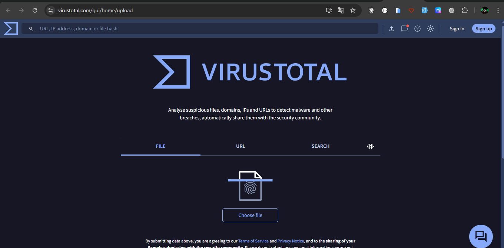
Ilovani tekshirish uchun ilovani kampyuterga ko‘chirib oling va virustotal saytiga .apk faylni yuboring bir necha soniyadan keyin sizga rasmdagi kabi natija qaytarish kerak bo‘ladi.
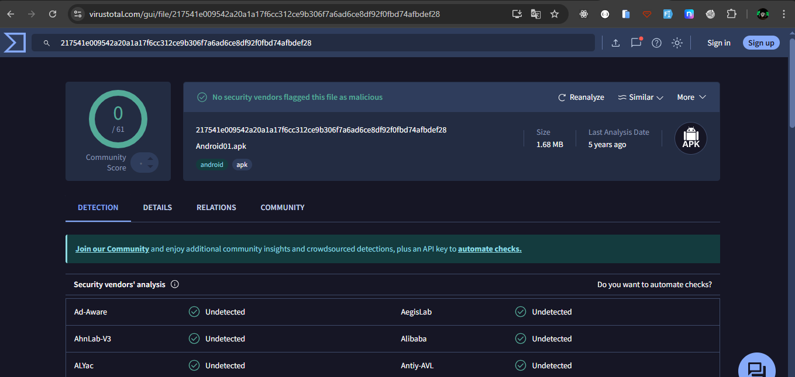
Ilovada hech qanday zararli kod aniqlanmaganligini chiqardi. Sizda buni aksi bo‘lishi ham mumkin.
Ilovani dekompilyatsiya qilish (apktool, jadx-gui)
Ilovani (APK faylini) dekompilyatsiya qilish bu Android dasturining ichki tuzilmasi va kodini tahlil qilish jarayonidir. Quyida apktool va jadx vositalaridan foydalanib ilovani dekompilyatsiya qilish bo‘yicha asosiy ma’lumot va amaliy ko‘rsatmalar berilgan. Jadx dasturi orqali siz bilan ilovani dekompliyatsiya qilish ni ko‘rib chiqamiz. Dastlab siz jadx dasturini o‘rnatib oling jadx dasturini quydagi manzildan yuklab oling(https://github.com/skylot/jadx/releases). Jadx dasturini o’zingizni operatsion tizimingizga mos versiyasini yuklab oling windows uchun windows.zip farmatdagisini yuklab oling va uni zipdan chiqarib ichidagi .exe faylni ishga tushuring. Jadx dasturi sizda dastlab ishga tushganda quydagicha oyna ochiladi.
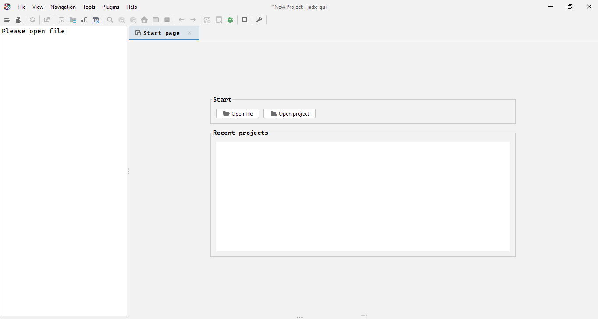
Ushbu oynadan Open file qilib apk faylni tanlab oling, rasmdagi kabi apk faylni tanlab oling.
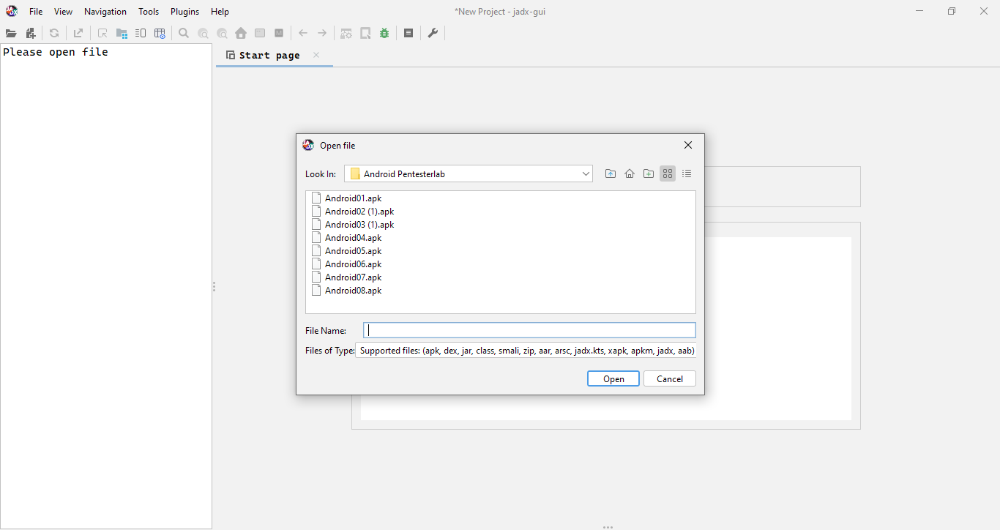
Ilova apk faylni tanlab olganingizda sizda rasmdagi kabi bu faylni dekomplatsiya qilib beriladi.
Jadx-gui dasturida .apk fayl ochilgach, chap tomonda quyidagi asosiy bo‘limlar (katta menyular) ko‘rinadi. Ularning har biri APK fayl tarkibini turli tomondan tahlil qilishga yordam beradi. Quyida ularning har biri nima vazifa bajarishini tushuntirib beraman:
Inputs - bu bo‘limda siz yuklagan .apk fayllari ko‘rsatiladi.
-
Bir nechta .apk fayl ochgan bo‘lsangiz, barchasi shu yerda ro‘yxat bo‘lib chiqadi.
-
Har bir faylga tegishli tarkibiy qismlar (kod, resurslar, imzo va h.k.) shu fayl ostida guruhlanadi.
Source code - bu dekompilyatsiya qilingan Java kod joylashgan bo‘lim.
-
APK ichidagi .dex fayllar dekompilyatsiya qilinib, o‘qiladigan shakldagi Java kodga aylantirilgan bo‘ladi.
-
Har bir package (paket) va klasslar (classlar) struktura holatida ko‘rsatiladi.
-
Bu yerda MainActivity.java, LoginActivity.java kabi asosiy faoliyat fayllarni ko‘rib chiqasiz.
Asosiy joy dasturchining logikasi, API chaqiriqlari, tokenlar, kalitlar shu yerda bo‘ladi.
Resources - bu bo‘lim APK ichidagi resurs fayllarini o‘z ichiga oladi:
-
res/ papkasidagi layout, drawable, values, strings.xml, colors.xml, styles.xml va boshqa XML fayllar shu yerda bo‘ladi.
-
Dastur interfeysining qanday ko‘rinishini, ranglar, matnlar, tasvirlar qayerda ishlatilganini shu yerda bilib olish mumkin.
UI dizayn va interfeysga oid ma’lumotlar bu yerda bo‘ladi.
APK signature - bu bo‘lim APK faylning imzosi (digital signature) haqida ma’lumot beradi:
-
APK fayl kim tomonidan imzolangan (certifikat ma’lumotlari).
-
RSA, SHA algoritmlari orqali tekshirilgan imzo haqida tafsilotlar.
-
Agar siz modifikatsiya qilgan bo‘lsangiz, bu yerda imzo noto‘g‘ri yoki “Signed: No” ko‘rsatiladi.
Bu yer APK originalmi yoki yo‘qligini tekshirish uchun muhim.
Summary - bu bo‘lim APK fayl haqida umumiy xulosa va texnik ma’lumotlarni beradi:
-
Package name (com.example.app)
-
Min SDK, Target SDK
-
Versiya raqami
-
Dex fayllar soni
-
Permissiyalar (INTERNET, CAMERA, READ_SMS va h.k.)
Tez tahlil uchun foydali bo‘lim. Dastur nima qiladi, qaysi ruxsatlarni so‘raydi – shularni ko‘rsatadi.
Apktool
Apktool – bu .apk fayllarni dekompilyatsiya va qayta yig‘ish uchun ishlatiladigan ochiq manbali Java vosita. Apktool dasturini siz quydagi havola orqali yuklab olishingiz mumkin bo‘ladi(https://github.com/iBotPeaches/Apktool/releases). Apktoolni o‘rnatib olganingizdan keyin terminalni ochib apk faylingizi turgan manzilga borib oling va terminalga apktool d your_apk_name.apk kamandasini yozing bu kod bajarilishi natijasida sizning apk faylingiz yonida apk fayl nomi bilan bir xil papka paydo bo‘ladi, bu papka ichida rasmdagi kabi fayllar paydo bo‘ladi bua pk faylingizni dekomplatsiya ko‘rinishidir.
Obfusikatsiya
Ilova kodi obfuskatsiya qilinganligini aniqlash bu tahlil jarayonida dasturchilar tomonidan dastur kodi ongli ravishda chalkashtirilganini ko‘rsatib beruvchi belgilarning mavjudligini aniqlashdir. Bunday holatlarda koddagi klass, metod va o‘zgaruvchilar nomlari odatda ma’nosiz yoki juda qisqa (masalan, a, b, c1, d2) bo‘lib, ularning asl vazifasini tushunish qiyinlashadi. Dastur tuzilmasi murakkab va tushunarsiz shaklga keltiriladi, smali fayllarda esa izohlar bo‘lmaydi yoki juda kam bo‘ladi, nomlar esa aniq semantik ma’noga ega emas.
Shuningdek, strings.xml yoki boshqa resurs fayllarda noto‘g‘ri tartiblangan, chalkash yoki hatto shifrlangan matnlar uchraydi. Ma’lumotlar bazasi jadval nomlari, API endpoint manzillari ham ko‘pincha yashirilgan yoki be’mani nomlar bilan almashtirilgan bo‘ladi. Bularning barchasi dastur kodining tahlildan, ya’ni teskari muhandislik (reverse engineering)dan himoyalanganini bildiradi.
Obfuskatsiya texnikasi ko‘pincha ilovaning funksional jihatlarini yovuz niyatli shaxslar tomonidan o‘rganilishining oldini olish, foydalanuvchi xavfsizligini ta’minlash, intellektual mulkni muhofaza qilish maqsadida qo‘llaniladi.
Keling endi, obfuskatsiya qilinmagan dastur kodi bilan obfuskatsiya qilingan kod o‘rtasidagi farqlarni solishtirib, bu jarayonning dastur tuzilmasiga qanday ta’sir qilganini ko‘rib chiqamiz.
JADX dasturi orqali obfuskatsiya qilinmagan ilovani tahlil qilganimizda, kod tuzilmasi aniq, tartibli va o‘qilishi oson holatda bo‘ladi. Ilovaning har bir komponenti o‘z nomi bilan ochiq-oydin ajratilgan bo‘lib, klasslar, metodlar va o‘zgaruvchilar semantik ma’noga ega nomlar bilan nomlangan.
Yuqoridagi rasmda biz obfuskatsiya qilinmagan ilovaning kodi bilan tanishdik. Unda hamma narsa aniq, tartibli va tushunarli ko‘rinishda bo‘lib, kodni o‘qish hamda tahlil qilish juda oson edi. Klass nomlari, metodlar va o‘zgaruvchilar o‘z vazifasini ochiq-oydin ifodalab turibdi. Ilova arxitekturasi mantiqiy tarzda tuzilgan bo‘lib, uni tushunish mutaxassis uchun hech qanday murakkablik tug‘dirmaydi.
Endi esa, shu ilovani obfuskatsiya qilamiz va uni qayta build qilib, hosil bo‘lgan APK faylni yana JADX dasturi orqali tahlil qilamiz. Obfuskatsiyadan so‘ng ilovaning ko‘rinishi keskin o‘zgaradi. Klass va metod nomlari ma’nosiz yoki qisqa belgilarga aylangan (a, b1, x3 va hokazo), o‘zgaruvchilar chalkash va kontekstdan uzilgan holatda bo‘ladi. Kodlar o‘zaro qanday bog‘langanini anglash qiyinlashadi. Ko‘plab joylarda funksiyalar o‘z vazifasini yashirish uchun murakkab tuzilmaga aylantirilgan bo‘ladi.
Rasmda ko‘rib turganingizdek, obfuskatsiya jarayonidan so‘ng ilova kodi mutlaqo tushunarsiz holga keltirilgan. Klass va metod nomlari endi hech qanday semantik ma’noga ega emas, o‘zgaruvchilar esa qisqa va chalkash belgilar bilan ifodalangan. Dastur tuzilmasi sun’iy murakkablik bilan to‘ldirilgan va kod bloklari o‘zaro qanday bog‘langanini anglash ancha qiyinlashgan.
Ayniqsa, ilovada foydalanuvchiga ko‘rsatiladigan matnlarni aniqlash ya’ni strings.xml faylidagi yozuvlar yoki kod ichidagi satrlarni topish endi ancha murakkab vazifaga aylangan. Matnlar shifrlangan, obfuskatsiya qilingan yoki ba'zida fragmentlarga bo‘lingan holda berilgan bo‘lishi mumkin. Ba’zi hollarda esa ular butunlay resurslardan chiqarilib, kod ichiga ko‘milib qo‘yiladi, bu esa avtomatik analiz vositalari orqali ularni aniqlashni deyarli imkonsiz qiladi.
Bu holat ilovaning tahlildan himoyalanganini yana bir bor tasdiqlaydi. Obfuskatsiya faqat kod nomlarini emas, balki ilovaning matnli interfeysini ham yashirish orqali teskari muhandislikning oldini oladi.
Xulosa qilib aytganda, obfuskatsiyadan so‘ng nafaqat kodni o‘qish, balki oddiy foydalanuvchi matnlarini topish ham professional tahlilchini ko‘p vaqt va kuch sarflashga majbur qiladi. Bu esa ilova xavfsizligini ancha yuqori darajaga olib chiqadi.
Ilova imzosini tekshirish.
Ilovaning imzo yaxlitligini tekshirish va xavfsizligini ta’minlash maqsadida, Janus zaifligi (Janus Vulnerability) bo‘yicha tahlil o‘tkazish tavsiya etiladi. Buning uchun Janus zaiflik skaneri yoki Mobile Security Framework (MobSF) kabi zamonaviy xavfsizlik vositalaridan foydalanish lozim. Ushbu dasturlar ilova faylining raqamli imzosi buzilgan-buzilmaganini aniqlash, zararli o‘zgarishlar kiritilganini tekshirish va umumiy xavfsizlik darajasini baholash imkonini beradi.
Agar ilova faqat V1 imzo sxemasi asosida imzolangan bo‘lsa, bu katta xavfsizlik zaifligi hisoblanadi. Chunki bunday imzolangan ilovalar Android 5 (Lollipop) va Android 6 (Marshmallow) versiyalarida ham to‘liq ishlay oladi. Mazkur operatsion tizim versiyalarida esa bir qator jiddiy zaifliklar mavjud. Ayniqsa, “Janus” zaifligi orqali, hujumchi APK fayliga zararli kodlar kiritgan taqdirda ham, ilovaning raqamli imzosi o‘zgarmaydi. Bu esa foydalanuvchi yoki tizim tomonidan ilova xavfsiz deb qabul qilinishiga olib keladi. Natijada, modifikatsiyalangan va zararli kod bilan boyitilgan ilova hech qanday ogohlantirishsiz ishga tushishi mumkin.
Ilova kodini tahlil qilish va o‘zgartirish
Ilova kodini tahlil qilish orqali biz uning ichki logikasini, xavfsizlik darajasini hamda ishlash mexanizmlarini chuqur anglab yetamiz. Bunday tahlil nafaqat zaifliklarni aniqlash, balki ilovani pentest qilish, modifikatsiyalash yoki uning funksiyalarini chuqur o‘rganish imkonini beradi. Bu borada Apktool va Jadx kabi vositalar ayniqsa samarali sanaladi. To‘g‘ri yondashuv bilan olib borilgan dekompilyatsiya jarayoni mobil ilovalardagi zaif joylarni ochib berib, ularga qarshi samarali himoya choralarini ishlab chiqishda muhim ahamiyat kasb etadi.
Yuqoridagi misolda biz dekompilyatsiya qilingan ilovani tahlil qilamiz. Bu ilova Android Pentester laboratoriyasiga tegishli APK fayl bo‘lib, biz undan yashiringan “flag”ni topishimiz kerak. Flag’lar odatda ma’lum bir andozaga ega bo‘ladi – bu holatda ular ptlab so‘zi bilan boshlanishi aytilgan. Shuning uchun biz ilova kodini Jadx orqali ochamiz va kod ichida ptlab iborasi mavjud bo‘lgan qatorni izlaymiz. Masalan, MessageActivity sinfida rasmda ko‘rsatilgan tarzda kerakli ma’lumotlar joylashganini ko‘rish mumkin. Bu tahlil flagni aniqlashda asosiy qadam hisoblanadi.
Kodni tahlil qilish jarayonida ko‘rinib turibdiki, ma’lumot ptlab_key nomli kalit orqali ekranga chiqarilmoqda. Bu esa shuni anglatadiki, kerakli satr ma’lumoti ilovaning resurslar qismida, aniqrog‘i strings.xml faylida saqlangan. Shundan kelib chiqib, biz res papkasidagi values papkasiga o‘tamiz va uning ichida joylashgan strings.xml faylini ko‘zdan kechirishimiz zarur bo‘ladi. Faylni ochganimizda, kutilgan natija aynan shu yerda ptlab_key ga mos yozuv shaklida joylashganini ko‘rishimiz mumkin. Bu bosqich flagni aniqlash yo‘lida hal qiluvchi ahamiyatga ega bo‘lib, rasmda keltirilgan ko‘rinishda aniq va ravshan tarzda aks etgan.
Bizga kerakli flag be5be0f9-9c0a-404d-8440-c72193a7b396 qiymati bo‘lib, u ilovaning strings.xml faylida ptlab_key kaliti ostida joylashgan. Shu orqali biz ilova kodi ustida muvaffaqiyatli tahlil o‘tkazdik va flagni aniqladik.
Endi navbat ilova kodini o‘zgartirib, uni qayta yig‘ish bosqichiga keldi. Bu jarayonda biz apktool vositasidan foydalanamiz u Android ilovalarini dekompilyatsiya va qayta kompilyatsiya qilishda eng ishonchli va qulay vositalardan biridir.
apktool d original.apk -o app-release
Endi esa ilovani amalda o‘zgartirish va qayta yig‘ish jarayoniga o‘tamiz. Dastlab, .apk faylni dekompilyatsiya qilganingizdan so‘ng, smali papkasiga o‘ting. Bu yerda ilovaning bajariluvchi logikasi smali fayllar ko‘rinishida joylashgan bo‘ladi. Har qanday .smali faylni oching (masalan, MainActivity.smali), so‘ng unga kichik o‘zgarish kiriting bu matn, log yozuvi yoki shart operatori bo‘lishi mumkin.
const-string v0, "You Have Hacked Been"
const/4 v1, 0x1
invoke-static {p0, v0, v1}, Landroid/widget/Toast;->makeText(Landroid/content/Context;Ljava/lang/CharSequence;I)Landroid/widget/Toast;
move-result-object v0
invoke-virtual {v0}, Landroid/widget/Toast;->show()V
Masalan yuqoridagi kodni MainActivity faylga joylashtiring bu kod Ilovada Toast chiqishini taminlaydi va o‘zgartirishni kiritgach, faylni saqlang. Endi esa ilovani qayta kompilyatsiya qilish uchun quyidagi buyruqdan foydalaning.
apktool b app-release -o app-modded.apk
Qayta kompilyatsiya jarayonida buyruq berilayotgan papka nomi, ya’ni app-release, bu ilgari apktool vositasi orqali dekompilyatsiya qilingan APK faylining papka nomi bo‘lishi kerak.
Ilovani o‘zgartirgach, ya’ni app-modded.apk faylini yaratganimizdan so‘ng, uni Android tizimida o‘rnatishdan avval imzolab olish zarur bo‘ladi. Aks holda, tizim ilovani “noma’lum yoki buzilgan” deb topib, o‘rnatishga ruxsat bermaydi.
Imzolash jarayoni uchun bizga .jks (Java KeyStore) formatidagi imzo sertifikati kerak bo‘ladi. Agar sizda mavjud bo‘lmasa, uni yaratish uchun keytool vositasidan foydalanamiz. Quyidagi buyruq orqali yangi sertifikat yaratishingiz mumkin.
keytool -genkey -v -keystore my-key.jks -alias myalias -keyalg RSA -keysize 2048 -validity 10000
Siz yaratgan my-key.jks sertifikati yordamida endi ilovani imzolash mumkin bo‘ladi. Biroq imzolashdan oldin muhim bosqichlardan biri zipalign vositasi orqali APK faylni optimallashtirishdir.
zipalign Android SDK tarkibidagi vosita bo‘lib, u APK fayldagi barcha ma’lumotlarni 4 baytli chegaralarga to‘g‘rilab joylashtiradi. Bu esa ilovaning samarali ishlashini ta’minlaydi va Google Play kabi platformalarda tekshiruvdan muammosiz o‘tishiga yordam beradi. Quyidagi buyruq orqali app-modded.apk faylni zipalign qilamiz.
zipalign -p -f 4 app-modded.apk app-aligned.apk
Zipalign jarayoni muvaffaqiyatli yakunlangach, endi biz ilovani imzolash bosqichiga o‘tamiz. Bu jarayon ilovaning yaxlitligini va ishonchliligini kafolatlaydi hamda Android tizimi tomonidan tan olinishi uchun zarur hisoblanadi.
Imzolash uchun biz apksigner vositasidan foydalanamiz. Quyidagi buyruq orqali siz app-aligned.apk faylni avval yaratgan my-key.jks sertifikati yordamida imzolab olishingiz mumkin.
apksigner sign --ks my-release-key.jks --ks-key-alias myalias --out app-signed.apk app-aligned.apk
Yuqorida bayon etilgan barcha bosqichlar dekompilyatsiya, o‘zgartirish, zipalign va imzolash muvaffaqiyatli yakunlangach, endi ilovaning to‘g‘ri va haqiqiy tarzda imzolanganligini tekshirib ko‘rishimiz mumkin. Bu ilovani tizim tomonidan ishonchli deb tan olinishi uchun muhim bosqich hisoblanadi.
Imzo holatini tekshirish uchun terminalga quyidagi buyruqni kiritish kifoya.
keytool -list -v -keystore my-release-key.jks
Agar sizda ham apksigner verify buyrug‘i hech qanday xatolik qaytarmasa va terminal jim tursa bu ilovaning to‘g‘ri va muvaffaqiyatli imzolanganligini anglatadi. Endilikda siz ushbu app-signed.apk faylni Android qurilmaga bemalol o‘rnatib, uning funksiyalarini to‘liq sinab ko‘rishingiz mumkin bo‘ladi.
Eskirgan va zaif kutubxonalarni aniqlash
Ilovada eskirgan (deprecated yoki zaif) kutubxonalar bor-yo‘qligini aniqlash Android ilovani statik tahlil qilishda juda muhim bosqich. Bu kutubxonalar orqali ilovada xavfsizlikka oid zaifliklar yoki ishlamay qolgan APIlar mavjud bo‘lishi mumkin. Qanday qilib kutubxonalar ro‘yhatini va versiyalarini ko‘rish bo‘yicha ketma-ketligini ko‘rsatib o‘tilgan. Eskirgan kutubxonalarni aniqlash uchun eng yaxshi va sinalgan va tushunarli vosita bu mobsf dasturi bo‘ladi qurulmangizda mobsf dasturini ochib oling agar sizda hali mobsf dasturi bo‘lmasa siz dastlab bu dasturni o‘rnatib oling. Mobsf dasturini o’rnatib bo’lganingizdan keyin uni ochib ichiga .apk faylni yuboring va bir necha Soniya kuting va natija quydagicha bo’ladi.
AndroidManifest.xml faylini tahlil qilish
AndroidManifest.xml bu har bir Android ilovada mavjud bo‘lgan asosiy konfiguratsiya fayli bo‘lib, quyidagilarni belgilaydi:
-
Ilovaning paket nomi
-
Komponentlar: activity, service, broadcast receiver, content provider
-
Ruxsatlar (permissions)
-
Intent-filterlar (ya’ni tashqi chaqirishlar)
-
Minimal SDK, target SDK versiyasi
-
Ilovaning entry point (ya’ni MAIN activity)
Yuqoridagi barcha narsalarni statik tahlil jarayonida aniqlash kerak bo‘ladi. Manifest faylida faqat asosiy birinchi ishga tushadigan activity exported true bo’lishi kerak. Agar bunday bo’lmasa hujumchilar tizim resurslaridan foydalanish imkoniyati paydo bo’lib qoladi.
Hard kod qilib yozilgan malumotlar
Hard kod qilib yozilgan ma’lumotlar — bu ilova kodiga to‘g‘ridan-to‘g‘ri yozib qo‘yilgan (o‘zgartirib bo‘lmaydigan) ma'lumotlar bo‘lib, xavfsizlik nuqtai nazaridan jiddiy zaiflik hisoblanadi. Agar ilova ichida quyidagi ma’lumotlar hardcode qilingan bo‘lsa, bu muammo hisoblanadi. API kalitlari (masalan, const val API_KEY = "sk_test_123..."). Tokenlar (masalan, Bearer token123456). Server URL manzillari (https://api.secretserver.com). Parollar yoki login ma’lumotlari. Firebase, Stripe, PayPal, Google API konfiguratsiyalari
Resurs fayllarni ko‘rish (res/, assets/)
Android ilovalari tarkibida res/ va assets/ kataloglari mavjud bo‘lib, ular ilovaning statik fayllari (matnlar, rasm, sozlamalar, konfiguratsiya fayllari) saqlanadigan joy hisoblanadi. Ilovani statik tahlil qilishda bu papkalarni ko‘zdan kechirish xavfsizlik zaifliklarini aniqlash uchun muhim bosqichdir.
res — ilovaga biriktirilgan statik resurslar saqlanadigan joy.
| Papka | Tahlil ahamiyati |
|---|---|
| layout/ | UI tuzilmalari (.xml) — maxfiy tugmalar, yashirin funksiya |
| values/ | strings.xml, config.xml — API kalitlar, server URLlar bo'lishi mumkin |
| drawable/ | Ilovadagi rasm fayllari — phishing belgilar yoki logotiplar borligini tekshirish mumkin |
| menu/ | Ilova menyulari — yashirin funktsiyalar mavjudligini aniqlash mumkin |
| xml/ | Qo‘shimcha sozlamalar, network_security_config.xml — HTTPS cheklovlari mavjudmi, tekshiriladi |
assets papkasi — ilovaga to‘liq kiritilgan foydalanuvchi tomonidan belgilangan fayllar saqlanadi. Bu fayllar ilovaning o‘zida to‘liq ko‘rinishda mavjud bo‘ladi va APK ichida bexavotir ochiladi.
| Fayl turi | Xavfsizlikdagi roli |
|---|---|
| .json, .xml | API konfiguratsiyasi, URL, port, tarmoqqa ulanish sozlamalari |
| .js, .html | Ilova ichida ishlatiladigan WebView hujumlari (XSS, LFI) uchun tekshiriladi |
| .db, .sqlite | Mahalliy ma’lumotlar ombori — parollar, tokenlar, foydalanuvchi malumotlari |
| .pem, .crt | TLS sertifikatlar — qonuniylik va amal qilish muddatini tekshirish mumkin |
Ko‘pincha bu katalogda noto‘g‘ri joylashtirilgan API kalitlar, parollar, serverga bog‘lanish nuqtalari bo‘ladi. Bu esa tahlilchi yoki hujumchiga ilovaning backend tizimiga hujum qilish imkonini beradi.
Log malumotlarni tekshirish
Ilovalarda statik tahlilda log ma’lumotlarni ko‘rish bu ilova ishlab chiqish jarayonida ilova ishlab chiqaruvchilari tomonidan yozib qoldirilgan Log malumotlar orqali maxfiy malumotlar logga yozib qolish oqibatida ilovaga tegishli maxfiy malumotlarni ko’rish mumkin. Log chaqiriqlarini aniqlab, u orqali ilovaning ichki ishlash mexanizmini tushunishdir. Adb orqali ilova log malumotlarini ko’rishi mumkin. Quydagi buyruqni o’z terminalingizga kiriting va enter buyrug’uni bosing.
adb logcat | grep com.exmaple.app
Debug modni tekshirish
Statik tahlilda ilovaning debug rejimda tuzilganligini tekshirish — bu ilova xavfsizlik darajasini baholashda muhim qadamdir. Agar ilova debug rejimda ishlab chiqilgan bo‘lsa, u holda Ilova imzolashda debug.keystore ishlatilgan bo‘ladi. Proguard obfuskatsiyasi o‘chirilgan yoki zaif bo‘ladi. Foydalanuvchiga mo‘ljallanmagan loglar, toastlar, debug bayroqlari saqlanib qolgan bo‘ladi. Dasturchi tomonidan test uchun ochiq qoldirilgan developer funksiyalar mavjud bo‘ladi.
Zaif WebViewdan foydalanish
Ilovalarda zaif (xavfsizligi past) WebView ishlatilishi — bu mobil xavfsizlik nuqtai nazaridan jiddiy zaiflik hisoblanadi. WebView — bu ilova ichida veb sahifalarni ko‘rsatishga mo‘ljallangan Android komponenti bo‘lib, noto‘g‘ri sozlangan taqdirda foydalanuvchi, tizim va server xavfsizligiga tahdid tug‘diradi.
Zaif hashlash va shifrlash algorithmlari
Mobil ilovalarda zaif hashlash va shifrlash algoritmlaridan foydalanish — bu keng tarqalgan xavfsizlik zaifliklaridan biri bo‘lib, maxfiy ma’lumotlar (parollar, tokenlar, sozlamalar) osonlik bilan buzilishiga olib keladi. Bunday algoritmlar kriptoanalizga bardosh bera olmaydi va ilova foydalanuvchilari uchun jiddiy xavf tug‘diradi.
Backup olishga ruxsat berish oqibatida
Ilovadagi /data/data/com.example.app katalogidagi.
-
Kirish tokenlari
-
Foydalanuvchi parollari
-
Session IDlar
-
Caching/qurilmaga yozilgan maxfiy fayllar
-
Sozlamalar (SharedPreferences)
hammasi .ab faylga shifrlanmagan holatda saqlanadi va bu malumotlarni ko‘rish mumkin:
Agar siz SharedPreferences yoki SQLite bazada quyidagilarni plaintext (ochiq) saqlagan bo‘lsa:
-
Kirish tokeni
-
Email/parol
-
API kalitlari
-
Mahfiy sozlamalar
ular ham backupga kiradi va ochiladi.
Zararli foydalanuvchi yoki tester backup faylni tahrirlab, keyin uni tiklasa:
-
Ilova noto‘g‘ri ishlaydi
-
Token spoofing sodir bo‘ladi
-
Login bypass bo‘lishi mumkin
Statik zaifliklar
Mobil ilovalarni tahlil qilishda statik tahlil (Static Analysis) dastur kodini ishga tushirmasdan turib xavfsizlik zaifliklarini aniqlash imkonini beradi. Quyida mobil ilovalarda eng ko‘p uchraydigan statik zaifliklar sanab o‘tilgan.
Hard kodlangan maxfiy ma’lumotlar (Hardcoded Secrets)
Ko‘plab dasturchilar test vaqtida API kalitlari, parollar yoki tokenlarni bevosita kod ichida yozib qo‘yishadi. Bu esa ilovani dekompilyatsiya qilgan har qanday hujumchiga ushbu ma’lumotlarga erkin kirish imkonini beradi. Maxfiy ma’lumotlarni hech qachon kod ichida saqlamang. Ularni xavfsiz saqlash uchun `KeyStore`, `Secure Enclave` yoki server tomonli saqlashni qo‘llang.
Zaif fayl saqlash (Insecure Data Storage)
Statik tahlil orqali ilovaning foydalanuvchi ma’lumotlarini (parollar, tokenlar, shaxsiy ma’lumotlar) shifrlanmagan holda saqlayotgani aniqlanishi mumkin. Ayniqsa, SharedPreferences, SQLite, Log fayllarida bu tez-tez uchraydi. Ma’lumotlarni har doim shifrlab saqlang va iloji boricha minimal darajada mahalliy saqlashdan foydalaning.
Noto‘g‘ri ruxsatlar (Improper Permissions)
Ilova ortiqcha tizim ruxsatlarini talab qilishi yoki noto‘g‘ri sozlangan ruxsatlar orqali boshqa ilovalar bilan ma’lumot almashishini ta’minlashi mumkin.
Foydalanuvchidan faqat kerakli ruxsatlarni so‘rang va manifest faylini doimiy tekshirib boring.
Zaif kod obfuskatsiyasi (Weak Obfuscation)
Ilova kodining to‘liq yoki yetarli darajada obfuskatsiya qilinmaganligi, uni oson dekompilyatsiya qilish va tahlil qilishga olib keladi. Android uchun ProGuard yoki R8, iOS uchun Bitcode va boshqa obfuskatsiya vositalaridan foydalaning.
Insecureniya uchinchi tomon kutubxonalari
Ilovada ishlatilayotgan kutubxonalar va SDKlar eski yoki zaif versiyada bo‘lishi mumkin, bu esa zaiflik manbai bo‘lib xizmat qiladi. Uchinchi tomon kutubxonalarini doimiy yangilab boring va ularning changeloglarini kuzatib boring.
Zaif kriptografik algoritmlar
Statik tahlil yordamida ilovaning zaif yoki eskirgan kriptografik algoritmlardan (masalan, MD5, SHA-1) foydalanayotgani aniqlanishi mumkin. Zamonaviy kriptografik standartlardan foydalaning (masalan, SHA-256, AES-256).
Logga maxfiy ma’lumotlarni chiqarish
Ba’zan ishlab chiquvchilar noto‘g‘ri ravishda foydalanuvchi ma’lumotlarini yoki so‘rov javoblarini `Log` ga chiqarib qo‘yishadi. Bu esa ilovani tahlil qilayotgan hujumchi uchun katta imkoniyat yaratadi.
Statik zaifliklar dastur ishga tushmagan holatda aniqlanishi mumkinligi sababli, ularni erta aniqlab bartaraf etish – ilovaning umumiy xavfsizligi uchun juda muhimdir. Har doim secure coding amaliyotlariga amal qilish va kodni avtomatlashtirilgan tahlil vositalari (masalan, MobSF, SonarQube, Fortify) orqali tekshirib borish tavsiya etiladi.
Dinamik tahlil
Mobil ilovalarda dinamik tahlil (dynamic analysis) bu ilovani real vaqtda ishga tushirib, uning xatti-harakatlarini kuzatish orqali xavfsizlik va funksionallikni tekshirish jarayonidir. Dinamik tahlilda ilova qurilmada yoki emulyatorda ishlatib ko‘riladi.
Ilovani qurilmaga yoki emulyatorda o‘rnatish
Ilovani qurilmaga yoki emulyatorda o‘rnatish bu dinamik tahlilning birinchi bosqichi hisoblanadi. Dastlab kampyuterga Genymotion dasturi o‘rnatib olish kerak bo‘ladi. Genymotion saytiga kirib, hisob yaratishimiz kerak. Genymotionni yuklab olish va undan foydalanish uchun sizga ushbu hisob kerak (aniq), shuning uchun avval buni qilganingizga ishonch hosil qiling. Buni qilganingizdan so‘ng, quyidagi havolaga(https://www.genymotion.com/product-desktop/download) o'ting va Linux (64-bit) versiyasini yuklab oling.
Natijada rasmdagi kabi genymotionni linux uchun versiyasi yuklanmalar jildida chiqish kerak. Keyin esa genymotionga chmod +x genymotion-x.y.z-linux_64.run deb bu faylga kerakli ruxsatlarni berib olishimiz kerak.
Yuqoridagi buyruq bajarilganidan keyin quydagi rasmdagi buyruqni yozib olishimiz kerak bu orqali genymotion dasturi o‘rnatilishni boshlaydi.
Genymotion dasturini ishga tushurish uchun siz quydagi rasmdagi kabi qilib ./genymotion buyrug‘ni yozing va genymotion dasturi ishga tushadi.
Bu yerga yuqorida ro‘yhatdan o‘tgan malumotlaringizni yozing. Keyingi kerak bo‘ladigan vositalardan virtualboxni o‘rnatib olishingiz kerak bo‘ladi buning uchun terminalga sudo apt install virtualbox buyrug‘ini yozishni o‘zi yetarli.
Virtualbox dasturi to‘liq o‘rnatilib olingandan keyin Genymotion dasturiga qaytib olamiz va bu yerda create tugmasini bosib yangi device qo‘shib olamiz.
Yuklab olish to’liq tugaganidan so‘ng start kamandasini bosing va sizda ham quydagicha bo‘lib emulator ishga tushadi.
Emulatorni ishga tushgandan keyin terminalda adb devices buyrug‘uni bajarib ko‘rish orqali emulator ishga tushgani va uni adb tanib olganini ko‘rish mumkin.
Emulatorga sinovdan o‘tkizmoqchi bo ‘lgan ilovangizni Play Marketdan yuklash yoki adb install your_app.apk buyrug‘uni terminalda bajarish orqali emulatorga o‘rnatsangiz bo‘ladi.
Tarmoq trafikni kuzatish (burp suite, mitmproxy)
Pentesting jarayonida muhim bosqichlardan biri bu ilovaning tarmoq orqali yuborayotgan va olayotgan ma’lumotlarini kuzatishdir. Buni amalga oshirish uchun proxy vositalar (masalan, Burp Suite yoki mitmproxy) keng qo‘llaniladi. Tarmoq trafikni kuzatishdan maqsad, ilova yuborayotgan maxfiy ma’lumotlarni (token, login, parol, GPS, kiritilgan ma’lumotlar) tahlil qilish va tarmoq orqali yuborilgan API so‘rovlarni tahlil qilish (HTTP request yoki response). Burpsuite va Genymotiondagi emulator orqali ilovalardan chiqayotgan tarmoq trafigini kuzatib ko‘ramiz. Buning uchun bizga burpsuite dasturi kerak bu dasturni yuklab olish havolasi(https://portswigger.net/burp/communitydownload). Quydagicha bu yerda Community versiyani yuklab olish mumkin. Burpsuite dasturini ishga tushuramiz.
Burpsuite ilovasi ochilganda Proxy bo‘limiga o‘tib proxy sozlamalariga 8081 portni yozib All Interface bo’limini tanlab qo’yish kerak yoki boshqa portni ham yozish mumkin va shu yerdan burpsuite ssl sertifikatni yuklab oling yoki https://burp sahifasi orqali yuklab olish kerak bo‘ladi. Bu orqali https ma’lumotlarni ko‘rishimiz mumkin bo‘ladi.
Bu muhim bosqichda biz sertifikatimiz formatini o‘zgartirib olishimiz kerak bo‘ladi buni amalga oshirishimiz uchun OpenSSL orqali amalga oshiramiz.
openssl x509 -inform DER -in cacert.der -out cacert.pem
Endi esa bizga sertifikatning issuer (beruvchi tashkilot) hash qiymatini olish kerak bo‘ladi. Quyidagi buyruq bu ishda bizga yordam beradi.
openssl x509 -inform PEM -subject_hash_old -in cacert.pem |head -1
Keling, avvalgi buyruq natijasi 9a5ba575 deb faraz qilaylik. Endi siz sertifikat faylini aynan shu qiymatga qayta nomlashingiz va oxiriga .0 kengaytmasini qo‘shishingiz kerak bo‘ladi.
mv cacert.pem 9a5ba575.0
Keyin bu sertifikatni adb orqali qurulmaga o‘rnatish kerak bo‘ladi bu qurulma root qurulma bo‘lishi kerak agar root qurulma bo‘lmasa xatolik beradi.
Qurulmani qayta ishga tushuring va Sertifikat o‘rnatilganligini tekshirish uchun qurulmadan Settings -> Security ->Device Security->Encryption & Credentials->Trusted Credentials ga kiring quydagicha natija chiqishi kerak bo‘ladi.
BurpSuiteda port raqamini kiriting va bind to all interfaces qatorini tanlang .
Yangi yaratgan Android qurilmangizda quyidagicha amallar ketma ketligini bajaring: Sozlamalar (Settings) → Tarmoq va Internet (Network & Internet) → AndroidWifi bo‘limiga o‘ting. Ulab qo‘yilgan tarmoqqa bosing va “O‘zgartirish” (“Modify”) qatorini tanlang.
“Modify” (O‘zgartirish) qatorini bosganingizdan so‘ng bir nechta parametrlar ko‘rinadi. IP manzilini kompyuteringizning IP manziliga, port raqamini esa Burp Suiteda hozirgina qo‘shgan port raqamiga o‘zgartiring.
Android qurulma orqali biror bir ilovaga kiring va burpsuitedan malumotlarni ko‘rishingiz mumkin.
Xavfsizlik cheklovlarini sinash (root, emulator, vpn, zararli kod deteksiya, SSL pinning)
Android ilovalari foydalanuvchilarning tizimni manipulyatsiya qilishining oldini olish uchun turli xavfsizlik cheklovlarini joriy qiladi. Pentesting jarayonida bu cheklovlarning to‘g‘ri ishlashini sinash muhim hisoblanadi. Quyida Android ilovalarida uchraydigan asosiy xavfsizlik cheklovlari va ularni sinash usullari keltirilgan.
Root Aniqlash (Root Detection)
Ilova root-huquqiga ega bo‘lgan qurilmalarda ishlamasligi yoki xavfsizlik choralarini kuchaytirishi mumkin. Root qurulmani aniqlash uchun.
-
su binar faylining mavjudligi tekshiriladi.
-
build.prop faylga yozish ruxsati aniqlanadi.
-
Magisk, SuperSU kabi root vositalari aniqlanadi.
Ilovada root qurulmalarni aniqlash funksiyasi bor yuqligini tekshirish uchun quydagi amallarni bajaring.
-
Root qilingan qurilmada ilovani ishga tushiring.
-
Logcat orqali kuzating yoki ilovaning xatti-harakatini tekshiring (masalan, ilova yopiladimi yoki xatolik beradi).
Bu funksiyani chetlab o‘tish uchun quydagi usullar keng qo‘llaniladi.
-
Magisk Hide yoki Shamiko modulidan foydalanish.
-
Xposed moduli: RootCloak orqali rootni yashirish.
-
Frida yordamida isRooted() funksiyalarini falsega o‘zgartirish.
Emulator Aniqlash (Emulator Detection)
Ilova faqat real qurilmada ishlashi kerak, emulyatorda esa testdan o‘tmasligi mumkin. Emulator qurulmalarni aniqlashda quydagilardan foydalaniladi.
-
Qurilma modeli sdk bo‘lsa.
-
IMEI yoki SIM karta yo‘qligi.
-
qemuga oid fayllar (/dev/qemu_pipe, ro.kernel.qemu).
Ilovada emulator qurulmalarni aniqlash funksiyasi bor yo‘qligini tekshirish uchun quydagi amallarni bajaring.
-
Android Studio emulatorida ilovani ishga tushiring.
-
Ilova xatti-harakatini kuzating.
Bu funksiyani chetlab o‘tish uchun quydagi usullar keng qo‘llaniladi.
-
Frida bilan isEmulator() funksiyalarini falsega o‘zgartirish.
-
Emulator identifikatorlarini yashirish (build.prop o‘zgartirish).
VPN Aniqlash (VPN Detection)
Ilova tarmoq trafigi VPN orqali yuborilayotganini aniqlasa, uni to‘xtatishi mumkin.
Ilova ishga tushgan qurulmada vpn aniqlashda quydagilardan foydalaniladi.
-
Ilova ConnectivityManager orqali VPN mavjudligini aniqlaydi.
-
Trafikni tekshirib, proxy vositalar orqali ketayotganini sezadi.
Ilovada vpn aniqlash funksiyasi bor yo‘qligini tekshirish uchun quydagi amallarni bajaring.
-
Qurilmada VPN (masalan, Burp Suite yoki mitmproxy) yoqing.
-
Ilovaning API so‘rovlariga javob berishiga qarang.
Bu funksiyani chetlab o‘tish uchun quydagi usullar keng qo‘llaniladi.
-
Frida orqali isVpnActive() funksiyasini falsega o‘zgartirish.
-
Tarmoq tahlil metodlarini patch qilish (dekompilyatsiya orqali).
Zararli Kod, Debugger yoki Frida Aniqlash
Ilova zararli kodlar, debugger yoki reverserlar ishlatilayotganini aniqlab, o‘zini himoya qiladi. Zararli kodlarni aniqlashda quydagilardan foydalaniladi.
-
Debug rejim (android.os.Debug.isDebuggerConnected())
-
Frida, Xposed, Magisk modullarining mavjudligi.
-
TracerPid orqali debugging aniqlanadi.
Ilovada zararli kodlarni aniqlash funksiyasi bor yuqligini tekshirish uchun quydagi amallarni bajaring.
-
Frida, Xposed yoki debugger ishlatib, ilovani kuzating.
-
Logcat orqali xatolik va ogohlantirishlarni ko‘ring.
Bu funksiyani chetlab o‘tish uchun quydagi usullar keng qo‘llaniladi.
-
Frida yordamida isDebuggerConnected() yoki detectFrida() funksiyalarini falsega o‘zgartirish.
-
Antidebug kodni ilovadan olib tashlash (smali patch).
SSL Pinning
Ilova faqat o‘zining ishonchli serveri bilan bog‘lanishini xohlaydi. Burp Suite yoki mitmproxy orqali trafikni ko‘rishga ruxsat bermaydi.
-
HTTPS trafikni Burp Suite orqali tutib bo‘lmaydi.
-
SSLHandshakeException, TrustManager xatolari chiqadi.
Ilovada ssl pinning funksiyasi bor yo‘qligini tekshirish uchun quydagi amallarni bajaring.
-
Burp Suiteni yoqing, ilovani ishga tushiring.
-
Agar trafikni ko‘ra olmasangiz, demak SSL pinning mavjud.
Bu funksiyani chetlab o‘tish uchun quydagi usullar keng qo‘llaniladi.
-
Frida skript bilan:
-
bash
frida -U -n com.example.app -l frida-ssl-pinning-bypass.js</p> </li> <li> <p>Ilovani dekompilyatsiya qilish.
Xavfsizlik cheklovlarini tahlil qilish – Android pentestingda muhim bosqichlardan biridir. Ilovalar bu cheklovlar orqali tahlil qilishni qiyinlashtiradi. Shuning uchun, har bir cheklovni alohida sinab, kerak bo‘lsa, teskari muhandislik (reverse engineering), Frida, yoki smali patch orqali aylanib o‘tish mumkin.
Faoliyatlarni sinash (Activity, Service, BroadcastReceiver)
Mobil ilovalar bir nechta asosiy komponentlardan iborat: Activity, Service, BroadcastReceiver va Content Provider. Pentesting jarayonida aynan Activity, Service va BroadcastReceiver orqali ilova ichki funksiyalariga noqonuniy kirish yoki ekspluatatsiya qilish mumkin. Quyida ularni sinash usullari va xavflari keltirilgan.
Activity — foydalanuvchi interfeysini taqdim etuvchi ekran. Agar Activity noto‘g‘ri sozlangan bo‘lsa, boshqa ilovalar undan foydalana olishi mumkin. Zaiflikni kelib chiqishi sababi quydagilar.
-
exported="true" bo‘lib, hech qanday ruxsat (permission) so‘ralmasa
-
Kirishda autentifikatsiya tekshirilmasa
Zaiflikdan foydalanish uchun terminalga quydagi kodni yozing.
adb shell am start -n com.example.app/.SecretActivityZaiflik oqibatida quydagi xavflar sodir bo‘ladi.
-
Foydalanuvchi autentifikatsiyasini chetlab o‘tish
-
Maxfiy ma’lumotlarga kirish
Service — orqa fonda (background) ishlovchi komponent. Agar exported yoki intent-filter noto‘g‘ri belgilangan bo‘lsa, boshqa ilovalar u bilan muloqot qilishi mumkin. Zaiflikni kelib chiqishi sababi Service ochiq va hech qanday tekshiruvsiz ishlov beruvchi bo‘lsa quydagi kodni bajarib zaiflikni tekshirish mumkin.
adb shell am startservice -n com.example.app/.MyService</p>
<p>Zayiflikdan foydalanish uchun terminalga quydagi kodni yozing.-
Ilovaning noto‘g‘ri ishlashiga sabab bo‘lish
-
Noqonuniy amallarni bajarishga majbur qilish (DoS, o‘g‘irlik)
BroadcastReceiver — tizim yoki ilovadan kelayotgan xabarlarni qabul qiladi. Agar noto‘g‘ri sozlangan bo‘lsa, xaker maxsus xabar yuborib uni ekspluatatsiya qilishi mumkin. Zaiflikni kelib chiqishi sababi quydagilar.
-
Receiver exported va hech qanday tekshiruvsiz bo‘lsa
-
intent-filter orqali ommaga ochiq bo‘lsa
Zaiflikdan foydalanish uchun terminalga quydagi kodni yozing.
adb shell am broadcast -a com.example.app.CUSTOM_BROADCASTAgar extra parametr kerak bo‘lsa:
adb shell am broadcast -a com.example.app.CUSTOM_BROADCAST --es key
valueMa’lumotlar oqimini kuzatish (runtime debugging)
Ma’lumotlar oqimini kuzatish, ya’ni runtime debugging mobil ilovalarning ish jarayonida (real vaqt rejimida) qanday ma’lumotlar kirib-chiqayotgani, qanday funksiyalar bajarilayotgani va qanday ob’ektlar bilan ishlanayotganini tahlil qilishdir. Bu bosqich, ayniqsa, quyidagilarni aniqlashda muhim:
-
Kirish (login) ma’lumotlari qanday ishlanmoqda?
-
Auth tokenlar qayerda saqlanmoqda?
-
API so‘rovlariga qanday ma’lumotlar yuborilmoqda?
-
Ilova ichida qanday xavfsizlik tekshiruvlari mavjud?
Ma’lumotlar oqimini kuzatish uchun quydagi vositalar kerak bo‘ladi.
Frida — ilovaga injector orqali ulanib, ish jarayonida funktsiyalarni tutib, ularning argument va natijalarini ko‘rish imkonini beradi.
frida -U -n com.example.app -l intercept.js</p>
<p>//intercept.jsJava.perform(function () {
var LoginClass = Java.use("com.example.app.auth.LoginManager");
LoginClass.authenticate.implementation = function (username, password) {
console.log("[+] Username: " + username);
console.log("[+] Password: " + password);
return this.authenticate(username, password);
};
});
Bu kod bajarilishi natijasida ilova ishga tushganda foydalanuvchi login parolini real vaqt rejimida terminalda ko‘rasiz.
Objection – Frida ustiga qurilgan qulay CLI vosita. Interaktiv tarzda runtime debugging va bypass qilish imkonini beradi. Root talab qilinmaydi.
objection -g com.example.app explore-
env – muhit o‘zgaruvchilarini ko‘rish
-
memory search --string "token" – xotiradan tokenlarni qidirish
-
android hooking list classes – barcha class’larni ko‘rish
-
android hooking watch class_method – specific metodni kuzatish
Logcat – Ilova ish vaqtida chiqarayotgan loglar orqali ma’lumot oqimini passiv ravishda kuzatish.
adb logcat | grep com.example.app
Umumiy xotira malumotlarini ko‘rish
Mobil (Android) pentesting jarayonida umumiy xotira ma’lumotlarini ko‘rish ilova qanday ma’lumotlarni xotirada saqlayotganini, qanday darajadagi ma’lumotlar himoyasiz turganini aniqlashda muhim bosqich hisoblanadi. Quyida umumiy xotira (RAM va doimiy saqlash) bilan bog‘liq asosiy tekshiruv usullarini tartibli va tushunarli tarzda bayon qilib o‘tilgan.
/data/data/<package_name> katalogini tekshirish. Bu katalogda ilovaning xususiy fayllari (internal storage) saqlanadi. Faqat rootli qurilmada kirish mumkin. Terminal orqali quydagi buyruqlar ketma-ketligini yozish kerak bo‘ladi.
adb shell</p>
<p>su</p>
<p>cd /data/data/com.example.app/</p>
<p>ls -laBu buyruqlar bajarilishi natijasida quydagi kataloglarda, shared_prefs/ – foydalanuvchi sozlamalari (.xml fayllar), ko‘pincha tokenlar, login, auth ma’lumotlari bo‘lishi mumkin, databases/ – SQLite ma’lumotlar bazalari, files/, cache/, code_cache/ – boshqa saqlangan fayllar.
Database (Ma’lumotlar bazasi) katalogi ichini tekshirib ko‘rdik. U yerda aGoat nomli fayl mavjudligini ko‘rishimiz mumkin, biroq cat buyrug‘idan foydalanganda hech qanday ma’lumot chiqmayapti.
Shuning uchun biz ushbu faylni adb pull buyrug‘i yordamida qurilmadan nusxalab olsak bo‘ladi.
aGoat faylini SQLite Browser dasturida oching. Fayl ichida foydalanuvchi nomi (username) va parol (password) ochiq matn (plain text) ko‘rinishida saqlanganini ko‘rishimiz mumkin.
SharedPreferences API odatda kichik hajmdagi kalit-qiymat (key-value) juftliklarini doimiy saqlash uchun ishlatiladi. SharedPreferences obyektida saqlangan ma’lumotlar oddiy matn ko‘rinishidagi XML faylga yoziladi. Bu obyekt barcha ilovalar uchun ochiq (world-readable) yoki faqat shu ilovaning o‘ziga xos (private) tarzda e’lon qilinishi mumkin. Biz sharedPreferences ichida ba’zi ma’lumotlarni saqladik.
adb yordamida katalogni toping va users.xml faylini tekshiring — unda foydalanuvchi ma’lumotlari (credentials) ko‘rinadi.
Agar ilova Android keystore yoki credential storagedan foydalansa, ma’lumotlar tizim darajasida shifrlangan bo‘ladi. Biroq noto‘g‘ri sozlamalarda ularga ham kirish mumkin.
adb shell</p>
<p>sustrings /data/misc/keystore/user_0/*
Ba’zi ilovalar xatoliklar yoki log yozuvlar orqali sezilarli darajadagi ma’lumotlarni ochib yuborishi mumkin.
adb logcat | grep com.example.app
API so‘rovlarini kuzatish
Mobil ilovalarda dinamik tahlil orqali API so‘rovlarni kuzatish – bu ilova ishga tushirilganda u yuborayotgan yoki qabul qilayotgan HTTP yoki HTTPS so‘rovlarni real vaqt rejimida tahlil qilish jarayonidir. Bu usul orqali ilovaning server bilan qanday muloqot qilayotgani, qanday ma’lumotlar uzatilayotgani aniqlanadi. Tahlil davomida ilovaning API endpointlari, uzatilayotgan tokenlar, cookie va session IDlar, foydalanuvchi ma’lumotlari va boshqa maxfiy axborotlarni aniqlash mumkin bo‘ladi. Dinamik kuzatuv orqali ayniqsa xavfsizlik zaifliklarini, ya’ni autentifikatsiya jarayonidagi kamchiliklar, ma’lumotlarning shifrlanmagan holda uzatilishi yoki noto‘g‘ri sozlangan server javoblarini aniqlash mumkin.
Ilova ishga tushgandan so‘ng dastlab autentifikatsiya jarayonini tahlil qilinadi. Agar foydalanuvchi faqat login va parol kiritish orqali tizimga kira olsa, bu bir faktorli autentifikatsiya hisoblanadi. Agar login va paroldan so‘ng telefon raqamga yuborilgan tasdiqlash kodini kiritish talab qilinsa, bu ikki faktorli autentifikatsiya deb ataladi. Agarda bu jarayondan o‘tgach yana qo‘shimcha ma’lumot, masalan biometrik identifikatsiya (barmoq izi yoki yuzni aniqlash) talab qilinsa, bu ko‘p faktorli autentifikatsiya hisoblanadi.
Bu bosqichlar aniqlab olingandan so‘ng login formasi bruteforce hujumiga chidamliligi tekshiriladi. Ya’ni foydalanuvchi parolini taxmin qilish orqali tizimga kirish mumkinmi yoki yo‘qligi tahlil qilinadi. Agar ilova ketma-ket noto‘g‘ri parollar kiritilganda ham hech qanday blokirovka, captcha yoki kutish vaqti (rate limiting) qo‘llamasa, bu bruteforce hujumlarga ochiqlik borligini bildiradi. Agar autentifikatsiyadan o‘tgandan so‘ng foydalanuvchidan SMS yoki boshqa tasdiqlovchi kod kiritish so‘raladigan bo‘lsa, bu bosqich ham bruteforce orqali tekshiriladi. Ya’ni kodlar avtomatik ravishda sinab ko‘riladi va ilova bunga qanday munosabat bildirayotgani o‘rganiladi.
Tizimga muvaffaqiyatli kirilgach, ilova qanday tokenlardan foydalanayotganini aniqlash kerak bo‘ladi. Ko‘p hollarda JWT — JSON Web Token qo‘llaniladi. JWT bu foydalanuvchi autentifikatsiyadan o‘tganidan so‘ng server tomonidan yaratiladigan, foydalanuvchi haqidagi ma’lumotlarni o‘z ichiga olgan raqamli imzo bilan tasdiqlangan matnli token. U odatda uchta qismdan iborat bo‘ladi: header, payload va signature. Tahlil davomida bu token server tomonidan qanday tekshirilayotgani o‘rganiladi. Agar imzoni o‘zgartirib, tokenni serverga yuborganimizda server uni hali ham qabul qilsa, bu juda jiddiy xavfsizlik zaifligini bildiradi. Bu holatda server token imzosini tekshirmayapti yoki noto‘g‘ri tekshirmoqda.
Agar JWT o‘rniga session tokenlar qo‘llanilayotgan bo‘lsa, bu yerda ham xavfsizlik zaifliklari bo‘lishi mumkin. Masalan, session token URL orqali yuborilsa yoki shifrlanmagan holatda uzatilsa, u tarmoq orqali oson tutib olinishi mumkin. Session token muddati tugagandan keyin ham amal qilaversa yoki boshqa foydalanuvchining session tokeni orqali tizimga kira olsak, bu ham katta zaiflik sanaladi. Shuningdek, ilova har bir so‘rovda session tokenni talab qilmayotgan bo‘lsa, ya’ni foydalanuvchini noto‘g‘ri identifikatsiyalayotgan bo‘lsa, bu ham tahlil davomida aniqlanishi kerak.
Yakuniy tahlil bosqichida butun autentifikatsiya va sesiyalarni boshqarish jarayoni qanday ishlayotgani, server javoblari va ilova qanday xavfsizlik choralarini ko‘rayotgani sinchiklab o‘rganiladi. Bu ma’lumotlar asosida ilovaning umumiy xavfsizlik darajasi aniqlanadi va zarur bo‘lsa, zaif joylar bo‘yicha tavsiyalar beriladi.
Mitmproxy – CLI asosida ishlaydigan, kuchli va skriptlab bo‘ladigan intercept vosita. Kam resurs talab qiladi. Foydalanish uchun terminalga quydagi kodni yozish kerak.
mitmproxy --mode transparent --listen-port 8080-
Qurilmada proksi: kompyuter_ip:8080
-
Android qurilmaga mitmproxy sertifikatini o‘rnating
-
So‘rovlarni real vaqt rejimida kuzating
Tapjacking hujumiga tekshirish
Mobil ilovalarda xavfsizlik tahlilining muhim yo‘nalishlaridan biri bu — tapjacking hujumlariga qarshi himoya mavjudligini tekshirishdir. Tapjacking bu foydalanuvchini aldash orqali noto‘g‘ri harakatlar qilishga majbur qiladigan hujum turi bo‘lib, foydalanuvchi ekranidagi haqiqiy tugmalarni ko‘rmay, ular ustida joylashgan shaffof yoki boshqa interfeys elementlarini bosgan deb o‘ylab, aslida fon orqasida turgan xavfli tugmaga bosishiga sabab bo‘ladi. Bunday holatda foydalanuvchi, masalan, tasdiqlash tugmasi o‘rniga muhim ruxsatnomani tasdiqlab qo‘yishi, o‘z ixtiyorisiz ilovaga ruxsat berishi yoki zararli amalni faollashtirishi mumkin.
Tapjacking hujumining ishlash mexanizmi oddiy: hujumchi boshqa ilova oynasi yoki HTML WebView orqali foydalanuvchi ko‘rayotgan interfeys ustiga shaffof qatlam qo‘yadi va shu orqali orqa fondagi tugmalarni "tutadi". Bu ayniqsa Android qurilmalarda sezilarli xavf tug‘diradi. Ilova foydalanuvchidan ruxsatlar so‘raydigan sahifalarda yoki muhim amal bajariladigan joylarda ushbu qatlamlar orqali aldashga uchrashi mumkin.
Tapjacking zaifligini tekshirish uchun odatda test dastur yaratiladi yoki tayyor tapjacking test ilovalardan foydalaniladi. Masalan, OWASP tomonidan tavsiya etilgan maxsus test apk fayllar mavjud bo‘lib, ular ilovaning ustiga joylashtiriladigan shaffof tugmalar orqali foydalanuvchini aldashga urinadi. Bundan tashqari, Android Studio orqali sinov ilova yaratiladi, u foydalanuvchi ustida boshqa ilovalar qatlamini yaratishga harakat qiladi va bu qatlam orqali siz tekshirmoqchi bo‘lgan ilovaning interaktiv tugmalarini "bosishga" urinish amalga oshiriladi.
Tapjacking zaifligini aniqlashda asosiy narsa — ilovaning o‘zida bu kabi hujumlardan himoyalovchi choralar mavjud yoki mavjud emasligini tekshirishdir. Android ilovalarda tapjackingdan himoyalanish uchun android:filterTouchesWhenObscured="true" atributi ishlatiladi yoki onFilterTouchEventForSecurity() funksiyasi orqali foydalanuvchi interfeysiga boshqa ilova tomonidan aralashuv bo‘lsa, bunday harakatlar rad etiladi. Agar ilova ushbu choralarni ko‘rmagan bo‘lsa, foydalanuvchi tasdiqlash sahifalarida o‘z ixtiyorisiz tugmalar bosib yuborilishi xavfi mavjud bo‘ladi.
Tekshiruv davomida siz Frida yoki boshqa hook vositalaridan foydalanmaysiz, chunki bu yerda gap foydalanuvchi interfeysga qanday aralashuv bo‘lishini aniqlash haqida ketmoqda. Buning o‘rniga siz Android qurilmada test ilovani o‘rnatib, u orqali sinov qilmoqchi bo‘lgan asosiy ilovangiz ustiga shaffof oynani joylashtirasiz va foydalanuvchi bu holatda muhim tugmani bosganida nimalar sodir bo‘lishini kuzatasiz. Agar ilova bunga ruxsat bersa, ya’ni hech qanday ogohlantirish yoki harakatni rad etmasa, bu uning tapjacking zaifligiga ega ekanligini bildiradi.
Agar ilova ochiq ruxsat so‘rovlarini (masalan, kamera, mikrofon, fayl tizimiga kirish) biron bir interaktiv sahifa orqali berayotgan bo‘lsa va shu vaqtda boshqa ilova ustiga joylashishi mumkin bo‘lsa, bu holatlar alohida e’tibor bilan tekshiriladi. Chunki aynan shu paytda tapjacking orqali foydalanuvchini aldatish xavfi eng yuqori bo‘ladi.
Yakuniy tahlilda esa siz ilovaning foydalanuvchi tajribasini buzmasdan, uni ekran ustida boshqa oynalar orqali boshqarish imkoniyatlari bor yoki yo‘qligini aniqlaysiz. Agar mavjud bo‘lsa, ishlab chiquvchilarga tavsiya qilinadi: muhim tugmalar ishlatilgan interfeyslarda yuqorida aytib o‘tilgan filterTouchesWhenObscured kabi xavfsizlik choralarini yoqish, shuningdek, foydalanuvchi tugmalarni bosayotganida ularning harakati ochiq va tushunarli bo‘lishini ta’minlash.
Shunday qilib, tapjacking zaifligini aniqlash – bu foydalanuvchi ustidan boshqaruvni o‘g‘irlab olish mumkin yoki yo‘qligini real sinov orqali aniqlashdir. Bu tahlil mobil ilovaning haqiqiy dunyo tahdidlariga qay darajada tayyorligini ko‘rsatadi.
Dinamik zaifliklar
Dinamik zaifliklar — bu ilova ishga tushgan vaqtda, ya’ni real vaqt rejimida yuzaga keladigan xavfsizlik kamchiliklaridir. Bu zaifliklar odatda ma’lumotlar oqimi, autentifikatsiya, trafik yoki xotira ishlovlari bilan bog‘liq bo‘ladi. Quyida keng uchraydigan dinamik zaifliklar, ularning sabablari va oqibatlari keltirilgan.
1. Ma’lumotlarning shifrlanmagan uzatilishi – API so‘rovlarida parol, token kabi maxfiy ma’lumotlar ochiq yuboriladi.
-
Kelib chiqishi: HTTPS o‘rniga HTTP ishlatilishi yoki noto‘g‘ri konfiguratsiya.
-
Oqibati: Trafikni tuta olgan hujumchi ma’lumotlarni o‘g‘irlashi mumkin (MITM).
2. SSL pinning mavjud emas yoki chetlab o‘tish mumkin – Ilova server bilan aloqani haqiqiyligiga ishonmaydi.
-
Kelib chiqishi: SSL sertifikat tekshiruvining yo‘qligi yoki noto‘g‘ri bajarilishi.
-
Oqibati: Trafikni oson intercept qilib, soxta javoblar bilan foydalanuvchini aldash mumkin.
3. Session hijacking (sessiyani egallab olish) – Hujumchi foydalanuvchining sessiyasini qo‘lga kiritadi.
-
Kelib chiqishi: Session tokenlar brauzerda, loglarda yoki ochiq havoda yuborilishi.
-
Oqibati: Hujumchi foydalanuvchi nomidan tizimga kira oladi.
4. Ma’lumotlarni xotirada ochiq saqlash – Parol, token, karta raqamlari operativ yoki doimiy xotirada shifrlanmagan holda turgan bo‘ladi.
-
Kelib chiqishi: Dasturchilar xavfsiz saqlash mexanizmlaridan foydalanmasligi.
-
Oqibati: Rootli qurilmada yoki dumplar orqali maxfiy ma’lumotlar o‘g‘irlanadi.
5. Runtime bypass imkoniyatlari – Debug, root yoki emulator tekshiruvlari bo‘sh joy qoldirgan.
-
Kelib chiqishi: Ilova tekshiruvlarni noto‘g‘ri yoki yuzaki bajaradi.
-
Oqibati: Ilova himoyasiz rejimda ishlashi, zararli injektsiyalar oson o‘tadi.
6. Kodning teskari muhandislikka ochiqligi – Ilovaning ishga tushgan kodi (runtime) ustida manipulyatsiya qilish mumkin.
-
Kelib chiqishi: Obfuskatsiya yo‘qligi yoki zaif APK himoyasi.
-
Oqibati: Hujumchi kodni tahrirlab, funksiyalarni o‘zgartiradi, pin bypass qiladi.
7. Autentifikatsiyaning zaifligi – Ilova foydalanuvchini noto‘g‘ri yoki soddalik bilan tekshiradi.
-
Kelib chiqishi: Tokenni tekshirmaslik, har bir so‘rovda user ID’ni o‘zi yuborish.
-
Oqibati: Foydalanuvchilarning akkauntlari oson buziladi.
8. API cheklovlarining yo‘qligi (rate limiting, auth) – APIga cheksiz so‘rov yuborish mumkin.
-
Kelib chiqishi: So‘rovlar soni va huquqlar nazorat qilinmaydi.
-
Oqibati: Brute-force, ma’lumotlar o‘g‘irlanishi, DDoS mumkin.
6
Hisobot shakllantirish
Mazkur hisobot mobil ilovalarning xavfsizlik holatini baholash, mavjud zaifliklarni aniqlash va ularni bartaraf etish bo‘yicha tavsiyalar berish maqsadida tuzilgan. Tahlil davomida Android va iOS platformalaridagi ilovalar hamda ular bilan bog‘langan backend API xizmatlari chuqur o‘rganiladi. Har bir platforma uchun tahlil alohida keltirilib, yakunda umumiy xulosa taqdim etiladi.
Android
Android ilovasi tahlili ilovaning umumiy ma’lumotlari bilan boshlanadi. Bu yerda ilova nomi, versiyasi, paket nomi, SDK darajalari va ishlatilgan texnologiyalar haqida ma’lumot beriladi. Statik tahlil bosqichida APK fayli tahlil qilinib, undagi muhim xavfsizlik belgilariga e’tibor qaratiladi. Manifest fayli orqali ilovada ruxsatlar qanday berilganligi, debug holatining yoqligi, WebView elementlarining xavfsizligi, shifrlash algoritmlarining to‘g‘ri qo‘llanilishi, hardcoded ma’lumotlar mavjudligi kabi jihatlar tekshiriladi.
Dinamik tahlil bosqichida ilovaning ish holatidagi xatti-harakatlari kuzatiladi. Logcat orqali nozik ma’lumotlar chiqayotgan-chiqmayotgani, ilova ichidagi input maydonlar qanday ishlashi, inyeksiya hujumlariga ochiqlik mavjudligi, hamda Frida yoki boshqa hooking vositalari bilan cheklovlarni aylanib o‘tish mumkinmi — ana shu masalalar o‘rganiladi. Har bir aniqlangan zaiflik OWASP Mobile Top 10 mezonlariga asoslanib tavsiflanadi, xavf darajasi belgilanadi va aniq yechimlar bilan birga taqdim etiladi.
iOS
iOS ilovasi tahlili ham shunga o‘xshash tartibda olib boriladi. Ilovaning nomi, versiyasi, Bundle ID, deployment target kabi texnik ma’lumotlar ko‘rsatiladi. Statik tahlilda entitlement’lar, ATS (App Transport Security) sozlamalari, kalitlar yoki foydalanuvchi ma’lumotlari noto‘g‘ri joyda saqlanayotgan bo‘lsa aniqlanadi. Jailbreak holatini aniqlash uchun qo‘llanilgan himoya choralari baholanadi. Dinamik tahlilda esa ilovaning runtime xatti-harakatlari, foydalanuvchi ma’lumotlarining shifrlanmasdan ishlatilishi, hooking yoki bypass qilish imkoniyatlari chuqur tahlil qilinadi. Har bir zaiflik izchil yoritilib, tegishli xavf darajasi va bartaraf etish bo‘yicha aniq tavsiyalar beriladi.
API
API tahlili esa ilovaning orqa fonidagi xizmatlar xavfsizligini o‘rganishga qaratilgan. Hisobotda API URL manzili, autentifikatsiya va avtorizatsiya mexanizmlari, foydalanuvchi ma’lumotlarini himoya qilish usullari ko‘rib chiqiladi. Endpointlar input tekshiruviga ochiqligi, noto‘g‘ri autentifikatsiya, IDOR, SQL injection, XSS, rate limiting yo‘qligi, tokenlar noto‘g‘ri ishlatilganligi va boshqa muhim jihatlar bo‘yicha tahlil qilinadi. Har bir zaiflik uchun isbot (proof-of-concept) keltiriladi, xavf darajasi aniqlanadi va aniq tavsiyalar beriladi.